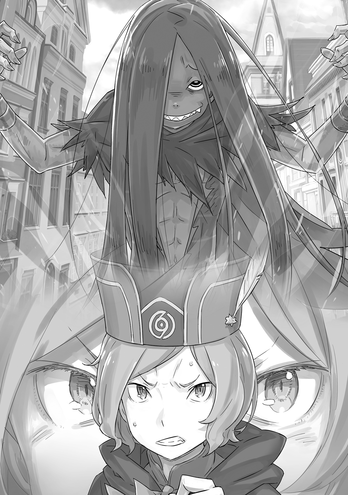

| Re：ゼロから始める異世界生活 18 | |
| 長月 達平 & 大塚 真一郎 | |
本作品を示すサムネイルなどのイメージ画像は、再ダウンロード時に予告なく変更される場合があります。
本作品は縦書きでレイアウトされています。
また、ご覧になるリーディングシステムにより、表示の差が認められることがあります。
口絵・本文イラスト●大塚真一郎
プロローグ 『濁流』
頭は熱く、思考は燃え上がる。
それなのに、体内を巡る血は冷えて、凍り付いていく感覚があった。
「──ォあッ！」
強く牙を噛み鳴らし、凍て付く血を強引に溶かして猛然と拳を叩き付ける。腕を覆った銀色の鋼、盾を纏った一撃が相手の太い腕を直撃、衝撃波が石畳をめくった。
渾身の一発、強烈な反動が肩を突き抜ける。だが、それが決定打となった感触はまるでない。むしろ、戦況を一手進めるごとに勝利が遠のく錯覚さえあった。
──ガーフィールの眼前、黒衣に覆われた異形の巨躯は揺るがない。
四対の双腕、都合八本の腕が荒々しく、暴力に最適化された動きで以てこちらの攻撃を受け止め、弾き返し、破壊を打ち込んでくる。
頬を、胸を、足を、殴られ、抉られ、血が爆ぜる。
痛みと衝撃に思考を散らされながら、ガーフィールは必死に敵に喰らいつく。
攻防一体の四本の大刀、それが『鬼包丁』と呼ばれる名刀であることを知っている。数多の戦士を薙ぎ払い、所有者を最強の『闘神』と言わしめた伝説の武装だ。
そうした逸話のある武器を、相手はまるで自分の手足の延長のように扱う。──否、実際そうなのだ。真に使い込まれた得物とは、戦士の体の一部となるものだ。
──つまり、『鬼包丁』を自らの肉体の一部同然に扱ってみせる、この敵は。
「──がッ!?」
直後、緩んだ思考の隙を抜いて、飛び込んでくる豪快な拳骨に顎をぶち砕かれた。
「ぶ、が......ぁっ」
骨が軋み、視界が真っ赤になる。打撃が脳を揺すり、膝の力が刹那だけ抜けた。だが、命を奪い合う最中、その刹那は十分致命的な刹那となる。
最強の名をほしいままにした『闘神』が、その刹那を見逃すはずもない。
構えられる四本の大刀が、それぞれ異なる軌道を描いて急所を抉りにくる。
頭部、頸部、胸部、腰部、いずれも直撃を受ければ死ぬか、戦闘不能は避けられない。そして、今のガーフィールに、その『死』を打ち払う余力はなく──、
歯噛みし、死中に活を求めて赤い視界を周囲へ巡らせる。指先を掠めるような命の悪足掻き、そんな必死を嘲笑うように、紅の景色に幻影が滑り込んだ。
──黒衣の、血色の微笑みを浮かべた女が、無様な自分を見下ろしていて。
「──しゃらくさいんじゃ、このボケがぁ!!」
瞬間、怒声が上がり、鋼と鋼が打ち合う音が、血肉の抉られる鈍い音が響く。
正面、動けぬガーフィールを庇ったのは、長い獣毛に覆われたたくましい背中──犬人のリカードが大鉈で大刀を受け、受け損なった一撃をも腰の太い骨で食い止めていた。
「ぐ、がぁ！ 痛いやないか、クソだらぁ！」
痛撃に罵声と血を吐いて、リカードが渾身の力で大鉈を振るい、大刀を払いのけた。その勢いに逆らわず、『闘神』が大きく後ろへ飛んで距離を取る。
生まれる間隙、頭を振って体勢を立て直し、庇ってくれた背中に並んだ。
「悪ィ、助かっ......」
「言うとる場合か、前見とかんかい！ 手抜きで勝てる相手やないぞ！」
「あ、あァ、そォだ！ 手抜きで、勝てるッ相手じゃァねェ......」
謝罪を遮られ、吠えるリカードの隣でガーフィールも己を鼓舞する。だが、それでも心に火が付かない。ずぶ濡れの野良猫のように、心は萎れたままだ。
歯痒さと焦燥感、膨れ上がる自憤が胸中で暴れ、今の自分を殺そうと叫んでいる。
ぐるぐるぐるぐると、頭の中では益体のない思考が溢れ、やはり自分を殺そうとする。
眼前、目を離すべきではない強敵がいる。それなのに、意識の一部は常に、視界の端をちらちらと横切る黒衣の女から引き剥がせない。
奪還すべき都市庁舎を目の前にしながら、自分たちの救援を待ち望む仲間を上に待たせながら──一秒でも早く、助けなければならない少女を苦しませたまま。
「あ、おォォォ──」
その、血染めの後悔を描いた瞬間、怒りが沸点を越え、全身の毛が逆立った。ぞわぞわと肌が粟立つ感覚があり、獣化の兆しが金色の獣毛となって現れる。
音を立てて骨格が変わり、小柄な体が一回り大きくなり始めた。そのまま、余計な思考も自分への憤慨も、何もかも噛み殺して、目の前の敵を滅ぼす大虎へ変貌する。
獣化し、何もかも薙ぎ払え、ガーフィール・ティンゼル。そうすれば──、
『──そうすれば、何もかもなかったことにできるのかしら？』
ふと、理性の蒸発しかけた意識を、妖艶な女の声音がくすぐった。
聞こえるはずのない、声。──それに、意識を奪われた直後だ。
「なんや!?」
空からの轟音に、傍らのリカードが頭上を仰いで目を見開いた。つられ、同じように顔を上げ、翠色の瞳が捉えた光景に唖然と意識を奪われる。
炎が、都市庁舎の最上階を焼いている。凄まじい爆風が窓を吹き飛ばし、ガラスを溶かす炎熱が建物の外まで溢れていた。
それをしたのは、半身を建物の中へ突っ込み、血塗れの翼をはためかせる黒竜だ。
──黒竜、それは憎き大敵、『色欲』の大罪司教。
「大将......ッ！」
今、その黒竜と戦っているはずの相手を呼んで、入れた力が牙から抜ける。強烈な炎に晒され、黒焦げの死体となる仲間を幻視して、心胆から震えが込み上げた。
──故に、直後にやってきた猛烈な変化への反応が遅れる。
「────」
それははるか彼方、都市の外壁から聞こえてきた轟音だ。何か、巨大なものが激しく軋む音が悲鳴のように街中に響き渡り、続けて、恐るべき変化が都市へやってくる。
緩やかに都市の中央、都市庁舎のあるこの場所へ近付いてくる、莫大な質量──それは靴裏、石畳から伝わる震動となり、本能が最大級の警鐘を打ち鳴らした。
「おい、おい、おい、冗談やないぞ......」
横で、リカードが頬を引きつらせる。雄々しく、恐れを知らない戦いを見せる彼であっても、まさかの事態にその声が掠れていた。
それはそうだろう。だって、この揺れと、今の轟音、その正体は──、
「──ガーフィール殿！ リカード殿！ 上へ！」
とっさに、思考停止した頭に鋭い声がかかった。
それは、同じ戦場を二分し、長剣の剣士と剣戟を交わしていた『剣鬼』の声だ。剣閃をぶつけ合い、敵と距離を取ったヴィルヘルムが叫び、その場で大きく上へ飛ぶ。
その、真っ直ぐ跳躍したヴィルヘルムの体が、押し寄せる高波を飛び越えられない。
「──っ」
半端な建物より高く、一気に流れ落ちてくる激流にヴィルヘルムが呑まれた。それを目の当たりにするガーフィールにも、一秒後、同じ衝撃がもたらされる。
強く、石畳を踏みしめ、衝撃に備え──、
「──ぶァッ！」
──そんな備えは、膨大な水の暴力の前に容易く引き剥がされた。
形となった大自然に直接殴られたような衝撃を受け、ガーフィールは全身を呑み込んだ水流の中に泡を吹き、真っ暗な世界で懸命に生存を手繰り寄せた。
やがて、指が何かに引っ掛かり、全霊でそれを引き寄せ、水面から顔を外へ出す。
「ぶはッ！ く、そがァ！ 誰が、どうなって......ッ」
激流の中、建物屋上の鉄柵を掴んだガーフィールが首を巡らせる。水の勢いは尋常ではなく、周囲一帯が完全に濁流に呑まれていた。かろうじて、いくつかの背の高い建物だけが水上に頭を出している状態。今も、指は引き剥がされそうで。
「オッサンと、『剣鬼』ァ......ッ」
ガーフィールと同じく、水の猛威に晒されたはずの両者を案じる。相対していた二人の敵も、その動向が気掛かりだ。──だが、その考えも、直後に掻き消える。
身動きできない正面、建物の半分が水に浸かった都市庁舎がある。その、炎に包まれた最上階から、翼を広げた黒竜が飛び立ち遠ざかりつつあったのだ。
満身創痍の黒竜、その足には器用にも、二人の人間が掴まれていた。
──緑髪の女性と、黒髪の少年の二人。
「た......」
翠の目を見開いて、届かない呼びかけを放とうと口を開いた。牙の隙間から水が流れ込み、息が苦しくなる。指が、鉄柵から引き剥がされて。
そのまま、敵が二人を連れ去るのを見ているしかないのかと──、
「──ぁ？」
忸怩たる思いが、せめて敵から目を離すまいとガーフィールを水に抗わせた。その視界で、突如として黒竜の飛空が乱れ、けたたましい絶叫が上がる。
原因は、黒竜の翼へ喰らいついた大蛇の牙だ。いきなり現れた巨大な蛇が翼に牙を突き立て、飛んで逃げる黒竜を臆病者と罵り、残酷に引き裂く。
そして、次の瞬間、激しく身悶えした黒竜の足から、少年の体が放り出された。
「────」
ただ、目を見開いて、ガーフィールはそれを見ていた。
頭から落ちる黒髪の少年が、都市を呑み込む水流へと沈んでいく姿を。意識のないまま落水し、無抵抗に激流に流され、手の届かぬ場所へ、遠くへ、いくのを。
「待って......ぁ」
水底へ、見えなくなる背中に手を伸ばし、疎かにされた自分の体が水に流される。必死に水から頭を出して、遠くなる光景に口を開け、ガーフィールは叫んだ。
「──ッッ!!」
──水没した、ナツキ・スバルの存在を求めて、不甲斐ない己を呪うように。
──声にならない声で、叫び続けた。
第一章 『敗戦処理』
１
「──エミリア、君は処女かな？ それだけは、本当に大事なことだからさ」
何を言われたのかと、エミリアは一瞬、完全に思考が停止した。
「────」
突然のことに、驚きはある。だが、そもそも状況が状況だ。頭が、うまくこの奇妙な対峙と異常事態を受け止め切れていない。
裸身に、一枚のブランケットを纏っただけの姿で、エミリアは深く息をする。
理解の困難な状況、その事態の把握に努めるエミリアの脳裏を、直近の記憶が蘇る。
──同じ、王選候補者であるアナスタシアに招待され、エミリアはルグニカ王国の五大都市の一つである、水門都市プリステラへとやってきた。
そこで、同じくアナスタシアの招待を受けていたクルシュやフェルトと合流し、王選候補者とその関係者同士、仲良く和やかな時間を過ごしていたのだ。
そうして一晩明け、波乱含みの朝食の席を過ごし、スバルやベアトリスと一緒に出掛けた先で、エミリアは知己であった『歌姫』リリアナと再会し──、
その後、ベアトリスと二人で大罪司教に挑もうとするスバルに助力し、敵と戦った。
全身を包帯で覆い、炎と鎖を操る恐ろしい強敵だった。エミリアも奮戦したが、結果的に敗戦濃厚の状態へ追い詰められ、そのまま──どうなったのか。
気付けば、エミリアは見知らぬ建物、見知らぬ一室、見知らぬベッドで目を覚ました。そして、何事かと確かめるために部屋の外へ踏み出し、この状況だ。
廊下で出くわした白い青年、彼を前に身動きを封じられ、呼吸を忘れさせられて。
──いったい、この青年は何者で、この場所はどこで、自分はどうしてここにいるのか。
「ごめんごめん。どうやら、驚かせてしまったみたいだね。これは素直に僕の失態だ」
と、息を呑んで考え込むエミリアの前で、白髪の青年──レグルス・コルニアスと名乗った人物が微笑み、軽く手を上げた。
「いきなりで悪かったね。素直に謝罪するよ。僕はほら、悪いと思えば素直に謝れる人間だからさ。世の中、自分の非を認められずに言い訳を重ねる見苦しい人っているじゃない？ でも、僕はそういう器の小さい、卑賤な人間とは根底から違うからさ。そうだろう？」
「えっと......素直に謝れるのは大事、よね？」
「そう！ そうだよ、謝るのは大事さ。よかった。こんな当たり前のことがわからない人間が世の中殊の外多い。その認識が共有できたなら、君と僕の夫婦生活はうまくやっていけるだろう。一安心したよ。やっぱり、君と僕とは運命が結び付けた関係なんだ」
戸惑うエミリアを余所に、レグルスは目を輝かせながら何度も頷く。そうして、彼はエミリアを上から下まで眺めながら、「だからこそ」と言葉を続け、
「僕は下世話な好奇心で、君の貞操を知りたがってるわけじゃない。何度も言うけど、僕は夫で君は妻だ。夫婦ってものは強い愛情と思いやりで結ばれてなきゃならない。その関係を維持する上で、全てを相手に委ねるのは必然だ。だから、確信が欲しいんだよ」
「確信って......」
「君が、他の男に触れられていない確信だ。でも、これも全ては愛情故のことだよ。だから、君に嫌な思いをさせるかもしれないけど聞くんだ。これは夫の、男の、義務だよ」
流暢に流暢に、レグルスは自分の考えをつらつらと語り続ける。その勢いに翻弄されながら、エミリアはレグルス自身に奇妙な違和感を覚えていた。
「────」
もちろん、彼の主張の強さに気圧されているのもある。だが、それだけではない。
レグルスの、彼の姿に、声に、記憶の奥底で疼くものがある。それが、いったい何なのかがわからない。わからないまま、違和感は指の隙間をこぼれ落ちていく。
ただ一つ、言えることもある。それは、彼が非常に重要視している単語──、
「それで、改めて聞きたい。──エミリア、君は処女かな？ どうなんだい？」
「あの、そのショジョってなに？ ごめんなさい。私、聞いたことがなくて」
「......なに？」
重ねられた問いかけに、エミリアは申し訳なさそうに紫紺の瞳を伏せた。
レグルスの強い拘りを感じる単語なのだが、エミリアにはその『ショジョ』なる響きに心当たりがない。そんなエミリアの返答を受け、レグルスの表情が強張った。
そして、沈黙を不安に思い始めたエミリアの前で、彼はカッと目を見開くと、
「──素晴らしい。君は、僕の思い描いた理想の乙女そのものだよ！」
そう言って、エミリアの手を取ったレグルスは溌溂とした笑みを浮かべていた。
その笑顔を目の当たりにして、エミリアは驚きに目を丸くする。だが、レグルスはそんな反応を意に介さず、欲しいオモチャを手に入れた子どものように大はしゃぎだ。
彼はその場で何度も頷いて、その双眸を爛々と輝かせながら足踏みすると、
「そう、そうだよ！ 体の処女性なんて、試金石として相応しくないんじゃないかと薄々感じてたんだ。そう、真の純粋性とは心に宿る。体が処女は当たり前！ 本当に大事なのはその心まで処女であること......君は、満たされた僕に新たな真理を示してくれた！」
「えっと、そう、なの......？」
「ああ、そうだとも。そして、君は僕の妻として文句なしの合格だ。今後、新しい妻には処女かどうかなんて馬鹿馬鹿しい質問をしなくて済む。処女の意味を知らないぐらい綺麗な子じゃないと、妻の価値が下がる。心が姦通していたら、僕の妻には相応しくない」
エミリアの手を離して、レグルスはご満悦な様子で未来の展望を語っている。
その彼の発言の真意が、エミリアにはイマイチ伝わってこない。そもそも、彼がしきりに告げる夫婦の話が、エミリアにとっては寝耳に水の話なのだ。
エミリアの認識では、『夫婦』とは互いに好き合ったお父さんとお母さんのことである。それが、レグルスの語る夫婦像と一致しない。
それとも、彼が語るのはエミリアの知らない『フーフ』という単語の話なのだろうか。
「おっと、長話が過ぎたね。いつまでも君をそんな格好で立たせておくわけにはいかない。すぐに着替えを用意させるよ。──おいで、百八十四番」
困惑に口を噤むエミリアを見て、レグルスが手を叩いてそう言った。すると、扉の開く音がして、二人だけの廊下に新たな人影が姿を現す。
「────」
それは、長い金髪に楚々とした佇まいが似合う、美しい白装の女性だ。穢れのない純白の装いは、同じく白い印象が強いレグルスに合わせたものだろうか。
女性は無言のままレグルスの傍らに控えると、恭しく一礼してエミリアを見つめた。
その、感情の存在しない、人形のような瞳にエミリアは微かに息を詰める。
「彼女......七十九番に着替えを。準備が出来次第、他の子たちを手伝って式の準備を進めるように。君たちと同じ立場になる子だ。仲良く面倒を見てあげるんだよ」
「────」
「うん。言いつけ通り、笑わなくなったじゃないか。──いい子だ。良妻だね」
無言、無表情で頷くばかりの女性に、レグルスは満足げに微笑んだ。
それから彼は、いまだ事情を掴めずにいるエミリアに歩み寄ると、何気ない仕草でこちらの銀髪へ手を伸ばし、長い髪を無遠慮に撫でてくる。
その手つきに、エミリアは黒髪の少年との、明確な感じ方の違いに身を硬くした。
「それじゃ、またあとで。可愛らしくしてくるんだよ」
「ええ......」
疑問と、抵抗感があった。
だが同時に、逆らうべきではないと、エミリアの本能がそう訴えかけてきている。
──レグルス・コルニアスは、強大な力の持ち主だ。おぞましいほどに。
「いい子だ」
エミリアの短い言葉に頷くと、微笑むレグルスが悠然とこちらに背を向けた。そのまま廊下の向こうへ消える背中を見送り、エミリアの肩からドッと力が抜ける。
無意識に極度の緊張を抱くほど、エミリアの体はレグルスを強く警戒していたらしい。
ただそこにいるだけで、レグルスの脅威は『大兎』の群れにも匹敵して──、
「──こちらへ」
と、立ち尽くすエミリアに、共に廊下に残った女性が声をかけてくる。
初めて聞いた女性の声は、完璧に調律された弦楽器を思わせる美声だ。だが、表情と同じで声にも感情がなく、そのことがエミリアにはどこか痛々しく感じられた。
「お着替えを」
「あの、それはすごーく助かるんだけど、聞きたいことがいっぱいあるの。まず、ここはどこなの？ 私、プリステラの大広場にいて......あ、待って！」
質問するエミリアを無視して、女性がさっさと歩き出してしまう。
「ねえ、お願いだから聞いて。私、みんなに連絡しないといけないの。きっと心配してるはずだし、広場がどうなったかも心配だし......」
「────」
「ねえったら、聞いてる？ 聞いてない？ ......もうっ」
前を行く女性はぴんと背筋を伸ばして、エミリアの話に一切耳を貸してくれない。
そうして質問をことごとく聞き流され、頬を膨らませるエミリアが案内されたのは、最初に目覚めた部屋の隣室だった。その部屋には多数の衣裳や装飾品が揃えられていて、まるでお城の衣裳部屋のような様相を呈している。
ただ、最初の寝室同様、この部屋の雰囲気も建物全体の無機質なそれと趣が違って。
「たくさん服があるけど......これって、元々この部屋にあったものじゃないわよね？」
「全て旦那様が持ち込まれたものです。──七十九番、お着替えを」
「──。その七十九番って、私のことなの？ さっきの人......レグルスも、私をそんな風に呼んでたけど、あなたは？」
「百八十四番です。あなたと同じ、彼の妻の」
部屋の扉を閉めて、入口を背にした女性──百八十四番を名乗る女性が会話に応じてくれる。変わらず感情の凍えた声だが、ようやく会話ができそうでホッとした。
「よかった、やっとお話してくれるのね。えっと、百八十......」
「百八十四番。気を付けてください。彼は、その番号にも拘りますから」
「......番号のことも気になるけど、さっきから話してる『妻』って奥さんって意味で合ってる？ だったら私、レグルスの奥さんになったつもりなんてないんだけど......」
忠告のような言葉を受け、エミリアが自分の胸に手を当てる。我が身を振り返っても、レグルスと結婚の約束を交わした記憶はない。
そんなエミリアの疑問に、百八十四番はほんのわずかに目を細めて、
「あなたにそのつもりがなくても、彼はそのつもりです。そして、彼がそのつもりであるということは、あなたの意思は関係ないということです」
「そんなのっておかしいわ。結婚って、好き合ってる男の人と女の人がすることのはずでしょう？ 私、レグルスのことなんて全然知らないのに」
それで結婚などと言われても、エミリアには全くピンとこない。百八十四番の物言いからすると、レグルスの姿勢は良い夫というよりは──、
「──本で読んだ、悪い王様みたい」
「────」
王選の関係でまだまだ勉強中のエミリアだが、歴史書には様々な王が名を連ね、中には良くない形で名前を残したものもいると聞く。──その一例が、独裁者だ。
他者の話を聞かず、我意ばかりを通すならそれは独裁者の在り方に他ならない。
「......言い得て妙です」
「え？」
「彼の在り方は確かに王様......『小さな王』の名に相応しいでしょうね」
エミリアの言葉に、百八十四番が何事か小さな声で呟く。とっさに聞き取りにくい声にエミリアが聞き返すと、彼女はすぐに唇を固く結んで、
「──。お着替えを」
「あ、ちょっと」
失言を隠すように、百八十四番が聞く耳を持たない強硬な姿勢を示す。そのまま、彼女はエミリアが纏った薄布を剥ごうと、一歩こちらへ近付いて──、
「──っ!?」
──ふいの、激しい音と衝撃が都市を揺らしたのはその瞬間だった。
「危ないっ！」
突然の揺れと轟音に、姿勢を崩した百八十四番をエミリアが支える。それから、エミリアは弾かれたように振り返り、衣裳部屋の窓へ飛びついた。そこから窓の外、轟音の原因を探ろうと目を凝らし、その驚くべき光景を目にする。
「あれって......水門!?」
唇を震わせ、紫紺の瞳を見開くエミリアの視界で、大水門──都市中に張り巡らされた水路、その水量を調節するための門が激しい音を立てながら開かれていく。
開門に従い、せき止められていた水が一気に都市に流れ込む。プリステラはすり鉢状の構造をした都市である。水は低い方へ、都市の中央へと流れていくのがわかった。
遠く、都市の真ん中にそびえ立つのは、都市の中枢である都市庁舎だ。──その、背の高い建物が流れ込む水に呑まれていく。
「そんな......」
路上は溢れ出した水に呑まれ、人も物もあらゆるものが押し流される。そんな阿鼻叫喚の光景を幻視して、エミリアは窓枠を掴んで呆然としていた。
想像を絶する光景、それはエミリアの意識のない間に、都市を奔走する人々がそれぞれの懸命を尽くした結果──いったい、何が起こっていたのか。
都市の人々や、同じく都市にいた王選候補者、その関係者たちは無事でいるのか。
そして──、
「──スバル」
自分の騎士である少年は、この激動の都市の中、無事でいてくれるのか。
その無事を祈るように、エミリアは黒髪の少年の笑顔を願い、そっと目をつむった。
祈るように、願うように。──エミリアは、そっと目をつむった。
２
──遠く、遠く、声が木霊している。
「────」
誰のものか、わからない声だ。どこから聞こえているのか、わからない声だ。
男か、女か、若いか、老いているか、上からか、下からか、わからない声だ。
それは雄叫びのような声だった。それは嘆くような声だった。
それは糾弾であり、すすり泣きであり、怒号であり、慟哭でもあった。
滝のように降り注ぎ、高波のように押し流し、渦のように纏わりついて離れない。
まるで、ようやく出会えた誰かに、長年の胸の内を打ち明けるかのように。
とめどなく溢れる声の濁流に呑まれ、自分の居場所がわからなくなる。
「────」
手も、足も、頭も、尻も、胸も、背中も、全部が溶け合い、混ざり合い、蕩け合う。
その膨大な声の中、唯一確かだった『自分』が溶けていって、形がなくなる。飛散するように『自分』が掻き消え、無数の声だけが全てとなって。
声は黒い澱みとなって、『自分』を溶かし、溶けたそれを飲み干さんとしている。
そのまま澱みに溶け切って、抗うことのできない緩やかな終わりに身を委ねてしまおうとして、気付く。──『自分』の芯に絡みつく、ほどけぬ糸が澱みを拒んでいる。
「────」
『自分』の内側で蠢くモノ、黒い澱みに抗わんとするほどけぬ糸──それが互いに『自分』の占有権を主張し、争い合い、奪い合い、殺し合う。
それはやがて、やがて──、
３
「──愚物めが。いったい、いつまで呑気な間抜け面を晒しておるか」
「ぎ、やぁぁぁぁ──ッ!!」
紅蓮の炎に顔面を掴まれる感覚を味わい、ナツキ・スバルは絶叫と共に覚醒した。
猛烈な熱量が顔を覆い、眼球の焼かれる痛みにスバルは跳ね起きる。そのまま顔を押さえて地面を転がり、「ぐあああ！」と悲鳴を上げながらのた打ち回った。
どくどくと、心臓の音がやかましい。全身の血が沸騰したような灼熱──、
「な、何が、何が、あった......？」
「ほう、これは何とも哀れなものよ。ただでさえ出来の悪い頭が、多量の水で漂白されて中身が消えたと見える。こうなると、もはや道化の役目も満足に果たせまいな」
「......その、傍若無人かつ傲岸不遜な物言いは」
悪罵同然の女の声に、スバルは滲む涙を拭いながら振り返った。ぼやけた視界の曇りが晴れ、鮮明になった世界に立つのは、美しく鮮烈な赤い印象を纏った少女──、
「──プリシラ、か？」
スバルの問いに、眼前の美少女──プリシラが「ふん」と尊大に鼻を鳴らした。
彼女は自身の豊満な胸を誇示するように腕を組むと、
「他の誰に見える？ 妾ほどの美貌の持ち主はこの世に二人といまい。そのような明白な事象も見極められぬ瞳なら、いっそ抉って捨てた方が身軽でよかろうよ」
「いいわけあるか！ 大体、美少女度で言えば王選候補者はお前に匹敵する逸材揃いと主張したい。......って、そんな話はどうでもいい！」
我が道を行くプリシラに呑まれ、反射的に憎まれ口を叩いたスバルは我に返る。
途切れた意識からの覚醒、そして眼前のプリシラだ。最初に思い当たるのは、噴水公園を起点とした『死に戻り』の発生だった。それは刻限塔広場で、『憤怒』の大罪司教であるシリウスの蛮行が実行される前の時間軸になる。
まさか、死んでその瞬間に舞い戻ってきたのかとスバルは考えたが──、
「ここ、どこだ......？」
その想定は、見慣れない周囲の景色を確認して即座に打ち消された。
自然の緑が溢れていた噴水公園と違い、スバルが今いるのは狭い路地の一角だ。──それも、何故か盛大に水浸しとなった路地の中。
「いや、水浸しなのは路地だけじゃなく、俺も......？ びしょびしょじゃねぇか」
ジャージの裾を摘んで、スバルはぐっしょりと濡れた自分の状態に困惑する。
全身、まるで服を着たまま風呂に飛び込んだようにずぶ濡れだ。意識のない間に豪雨にでもあったのか、さもなければ──、
「まさか、水路に落ちたか、氾濫でもしたとか......」
「──いぃえぇ！ まさかも何もその通りですよ、ナツキ様！ 不肖このリリアナ、あまりの事態に足の震えが止まらんくて新作の踊りみたいな有様に！ この様にっ！」
怖々とした推測を、唐突な楽器の音色と勢いのある声に肯定される。その声と音楽は、プリシラの後ろからひょっこりと姿を見せた人影のものだ。
褐色肌に、奇天烈でアグレッシブな言動が光る、水門都市稀代の『歌姫』──、
「お前、リリアナ！ よく無事で......プリシラと一緒にいたのかよ！」
「いやだって！ ナツキ様もエミリア様も幼女様も、揃って私とプリシラ様を公園に置き去りじゃないですか！ そしたら都市がこんなてんやわんやしちゃって、もう怖くて怖くて頼れるプリシラ様のお傍を離れられませんよぅ」
そう言って、躊躇いなく弱音を吐いたリリアナがプリシラの腰にひしっと抱き着く。
普段のプリシラならば不敬と斬り捨てかねない暴挙だが、不思議と彼女はリリアナの才能に寛大だ。小鹿のように震えるリリアナの頭を撫で、プリシラは頷く。
「この歌女の言う通り、貴様らが公園を立ち去ってしばらくして、雑多で無粋な輩が水門都市の水を汚した。その暴挙、いくら妾が慈悲深くとも許せるものではない。故に、妾が直々に首を刎ねてやろうとしていた矢先、水に浮かぶ凡愚を見たのよ」
「へえ、なるほど。水に浮かぶ凡愚......それ、もしかして俺のことか？」
自分を指差すスバルに、プリシラが「他にいるのか？」と言いたげに鼻を鳴らした。それを肯定と受け取り、スバルの頭の中の混迷がますます深まる。
「俺が水に浮かんでた......？ なんだそりゃ、意味がわからねぇ......」
直前の記憶を辿れば、スバルがいた場所はプリステラの都市庁舎の最上階だった。そこでスバルはおぞましき怪物、『色欲』の大罪司教に敗北を喫したのだ。
『色欲』の権能で自在に姿を変える怪物、カペラの猛攻をしのぎ切れず、スバルは右足を食い千切られ、大量に出血して、激痛に悶えながら意識が──、
「なのに、足がある。くっついてる。包帯はほどけてるけど......う、ぁ!?」
元々重傷だった右足に巻かれていた包帯、血と水に浸されて気持ち悪い状態で引きずっていたそれを外して、足の状態を確かめたスバルが悲鳴を上げる。
「ど、どうされましたって、うひぃっ!? ななな、なんです、それ!?」
「────」
スバルの悲鳴に、足の様子を覗き込んだリリアナが青い顔で叫んだ。その横ではプリシラも、嫌悪の強い眼差しをスバルの足に向けている。
三人の視線の先、カペラとの戦いで千切れたはずのスバルの右足がある。記憶と違い、足は確かに繋がっていた。──その傷を、黒く醜い肉腫に侵食されながら。
「────」
足に、痛みはない。
視覚的な衝撃を呑み込み、破れたズボンをまくると、黒く蠢く肉腫は足の傷から血管のように網目状に広がっていた。触れると弾力があり、質感に人肌との違いはない。
見た目さえ無視すれば、足は完治したと嘯くこともできそうだが。
「言っておくが、妾たちが見つけた貴様の五体は繋がっておった。その醜い足に妾たちの関与はない。その顔を見れば、生まれつきでないのは知れるがな」
「......自分の足に、勝手に気持ち悪い刺繍が入ってた衝撃に打ちのめされてるとこ、補足してくれてありがとよ。......治癒魔法の効果、じゃないよな」
プリシラの声に頷いて、スバルは一番可能性の高い選択肢を頭から外す。
スバルの知る限り、治癒魔法の効果とは人体の再生能力の向上だ。『復元』ではないのだから、体には傷跡が残ることもある。スバルの体にも、そうした傷跡は多い。
だが、スバルの肉体を侵した黒い変調は、その傷跡とは全くの別物だった。
これは。これは断じて、治癒魔法の効果ではない。──スバルの知る治癒魔法とは、もっと柔らかく、温かで、体だけではなく心まで救う奇跡の力だった。
フェリスが誇りを抱くように、ベアトリスが自然と修めたように、ガーフィールが願いのために学んだように、レムがひたむきな真摯さで伸ばしたように。
──その奇跡を、この黒い紋様は冒涜している。
「念のために聞くが、凡愚。貴様のその足、よもや元々、千切れても勝手に繋がるような奇妙な代物であったなどと言うまいな？」
「ホントに聞くだけ聞いたって感じの質問だな。ああ、そんな足じゃねぇよ。前にも千切れたことがあるけど、そんときは死に......かけたからな」
「前にも千切れたってどげな経験ですか!? ナツキ様の人生が過酷すぎる！」
非常識な質問に非常識な回答があり、リリアナのテンションが不謹慎に上下する。
ともあれ、以前の経験を振り返ると、少なくとも一度目のときはくっつく気配すらなかった。その後も、爆発的な再生力を得る経験は特になかったはず。
そのスバルの回答に、プリシラは「なるほどな」と鷹揚に頷いて──、
「声は上げるな」
短く命令して、プリシラが手にした扇を素早く振った。赤い軌跡を目で追えず、スバルとリリアナは何事かと目を剥く。だが、プリシラの狙いは直後に明らかになった。
「──づッ！」
微かな痺れを先触れに、スバルの足を灼熱が襲った。見れば、プリシラの扇の先端が足を掠め、その黒く侵された大腿部に真一文字の傷を刻んでいたのだ。
ただの扇でそれをやる技量、いきなり人の足を斬りつける精神性。二種類の驚きがスバルを襲ったが、それも続く光景を目にした途端に頭から消える。
骨が見えるほど深く斬られた足の傷──それが、まるで蠢く黒い肉腫に食い尽くされるように覆われ、ほんの数秒で『なかった』ことになったのだ。
「────」
自分の右足で起こった醜悪な奇跡に声もなく、スバルは指で肉腫に触れる。
傷のあった場所には何の不具合もない。痛みも、また完全に消えていた。
「あのあのあの、足の具合に、おかしなところがあったりしたりしなかったり......」
「異常なしってのが異常だ。マジか、俺の足。ちょっとどうなってんだ......」
怖々としたリリアナの質問に応じ、スバルは自分の足の『不自然治癒』に愕然とする。
右足の、異常事態。いったい、これは何が原因で発生したものなのか。
「──カペラの奴が、俺の足に血を垂らしてた、か？」
右足が吹き飛び、大量の出血と激痛に意識が朦朧としていたときのことだ。
はっきりと断言できるほど鮮明な記憶ではないが、カペラが自分の手首を傷付け、そこから滴る血をスバルの傷に浴びせたことは間違いないと思う。
その、おぞましい苦痛の中、カペラは確か、言っていたはずだ。
「見苦しい肉の塊になるとか、クルシュさんにも同じことをしたとか......」
「傷に己の血を垂らす、か。呪術的な要因が濃いな。北方の陰気な術師が好む術法には、迂遠な儀式を媒介とした術式が多いと聞く。その類か？」
「呪術、呪い......そうだ、血の呪い。そう、龍だ！ 龍の血、そう言ってた！」
プリシラの低い声に喚起され、霞んだ記憶を探り当ててスバルは手を打った。
意識が途切れる寸前、カペラは血を浴びて悶えるスバルを見ながら、自分の血には龍の血が紛れていると、そうのたまっていた。
それが比喩か虚言かは別として、この異常性の手掛かりにはなるはずだ。
「龍の血......ルグニカ王家に神龍が授けた、三つの至宝の一つじゃな」
「詳しいことはわかんねぇよ。でも、そういうアイテムがあるって話は......」
「──枯れた大地に豊穣を。刻まれた滅びに再生を。まつろわぬ病をたちどころに癒し、拭えぬ絶望を打ち払う光をもたらす。それこそが偉大なる龍、神龍の血潮」
「────」
ふと、眉を顰めたスバルの鼓膜に密やかな旋律と歌が飛び込んでくる。見れば、神妙な顔をしたリリアナが、リュリーレの弦を弾いて歌を口ずさんでいた。
彼女はスバルの視線を受け、その場で厳かに一礼すると、
「ルグニカ王国に伝わる、『神龍』ボルカニカとの友誼の一節、ですね。神龍が王国に与えた至宝は、『血』と『竜歴石』、それと『盟約』だそうですから」
「......聞いた感じ、ずいぶんと万能そうだな、龍の血」
歌と伝承が絡むといきなり人の変わるリリアナに圧倒されつつ、スバルは彼女が口ずさんだ一節と、自分の右足の状態とを見比べる。
『滅びの再生』と『病を癒す』のあたりはニアピンだが、『大地の豊穣』と『絶望を打ち払う光』の部分は、このどす黒い紋様を見ると何とも疑わしいものだった。
根拠がカペラの発言だと思うと、その疑わしさもより肥大化する。
「得体は知れないけど、都市庁舎にいく前のケガも治ってるってプラスに考えれば......って、痛ぇっ！ おまっ、何しやがる!?」
「やいのやいのとやかましい。この程度で騒ぎ立てるでないわ」
と、扇でスバルのうなじを掠めたプリシラが退屈そうに言い放つ。彼女は扇の先端を眺め、スバルの肌を削ったそれを指で払うと、
「ふむ。どうやら足以外の傷は治らんと見える。仮にこれが龍の血の恩恵だというなら、神龍も伝承ほど大それた存在ではないらしいな」
「はぁ!? なんてこと言いよりますか、プリシラ様！ あーた、いくらプリシラ様が巨乳で美女で巨乳でも、言っていいことと悪いことがあるでしょうが！ いくら巨乳でも！」
「ほう、歌女が妾に逆らうか。よほど神龍を貶められたのが腹に据えかねたか？」
「当然ですとも！『神龍』ボルカニカは生ける伝説！ 伝説を歌い継ぐ私たち、吟遊詩人って生き物にとって大恩人も同然！ それを馬鹿にされたとあっちゃ、あまつさえそれを見過ごしたとあっちゃ、リリアナの名前と本人が泣きますよぅ！」
「その意気や良し。ならばどうする？ 如何にして妾の言を撤回させる？」
「今ここで、ナツキ様の首を刎ねてください！ 『神龍』の力が、奇跡が！ たちどころにナツキ様の斬れた首を繋げてご覧にいれませうっ！ さあ、どうぞ！」
「繋がるわけねぇだろ!!」
屏風から虎を出してくれ、みたいな一幕の展開にスバルが唾を飛ばして吠える。
生憎と、うなじの傷は今もじわじわと痛む。プリシラの言葉通り、スバルの傷が治るのは右足限定、それも黒い肉腫の周辺だけと見た方が安牌だ。
「つーか、それどころじゃねぇ。龍の血の真贋はどうあれ、俺の足がこの調子ならクルシュさんが心配だ。この足と同じ目に遭ってたら......いや、それ以前に」
右足の異常を棚上げにして、スバルはようやく最初の疑問に立ち返る。
足の変調が忘れさせた疑問──そもそも、何故、スバルは水路に浮いていたのか。
「他のみんなはどうしちまったんだ？ ガーフィールも、ヴィルヘルムさんたちも一緒に戦ってたはずなのに......」
「あー、えーとですね、ナツキ様。その理由でしたら、実はですね......」
「わかるのか!?」
前のめりに食いつくスバルに、挙手したリリアナがその手を路地の彼方へ向けた。それを視線で辿り、スバルは困惑する。何も、特別なものは見当たらない。その方角にあるのは都市を囲む外壁と、街の四方にある大水門の一つで──、
「──ぁ」
ふと、そこまで考えて、スバルは水浸しの自分と、路地の状態を思い出した。
リリアナも、最初に言っていたではないか。──水路が、氾濫したのだと。
「如何に愚昧な輩であろうと、ここまでくれば気付けもしよう」
そうして、唖然とした声を漏らしたスバルの横顔に、紅の瞳をした女が頷く。
プリシラは音を立てて扇を開くと、自らの唇を隠しながら、告げる。
「貴様の察した通りよ。──大水門が開かれ、流れ込んだ水が都市の一切合切を押し流していった。貴様が浮いておったのも、それに呑まれたからであろうな」
４
──都市の大水門の開放、それによる大量の水の流入がプリステラを呑み込んだ。
大水は都市の大水路から溢れ返り、鉄砲水となって都市の全域へ。流れ込んだ水の量は尋常ではなく、一時は都市の半分近くが水没しかけたほどだという。
水浸しの路地はその名残で、同じような光景は今や都市のあちこちで散見される。そんな中、スバルが生きて水路で発見されたのは奇跡的なことだったのだと。
「不幸中の幸いは、いっぺん開いた門がまたすぐ閉じたことです。住民の方々もほとんどは避難所に逃げ込んでましたし、開きっ放しよりずっとマシで......」
「──でも、全員じゃない」
「......とは、思います。悲しくて残念で無念で胸の張り裂けるお話ではありますが」
説明を終えたリリアナが、スバルの悔恨の響きを交えた呟きに首肯する。
リリアナのおかげで、スバルの意識のない間、都市で何が起きたのか大まかに掴めた。
大水門の開放による大水害、それを実行するには制御塔から水門を操作する必要がある。今、この都市でそれができるのは塔を占拠した魔女教だけ。
つまり、都市を襲った水害は魔女教の仕業であり──、
「都市庁舎へ攻撃を仕掛けたことへの報復行為、か。道理じゃな」
「──っ」
「なんじゃ。まさか、行動の結果が己に跳ね返らぬと思い込んでいたなどと言うまい？ 貴様らが動けば相手も動く。見せ札を切るのも序盤の定石よ」
淡々と、スバルと同じ結論に至ったプリシラが容赦なくそう言い切った。そのままプリシラは、頬を硬くするスバルに構わず「むしろ」と続け、
「妾には、この程度で済ませたのが手緩いとすら感じる。噂に聞き及ぶ醜悪な烏合とあれば、もっと唾棄すべき行いがあるものと思ったが......やはり、奴輩が放送で求めた代物、その優先度が相応に高いと見るべきじゃな」
そよそよと扇を揺らしながら、プリシラが魔女教の思惑を推し量る。その冷酷な思考の流れを聞きながら、スバルは現況を招いた自覚が歯痒かった。
ただでさえ、スバルはここまで水門都市で全敗を喫している。
シリウスには三度殺され、レグルスにはエミリアを連れ去られ、ベアトリスはスバルの代わりに昏睡し、仲間たちと挑んだ都市庁舎でもカペラの掌で踊らされ、ついには都市を魔女教の悪意に水没させられかけた。──情けなさで憤死しそうだ。
「あのあの、ナツキ様。そう思い詰めないでください。確かに状況は最低最悪、もう手足縛られて水路に放り込まれたんかーい！ ってくらい息苦しくてヤバヤバですが！」
掌で顔を覆い、天を仰ぐスバルの横でリリアナが手足をパタパタさせる。細い体でリュリーレを抱きながら、頭の両端で結んだ髪をピコピコ揺するリリアナは懸命だ。
この状況に折れていないだけ、彼女は立派だ。十分、称賛に値する。
そしてそれは──、
「──あああ！ クソ！ 負けてられっか、チクショウ！ やったらぁ！」
「うわぉう!?」
顔を覆っていた手を拳にして、そう吠えたスバルにも同じことが言えた。
そのスバルの雄叫びに、励まし態勢でいたリリアナが仰天して後ろのプリシラに飛びつく。さすがに避けられ、払いのけられた。「うぎゃんっ」と路面に張り付くリリアナを足下に、プリシラが『初めて』に近い関心を込め、スバルを見る。
「意外じゃな。これしきのことで心は折れぬと、そういうことか？」
「それそのものかは別として、それに近いもんだ。このぐらい、性悪魔女の『試練』と比べりゃ屁でもねぇ。──まだ、勝手に諦めるには何もかも早すぎんだよ」
戦績は全敗、右足は理解できない黒塗り状態、都市の状況は悪化の一途──だが、生憎と、それで折れてやれるほど可愛げのある魂はしていない。
状況を把握し、覚悟は力ずくで決めた。今、スバルがやるべきことは──、
「──都市庁舎と、ミューズ商会に残った奴らとの合流だ。それで形勢を立て直して、今度こそ連中をこの都市から追っ払う」
「できるのか？」
「できるできないじゃなく、やるやらねぇの話だ。で、やらねぇって選択肢がねぇよ。どう足掻くにせよ、今は仲間との合流が最優先。お前はどうする？」
「────」
スバルの問いかけに、プリシラの双眸で炎が揺らめいた。無言のまま、スバルに言葉の先を促しているプリシラ。その彼女にスバルは「あのな」と言葉を続け、
「『水の羽衣亭』でのことは忘れてねぇし、何なら根に持っちゃいるが、それとこれとは話は別だ。知ってる顔の安全がわかってた方がホッとするし、ちょっと前までアルは俺たちと一緒に行動してた。俺らといた方が合流しやすいかもしれねぇぞ」
「アルが貴様らと？」
「ああ、今は別れたけどな。お前を探して都市をさすらってるはずだ」
都市庁舎の奪還作戦前に別行動を選んだアルだが、件の大水に巻き込まれてないかが気掛かりだ。飄々と、抜け目のない印象のある男だけに無事だと思いたいが。
そんなスバルの報告を受け、プリシラはしばし考え込むと、
「貴様の考えはわかった。が、妾には先にやるべきことがある。それを後回しにして、貴様の誘いに乗るつもりはない」
「先にやることって......」
「──じゃが、先の気概は悪くはなかった。故に、褒美を取らせる」
「褒美？」
誘いを断られ、代わりの思わぬ返答にスバルが首を傾げた。
直後、腕を伸ばしたプリシラが、スバルの胸倉を掴んで地面に引き倒した。「ぐぁ!?」と悲鳴を上げ、スバルはリリアナの隣に仲良くべしゃりと張り付く。
そして、そのいきなりのプリシラの乱暴に抗議しようと顔を上げ──、
「おまっ、いきなり何しやが......っ!?」
──プリシラに猛然と飛び掛かる、奇妙なシルエットをその目にした。
「──ッッ!!」
禍々しい咆哮を上げ、高々と跳躍したのは異形のフォルムを持つ存在だった。
短い獣のような四足、裂けた口から伸びるねじくれた牙、それだけなら外見の醜い獣と思えたが、そこから先が異常だ。──背や胴体から、剣や槍が『生えて』いた。
所有でも、刺さっているのでもない。体から武器が生えている。
──文字通り、それは肉と鋼の融合した、おぞましき異形のシルエットだ。
「魔獣......でもない！ なんだ!?」
「おごしゃーっ！ 亜獣ですっ！」
その異形の雄叫びに、地面を這うリリアナが悲鳴を被せて叫んだ。
それをＢＧＭに、異形──『亜獣』と呼ばれた化け物がプリシラの白い首を狙う。毒々しく不衛生な牙が迫るのを、プリシラは手にした扇で軽々と横に弾き、突っ込んでくる亜獣の体を勢いよく路面に叩き落とした。
肉体と融合した刀剣が路地を削り、寝転ぶスバルとリリアナの間を掠めていく。その切れ味と危険性を目の当たりにして、スバルの喉の奥で呻き声が凍った。
「どうじゃ、醜かろう？ これが今、この都市を跋扈する醜悪なる劣等よ。獣ではありえず、道具にも足らぬ。生誕から半端、誕生から不出来。──故に、『亜獣』と蔑称する」
硬直するスバルの前で、扇で亜獣を打ち払ったプリシラが悠然と立つ。その余裕の態度に目を剥きつつ、スバルはリリアナを拾って亜獣から距離を取った。
離れるスバルたちの背後、亜獣は身悶えしながら跳ね起きると、涎のこぼれる顔を巡らせて、今しがた攻撃したプリシラの姿を探す。その仕草に違和感、だがすぐにその違和感の正体はわかった。目だ。
「目がない......潰れてる？ いや、最初から？ どう、え？」
犬に近い、ように思える亜獣の顔面。鼻と口は存在するが、本来は眼球があるべき場所にそれがない。ならば視力のない生き物なのかと思いきや、それらしい空っぽの窪みのようなものはあるのだ。眼窩はあるのに、眼球が入っていない。
抉られたような傷でもなく、違和感の塊だ。いったい、亜獣とは何なのか。
「よく見ておくがいい、凡愚。貴様がこの水門都市を流れるなら、いつどこでこの醜悪と出くわすかわからぬ。不細工で不出来な粗悪品ではあるが、無力な愚人の一人や二人、容易く狩るだけの力はあるぞ？」
「無力は言いすぎだろ！ 俺だって......」
言いつつ、腰の裏に手を回したスバルは愛用の鞭がないのを確認。カペラとの戦いでなくしたか、水路で落としたか。さらば、ギルティウィップ。
そうして、無力な愚人状態を否定できなくなったところで、プリシラがわざとらしく靴音を立て、目の見えない亜獣の注意を己に向けた。
弾かれたように、亜獣が靴音頼りにプリシラへ向き直り、牙を噛み鳴らす。
「今の縋りようを見よ。滑稽なことに、此奴らは視力のない世界に不慣れなのじゃ。つまり、これは生来の在り方ではない。じゃが、これはこういう生き物でもある」
「何を言ってんだか......待て！ お前、こいつらが街を跋扈してるって言ったか？ こんなわけのわからねぇ奴が他にも街に!?」
「至るところに湧いたぞ。目無し、耳無し、口無し......いずれも、創作者の美醜の感覚が死滅しているとしか思えぬ、悪ふざけの産物よ」
混乱するスバルにプリシラが応じ、その直後、再び亜獣が地を蹴った。
視力のない亜獣は、音を頼りにプリシラがいる『だろう』位置へ飛び掛かる。当然、そんな不完全な攻撃は舞うように身を翻したプリシラには当たらない。
牙が空を切り、亜獣が地面で素早く反転、再突撃を仕掛けようと構える。
だが──、
「──その在り様、実に哀れでならぬ。故に、慈悲深い妾が引導を渡してやる」
そう言って、プリシラがゆっくりと──『空』から真紅の剣を引き抜いた。
「────」
その、何の前振りもない抜剣にも驚くが、それ以上に剣の美しさに魅せられる。
現れた真っ赤な剣は、異様に美しい装飾で飾り立てられた、まさしく宝剣と呼ぶのに相応しい輝きを放つ逸品だ。柄から刀身まで全てが赤一色に染まった宝剣で、引き抜くプリシラの掌の中、それは炎そのものを手にしたように煌々と光り輝く。
「──ぁ」
見るもの全てを魅せる獄炎、それを纏った宝剣が一閃され、輝きを直視できない亜獣が全身で切れ味を味わい、体の中心線がズレる。発火する。
断末魔の悲鳴さえ残さず、亜獣は赤い斬撃を浴び、燃え上がってそのまま灰へ変じた。
「この陽剣の輝きと、亜獣の存在の報知を、貴様の気概への褒美とする」
燃え尽きた亜獣の末路に目を見張るスバルに、プリシラがそう声をかける。見れば、彼女の手の中にはすでに真紅の宝剣はなく、馴染みの扇が握られているのみ。
まるで幻でも見たような気分だが、それが現実なのは亜獣の灰が証明している。
「呆けた面をしおって。まさか、二目と見られぬ機会を見逃したか？ だとしても、妾の気紛れが二度働くことはないぞ。己の不徳を呪うがいい」
「......突っ込みどころが多すぎてあれだけど、お前の実力って、なんなんだ？」
「なんなんだ、とはいかにも中身のない問いかけよな。答える気にもならぬ」
そよそよと、扇で自分を扇ぐプリシラはスバルの疑問を聞き流す。代わりに、スバルが小脇に抱えたまま存在を忘れていたリリアナ、彼女がジタバタと手足を振って、
「ナツキ様、ちょっと！」
「あ？ 悪い、変なとこ触ったか？ でも、お前のそれってどこだ？」
「何たる失礼！ ちょっとくらいあるわぁ！ って、それどころじゃなくてですね！」
身をよじってスバルの腕を逃れ、「ふんぐぬっ」と地面に落ちたリリアナが飛び起きる。そのまま彼女は、スバルとプリシラから離れて通りの角へ走っていく。
そして、角の向こうを覗き込みながらこちらに手を振った。
「ほら、やっぱり！ こげなとこにケガ人が！ 手を！ 手を貸してください！」
「ケガ人!? まさか、さっきの亜獣に襲われたのか!?」
慌ててスバルがリリアナに続くと、彼女が指差す路地には血溜まりに伏す青年の姿があった。深く、肩と背中に傷を負っている。
「あんた、大丈夫か！ おい！ クソ、意識がねぇ。傷はそこまで深くねぇけど......」
呼びかけに青年の返事はない。そのことに悪態をつきつつ、スバルは青年のケガの程度を確認し、テキパキと彼の上着を破って簡単な処置を済ませる。
「ナツキ様、盛大に手慣れてらっしゃいますね......」
「お師匠さんのスパルタの賜物でな。お前も、よくこの人に気付いたな」
「ですね。なんか、聞こえた気がしたんですよぅ。助けを求める切ない声が」
「正義のヒーローみたいなこと言いやがって......よし、手当てはできた」
止血と添え木を済ませ、スバルはホッと一息つく。命に別状はなさそうだ。
「けど、このまま放置してくってわけにもいかねぇな。どうすれば......」
「ならば、貴様が担いで連れてこい、凡愚。妾の目的はこの先の避難所じゃ。そこまでいけば、ひとまずの安寧は得られようよ」
「避難所があるのか？ そういや、お前、何か目的があるから一緒にこれないって......」
「行くぞ。妾の足を止めるな」
スバルに取り合わず、プリシラが言いたいことだけ言って先に歩き出してしまう。その背中に舌打ちして、スバルは気絶した青年を抱き上げた。
黒い、右足の踏ん張りがやけに頼りになるのを皮肉に感じながら、プリシラを追う。
ちょこちょこと、青年を心配するリリアナも背後に連れ、プリシラが唇を緩めた。
「つくづく、貴様は『たいみんぐ』の良い男であるようよな」
「なに？」
聞き返すスバルに、赤く、陰惨な微笑みを象り、プリシラは告げる。
「──その目にもう一つ、この都市の現状を焼き付けておくがいい」
５
──その場所の異様な空気、肌のざわつく感覚にはスバルもすぐに勘付いた。
「────」
ケガ人を連れ、避難所へ足を踏み入れたスバルたちへ向けられる、いくつもの視線。その視線に宿るのは、じっとりと、気が重たくなるような粘つく感情だ。
正体不明の負感情、ただただじわじわと居心地の悪い息苦しさが胸につかえてくる。
ここはどうやら四番街、建物の地下に作られた避難所だ。
元々、水路が溢れた水害対策のための避難所だけあって、強固な扉で封じられた入口は大水の被害を完璧に遮断していた。とはいえ、水の被害を免れたことが、都市を襲った厄災への不安を和らげてくれるわけでは決してない。
そのことは、膝を抱えた人々の俯いた顔と、怯える眼差しを見ればすぐにわかる。
「胸が、悪くなってくる。......なんだこの気分」
避難所に設営された簡易的な医務室、そこに駐在する治癒術師に負傷した青年を託し、スバルはゆるゆると緩慢な動きで地下を見回し、苦い唾を飲み下した。
人の数は少なくない。広い避難所の空間が狭く感じるほど、大勢の人間が地下でひしめき合っている。それなのに、静かだ。──本当に、静かだった。
息を潜め、視線を交わさず、俯いて沈黙する。まるで、命を主張しないように。
「ふむ。ここでもないか」
そんな環境にあって、一切揺らぐことなく自分を保ち続けるプリシラは異質だ。
周囲の影響を受けないことは王の資質に相応しく思えるが、一方で不安に喘ぐ民草の心情を微塵も解さない、暴君の資質のようにも思える。
自然、沸々と苛立ちのようなものが胸中に湧いてきた。この、飽くなき自信を抱く女の横顔に爪を立て、高慢な態度をねじ伏せてやりたい衝動が──、
「所詮、凡俗は凡俗よな。少し中てられただけで容易く呑まれる」
「な、にを言って......」
「黒瞳に嗜虐が宿ったぞ？ 妾を見て情欲を滾らせるのは男の性じゃが、この美貌を曇らせようなどと獣欲でしかない。今の自分に疑問は抱かぬのか？ ええ？」
爪を立ててやりたいと思った顔に問い詰められ、スバルは一拍置いて唖然とする。
「────」
いったい、今の思考の飛躍と過熱はなんなのだ。プリシラの態度に反感を覚えるのは珍しくもない。だが、それがここまで過激で暴力的な発想に至るなどと。
──まるで、感情のコントロールを失ったかのように。
「まさか......」
その考えに到達した瞬間、スバルの背中を怖気が駆け上がる。それは即座に肥大化し、すぐに手足の震え、歯の根の噛み合わない衝動となって体に表れた。
この、自分の思い通りにならない感情の不自然からくる違和感に、覚えがある。
「シリウスの、『憤怒』の権能......？ その影響が出てやがるのか!?」
自分の頬を張り、脳に正しい痛みを送ってスバルは奥歯を噛む。
当然だが、この避難所にシリウスの姿はない。あの怪人の声も聞こえない。なのに暗澹たる感覚、感情を焦げ付くまで煮詰めた鍋に放り込まれた不快感が離れない。
その事実をスバルが察し、危機感を抱いた直後、それが発生する。
「──おい、お前、さっきからなんだ？ じろじろ、何見てやがる！」
聞こえてきた声、それは避難所の奥、顔を赤くして歯を剥く中年の男の怒声だ。男の怒りの矛先は、少し離れたところにいたと思しき若者だった。
中年は怒気を宿した顔のまま、その若者の下へ歩み寄り、その胸を強く突き飛ばす。
「言いたいことがあるなら言え！ 言ってみろ！ どうした!?」
「──っ、なら言ってやる！ あんたこそ、もっと周りをよく見ろ！ いい歳して、イラつく気持ちを表に出すな！ いい迷惑なんだよ、クソ野郎！」
「いや！ いやぁ！ もうやめてぇっ！」
中年の暴挙に若者の怒りが爆発し、若者の傍にいた女性が頭を抱えて泣き叫んだ。感情のセーブが利かないのか、女性はとめどなく涙を溢れさせ、その悲鳴と過剰な反応が中年の激情を、若者の義憤を増幅する。
そして、その三者から発生した感情の爆発は、彼らだけのものに留まらない。
「マズい......っ！ 周りの人たちも、影響されて......」
最初は緩慢に、次第に急速に、尖った感情の波紋が広がっていく。避難所は直前までの静けさが嘘のように騒ぎが拡大、一瞬で阿鼻叫喚の惨状へと変化した。
「プリシラ！ この状況はヤバい！ 何とか......何とかしねぇと！ 人死にが出る！」
「たわけ。冷静さを損なっているのは貴様も同じじゃ。黙って座っておるがいい」
「そんなこと言ってる場合か!? お前、こんなときまで......っ」
焦燥に視界が赤くなり、スバルは目の前のプリシラに掴みかかる。が、プリシラは身を引くだけでスバルの手を躱し、逆に髪を掴んでスバルの顔を引き寄せた。
「ぐっ!?」
「聞け、凡愚。貴様の懸念は現実となる。この都市の水を汚した不快な感覚が人心を惑わし、平静を奪い、厚情を損なわせるからじゃ。じゃが──」
顔をしかめ、避難所の惨劇に唇をわななかせるスバルへとプリシラが冷酷に述べる。しかし、その言葉の最後、彼女は視線を避難所の中央へ向けた。
自然、つられてその視線を追いかけ、スバルも彼女と同じものを目にする。
それは──、
「閃きました。聞いてください。──水面に揺れる、プリステラ」
爪弾かれるリュリーレの弦が、高く澄んだ音を奏でて阿鼻叫喚の空気を貫通する。
瞬間、怒号と悲鳴が支配していた空間に間隙が生じ、全ての音が刹那だけ静止した。その秒に満たない隙間へと、滑り込んでいく音がある。
──『歌』だ。
「────」
常軌を逸した暴力的興奮の中、リュリーレの旋律が幻想的に奏でられる。その音階に心を囚われれば、続く歌声の衝撃を魂でまともに浴びることになる。
リリアナの唇の奥で赤い舌が踊り、腹の底から湧き出してくる『歌』がある。
その歌の衝撃は人々を、スバルを、プリシラさえも殴りつけ、豪快に楽音の虜とし、鼓膜を起点に肉体を、心を、魂を震わして離さない。
心を奪われたと、それ以外の表現ができない。取り返された。奪還された。
──目に見えない『憤怒』という蜘蛛の糸から、雁字搦めの感情の解放を感じる。
それは正しく、歌の力だった。
リリアナという、『歌姫』の放つ音楽の光、魂を震わせる理の外の力──、
「──ご清聴、ありがとうございました」
そう言って彼女が一礼したとき、避難所を支配していた負の感情はすでになく。
──ただ、誰からともなく始まった拍手が、万雷となって響き渡るのみであった。
６
「どもどもー、お恥ずかしいところをお見せお聞かせしてしまい、申し訳っ」
「お前......」
演奏が終わり、歌声の余韻も消えると、涙する聴衆たちへの挨拶を終えた『歌姫』が消滅し、代わりに褐色肌のリリアナという生き物が現れる。
下手くそなウィンクをして、親指を立てているリリアナにスバルはすっかり脱力──得体の知れない感情ではなく、確かな自分の呆れに従って肩を落とした。
「正気に戻ったか、凡俗。歌女の功績じゃな」
「否定の余地がねぇよ。お前は歌と無関係に平気そう......正直、理由はわからねぇが、そのことに納得してる俺がいるぜ。『憤怒』の権能は、他人の感情との共鳴だかんな」
我が強く、他者への共感性が低いプリシラには、『憤怒』の権能の効き目が弱いのではないか。──泰然と、歌の前後で態度の一貫したプリシラをスバルはそう解釈する。
今の避難所の阿鼻叫喚、あれは間違いなくシリウスの権能の影響だろう。リリアナの歌のおかげで被害は免れたが、それがなかったらと思うとゾッとする。
おそらく、最初の切っ掛けは些細なことだ。閉鎖空間と、危険な集団の存在から受ける強いストレス。それらを持て余すうち、心にそっと悪い考えが忍び込む。
それが権能の力で膨れ上がり、ついには他者とのささやかな摩擦で爆発するのだ。
そして、爆発によって被害は拡大、感情のパンデミックが起こり、惨状が生まれる。
それこそが──、
「今、この都市の各所で起きておる、醜く無意味な現実よ」
「────」
「貴様、この不快な空気を権能と言ったな？ 『憤怒』の権能と。つまり」
「......ああ、そうだ。これも大罪司教の、魔女教の仕業だ」
スバルの答えを聞いて、プリシラが不快げに紅の瞳を細める。その、彼女の瞳の奥に宿った怒りの感情には、権能と無関係にスバルも同感だった。
感情の増幅と伝播、シリウスの『憤怒』の権能の恐ろしさは十分知り尽くしたつもりでいたが、そのスバルの認識は甘すぎたようだ。
『憤怒』の権能の影響は、すでにプリステラ全域へ及んでいると考えられる。
そして、都市の人間の大半が避難所へ逃げ込み、不安と怯懦を抱えた心境でその影響を受ければ、発生する被害は想像を絶するものとなるだろう。
「何かあったら避難所へ、って徹底されてたのが完全に逆手に取られてやがる」
『憤怒』の権能の効果が感情の共有・増幅と仮定すれば、その威力は範囲内にいる人間の多寡に比例する。周りの人間は、自分の感情を映し返す鏡なのだ。そして、自らも感情を跳ね返す鏡となり、情動は加速度的に積み上がっていく。
他人との接触が、『憤怒』の権能の効果をより強める感染手段。──これは、シリウスの欺瞞が語った、わかり合うための力などでは決してない。
──この不安と恐怖が支配する状況下で、孤独でいることを強いる悪夢の力だ。
「それはちょっぴり悔しいので、ちょっくら踏ん張ろうかなと」
「リリアナ......」
深くなる眉間の皺を指差され、スバルはリリアナの言葉に静かに驚く。
彼女の歌が、シリウスの権能から人々を解き放ったことは明らかだ。そして彼女自身、その効果を自覚して、避難所を巡りながら歌を届け続けている。
──かつて、ロズワール邸にリリアナが滞在し、彼女の歌を巡ってトラブルになったとき、彼女は『歌を道具にしたくない』と、命を天秤にかけた場面で言い切っていた。
そのリリアナが、自分の歌声をこうした形で──、
「求められるのは、歌で人を虜にすること。それは私の本懐ですよぅ」
そう言って、下手くそなウィンクをするリリアナは、確かに都市の『歌姫』だった。
「じゃあ、お前が言ってた目的って、このためにリリアナを連れ回すことなのか？」
リリアナの覚悟を受け止め、スバルは背後のプリシラにそう問いかけた。
だとしたら、プリシラもまた、都市の混迷を憂えて行動していることになる。彼女の在り方、その心根を誤解していたと、スバルも大いに反省するところだが──、
「たわけ。そのような些事に妾がかかずらうわけがなかろうが」
返ってきた答えは、とことん彼女らしいものであり、スバルは唇をへの字に曲げた。
「些事って......なら、お前の目的ってなんなんだよ。何しに避難所に？」
「シュルトを探しておる。見つけてやらねばあれが泣く。童の泣き顔は見るに堪えん」
「────」
その、彼女らしい発言のあとに続いた、予想外の発言にスバルの思考が止まった。
動きの止まるスバルに気付かず、プリシラはやれやれとばかりに肩をすくめ、
「アルは自分の身は自分で守るじゃろう。もう一人の凡骨はどうなろうと妾の知ったことではない。だが、シュルトの愛らしさは替えが利かぬ。それ故、妾が手ずから回収してやらねばな。まったく、手のかかる従僕よ」
言葉以上の感慨などないと、おそらくプリシラは本気で思っているだろう。
だが、彼女が口にした名前──この厄災に見舞われた都市で、行方のわからなくなった幼い従者を捜していると、その名目で動いていることがスバルには意外だった。
意外だが、納得もいくのだ。彼女が、自分の従者のためにあくせく歩き回る事実に。
その結果、たまたまリリアナの目的も果たされているだけなのだと、嘯く姿が。
「なんじゃ、貴様のその顔は」
訝しむプリシラの視線に、スバルは「いや」と曖昧な吐息で応じる。ただ、なるほどと思えた。そしてそう思えたなら、この場はそれで十分だ。
大きく息を吸い、肺を膨らませる。そして、スバルは小康状態の避難所を眺めると、
「この避難所はもう大丈夫だな。さっき話した通り、俺はいく。仲間と合流だ」
「かしこまりっ。私とプリシラ様は、また別の避難所を巡ります。まだまだ、歌が必要とされている......吟遊詩人冥利に尽きる、自尊心の稼ぎ時ですからっ！」
「言い方！」
リリアナの物言いに、場違いながらスバルは笑って突っ込んだ。それから、改めてプリシラに向き直り、この短時間で、彼女が与えてくれたものの多さに感謝する。
こんな素直な気分で、プリシラとやり取りできる日がくるとは思わなかったが。
「色々助かった。たぶん、またあとで会おうぜ。それと、アルのことも捜してやれ」
「貴様の指図など聞くものか。妾は妾の好きにする。貴様もせいぜい、都市の水を清めるために奔走せよ。成果を出せば、妾が手ずから褒美をやろう」
「お前のとこの主従と違って、俺はお前の足を舐める趣味はねぇよ」
そう言って、スバルは敬礼するリリアナと、すでにこちらを見てもいないプリシラの二人に背を向けて、未然に爆発の防がれた避難所を飛び出し、都市を駆ける。
プリシラとリリアナの二人は、また別の避難所での感情の爆発を食い止めにいく。その役割を彼女らが果たすなら、スバルもまた、自分の役目を果たそう。
「まずは、ミューズ商会......みんな無事なら、あそこに戻ってるはずだ」
四番街からミューズ商会へは距離もある。だが、気合いは十分、神経を尖らせろ。
──何もかも、まだ終わってなどいないと、それを証明しにいくのだから。
７
「────」
眼前、生臭い体臭を垂れ流しながら、盲目の亜獣が地面の臭いを嗅いでいる。
息を殺し、相手に存在を気取られないようにしながら、スバルはここまで何度か接触しかけた亜獣とその亜獣を見比べ、胸中で強い義憤を覚える。
プリシラが醜悪と称し、リリアナも「歌えないですよぅ」と嫌った亜獣だが、その姿形は様々で、一概におぞましいの一言で括ることにスバルは抵抗感があった。
目や耳、口などの部位がそれぞれ欠落する代わりに、亜獣の肉体は刀剣や盾などの無機物と合一し、自然界には存在し得ない悪趣味な作為を加えられている。
亜獣は、自然的には発生しない悪逆な思想の創造物だ。ならば逆説的に、その不自然な生態を許容できれば、亜獣が創造されることは十分にありえる。
そして今、この都市には、生き物の体を不自然に弄れる存在が確かにいるのだ。
「カペラの野郎......」
自然と、スバルの頭に亜獣の生みの親、あるいは『製作者』と呼ぶべき相手が浮かぶ。
『色欲』の大罪司教カペラ、人の世の悪意の権化のような彼女なら、自ら不完全な亜獣なる存在を作り出し、水門都市をその狩り場とする悪趣味も頷ける。
だが同時に、こんな考えも過る。──亜獣の『素材』はどこから調達したのか、と。
「──ッッ!!」
「ぁ」
歯噛みした瞬間、ふと踵で小石を削る音が響いた。途端、視力のない亜獣の首がこちらへ向いて、猛然とスバルの方へと路地を蹴る。
頭部から生えた斧が重く、亜獣の疾走は不格好だ。斧の先端が路地に当たり、断続的に火花を上げつつ迫る亜獣、その接近にスバルはとっさに横へ飛んだ。そして、壁のささやかな溝を足場にし、亜獣の上を飛び越えるアクロバット。
「よ、ほっ！」
不気味なぐらい右足の調子がよく、いつも以上にパルクールが冴える。軽々と亜獣を飛び越し、慌てて反転する亜獣を置いてスバルは路地の外へ。
「──ぎるるるるッ!!」
そこで、不細工な咆哮と共に横から突っ込んでくる一頭の攻撃を回避。大股を広げて跳躍し、股下を亜獣が通過、バランスを崩してスバルは地面を転がる。その転がる勢いを残したまま、走って離脱しようと構えるが──、
「......しまった」
正面、また別の亜獣が音もなく立ち塞がる。口がないタイプで、皮肉にもそれで唸り声がしなかったのだ。横からのタックルを躱された一頭は耳がなく、最初の目がない一頭を加えると、都市の亜獣の三パターンが揃い踏みだった。
「────」
前後と横を綺麗に塞がれ、路地でスバルは亜獣に追い詰められる。
ちらと横を見れば、経年劣化の進んだ建物の壁。勢いと気合いがあれば乗り越えることは不可能ではない。思い描くのは、フェルトとの初対面の記憶だ。
トンチンカンに絡まれ、助けを求めるスバルを置き去りにしたフェルトの逃走術──今思えば、あのときの面子が揃って同じ陣営なのは妙な因果と因縁だ。
益体のない思考で緊張をほぐし、スバルは足に力を込める。前後と左、亜獣が身を屈める気配があり、それより一手早く、スバルは壁に取り付こうとし──、
「──動かないでくれ、スバル。狙いが逸れては事なのでね」
自力で打開するよりよほど信頼度の高い声がして、その選択を放棄した。
足を止めたスバルへ三体の亜獣が殺到する。それぞれ斧や牙、爪と刃の混ざった体を叩き付けてくるが、それがスバルの体に届くことはない。
それらの攻撃は全て、翻る細身の騎士剣によってことごとく打ち払われたからだ。
「すまないが、彼の存在は都市に必要だ。お引き取り願おう！」
割って入った優麗な騎士──ユリウスが三体の亜獣へ剣と精霊術を同時に叩き込む。
鋭い剣撃が目無しの胴を撫で斬り、耳無しと口無しの二体が揃って赤い輝きに呑まれ、炎に包まれる。業火に焼かれた二体は灰となり、声もなくその場に崩れ落ちた。
だが、胴を撫で斬られ、致命傷を負いながらも目無しの一体は攻撃を続行する。
「ユリウス！」
「案ずる必要はない」
──その目無しの首を、流麗な弧を描く斬撃が鮮やかに刎ね飛ばした。
場違いにも、それは目を奪われるほど美しい剣撃だった。切っ先の閃きが亜獣の首の最も脆い部分を的確に捉え、剣の鋭さが痛みさえ与えずに命脈を絶つ。
もし、命を奪う行為に慈悲があるなら、この剣撃をこそそう定義すべきと思えるほど。
人知を超えた生命力であろうと、頭部を落とされれば落命は免れない。全身を灰とされても同じだ。そうして倒れる亜獣の姿に、スバルは強い憐憫の情を抱いた。
「スバル、無事か？」
亜獣を斬り捨てた剣を振るい、振り返ったユリウスの声にスバルは「ああ」と頷く。
「危ないとこだったけど助かった。お前も、その分だと無事みたいだな」
「情けなくも、と言わざるを得ないがね。結局、水門が開いたことで水が流れ込み、都市庁舎の戦いは有耶無耶となってしまった。......君が水に落ちて、行方がわからなくなったときには肝が冷えたよ」
首をゆるゆると横に振り、ユリウスがスバルの肩に手を置く。その掌には珍しく、隠し切れない安堵が滲んでいた。スバルの生還を、噛みしめるように。
「都市庁舎で何があった？ 正直、カペラと......『色欲』との戦いの後半から記憶がねぇ」
「覚えていないのか？ 黒竜が最上階を攻撃し、君とクルシュ様を連れ出した。私もとっさに黒竜に飛びつき、君たちを取り戻そうとしたところで大水門が開放され......」
「どさくさで、俺が水路に落ちて流された？」
「......正直なところ、助かるかは五分五分と考えていた。よく、無事で戻ってくれた」
肩に手を置いたまま、ユリウスが何度も頷いてスバルの生還を歓迎する。その説明を受け、スバルは自分が想像以上に危険な環境にあったのだと理解した。
だが、細い生存の糸を手繰り、スバルは戻った。ユリウスとも、無事再会して。
「それで他のみんなは？ 無事なのか？ クルシュさんが危なかったのは覚えてるんだ。今、急いでミューズ商会に戻ろうってしてて......」
「気持ちはわかるが落ち着いてくれ。まず、君の一番の不安を解消しよう。都市庁舎の奪還に挑んだものは全員生還......君の無事を以て、そう言える」
「全員、生還......そう、か」
その答えが聞けて、スバルは安堵のあまり、その場にしゃがみ込んだ。自覚以上に気が張り詰めていたらしく、震える膝に力が入らない。
「あんだけ強敵揃いのとこで、よくぞ全員......あの大水でも、被害は出なかったのか」
「際どいところではあった。ヴィルヘルム様の話では、水がこなければ敵に押し切られ、被害が出ていた可能性もあったと。魔女教の行いを思えば皮肉な話だ」
悔悟よりは自嘲の強い響きを交え、ユリウスがそう答えるのにスバルは眉を顰める。
聞くに、都市に甚大な被害をもたらしかけた水害は、都市庁舎の攻防戦という局所的な場面ではスバルたちに味方したらしい。死にかけのスバルやクルシュをカペラが殺し損ねたことにも、その影響が少なからずありそうだ。
その場合、魔女教は水門の開放で墓穴を掘ったことになる。とはいえ、奴らが局所的な攻防の勝敗に一喜一憂するかは怪しいと言わざるを得ない。
「他にも、伝えなければならないことは多いが......ひとまず、行き違いにならずに済んでよかった。──今、ミューズ商会には誰もいない。無駄足を踏むところだった」
「商会に誰もいない？ なんでだ？ アナスタシアさんとかフェリス、何より俺のベア子が残ってるはずで......」
「その点でも、落ち着いて聞いてほしい」
不穏な雲行きにスバルが唾を呑み込む。それを見届けるユリウスが一呼吸を挟み、
「......我々が都市庁舎を攻撃している間、ミューズ商会が襲撃を受けた。十人会のキリタカ氏を狙ったものだが、結果、アナスタシア様が指揮を執り、商会に残っていた人員は拠点の放棄を余儀なくされたんだ」
「商会が攻撃された!? だって、あそこは避難所で、ケガ人も大勢いただろ!?」
商会に残っていたのは、警護用の『鉄の牙』の人員を除けば、その半分以上が非戦闘員──その中には昏睡するベアトリスや、『死神の加護』で癒えぬ傷を負わされたミミ。姉の傷を引き受け、命を危うくするヘータローとティビーも含まれる。
そんな状態の人々を抱えたまま、襲撃から無事に逃れることなど──、
「ベアトリス......いや、みんなどうなった？ おい！」
「残った人員が死力を尽くし、かろうじて負傷者たちを連れ出すことに成功した。ベアトリス様や、ミミたちの身柄も無事だ。ただ、キリタカ氏と商会に戻った『白竜の鱗』の人員は行方がわからない。......こちらの安否は不明、それが現状だ」
「クソ！ さすがのリリアナも、それを聞いたら嘆くだろうよ......」
ベアトリスは無事と聞かされても、その被害状況では到底喜べるものではない。キリタカが狙われたのも、敵の狙いを思えば納得だ。
魔女教の要求した『魔女の遺骨』の在処は、十人会の人間しか知らないのだから。
「ミューズ商会を失い、私たちは拠点を都市庁舎に移している。そこへ向かおう。皆が君を心配している。特に、ガーフィールの憔悴は深刻だ」
「それもヤバいが、待て、都市庁舎？ 取り戻せたのか？」
「水門が開かれ、私たちとの攻防が文字通り流れたあと、彼らは都市庁舎を放棄した。ただし、最後にもう一度だけ放送をしてだ。それは聞いただろうか？」
「......ちょうど、水に浮き沈みしてた頃でな」
都市庁舎の奪還、それを素直に喜べそうにない流れに、スバルは唇を曲げて答える。
その答えに形のいい眉を顰め、ユリウスはしばし躊躇ってから、
「大水が水路を氾濫させ、都市の各所が被害を受けたあとだ。私も、混迷する状況の把握に苦心していたとき、空から再び、『色欲』の声が都市へ降り注いだ」
「────」
無言で、スバルはユリウスの話の先を促す。
そのスバルの求めにユリウスは頷いて、長く、深い息を吐いたあとで続けた。
「『色欲』は......いや、魔女教というべきか。彼らは都市庁舎への攻撃の罰として、都市を解放するための条件を付け加えた。『魔女の遺骨』に加え、三つの条件を」
「......内容は？」
「──『叡智の書』と呼ばれる本、そして『人工精霊』。それに加え」
そこまでだけでも、スバルにとっては十分以上に刺激的な要求だ。
だが、最後の一つを口にすることは、ここまで話したユリウスさえも躊躇った。その彼の躊躇いに、スバルはどれほどおぞましい要求だったのかと身構える。
しかし、その躊躇いがユリウスの配慮だったのだと、スバルはすぐに理解した。
何故なら、その要求は最も馬鹿げていて、最も場違いなもので、最もスバルにとって許し難いものであったから。
それは──、
「──『銀髪の乙女との結婚式』だ。到底、君が聞いて許せるものではないだろう」
第二章 『騎士の条件』
１
水没していく都市を目の当たりにして、エミリアは歪むほど強く窓枠を掴んだ。
開かれた大水門が再び轟音と共に閉じる。一瞬の出来事だった。都市の全てが水底に沈むことこそ避けられたが、起きた水害は深刻だ。
建物は壊れ、人は傷付く。その水の被害を考え、エミリアは慌てて外へ──、
「──何を考えていらっしゃるにせよ、やめた方が賢明かと」
窓枠を乗り越え、今にも飛び出そうとしたエミリアを冷たい声が止める。止めたのは、エミリアの背後で冷たい美貌を小揺るぎもさせない百八十四番だ。
その透徹した彼女の視線と発言に、エミリアは紫紺の瞳を鋭くする。
「賢明って、どうして？ 今の大変な光景を見たでしょう？ すぐ助けにいかなきゃ！」
「お気持ちはわかりますが、今、あなたが出ていかれる方が被害は大きくなります。彼が......旦那様が、それを望んでいらっしゃいませんから」
「またそれなの!?」
不自由の原因にレグルスの存在を挙げられ、エミリアはもどかしさに唇を噛んだ。
百八十四番がレグルスの言いなりなのは、ここまでのやり取りでも明らかなことだ。だが、彼女とエミリアの考えは違う。断固、エミリアは彼の妻ではないのだから。
「だとしても、望まぬことをされた旦那様の行動が、あなたには想像できませんか？」
「それは......」
「まず、彼は望まぬことをした妻を罰し、それから妻にそうさせた要因を罰する。それが自分の権利だと、そう頑なに信じていますから」
百八十四番の言葉に、エミリアは短いレグルスとの接触を回想する。
よく喋る人物だ。が、そのことに悪印象はない。エミリアのよく知る少年もその点では同じだ。ただ、彼と違い、レグルスには相手への配慮がない。
気遣いの方向がズレていて、言動は一方的──それは、彼の有する全能感が原因だ。
レグルス・コルニアスという存在は、これまでエミリアが出会ってきた中でも最上級の強さを誇る。あるいは、ラインハルトにすら匹敵するかもしれない。
そんな相手の機嫌を損ねるなと、百八十四番は真剣にエミリアに忠告している。
だから、その話にエミリアは──、
「──でも、それは私が諦める絶対の理由にはならないはずだわ」
「......自分の命が危うくても？」
「今、目の前で危ない目に遭ってるかもしれない人たちがいるのよ？ こっそりいって、こっそり戻ってくるとか......それでもダメ？」
水害ならエミリアの魔法は役立てるはずだ。氷の形は自由で、溶ければ邪魔にもならない。レグルスにバレるのがマズいなら、得意ではないがこそこそもしよう。
「......もしかして、本気ですか？」
「えっ、すごーく真剣だったけど......本気に見えなかった？」
数秒かけ、百八十四番が長い息を吐いてそう言ったことにエミリアが驚く。
懸命に訴えていたつもりが、冗談半分だと思われていたなら大問題だ。そのエミリアの反応を見て、百八十四番は窓の外に目を向けると、
「あなたの不安が今の水害による住民への被害なら、それは杞憂です。今、この都市の多くの人々は避難所に逃げ込み、水難を逃れているはずですから」
「避難所って......あ、朝の放送でも言ってた！ みんな、そこに逃げてくれてるの？」
「数時間も前から」
「そっか。そうなんだ。......それならよかった」
頷く百八十四番に、エミリアはホッと胸を撫で下ろした。
もちろん、起きた水害の被害自体はなくならないが、それでも今の話は僥倖だ。何も知らない大勢の人が水に呑まれる、そんな悲劇は避けられたのだから。
「......素直に信じるんですか？」
「えっ、信じちゃダメ？」
「私は彼の妻です。......旦那様のために、嘘をつくとは思いませんか？」
百八十四番が試すように、エミリアの心を見えない爪で引っ掻いてくる。その弱々しい刺激を受け、エミリアは一瞬だけ考え込んでから、
「──。でも、さっきのあなたは真剣だったから、きっと嘘をついてないと思うの」
首を振り、エミリアは百八十四番の悪意ではなく、誠意を信じることにした。
それに嘘をつくなら、もっとエミリアを騙しやすい嘘をつくだろう。だが、彼女は自分の発言を疑われないことに言及した。──それは、彼女の良心がさせたことだ。
「──ぁ」
と、それを聞いた百八十四番が微かな驚きに目を見開く。
その反応を見て、エミリアは初めて彼女が素の表情を見せてくれた気がした。
「あなたも驚いた顔してくれるのね。これでやっと、ちゃんとお話ができそう」
「......みっともないところを。これ以上は旦那様のお怒りに触れます」
「笑った方が美人の奥さんを笑わせて、それで怒る旦那さんってすごーく変よ」
「変でも何でも......っ。──忠告、しておきます」
微笑むエミリアに感情をささくれ立たせ、百八十四番はすぐに息を整え、続ける。
「旦那様が好まれるのは、あなたの普段の顔、表情です。笑ったり悲しんだり、表情を変えないことをお勧めしますよ。あなたは、口も開かない方がいいと思います」
「喋っちゃダメってこと？ 今度はどうして？」
「何が旦那様の権利を侵害するか、誰にもわかりませんので」
レグルスの権利の侵害、百八十四番はそれを恐れ、レグルスへの対応に怯えている。恐怖が彼女の感情を縛っているのだ。それを、何とかしてあげたいとエミリアは思う。
話していてわかる。彼女は聡明で、笑えば周囲が華やぐような美人さんなのだから。
「眉間の皺も、いけません。旦那様が嫌がります」
「一生懸命、考えてるのよ。どうしたら、私とあなたの間にレグルスを置かないで、ちゃんとお話しできるのかって」
真剣に、エミリアは百八十四番にそう語りかける。それを受け、百八十四番は小さく息を詰めた。ほんの少し、何かを躊躇う感情が冷たい瞳を過る。
「あの......」
そして、百八十四番がエミリアに向けて、これまでと違った何かを伝えようとした。
しかし──、
『あっあーっ！ クズ肉の皆さーん、今日も元気に震えて縮こまってやがりますかー？ 尊く慈悲深い、テメーらの心に激しく寄り添う麗しのアタクシ様美声放送でやがりまーすっ！ 喜んで？ 楽しんで？ はしゃいで歌って悶死して？ きゃははははっ！』
百八十四番の唇が言葉を紡ぐより、その甲高い声が空に響き渡る方が先だった。
「──っ、な、なんなの!?」
突如、都市の空から降り注ぐ無神経な声にエミリアは瞠目した。
思わず顔を上げ、エミリアはそれが『ミーティア』による放送だと理解する。
今朝も、都市の人々の安全に配慮した内容と、『歌姫』リリアナの歌声を街中に届けた『ミーティア』──その印象が、使い手次第で一変する。
少なくとも、エミリアにはこの声の主が、『尊く慈悲深い』ようには思えなかった。
『さてさて、そんな変態クズ肉共に大事なお知らせ！ なんと！ あれだけ言ってやったってのに、まんまとアタクシ様にカチコミかけにきた能無しクズ肉の大量発生！ まぁ、くると思って歓迎の準備はしてたわけですが、ムカつくはムカつくじゃねーですか！』
軽やかに楽しげに、しかし確かな苛立ちも交えて声が禍々しい宣告を続ける。
『で、正直、もういいかな？ って思っちまったわけですが。このまま、水門全部開けて都市丸ごと水底まっしぐらも乙じゃねーの？ って思っちまったわけですが！ だって、こんだけ言い分丸無視されたら、アタクシだって傷付きますし？ つーか、現在進行形で体のあちこち傷付いてて、身も心も凌辱されたって感じですしぃ？』
「──っ」
水門を開放する可能性をちらつかせる『脅迫放送』に、エミリアは戦慄を覚える。
ほんの数秒、大水門が開いた結果が直前の水害だ。それが全開放となれば、被害はあの程度では済まない。今は無事な避難所も、都市全体が水没すれば壊滅は必至だ。
その選択肢を、この嗜虐的な放送の主が握っていることの危険は計り知れない。
「でも......」
エミリアには、相手が今すぐこの脅しを実行する気はないような気がしていた。
脅しが本気なら、それこそ門を閉じなければよかっただけの話だ。だが、相手はそうしなかった。きっと、相手には都市を水没させるより大事な目的があるのだ。
『でも、アタクシも魔女じゃありませんし？ 慈母みてーに寛大なアタクシ様の御心をひけらかすためにも、もう一回だけテメーらに機会を与えてやろーじゃねーですか』
そのエミリアの直感は、代案を提示しようとする相手の声に肯定された。
ただし、それは言葉通り、相手の慈母のような寛大さを証明する内容にはならない。
『たーだーしっ！ 傷付けられたアタクシへの慰謝料込みで考えて、さっきと同じ条件ってーんじゃお話になりやがりませーんっ！ だから、アタクシが最初にお願いした条件に加えて、あと三つ......きゃはははっ、あと三つお願いがありやがりまーす！』
軋るように、声が続ける。
『──一つは、この都市に持ち込まれてやがるはずの『叡智の書』の献上』
嬲るように、声が続ける。
『──一つは、この都市でのうのうとしてやがるはずの『人工精霊』の献上』
嘲るように、声が続ける。
『──一つは、この都市で行われる......はぁ？ あー、『銀髪の乙女との結婚式』......つまるとこ、邪魔すんなっつー話でしょーね。知らねーよって話ですけど！』
呪うように、声が続ける。
『で、最後に一つ、アタクシの要求した『魔女の遺骨』を加えて四つ！ これ全部の献上がテメーらにアタクシがくれてやる、唯一無二の生存のための一手！ 他の全部が無理！ 無駄！ 無謀！ ってのはカチコミ失敗で証明してやった通りでやがりますからね！』
ひどく一方的で、強烈で刺々しい言葉で以て、放送の主が都市全域を攻撃する。
エミリアの直感は正しく、敵は都市の水没と引き換えになる条件を提示した。だが、エミリアの直感はこうも告げている。──この取り引きは、守られることはないと。
条件が満たされたと同時に、四つの大水門は必ず開放されるだろうと。
『つーわけで、アタクシからのありがたいお話は以上でーっす！ テメーらは生き延びるために醜く足掻いて、とりあえずアタクシが欲しがってるものを頑張って探して命乞いがオススメ！ どれも絶対、この都市にありやがりますから！ 隣人とか偉い奴とか、誰かが隠してやがるのを暴いて奪って献上しやがってくださーい！ きゃははははっ！』
そんな、甲高い嗤い声を最後に残して、突然の放送は唐突な終わりを迎えた。
キンとした笑声の余韻が消えると、そこには手放しの沈黙が残される。いきなり拘束を解かれたような感覚の中、エミリアは自分が呼吸を忘れていたことに遅れて気付く。
──恐ろしく、聞く者の心を搦め取る力のある声だった。
声色に生来の魔性が宿るだけでなく、話し方、聞かせ方が異常に巧いのだ。天性の才能と正しく培った技術、それらを遺憾なく発揮した『脅迫放送』であった。
「今の、声......」
「──『色欲』の大罪司教、カペラ・エメラダ・ルグニカ様です」
喉に手をやるエミリアの疑問に、正面から冷たい答えが差し出される。
見れば、手の届く位置に立つ百八十四番の感情の消えた表情と瞳があった。その無感情の眼差しに、エミリアは忸怩たる思いと悔しさを抱いた。
放送の直前、彼女は確かにエミリアに何かを伝えようとしてくれていたのに──、
「お聞きになられた通り、現在、都市は魔女教徒の掌中にある状態です。迂闊な行動をすれば彼らは容赦をしない。それはご存知でしょう？」
「待って？ 魔女教はわかるけど......私、ここにくる前に大罪司教って名乗る人と会ったの。でも、その人は『色欲』じゃなくて、『憤怒』って名乗っていて......」
「ええ。ですから、この都市には複数の大罪司教の方々が。──旦那様も、その一人」
「──レグルスが、大罪司教」
目を伏せ、そう告げる百八十四番の言葉に瞠目し、エミリアは胸中に納得を得る。
確かに、あの白髪の青年から感じた威圧感は、刻限塔広場で遭遇した『憤怒』の大罪司教、シリウスのそれに近いものだったかもしれない。
それが事実なら、プリステラには『憤怒』と『色欲』、そこにレグルスを加えた三人の大罪司教がいて、大水門を開閉する権限を握っていることになる。
その示威行為が、先ほどの『脅迫放送』であり、都市プリステラの現況──。
「おわかりになりましたか？ あなたが置かれた立場がどれほど重要なのか」
「──？ 私の立場？」
「......先ほどの、カペラ様の四つの要求の一つを思い出してください」
百八十四番の言葉を受け、エミリアは先の『脅迫放送』の内容を思い返した。
聞き覚えのない『魔女の遺骨』と『叡智の書』はともかく、『人工精霊』には思い当たる節がある。それと、脈絡がなく思えたのは──、
「銀髪の乙女との結婚式......これだけ、他と比べてへんてこな要求な気がするわね」
「────」
「──あ、もしかして、これって私のこと？」
無言で百八十四番に注視され、エミリアはその可能性に思い至って目を丸くした。
『銀髪の乙女』扱いが初めてなのと、結婚する気がなかったので気付くのが遅れた。
ただ、『脅迫放送』の要求が大罪司教たちの願いなら、結婚式の開催を計画するのはレグルスしかいない。その彼が求婚する相手も、エミリアだけだ。
つまり、エミリアがこの場から無計画に逃亡するようなことがあれば──、
「──プリステラが、水の底に沈められちゃう」
「わかっていただけたようですので、今度こそお着替えを。幸い、採寸は寝ている間に済ませてあります。花嫁のための衣裳は、旦那様の好みを揃えてありますから」
そう言って、百八十四番がエミリアの薄布へ手を伸ばした。一瞬、エミリアは身を硬くしたが、『脅迫放送』のことを考えて抵抗をやめる。それに、いつまでも布一枚のはしたない格好でいては、パックやアンネローゼにも悪い。
「でも、私のことを裸にしたのってあなただったの？」
「旦那様だと思いましたか？ 彼は女性の肌にみだりに触れたりしません。ただ、所有権を主張したいだけ。......処女かどうか確かめても、それだけですよ」
「あなたも、その『ショジョ』の話をするの？ どういう意味？」
「......まさかとは思いましたが、本当に知らないのですね」
どうやら、よほど常識知らずだと思われたのか、無知なエミリアに百八十四番の返答は冷たい。あとで、必ず調べようと心に決める。──そう、全部終わったら。
「スバルたち、無事かしら......」
水門都市全体が魔女教の手に落ちたとなれば、当然、刻限塔広場で『憤怒』の大罪司教と対峙したスバルやベアトリスも、都市奪還のために奔走しているはずだ。
エミリア以外の王選候補者たちもいる。全員無事で、一丸となってくれればいいが。
「──。その名前、先ほども口にしていましたね。男性ですか？」
「ええ、私の騎士様なの。きっと、私のことをすごーく心配してるわ。でも、私も同じぐらい心配してて......無茶、してないといいけど」
そうは言っても、無茶はしていると思う。心配も、すごくかけてしまったはずだ。
──そのエミリアの脳裏に、スバルがやられてしまったという心配は全くない。
スバルにはベアトリスがついているし、そもそもスバルが命を危うくする窮地に陥る事態がエミリアには想像できない。スバルは、たぶん何でもどうにかしてしまう。
ただ、そのことと、不安や心配をかけることへの罪悪感は何の関係もない。スバルを困らせてしまう自分が、エミリアはひどく不甲斐なかった。
「────」
その、スバルのことを考えるエミリアの横顔に、百八十四番が微かに目を見張る。
「そのスバルという男性のこと、旦那様の前では絶対に口にしないでください」
「......念のために聞くけど、どうして？」
「旦那様の言葉を借りるなら、心の処女性を疑われるからです」
「また、その話......」
説明してもらえないのに、それを理由にされるのは本当に困る。
そんな不満を抱くエミリアに、百八十四番は用意していた白いドレスを手にすると、そっとエミリアの体に合わせ、満足げに頷く。
煌びやかな印象と裏腹にしなやかな布心地、尋常でなく高級とわかる美しいドレスだ。
「でも、ちょっと動きにくそうね」
「不満も、口にされない方が賢明です。着替えさせますよ」
手慣れた動きでドレスを着せようとする百八十四番に従い、エミリアはその白いドレスに袖を通していく。──今はひとまず、彼女やレグルスの言葉に従おう。
『無計画』な逃亡は都市を危険に晒しかねない。──慎重に、計画して動くのだと。
２
「──この、役立たず！」
最初にスバルの耳に飛び込んできたのは、誰かの悲痛な怒鳴り声だった。
都市庁舎に入った途端、鼓膜を叩くのは感情が昂ぶり、裏返った高い声だ。聞き覚えのある声で、しかしこうまで感情を露わにしたところを初めて聞いた声。
その、耐え難い悲憤を孕んだ叫びと、頬を打つ平手の乾いた音が重なって、響く。
「やめい、嬢ちゃん！ そないに責めてどないなるんや！ 誰か一人に責任のあることやない。それは嬢ちゃんかてわかっとるはずや！」
「うるさい！ そんなおためごかしが聞きたいんじゃない！ 外野は黙ってて！」
言い合いが白熱し、ささくれ立った空気が都市庁舎のロビーを支配する。それを目の当たりにして、スバルは痛々しさと、胸の疼きに唇を噛んだ。
受付と、待合室のある広いロビーだ。荒らされた形跡があり、壊れた椅子やテーブルが端へよけられ、一応の体裁が整えられた状態にある。
──そのロビーの真ん中、剣呑な雰囲気で睨み合うのは三人の人物だ。
涙目のフェリスと、その腕を掴んで牙を見せるリカード。そして、フェリスの平手を甘んじて受け、頬を赤くしたヴィルヘルムだった。
揉み合う二人を前に、力なく俯く老剣士は悔恨に青い瞳を揺らして、
「......申し訳の、しようもない」
「言い訳してよ！ 何か理由があって、だから仕方なかったんだって、そう言って私を納得させてみてよ！ 謝ったって、謝られたって、何にもならない！」
「嬢ちゃん......気持ちはわかる。悔やんどるんは全員同じや。それは......」
「悔やむ......？ 悔やんで何になるの？ 役立たず！ 意気地なし！ みんな、みんなそう！ どうして......なんで誰も、クルシュ様を......」
息を荒らげ、フェリスがヴィルヘルムを、リカードを睨み、その場で膝をつく。
涙声のフェリスの糾弾に、二人の男は何も言えない。そんな二人の──否、スバルとユリウスを加え、四人の視線を浴びながら、フェリスは硬い床に爪を立てる。
美しく整えられた爪が、指が、痛々しく歪む。まるで自らを罰するように。
「何が『青』......こんなときに、お役の一つにも立てないで何が色持ち......！ 役立たず！ 役立たず役立たず、役立たず......っ」
床に滂沱と涙をこぼしながら、フェリスの弾劾は呪いのように続く。
その怒りの矛先が、周りの誰かへ向いているならまだマシだった。だが、それが無力な自分への怒りだとわかってしまえば、誰も彼の悲嘆を拭うことはできなくなる。
自分の弱さを、至らなさを、責めていないものはこの場に一人もいないのだから。
「......戻ったんか、兄ちゃん。ユリウスも、ご苦労やったな」
頽れるフェリスに何も言えず、入口のスバルたちに気付いたリカードが声を上げる。それを受け、スバルは軽く顎を引くと、三人の傍へ足を進めた。
「スバル殿......ご無事で、何よりです」
「ヴィルヘルムさんと、リカードも。単純に、よかったって話じゃないですけど......」
「みっともないところをお見せしました。......フェリス」
「──わかってる」
合流したスバルに目礼し、ヴィルヘルムがフェリスを呼ぶ。すると、フェリスは乱暴に袖で顔を拭い、直前の錯乱を感じさせない素振りで立ち上がると、そっとスバルの体に手を伸ばした。そのまま、戸惑うスバルの体を確かめ、最後に目を覗き込む。
「......ん、大丈夫そう。変な雰囲気も、ないよ。自分の名前と出身、言えるよね」
「あ、ああ。名前はナツキ・スバル、出身は日本だ」
「聞いたこともない田舎だね。......じゃ、私はクルシュ様のところにいるから」
スバルの返答を退屈な冗談のように聞き流し、フェリスは無感情な瞳のまま、すっと背を向けてロビーから立ち去ってしまう。その、細い背中にかける言葉が浮かばない。
「スバル殿、この場は失礼します。今は私も、クルシュ様のお傍に」
そう言って、ヴィルヘルムだけが立ち去ったフェリスの背を追いかける。そうして、同陣営の二人の姿が見えなくなると、張り詰めた空気がほんのわずかに和らいだ。
「ユリウスの連絡聞いて、兄ちゃんの出迎えに出てきたんやけどな。たまたま、嬢ちゃんとヴィルヘルムさんが鉢合わせてしもた。で、あの様や」
「無理もない。合流できてから、フェリスは負傷者の治療と、何よりクルシュ様の容態を診るのに集中していた。......ヴィルヘルム様には、酷な時間になってしまったが」
言いながら、ユリウスが自分の懐に仕舞われた『対話鏡』の感触を服の上から確かめる。道中、ユリウスはその『ミーティア』でスバルを連れ帰る旨を連絡していた。
その、スバルの予後確認のためにフェリスが降りてきて、どうやら今の一幕だ。
「しんどい、な......」
フェリスの悲痛な叫びと、自分と周りへ向けた怒りの声が耳から離れない。同時に、クルシュの容態がそれほど酷いのかと、焦燥感が胸を内側から掻き毟った。
「そら、兄ちゃん、落としもんや」
「え？ って、うお！ これ......」
深刻な顔をしたスバルに、リカードが手にした何かを投げ渡してくる。とっさに掴み取ったそれは、黒光りする光沢のある鞭──なくしたと思っていたギルティウィップだ。
「見つけててくれたのか。助かるよ。これで、少し手数が増えるから」
「ワイに感謝せんでもええぞ。元々、兄ちゃんが公爵の嬢ちゃんと黒竜とを結ぶんに使っとったもんやからな。ワイはただ、ほどいて預かっといただけや」
「黒竜と、クルシュさんを結ぶのに......？ そりゃ、どういうことだ......？」
手元に戻った鞭を腰の裏に備え付け、スバルはリカードの返答に疑問符を浮かべる。
「当初、伝えた通りだ。都市庁舎の最上階を吹き飛ばした黒竜が、『色欲』から君とクルシュ様を奪い返した。その際、君は意識のないクルシュ様が黒竜から落ちるのを防ぐため、自分の鞭で黒竜の体とあのお方を結び、繋ぎ止めていたんだよ」
「で、そこまでしたのに自分は落っこちて水に流されてんのか。クルシュさんが大丈夫だったんならファインプレーって自画自賛するとこだが......」
「──。フェリスがずっと手を尽くしている。しかし、芳しくない様子だ」
わずかに躊躇ったユリウスが告げたのは、悪い想像を肯定する説明だった。
スバルと同じく、カペラの血を浴びたクルシュ──自分の右足の紋様のような黒い肉腫が思い出され、スバルは急速に口の中が渇くのを感じる。
「芳しくないってのは、具体的には？」
「......『色欲』に何かされたためだろう。体内に異物が入り込み、それがクルシュ様を内側から苦しめていると。フェリスの取り乱しようはあの通りだ。見ていられない」
声の調子を落とすユリウスに、クルシュの相当深刻な状況が危ぶまれた。
カペラの血を浴びた直後、スバルもまた異物に自らを侵食される恐怖を味わった。
あれは痛みとも苦しみとも異なる、別次元のおぞましさだ。あるいはクルシュを苦しめているのが、そのスバルが味わったものと同じ異物感であるなら──、
「──そうだ！ 龍の血だ！ カペラの奴、確かにそう言ってた！」
「龍の血？ それは、王国に伝わる神龍の血のことだろうか？」
顔を上げたスバルに、ユリウスが眉を顰めてそう尋ねてくる。
「神龍なんて大げさな話かわからねぇけど、クルシュさんは？ 何も聞いてないのか？」
「いや、クルシュ様は一度も意識が戻られていないんだ。だから、そのことはフェリスの耳にも入っていないだろう」
「意識が戻ってない......。血の話で、少しは手掛かりになるか？」
「私では及ばないが、フェリスならば何か気付けるかもしれない。すぐに伝えよう」
「あ、ああ、そうだよな。それなら、急いで......」
「──兄ちゃんはやめとき。その話なら、ワイが伝えてきたるわ」
「────」
状況を変える一助になる。その可能性に飛びつくスバルをリカードが止めた。
見れば、豪放磊落を絵に描いたような犬人である彼は、神妙な顔つきで腕を組み、年齢相応の思慮深さの窺える様子で首を横に振る。
「兄ちゃんはまだ見とらんのや。せやったら、見てやらん方がええ」
「......そりゃ、どういう意味だ」
「そのまんま、や。......別嬪さんやからな。その方が辛いわ」
不安を煽られるだけでなく、より悪い想像が掻き立てられる物言い──否、リカードは隠そうとしていない。ただ、受け入れて、呑み込めと伝えているのだ。
この気のいい犬人は、しかし年少の心を無条件に庇護しようなどとは考えない。その点はまさしく、強者を尊ぶ野性の在り方を良しとしている。
子ども扱いはしない。大人の配慮はあっても、馴れ合うことはしないと、言外に。
「ワイが話してくる。ユリウス、兄ちゃんをお嬢んとこ連れてったれ。──それと、らしないぞ。シャキッとせい、アホンダラ」
「──すまない。フェリスのことは頼む」
自分の頭を掻いたリカードが、ユリウスの肩を大きな掌で掴んで言い残していく。発破をかける身内の言葉に、ユリウスが自省を眉間に皺として刻んだ。
「兄ちゃん、あとでな。......無事でよかったわ」
それだけ言い残し、建物の奥へ向かうリカードの大きな背中が遠ざかっていった。
「上の、広い部屋を救護室として利用している。ベアトリス様やミミたちもそちらだ。ただ、クルシュ様だけは......」
「別室、なんだな。......お前も、俺は会わない方がいいって？」
「──。クルシュ様ご本人が望まれないならば」
そこはリカードと同感だと、ユリウスは言葉少なに肯定する。
正直なことを言えば、スバルは自分のこの目でクルシュの安否を確かめたい。仲間たちが口々に、会わない方がいいと忠告してくれたとしても。
だが、それはスバルのエゴだ。──おそらくは、誰一人望まない形の、エゴ。
「こっちだ。アナスタシア様にお会いしよう」
結局、芯の通ったことも言えないまま、ユリウスに連れられて都市庁舎の中を行く。
荒れた状態のロビーを抜け、進む通路の壁や床にも無意味な破壊の痕跡がある。この建物を占拠するにあたり、魔女教がどんな示威行為をしたか目に浮かぶようだ。
当然、そうした被害はこの建物だけではなく、都市中のあらゆる場所に出ているとは思うが、とりわけ『色欲』と『暴食』が揃った都市庁舎の荒れようは目に余る。
──『色欲』と、『暴食』。そう考え、忸怩たる思いが胸に込み上げた。
「ユリウス、『暴食』の野郎とは......」
「......互いに手傷は負わせたが、決定打にはならなかった。地上の戦いと同様に、黒竜と水害の混乱で逃亡を許してしまった形だ」
「そうか......」
ユリウスの答えを聞いて、弱々しく掠れた声が漏れる。
ここまで話が出なかった時点で、『暴食』を討伐できた期待は薄かったが、明確に取り逃がしたと聞かされた落胆は思いの外大きい。
今日一日で、一気に四人の大罪司教と因縁が生まれたが、やはり『暴食』──レムを覚めない眠りにつかせ、世界から彼女の記憶を奪った敵は特別だ。
本音を言えば、奴だけはスバルがこの手で八つ裂きにしてやりたいと願うほどに。
「......すまない。任された役目も果たせずに」
「やめろよ。謝ってばっかだと癖がつくぜ。らしくないって、リカードにも言われたばっかだろうが。俺にまで、お前をアホンダラなんて言わせるなよ」
「────」
「しくじったのは俺たち全員だ。だから、取り返すのも俺たち全員だ。──それとも、『最優』の騎士さんは経歴に傷が付いたら諦めちまうのか？」
目を見開くユリウス、そんな彼にスバルは挑発的に肩をすくめてみせた。それを受け、ユリウスはふっと唇を緩める。
「......言ってくれるものだ。この状況下でその大口、君は本当に恐れ知らずだな」
「恐れは知ってるさ。この世で一番恐ろしいものは知ってる。味わったこともある。だから、それだけはノーセンキューするために足掻くんだよ、俺は」
自覚はある。自責もある。自省もする。だからこそ、足は止められない。
この世で最も恐ろしいことは、大切な人たちとの絆が失われることだ。もう二度と、あったはずの幸福を共に望めなくなることだ。その可能性を、永遠に奪われることだ。
今、この都市ではそんな、最悪の恐怖が全ての人に降りかかる可能性がある。
だから──、
「まだ、やれることがあるはずだ」
そう、決意表明とでもいうべき覚悟を言葉にして、スバルはユリウスに頷きかける。
失敗は、続く行動で挽回する。──悔しいのは、ユリウスも同じだ。
脅迫放送が始まる前、ユリウスの弟であるヨシュアは『暴食』の情報を受け取りに旅館を離れた。その後、彼の名前が出ない以上、安否はわからないでいるのだろう。
それもある種、ユリウスたちと『暴食』との因縁と呼べるもので──、
「──なんや、思ったより元気そうなんやね。ホッとしたわぁ」
と、思案するスバルの鼓膜を、通路の向こうからの声が叩いた。思わず眉を上げ、廊下の先から姿を見せた女性にスバルは安堵し、肩をすくめた。
柔らかく、柔和な面持ちの可憐な女性──ユリウスの主、アナスタシアだ。
「なんだ、聞かれてたのかよ。人が悪ぃな、アナスタシアさん」
「少し、考えをまとめたくて歩いてたら、ちょうどナツキくんの声が聞こえたんよ。大事な話の真っ最中だったみたいやし、邪魔せんといたろって思うて」
はんなりと、自分の頬に手を当てたアナスタシアがそう答える。それから、彼女はスバルの隣のユリウスに浅葱色の瞳を向け、「ご苦労さん」とねぎらった。
「ナツキくん、連れ帰ってくれてよかったわ。これでガーフィールくんも、次戻ってきたら落ち着いてお話できるやろしね」
「その言い方だと、ガーフィールはここにいないのか？」
「ほとんど休まんと、外を駆けずり回っとるよ。近くの避難所の安否確認と、街ん中に現れたおかしなケダモノの退治......何より、大切な大将さん捜しのためやね」
「......俺を捜してんのか」
考えてみれば当然の話だ。戦いの最中、スバルは水に呑まれて行方不明となった。
そんな話を知って、ガーフィールが大人しくできるわけがない。彼ならば嗅覚を頼りにスバルを捜し、都市中を駆けずり回っていて何の不思議もなかった。
「こんな状況やからね。匂いは消えたり混ざったりてリカードも言うてたし、それでミューズ商会に送ったユリウスがナツキくんを見つけるんは皮肉な話やわぁ」
「じゃあ、ガーフィールはまだ何も知らずに街中走り回ってるってのかよ」
「一応、一時間にいっぺんはここに顔出しするよう伝えてあるから、次に戻ってきたときに会えるはずやね。それより......」
そこで、アナスタシアは意味深な沈黙を挟んでスバルを見つめる。その理知の眼差しに心身を値踏みされる感覚があって、スバルは思わず背筋を正した。
そんなスバルの反応に、アナスタシアはふっと唇を緩めると、
「ん、本当に無理してるってこともないみたいやね。ウチの目は誤魔化されんから」
「誤魔化す気なんかねぇよ。で、俺が心身共に健康体ならなんだってんだ？」
「──ちょーっと、ナツキくんとウチで大事な話がしたいかなぁて」
一歩、スバルと距離を詰めたアナスタシアが息がかかる距離で静かに告げた。その距離と声の圧力に、スバルは「大事な話？」と軽くのけ反った。
「ナツキくんも聞いたやろ？ 都市庁舎からいなくなる前、大罪司教の『色欲』があれこれ付け加えてったこと。──腹に据えかねてるんと違う？」
「違わねぇよ。ムカついてるし、ぶちキレてるぜ」
許し難い『結婚』の要求の話をされていると気付いて、スバルが額に青筋を浮かべながら答える。その答えに、アナスタシアは満足げに頷くと、
「ユリウス、ウチ、これからナツキくんと大事な話してくるわ。その間、任せてええ？」
「ご命令とあらば。ですが、彼と大事な話、ですか？」
「そないに心配せんでも、悪いようにはせぇへんよ。──うん、ホントにやね」
可愛くない、どこか底知れない笑みを浮かべ、アナスタシアが薄い胸を張る。
主の強い意見を受け、ユリウスはそれ以上の疑問を続けなかった。そんな騎士の態度から視線を外し、アナスタシアはスバルへと向き直る。
浅葱色の瞳に捉えられ、息を詰めるスバルにアナスタシアは微笑み、
「そしたら、お話しよか。都市の今後を左右する、大事な大事な話し合いやね」
白い狐の襟巻きを撫でながら、何気ない口振りでそう言い放ったのだった。
３
──都市の今後を左右する、大事な話し合い。
おそらく、それは脅しでも何でもなく、アナスタシアの本心からの発言だった。
それがすぐ理解できたからこそ、脅し以上の効力となってスバルの心は張り詰める。無軌道な覚悟と決意に、確かな方向性が示された。そんな感覚があって。
「──それで、プリシラたちと別れたあと、俺だけミューズ商会に向かったんだ。で、その途中でユリウスと合流して、こうして都市庁舎に戻ってきたとこ」
端的だが、自分の身に起きた出来事を話し終え、スバルは軽く息をついた。
今、二人が話し合うのは都市庁舎の二階にある会議室だ。部屋の中央のテーブルにはプリステラの地図が広げられ、いくつかの文字と印が書き入れられている。
都市の四方にある制御塔と、大水門。そして、細かな点は──、
「全部、街の避難所か。さすがに街がでかいと、避難所の数も半端じゃねぇな。......おかげで水の被害は最小限だけど、代わりに別の問題が起きてる」
地図上の印を見るスバル、その脳裏には見てきたばかりの避難所の混乱が浮かぶ。
シリウスの権能で、その不安の感情を増大させられ、負の方向へ暴走する都市の人々。同じ光景、問題はきっと街の至るところで発生しているはずだ。
そして、その問題に思わぬ形で対処しているのが──、
「──うん、うん。......うん、ありがと。なんや、色々腑に落ちたわ。姿の見えないお姫さんが予想外のことしとるんも、予想通りって感じやねえ」
「あー、うん、その感覚はわかる。予想外なのが予想通りってヤツね」
予想外の方向で、規格外の行動力を発揮するプリシラのことに触れ、アナスタシアが曖昧な笑みを口の端に浮かべる。
ただ、彼女はすぐに頬を引き締めると、真っ直ぐにスバルを見つめて、
「それで、その千切れてくっついたって足の話やけど、大丈夫なん？」
「幸い、飛んだり跳ねたりには支障なし。見た目がグロいけど、一応見る？」
「ん、見せて」
ノータイムで頷かれ、少し驚きながらスバルは右足のズボンの裾をまくる。隠れていた黒い肉腫の侵食を見て、アナスタシアが微かに眉を顰める。
「ホントに、痛みはないん？ 見るからにじくじくしてそうやけど」
「さすがに触ってみるかとは聞かないけど、痛みはない。触っても感触は普通なんだ。ただ少しばかり、この辺りの傷の治りは早くなってる、かな」
「......それも、大歓迎って感じのお話には思えんね。でも、飛んだり跳ねたりできるんやったらよかった。まだまだ、ナツキくんには頑張ってもらわなならんし」
アナスタシアも、気掛かりを残しつつ、状況的にそれを呑み込むスバルと同じ判断を下した。肉腫自体の除去はできない。が、行動に支障はきたさない。
ならば、優先順位の後ろに回して、より優先度の高い問題に対処すべきだ。
差し当たっては──、
「──『色欲』の権能の被害者、蝿に変えられた都市庁舎の人たちやけど......ひとまず、今は三階の一所に集まってもらってるわ」
「......俺もクルシュさんもいなかったのに、どうやってあの人たちの事情を？」
「クルシュさんを連れ出した黒竜、あの人が意思疎通できたおかげやね。蝿にされた人らも意識はあって、指示に従ってくれた。......それがいいことなんか、自信はないわ」
アナスタシアの抱いた疑問、その答えはスバルにもわからない。
外見同様、頭の中身まで作り変えられてしまえば、姿を変えられたことを苦しみ悩まなくて済む。だが、それは自己の喪失であり、耐え難い存在のエラーでもある。
しかし、自らの肉体を失い、全く別の存在として作り変えられた状態、それを自己を保てていると言えるのか。その答えは、余人に出せるものではないだろう。
「体の動かし方もままならんから、おかげで自害する人は出てへんよ。まだ、事情が呑み込めてない人もいるやろね。......その前に保護できて、それだけはよかったわ」
「自害って、自殺ってことかよ。そんなこと......」
「心配いらんって、思う？」
「う......」
その問いの答えも、やはりスバルには容易に出せない。
ただ、このあまりにも常軌を逸した事態に対して、アナスタシアの方がスバルよりよっぽど冷静に対策を講じている、そう伝わってくる。
彼女が本気で、誰も自害させずに済んだ状況を、最低限の安堵としていることも。
「生きてさえいれば、希望はあるもんや。せやけど、体はもちろん、心が死んでしもても希望は潰える。生きな、あかんよ。どんな状況でも、生きな」
静かに、スバルにではなく、自分に言い聞かせるようにアナスタシアは呟く。
その、絞り出すような、縋り付くようなそれが彼女の死生観なら、スバルも同意見だ。
生きなくてはならない。たとえ泥水を啜ろうと。
生きてさえいれば、きっと抗うチャンスはなくならず、巡ってくる。
そのためにも──、
「問題は山積み。都市に蔓延する『憤怒』の権能、地獄を見せられてる『色欲』の被害者、居所と狙いのわからん『暴食』に、一番わけのわからん『強欲』......」
「順番に、一個ずつ潰していくしかねぇ」
拳を固め、そう言ったスバルをアナスタシアが仰ぎ見る。地図を挟んでテーブルの対面に座った彼女の視線を受け、スバルは深く息を吐いた。
思えば、不思議な状況だ。こうしてアナスタシアと二人、混迷に陥った都市の問題に対処するべく話し合うだなんて、以前なら考えられないことだった。
「──ナツキくんと差し向かいで話すんは、白鯨討伐の前の晩以来やったかな？」
「奇遇だね、俺も同じこと考えてた。あのときも厄介な敵と戦う相談してたけど......なんだ。じゃあ、俺とアナスタシアさんが歴史の証人になるのってこれで二回目か」
「歴史の証人やなんて大きく出たなぁ。せやけど、うん。うん......」
噛みしめるように何度も頷くアナスタシア、その様子をスバルは訝しむ。らしくない、そう感じる。何事も率直と、そう思わせる彼女が躊躇っているように見えて。
「アナスタシアさん、遠回しはなしにしようぜ。俺とあんたの仲だ......ってほど深い関係じゃないけど、ユリウスを追っ払ってまで、俺と話すことがあるんだろ？」
ユリウスに指示を与え、スバルと二人きりになったのはその必要があるからだ。そのスバルの言葉に、アナスタシアは「せやね」と吐息と共に頷く。
そして、改めて顔を上げた彼女は、スバルを真っ直ぐ見つめて唇を開いた。
「率直に聞かせてもらうわ。──ベアトリスちゃんは、『人工精霊』やね？」
「────」
どこか、確信めいたアナスタシアの問いかけにスバルは息を詰める。
──ベアトリスの素性、彼女が『強欲の魔女』エキドナの手で生み出された『人工精霊』である事実。それは、エミリア陣営の外には知られようのない情報だ。
故に、アナスタシアの確信がどうあれ、しらばっくれることは可能だったが──、
「──ああ、そうだ。ベアトリスは人工精霊だよ。魔女教連中の、狙いの一つだ」
誤魔化すことをせず、スバルは静かに頷いて、アナスタシアの疑惑を肯定した。
都市を襲った大水害のあと、『脅迫放送』によって追加された三つの要求──その一つが『人工精霊』の献上であり、早い話、ベアトリスの身柄の要求だ。
ふざけるなと、スバルが奴らに中指を立てる二つの理由、その一つである。
「出自は少しばかり特殊だが、飛び抜けて可愛い以外にベア子に特別なとこはない。奴らがどうして、俺のベア子を欲しがるのかは謎だ」
不安要素がないわけではない。──なにせ、ベアトリスの親はあの性悪魔女だ。
スバルを傀儡とし、自身の知的好奇心を満たすための人形としようとした『強欲の魔女』なら、ベアトリスにどんな爆弾を仕込んでいても不思議ではない。
魔女教がベアトリスを狙う背景にも、そうした理由が隠れている可能性があった。
「たぶん、この街で俺以外に人工精霊を連れてる奴はいないだろうから、魔女教が欲しがってるのはベアトリスで間違いないと......アナスタシアさん？」
そこまで話したところで、スバルはアナスタシアの様子に首を傾げた。正面、アナスタシアがスバルの返答を聞いて、驚いたように目を丸くしていたのだ。
それから、彼女は呼びかけに「あ、うん......」と驚きを残したまま頷いて、
「ずいぶん......そう、ずいぶん素直に話すんやね。ベアトリスちゃんが危ないて」
「敵が誰狙いかって話なんだ。これを隠してたら利敵行為ってやつだろ。それに、状況的にうちが一番みんなの力を借りたい。先に腹を見せるのは当然だよ」
「利敵行為......せやね。ん、ホントにその通りや」
肩をすくめたスバルの答えに、アナスタシアがそう呟く。その呟きはやけに重たい実感がこもって聞こえたが、眉を顰めるスバルの追及より早く、やや落ち着かなげに襟巻きに触れたアナスタシアが首を横に振った。
「みんなの前やと言いづらいかもなんて思たんやけど、杞憂やったみたいやね」
「ベア子のことは、うちの連中は全員知ってる。遅かれ早かれってやつだ。それに、テロリストの要求は一個も聞けない。そこは同意見だと思っていいだろ？」
「そうやね。その、テロなんちゃらはわからんけど、魔女教の要求は一個も通さんよ。渡したら最後、街が水底行きになるんは間違いない。──それだけは、させへんよ」
眼前、アナスタシアの放つ威圧感がスバルの肌を粟立たせる。それを間近で浴びて、スバルはようやく、アナスタシアの抱く強い感情の正体に気付いた。
──アナスタシアはずっと、抑え切れない怒りを燃やし続けているのだ。
その可憐な容姿と穏やかな表情、落ち着いた物腰から読み取りづらかっただけで、彼女は延々と、この状況に尽きぬ怒りの炎を燃やし続けていた。
そして、その怒りの原因はきっと、都市庁舎へ逃げ込む前の出来事にあって──、
「アナスタシアさん、ミューズ商会で何があったんだ？」
ミューズ商会が襲われ、アナスタシアたちが死闘の末に撤退した話はユリウスから聞いている。ただし、都市の代表の一人であるキリタカ・ミューズと、彼の私兵である『白竜の鱗』の人員は行方知れず──事態は、深刻に悪化の一途を辿っていた。
その上、常に冷静沈着であったアナスタシアが、自分の感情をコントロールできずにいるのだ。よほどのことがあったのだと、スバルは慎重にそう尋ねた。
「......ユリウスとリカード、ナツキくんらが都市庁舎の奪還に向かったあとのことや」
スバルの質問に、アナスタシアが感情を押し殺した声音でぽつぽつと答え始める。
都市庁舎奪還作戦と同時刻、ミューズ商会で起きた出来事──アナスタシアたちに降りかかった厄災、その悪辣なる正体を。
それは──、
「──全身、包帯で覆った大罪司教が攻撃を仕掛けてきたんよ」
４
「アナスタシア様、マズいことが判明しました」
そう、顔色を悪くしたキリタカに切り出され、アナスタシアは形のいい眉を顰めた。
テーブルの上、『対話鏡』の向こうでは、送り出した戦闘班が都市庁舎を奪還するべく、魔女教徒との戦いを始めると報告してきた直後だ。
一度戦いが始まれば、アナスタシアには朗報を待つ以外はできない。歯痒いが、戦えない立場の彼女はいつも、この時間を祈りと身内への信頼で乗り越えてきた。
だから、このときも同じだと、『対話鏡』の前で静かに構えていたのだが──、
「風向きのよくない話みたいやね。何があったん？」
「私が、部下に十人会の議員を保護するよう命じたことはご存知かと思います」
「そう言うとったね。十人会の人らが相手方に捕まりでもしたら、みんなで隠しとる『魔女の遺骨』の場所が割れかねんて。まさか......」
嫌な予感がして、アナスタシアは表情を曇らせた。
「もう、誰かが捕まってしもうたん？ それで、遺骨の場所がバレたとか......」
「......いえ、事態はもっと深刻です。プリステラの十人会は、全滅しました。私を除いた議員全員が、何者かの手で亡き者にされていたと、報告が」
「は？」
最悪の想定、それを覆す予想外の報告に、アナスタシアが絶句する。
そのアナスタシアの反応を見て、キリタカも動揺を隠せない様子で首を横に振った。
「全滅、です。彼らが自宅や職場で亡くなっているのを、私の部下が確認しました。状況から考えて、彼らは最初の放送より前に、すでに」
「待った。そんなんおかしいわ。やって、奴らの狙いは遺骨のはずやのに......」
そこまで口にして、アナスタシアははたと気付く。
今、自分は何の違和感もなく『奴ら』と口にしたが、元来、魔女教──大罪司教は徒党を組んで、一つの目的のために協力し合うような合理性を持たない。
現在、プリステラでは同時に三人の大罪司教が確認されているが、彼らが協調路線に向かないことが、都市庁舎奪還作戦に踏み切った一つの根拠でもあった。そのことを鑑みれば、十人会の議員たちが犠牲になった背景、その仮説も浮かんでくる。
それは、信じ難いことだが──、
「十人会の人間しか、『魔女の遺骨』の在処を知らん。その回収が目的やのに、在処を知っとる人間を次々と始末するやなんて......思惑が、二つあるとしか思えへん」
「『魔女の遺骨』を欲する一派と、それを阻止したい一派、ですか」
「......ナツキくんの話を信じるんなら、二つどころやないかもしれんけどね」
同じ結論に達したらしきキリタカに、アナスタシアはゾッとしない軽口を叩く。
正直、それが笑い話で済まないのが、魔女教の悪質で不合理なところだ。そうした敵の結束力のなさは付け入る隙であり、同時に予測不可能な要因でもある。
現況も、『魔女の遺骨』を奪われ、早々に都市が水没していた可能性を免れたと考えれば、被害に遭った十人会の議員には悪いが、必ずしも最悪の状況とは言えない。
ただし、このことから浮き彫りになるのは──、
「キリタカさん、たぶんわかっとるやろうけど......」
「次の標的は私であり、この商会でしょう。──アナスタシア様、避難の準備を」
「──。キリタカさんは、どないするん？」
細かいことは聞かず、アナスタシアは率直にキリタカに問い質した。彼の、都市の代表としての覚悟、十人会の一員としての責任感はわかる。わかる話だが──、
「命を粗末にするんはあかんよ。何があっても、生きな」
そう言って、強く自分を見据えるアナスタシアにキリタカは眉を上げた。
「......驚きました。アナスタシア様は、もっと割り切った考えをされる方かと」
「ウチが血も涙もない金の亡者やなくて驚いたん？ 親愛なるお客様の隣人ってモットーで、うちの商会は商っとるんよ？」
「恐れ入りました、麗しの大商人殿。時間が許せば、あなたを食事に誘って親交を深めたいところなのですが......」
「心に決めた『歌姫』さんがおるんやろ？ 浮気癖はあかんねえ」
「ええ、その通りです。──それに、時間もそれを許さない」
互いを認めた言葉を交換し、キリタカの発言にアナスタシアは顎を引いた。
時間がない。十人会の議員を害した相手が次にキリタカを狙うなら、ミューズ商会は格好の狩場──そして、ここには非戦闘員が多すぎる。
「勝手ながら、すでに部下に命じて避難者と負傷者は近場の避難所へ移しています。アナスタシア様も、『鉄の牙』の人員と、フェリス殿を連れて避難を。ただし、私は部下たちと共に別行動です。──ご一緒するには、危険が大きすぎる」
「逃げる当ては、あるんやね？」
「もちろんです。私も、座して死を待つつもりは......」
問いに答え、キリタカが白い服の襟を正し、笑みを浮かべようとした。
──瞬間、衝撃波がミューズ商会の窓を一斉に割り砕く。
「──っ」
ガラスの割れる音が嵐となり、アナスタシアの鼓膜を蹂躙する。それに聴覚を切り刻まれながら、アナスタシアはとっさの判断で床に伏せていた。
いつ何時でも警戒を。──幼少からの習慣がなければ舞い散るガラス片を浴びていただろう惨状。反射的に掴んだ対話鏡を懐に入れ、アナスタシアは顔を上げる。
同じく、床に伏せたキリタカが飛び起き、部屋の外に声を上げるところだった。
「何事だ!? 誰か、報告を......」
「──ごめんね？ ありがと」
声が、背筋をゾッと撫ぜ、とっさに目の前の袖を力一杯引き下げる。
軽いとはいえ全体重をかけられ、細身のキリタカは耐え切れずに尻餅をついた。
その頭上を、石壁ごと薙ぎ払って突き抜けたのは金色の帯を引く鎖の一撃だ。破砕音と噴煙を巻きながら、猛然と旋回する金色の破壊が階層の一つを根こそぎにする。
「────」
かろうじて、アナスタシアが袖を引いたからキリタカは生き延びた。だが、もしそれが一秒遅れていれば、胴で体が二つに分かれていたところだ。
そうして、一瞬が生死の境を分ける死線を越えた商人二人の下へ──、
「ああ、あぁ、素晴らしい！ 思い合い、助け合い、委ね合う気持ちが互いを生かした！ 大変......そう、大変、素晴らしいものを見せていただきました。拍手～っ」
高くひび割れた声が、ガラスを踏みしめる靴音を立てながら近付いてくる。やがて、息を呑むアナスタシアたちの前で、半分にひしゃげた扉が豪快に蹴破られた。
力ずくで扉を抜け、噴煙を割って姿を見せるのは異形の怪人──全身、白い包帯で覆い尽くし、銀髪と紫紺の瞳で世界を睥睨する醜悪な存在感の持ち主だ。
それは、アナスタシアも、特徴だけなら話に聞いていた人物──、
「......『憤怒』の、大罪司教」
「あら、自己紹介する前から知ってくださっているなんて、なんだか恥ずかしいですね。一方的に知られているなんて、悪い噂でないといいのですけど」
口元に手を当てる仕草に、鎖の金属音が無神経に重なる。恥ずかしげな振る舞いには嘘がなく、恥じ入る仕草が本心からのものとわかって異常性が際立った。
その姿、在り方、言動、まさしく世界の異物たる大罪司教──、
「──『憤怒』担当、シリウス・ロマネコンティと申します。以後、よしなに」
丁寧に一礼し、嘘偽りのない親愛を向けてくる怪人、シリウス──その歪な存在にアナスタシアは、魂の渇きを覚えて呼吸に喘ぐ。
親しげに微笑む怪人は、ほんの十数秒前に商会へと大破壊をもたらした張本人だ。それを悪びれない態度が異常なのではない。それを、何とも思わない在り方が異常だ。
「アナスタシア様、立てますか？」
怪人との距離は数メートル、震える膝を叱咤して立ち上がるキリタカに、返事をしようとしたアナスタシアは、自分の胸中で悪感情が膨れ上がるのを感じる。
「か、ふ......そないに、バカなこと......」
心に芽生えた弱気が膨れ上がり、立ち上がろうとする意志を挫く。自分の細い足に闘志が伝わらず、喘ぐ呼吸は徐々に徐々に苦しみを増していく。
あるいは立つどころか、このまま卒倒しかねない。と、危機感が募った直後だ。
「うーっ！」「はーっ！」
「──ッ!?」
強烈な衝撃波が放たれ、散らばるガラス片を巻き込んで凶風が室内を荒れ狂う。その威力をまともに受けて、包帯姿の怪人が苦鳴と共に背後へ下がった。
そして、怪人とアナスタシアたちとの間、天井を砕いて着地するのは二つの影──小さなそれは、橙色の耳と尾を逆立て、四肢を突いて吠える子猫人の兄弟。
その姿に、弱気に覆われていたアナスタシアが目を見開いて叫ぶ。
「ヘータロー！ ティビー！」
「お嬢！ 無事ですですか!?」「これが、大罪司教......っ！」
視線だけで振り返り、高い声で叫ぶ兄弟がアナスタシアの心を奮い立たせる。力強く床を踏み、しゃがんだ二人の背中へ向け、アナスタシアは口を開いた。
「ウチは......こんなん、平気や！ でも、二人は大丈夫なん!?」
子猫人の兄弟、ヘータローとティビーは重傷の状態で寝かされていたはずだ。
それは二人の姉、ミミが負った癒えない傷を加護で引き受け、命を繋ぐ代償を支払うためだった。その、動けないはずの二人がこうして動いている。
まさか、ミミに致命的な何かがあったのかと、アナスタシアの心がざわめくが、
「違います、アナスタシア様！」
「──っ、フェリスさん？」
頭上、二人が砕いて落ちてきた天井から、階下を覗き込む猫耳の少女──風の騎士、フェリスと視線がぶつかった。
フェリスは首を横に振り、ヘータローとティビーの二人を指差すと、
「フェリちゃんが禁じ手を使いました！ スバルきゅんの足と同じ無茶を！」
「ナツキくんの......」
フェリスの言葉を聞いて、アナスタシアの脳裏を攻略班として出立したスバルが過る。
魔女教と接敵し、歩くことも困難な重傷を負ったスバル。だが、それでも戦うと意気込む彼に、フェリスは特別な処置として、痛みを誤魔化す術式を処方した。
今、ヘータローとティビーの二人を、こうして立たせているのが同じ術式ならば、
「────」
ぽたぽたと、二人の子猫人の足下に血が滴る。白いローブの中、巻かれた包帯の奥から血が滲んで、無痛と引き換えに二人の──否、三人の命が蝕まれる。
込み上げる焦燥、胸を掻き毟るそれが命を白熱させるが──、
「──お嬢！ 前を向かなきゃ、ダメだよ!!」
「ヘータロー......」
「お姉ちゃんなら、痛くて苦しくても、お嬢を助けろって僕たちに言ったはずだよ！ 僕たちはそれに応える！ お嬢は？ お嬢はどうするの？」
「ウチは......」
吠えるヘータローに問われ、アナスタシアは息を呑んだ。
普段は大人しく、控えめで、奔放なミミや豪快なリカードの抑え役に回ることが多いヘータロー。そんな彼が、文字通り、血を吐くように叫んでいた。
それを受け、アナスタシアは──アナスタシア・ホーシンは、どうするのか。
「──ヘータロー、ティビー、時間稼ぎや。二分、いける？」
頬を引き締め、アナスタシアが小さな二つの背中に問う。
その問いかけに二人は振り返らないまま、長い尾を左右に振って、
「お姉ちゃんなら、お任されーって言うよね！」
「ここでやり遂げたら、カッコいいですです！」
苦境でなお笑い、ヘータローとティビーの二人が床を蹴り、壁を蹴り、敵へ迫った。両者の繰り出した杖の一撃を、掲げた腕でシリウスが防ぐ。
三つ子の二人、男兄弟の連携に怪人は紫紺の瞳を見開くと、
「可愛らしい兄弟愛、双子でしょうか？ ああ、それもまた、なんて美しい......」
「生憎だけど！」「僕たちは三つ子の弟二人です！」
金色の鎖が跳ね回り、青い魔法の障壁と強烈な打撃が交錯する。激しい削り合いが続く戦場、それを子猫人の兄弟に預け、アナスタシアは頭上を仰ぐ。
「フェリスさん！ うちの子ら使って、ミミとベアトリスちゃんらを連れ出したって！ ひとまず、外で合流や！」
「──っ、は、はい！ わかりました！」
猫耳が慌てて引っ込むのを見届け、アナスタシアは今度はキリタカの袖を引っ張って窓辺へ駆け寄る。部屋の出口は戦場と化した。非戦闘員の二人は通れない。ならば、緊急用の出入り口を使い、ここから離れる以外にない。
「う、く......っ」
窓枠を乗り越え、外の足場へ降り立つ。足場の端には非常用の梯子があり、それを使って階下へ降りられる仕組みだ。震える手指を強く噛み、痛みで震えを止めてから階下へ降りる。二人がいたのは商会の三階、すぐに二階の窓から再び建物の中へ。
「一息......つくには、まだまだ早い......っ」
頭上では、なおもヘータローとティビーの奮戦が続いている。長引けば二人の身が危険なのはもちろん、ミミの命も連動して危うくなるだろう。
フェリスが『鉄の牙』をうまく使えば、四階のミミたちを脱出させるのは難しくない。問題は襲撃を受けたミューズ商会を出て、どこへ逃げるか──、
「──都市庁舎組と、合流するのが一番ええ」
「同意見です。さらに言えば、合流できる可能性はできるだけ高く保つ方がいい」
頭を回転させ、そう結論したアナスタシアの横でキリタカが息を弾ませて言った。
彼の言葉の真意はわかる。上階で、シリウスが現れる前に述べたものと同じ結論だ。敵の狙いは十人会、被害の分散と、そのための逃走路は確保済みと。
その逃走路へ逃げ込むのが、あの大罪司教相手にどれだけ困難かも、わかっていて。
「できるだけ、都市の中央へ急ぐように。私は部下たちと、あれの気を引きます」
その決意に、アナスタシアから言えることは何もない。
冷静に考えて、冷静に考えようと努めて考えて、妥当な結論だ。全ては救えない。ならばせめて、最大数を拾える選択をするべきなのだ。
「若旦那、こっちの準備はできてる。派手にかましてやろうぜ」
通路へ飛び出した二人の下へ、キリタカの部下である『白竜の鱗』が集まってくる。すでに戦闘態勢を整えた姿に、キリタカは悠然と肩をすくめた。
「派手ですか。知っての通り、私は控えめで落ち着いた演出を好む性質でして......」
「リリアナ嬢ちゃんに惚れてる男が控えめとかどの口だよ！ 笑わせてくれんな！」
ドッと、死線上へ飛び込む命令を待つ男たちが、キリタカの言葉に盛大に笑った。
部下というには親しすぎる距離感、それがアナスタシアには自分たちの姿と重なる。
アナスタシアが『鉄の牙』を愛するように、キリタカも『白竜の鱗』を愛している。そして愛する仲間たちと共に、この美しい街を守るために、命を懸けるのだ。
誰も、悲壮感など抱いていない。誇らしい、愛しいもののために戦う男たちの顔だ。
「......ズルいわ、そんなん」
「──アナスタシア様、この都市を、プリステラをお願いいたします」
一足先に戦場へ臨むキリタカが、そう言って自分の役割をアナスタシアへと託す。
その真摯な訴えを受け止め、薄い唇を噛んだアナスタシアへ、彼は続ける。
愛と、期待と、人らしい感情を込めて、続けた。
「この美しい水の都を。──我が愛しの『歌姫』を、悪辣なる奴輩からお守りください」
５
「あとは、キリタカさんと『白竜の鱗』の人らが殿になって、ヘータローたちの離脱に合わせてウチらも撤退した。──それが、商会で起きたことのあらましやね」
「それで、都市庁舎に合流した？」
「ん。途中、水門が開いたせいで大変な目に遭ったわ。気付くんが遅れてたら、今頃、ウチたちも流されとったやろね。......でも、そうはならんかった」
凄絶な経験を語り終え、息をつくアナスタシアにスバルも長く深い息を吐いた。
ミューズ商会への、『憤怒』のシリウスの襲撃──よくぞ、アナスタシアたちは主力を欠いた状態で、犠牲者を最小限に食い止め、離脱してくれたものだ。
「都市の代表、十人会は壊滅状態。キリタカさんも行方知れず......そのキリタカさんに、ウチは街のことを頼むて託されてん。──せやから、それに応えなならん」
そのスバルの内心に首を振って、アナスタシアは組んだ白い手に爪を食い込ませる。それはまるで、託された責務を自らに刻み込む呪いのようだ。
彼女の抱く怒り、それがどこから湧くものなのか、ようやくスバルにもわかった。
「助けられたんは借りや。貸し借りはきっちりと。それが、カララギで商人として立ったウチの矜持やし、ホーシンを名乗っとるもんとしての義務なんよ」
強い、鋭い、アナスタシアの決心。その強固な在り方の分だけ、ミューズ商会での攻防が熾烈を極めたものだとスバルにも伝わってくる。
今、この場にいないキリタカと、彼の部下たちの英雄的行動がなければ、どれほどの被害が出ていたことかわからない。──否、それどころではなかった。
彼がいなければ、アナスタシアだけではなく、ベアトリスの身も危なかったのだ。
ミューズ商会にいた、スバルの知る仲間たち全員が、キリタカの判断に救われた。
「貸し借りはきっちり、か。......なら、俺もそれを守らなきゃ筋が通らねぇや」
安否不明となってしまった男に対し、スバルは心底、これまでの評価を詫びる。
全員が最善を尽くし、スバルたちにはかろうじて再起の機会が残された。──それでも救えない死者が多くいることに、スバルの心は呵責を覚える。
ましてやその死者の中に、大きな借りを作ったキリタカが含まれる可能性を思えば。
「話が前後してしもて悪かったわ。とにかく、ウチには退けん理由ができてしもた。ナツキくんも、ウチとおんなじ立場やろ？」
「──。ああ、当然だ。『人工精霊』狙いだかなんだか知らねぇが、俺のベア子にあのクソったれ共の指一本触れさせるかよ」
「ん、それでええ」
拳を固めて、敵愾心を堂々と主張するスバルにアナスタシアが顎を引いた。それから、彼女は改めてテーブル上の地図に目をやり、都市の四方にある制御塔を指差した。
「そしたら、話の続きやね。魔女教の要求した、次の条件やけど......」
「アナスタシアさん。その件について、俺から一個話しておくことがある」
魔女教の『脅迫放送』が告げた、四つの降伏条件──『人工精霊』については話した通りだが、それに続く内容にもスバルは心当たりがあった。
何故なら、魔女教が求めたそれは──、
「『叡智の書』なんだが、それはもうこの世に存在しない。燃え尽きて灰になったんだ」
「......詳しく聞こか。この本のことだけ、何にも情報がなくて困ってたんよ」
要求された『叡智の書』、それについて知るスバルにアナスタシアが情報を求める。
正直、スバルにとっての『叡智の書』は、心底忌まわしい魔書でしかない。
その本の存在がロズワールの『聖域』での暗躍に繋がり、ベアトリスに禁書庫での四百年の孤独を強いたのだ。いい印象を持てと言われる方が無理だった。
何より『叡智の書』は、その成り立ちからして、特殊だ。
「なんつーか、『叡智の書』ってのは魔女教徒が持ってる『福音書』のプロトタイプ......元になった完成版って話だ。未来がわかる予言書で、竜歴石ってのと同じ仕組みらしい」
「またずいぶんと大げさな話やね。せやけど、燃えたて言うた？」
「ああ。二冊あって、二冊とも燃えた。だから、この世にはもう残ってないはずなんだ」
「その、残ってないって言うんは、誰から聞いたん？」
「......作った、『魔女』に」
苦々しい顔つきで、そう答えたスバルにアナスタシアが目を丸くする。彼女は口の中だけで「魔女」と確かめるように反芻すると、
「それって、いつもの冗談やなくて、本気の話なん？」
「本気も本気、大本気だよ。アナスタシアさんも言ってたろ。『嫉妬の魔女』以外にも魔女はいて、この街でも一人死んで、その遺骨が眠ってるって」
「それは死人やもん、まだ許せるわ。せやのに、ナツキくんの口振りやと、会って話したって関係やないの。それも、複雑そうな顔までして」
「会って話して、騙されてハメられて、色々あった相手なんだよ。察してくれ」
『聖域』と墓所の話をすれば長くなる。不親切だが、スバルから『魔女』──エキドナについて語れることは多くない。もっと言えば、彼女については語りたくない。
良くも悪くもエキドナは、スバルの内に消えない棘を深く、鋭く突き刺していった。
「ともあれ、この世に唯一あった二冊の本は燃えた。だから、魔女教の要求は見当違いってやつで、無視してＯＫのはずなんだよ」
「──でも、それもその『魔女』が言ってた話って但し書きがつくんと違う？」
「────」
首を振り、そう言ったスバルの発言をアナスタシアが鮮やかに一刀両断する。
息を詰めたスバルは、彼女の指摘に目を剥き、自分の思考停止加減に愕然となった。
「その『魔女』には思うところがある。信用もしてない。でも、その相手の言うことは信じてる。ナツキくんにとって、厄介で面倒な関係の相手みたいやね」
「......自分でも、そう思ったよ。そうだよな。俺はあいつのことを一つも信じないつもりでいるのに、これについては信じてるなんて矛盾してる」
エキドナの言葉は、思いやりは、スバルを自分の傀儡とするための演出だった。
しかし、本当にその全てが嘘偽りで塗り固められていたと、憎むべきなのか。
そう疑問に感じるのは、スバルがそう思いたいだけなのだろうか。まだ、あの全てをわかったような顔をする魔女に、心を乱されたままなのか。
──スバルの『死に戻り』を、辛かったねと、そう言ってくれた、あの魔女に。
「ナツキくんと、その『魔女』の関係についてウチはよう言わんよ。情報自体はもらえてありがたい話やったし。ただ......」
「ただ？」
自分の真意が掴めず、苦い唾を味わうスバルにアナスタシアは眉を顰めて、
「わざわざ、魔女教が放送で要求したくらいや。本が燃えたこと、相手が知らんだけの可能性もあるけど......そうやない場合も、考えておいた方がええと思うわ」
アナスタシアの、気遣いが窺える言い回しにスバルは目をつむる。
現物はない。それが、スバルの信じたい結論だ。『叡智の書』は、現存していない。それが偽りだったなら、エキドナはまたスバルに嘘をついたことになる。
そうだとして、何故、落胆する心があるのか、スバルには自分がわからない。
「──ナツキくん」
と、思索の海に沈んでいたスバルを、アナスタシアの声が現実の陸へ引き上げる。
「あ、悪い。ええと、それで、残ってるのは......」
「『魔女の遺骨』もあるけど、それは置いとこか。今、街が水底に沈んでないんが、骨が魔女教の手に渡ってない証拠......キリタカさんの、無事な証拠にはならんけど」
「そう、だな。あと、最後の一つが......」
「──『銀髪の乙女との結婚式』、やね」
言葉に詰まったスバルに代わり、アナスタシアがその条件を口にした。
そのまま、彼女がスバルへ向ける視線に宿るのはシンプルな疑問だ。その疑問に言葉以上の意味はない。ただ純粋に、相手の意図が掴めないから生まれる疑問。
この状況で、銀髪の乙女が誰を指すのかわからないものは関係者にはいない。その上でいったい、相手は何のためにこんな条件を突き付けてきたのか──、
「狙いなんかねぇよ。あの野郎はただ、本気で結婚式を挙げたいだけだ」
「......この、都市の状況でなん？」
「アルマゲドンの最中でも、したいと思ったことをするのが大罪司教だ。おまけに本気でムカつくことに......野郎には、それをやってのける力がある」
スバルの脳裏にはっきりと、エミリアを横抱きにした白髪の男の姿が浮かぶ。
彼女を連れ去り、その価値を見た目が全てと言い切った、ただひたすらに憎たらしい超越した力を持った凶人──『強欲』の大罪司教、レグルス・コルニアス。
他の要求はわからない。だが、これだけは間違いなく、奴が望んだ『強欲』だ。
「勘違いメンヘラ野郎......いや、あいつだけじゃねぇ、全員だ。ベアトリスも、あるのかわからねぇ『叡智の書』も、都市の命運もエミリアも！ 何一つ、あいつらなんかにくれてやれるかよ！ ふざけやがって、大概にしろ！」
ここまで、よくぞふざけた話が持ち出せるものだ。全員が全員、スバルたちと違った世界の常識で生きているとしか思えない、異次元の発想力の持ち主だった。
──怪物、冒涜者、怪人、凶人。そこに、すでにいない狂える邪精霊も加えよう。
まさしく、人の世の罪の結集、醜悪なる性の権化、すなわち、大罪司教──。
「......そういう反応を期待してたんやけど、その通りすぎて気持ちええわ」
激情に息を荒げるスバルを見て、アナスタシアがいっそ嬉しげに頬を緩める。
だが、その笑みは決して、朗らかな感情から溢れ出したものではない。その胸中に確かに存在する、堪え切れない衝動が作り出した彼女なりの怒りの形相だった。
「今、アナスタシアさんがリカードの面と重なって見えたぜ」
「聞かんかったことにしてあげる。この都市が取り戻せるまで、ウチとナツキくんらで足並み乱れるわけにはいかんから」
冗談めかした態度で言って、アナスタシアは緩めた頬を引き締める。
「話した通り、魔女教の要求は一個も聞けん。ウチには責任がある。キリタカさんのこともそうやし、エミリアさんとクルシュさんのことも」
「────」
「二人も、ナツキくんらも、ウチがプリステラに招待したんや。お客人や。それをこんな風に傷付けられて......面目潰されて、黙ってるやなんて絶対でけん」
浅葱色の瞳が戦意を宿し、同じ覚悟を問い質すようにスバルを見据える。
「身を切る、そんな決断が必要になる。ナツキくんも、覚悟決めたってな」
「身を、切る......」
「みんな、負けてちっちゃなってる。せやけど、誰がこの盤面に納得するん？ ウチは嫌や、全力で足掻く。負けの言い訳作りは、あの世でやったらええわ」
穏やかで、柔和な顔立ちに獰猛な鬼気を纏って、アナスタシアが頷く。
「生きてる限り、今と次がある。人生は投げさせん。自分が可哀想や」
小柄な少女の体から迸る鬼気は、彼女が戦場に身を置く存在でないことを忘れさせるほどの力を持っている。──否、そうではない。ここが今、彼女の戦場なのだ。
そして自分の戦場において百戦錬磨、それがアナスタシア・ホーシンなのだ。
「『色欲』本人やったら、クルシュさんや姿変えさせられた人たちを戻せる可能性は十分にある。キリタカさんも行方がわからんだけ。ナツキくんも、大事なお姫様をいつまでも横恋慕の間男に預けておくつもりはないんやろ？」
「──ったりめぇだ。ああ、そうだよ。奴らが俺たちに四つの条件を取り付けようってんなら、こっちからもお返しに叩き付けてやろうじゃねぇか」
一方的に、言われるがままに、そんな状況には飽き飽きだ。
「エミリアを変態から救い出す。『暴食』をぶっ倒してレムの記憶を吐き出させる。街中の人を不安がらせるシリウスを叩きのめして、カペラは土下座させて変身させた人全員元通りに戻させる！ それで都市を取り返して、ハッピーエンドだ！」
「ん、ウチもその話に乗った」
ぐっと拳をスバルが突き出すと、アナスタシアが掌でその拳を柔らかく包んだ。思ったのと違った対応だが、互いの意思は確かに通じたはずだ。
まだ戦える。抗える。そのアナスタシアの考えには、スバルも強く賛同できる。
だから──、
「街を救おう、アナスタシアさん。他でもない、俺たちの手で」
アナスタシアに頷きかけ、スバルは視線を再びテーブルの上の地図へと向けた。
都市の、プリステラの全景が書き込まれた地図、しかし、そこに内包する人々の顔は見えない。だからこそ、瞼を閉じて思い描くのだ。
エミリアを、レムを、助けたい全ての人たちを、この瞼の裏側に焼き付ける。
──都市を、大切な人たちを、救うための戦いを続けるために。
６
「アナスタシア様。それにスバルも、ここでしたか」
そう言って、部屋の入口に姿を現したユリウスが安堵に眉尻を下げる。それから、彼は長い足で床の亀裂を跨ぎながら、部屋の奥にいる二人の下へ足を進めた。
さっと、手癖で自分の前髪に触れながら、ユリウスは黄色い瞳で部屋を──都市庁舎最上階の、あちこちが荒れ、黒く焼け焦げた空間を見回した。
「こんなところで何を？」
「ナツキくんが、ここで確かめたいことがある言うんよ。で、それを見にきたところ」
言いながら、アナスタシアが顎をしゃくり、煤だらけの床に膝をつくスバルを示す。そのスバルの視線は部屋の奥、特徴的な『ミーティア』へと向いていた。
都市中へ声を届ける、放送用の『ミーティア』だ。カペラとの戦いや、黒竜の攻撃に巻き込まれたはずだが、奇跡的に被害を免れていたようだった。
その、機能の健在を確認して、スバルは軽く息をつく。
「なるほど。......それで、スバルとの話し合いはいかがでしたか？」
「ちょこっと長引いたけど、建設的なお話ができたって感じやね。ナツキくんも、ウチとおんなじで負けん気一杯みたいや。ユリウスの方は？」
「ご指示通り、『鉄の牙』の人員には交代制で警邏に当たらせています。良くも悪くも、目新しい話はありませんが......」
「それはむしろ、悪い方の話やろね。明確に好転せん限り、時間が経てば経つほど状況は悪くなる。......不安って、そういうもんやから」
傍らに立つユリウスに答えて、アナスタシアが首の襟巻きを優しく撫でる。そのやり取りを背後に聞いて、スバルはユリウスの方へと目線を上げた。
「俺も、ここにくる前に一ヶ所だけ避難所に立ち寄ったけど、他はどんな塩梅だ？」
「いい話ができず心苦しいが、やはりどこも芳しくはない。多くの避難所で、人々は不安に俯いて身動きが取れない状態だ。魔女教の喧伝が響いている」
しゃがんでいたスバルが立ち上がり、その言葉に「喧伝......」と呟く。
「都市庁舎を放棄する前の、『色欲』の最後の脅迫放送だよ。そこで、彼女は四つの取り引き条件を通告し、同時に都市庁舎へ挑んだ私たちの撤退のことも広めた」
「......負けを宣伝されたってことか。その印象操作が今は一番キツイってのに」
だからこそ、それを的確に突いてくるのがカペラのいやらしい策略だ。
シリウスの『憤怒』の権能と、脅迫放送をうまく重ねて利用する。お互いの意向の連携は取れていないくせに、都市庁舎を陽動にミューズ商会を狙う点など、要所要所で最悪のパフォーマンスを発揮する奴らだ。
おかげで、都市の人々の牙は折られ、失意の底なし沼へ引きずり込まれていく悪循環。
「業腹だが、俯いて立つ気力がないだけであればまだ僥倖だ。中には、その不安が別の衝動を呼び起こし、危険な暴発を招く場合もある」
「そうなった避難所は、どうなる？」
「いち早く駆け付け、可能な限り被害を防ぐために尽力しているが......」
そこで、ユリウスは先を続ける言葉を躊躇った。だが、それだけで十分に待ち受ける暗い結論の暗示になってしまっている。
しかし──、
「──一度、はち切れたもんは収まらんよ。ダメになった避難所もある。死人も、少なからず出る。それを言い淀むんは卑怯やって思わん？」
「......アナスタシア様」
はっきりと、犠牲を直視させるアナスタシアの言葉が聞くものの心を突き刺した。
その彼女の言葉に、ユリウスが思わしげな顔つきになる。それを目にしたアナスタシアは、より強い力を頬に込め、自分の騎士を睨んだ。
「見んようにしたら、そこにあったもんがなくなるわけやない。いつだって、現実はウチらの周りに転がってるもんや。......どないしたん、ユリウス」
「私は、決して......」
「ホント、らしくないやないの」
最初は強く硬く、しかし声は徐々に柔く脆く、アナスタシアの瞳が揺らぐ。そこにはユリウスを案じる、アナスタシアの本心が一瞬だけ宿っていた。
しかし、彼女はその揺らぎを瞬き一つで隠すと、結んだ唇を再び開いて、
「......犠牲は出てる。これからも、出る。大きく救うて決めた以上、小さく削れてくんは避けられん。手も足りん。だからせめて、目をつむったらあかんよ」
「────」
「少なくとも、今やったらナツキくんの方がちゃんと立ててる。犠牲を受け止めて、この先の覚悟もある。ユリウスは、どうなん？」
アナスタシアの問いかけに、ユリウスの黄色の双眸に迷いが生じる。──否、それは生じたわけではない。ずっと、儚く頼りなく揺蕩っていたものだ。
その、ユリウスの瞳に生じた迷いを見て、ようやくスバルは気付く。
──『憤怒』の権能の効果は、確かにこの都市庁舎にも影響していたのだと。
悲嘆に暮れるフェリスが、自省と自戒に縛られるヴィルヘルムが、義憤と苛立ちが牙にこもるリカードが、不安の衝動に駆られて街を巡るガーフィールが、託された責任に応えるべく気を吐くアナスタシアが、そして迷いをほどけぬユリウスが、そうだった。
全員がその心を、感情を、権能に影響されて強く外へと表してしまっている。きっとスバル自身にも、少なからずその気はあるのだ。
「────」
その事実に気付いたスバルの前で、ユリウスとアナスタシアの主従は見つめ合う。迷いの晴れないユリウス、整った横顔に苦悩を浮かべ、彼は目を閉じた。
アナスタシアの言葉は正論だ。現実に正面から立ち向かい、起きるであろうことから目を背けるなと、犠牲を前提とした戦いに挑む覚悟を求めている。
その言葉を受けたユリウスも、己の中の葛藤に終止符を打たんとするのがわかった。彼もまた、今の一言に覚悟を決めようとしていた。
多くの犠牲の果てに、それでも勝利を掴む道を主と歩もうと。
抱え切れない量のリンガを持てば、その手からこぼれ落ちていくのは避けられない。ついには袋が破け、全てのリンガが転がり落ちる。
それを避けるために、リンガを選ぶ。──子どもでもできる計算だ。
だが──、
「──一つ、考え違いしてるぜ、アナスタシアさん」
ここで初めて、口を挟んだスバルに二人の視線が向けられる。二者、孕んだ感情に違いはあれど、互いに理知的な眼差しを受け、スバルは続けた。
「この都市を救うって誓いは、さっきアナスタシアさんと交わした通りだ。けどそれは、大きく救うために、小さい犠牲に目をつむるって意味じゃねぇ」
「......大目標は決めた。それがさっきの話し合いやったと思ったんやけど」
スバルの言葉を聞いて、アナスタシアが目を細める。
「ナツキくんまで、聞き分けのないこと言うん？ それやったら、最初のお城でやったことと変わらんやん。曲がりなりにも、騎士になったはずやない」
「そうだ。俺も一端の騎士。で、騎士だから譲れねぇ。譲っちゃいけねぇよ。ここでそれを譲っちまったら、騎士の看板が傷だらけになっちまわぁ」
言いながら立ち位置を変え、スバルはユリウスの隣に立った。そして、凝然と目を見張るユリウスに肩をすくめ、胸を張る。
リンガを多く抱えれば、いつか持ち切れなくなるのは当然の話だ。
だが、スバルが騎士として、ユリウスも騎士として、その両手で抱え込んでいるのはリンガではない。もっと尊い、かけがえのないものだ。
落として諦めのつく、物言わぬリンガではない。泣きもすれば怒りもする、人命だ。
家族がいて、友人がいて、愛する人がいる。──人命なのだ。
「一個も手放す気はねぇよ。覚悟って言えばカッコいい。でも、それは諦めだ。そんなんじゃカッコ悪ぃよ」
「──っ、また馬鹿なこと言い出して......。白鯨のときも、その後の魔女教との戦いでも犠牲は出たはずや。そのとき、ナツキくんは往生際の悪いこと言わんかったやろ」
「──馬鹿にするなよ、アナスタシアさん」
白鯨との戦いを、ペテルギウスとの戦いを、それぞれ引き合いに出したアナスタシアにスバルは視線を鋭くする。
その指摘は、意見は、さすがに聞き逃せない。それは、お門違いだ。
「あのとき、戦って犠牲になった人たちには覚悟があったさ。死んだ人がいるのは悲しいし、死んだ人たちも死にたいと思ってたわけじゃねぇけど、覚悟はあった。覚悟の有る無しは、全然違う。──この都市の人たちに、その覚悟を問われる義務はないはずだ」
都合のいい意見なのはわかっているし、筋が通っていないかもしれない。
覚悟を否定した直後に、また別の覚悟を肯定するスバルの意見を、ダブルスタンダードだと批難することもできるだろう。
しかし、事実としてそれはあるのだ。生死を懸ける場面と、それに伴う覚悟が。
「ここを戦場にしたのは戦場にした奴らの勝手だ。その勝手に振り回されて、それで覚悟だなんだって普通の人たちに問うのは間違ってる」
「嫌がっても、その勝手は覚悟してない人らを傷付ける。そうなったら、その人らも覚悟を決めなあかん。そうやないの？」
「違うよ。覚悟完了してる奴らは、同じ覚悟完了してる奴らが迎え撃つべきなんだ。それを常日頃意識して、覚悟完了してるのが騎士ってもんだと俺は思う。俺は騎士ってやつにそう期待するし、村のガキ共にもそうカッコつけちまった」
騎士叙勲を受けて、ちょっとあちこちでちやほやされて、イメージでしかなかった騎士に実際なってみて、スバルは自然とその在り方を定めた。
それを誓ったスバルに、子どもたちがキラキラした目を向けてくれていたから、できるだけスバルはその誓いに恥じないようにあろうと思う。
──傍でそれを聞いていたエミリアも、やっぱり目をキラキラさせていたから。
「俺はエミリアの騎士だ。エミリアのために戦いたい。けど、それはエミリアだけが守れればいいって話じゃない。ユリウスはあんたの騎士だよ、アナスタシアさん。誰よりあんたのために戦いたいさ。命令だって、ちゃんと聞いてやりたい。──でも、それだけじゃ満足できねぇんだ。騎士って生き物がカッコつけで、欲張りだから」
「────」
「死ぬまで死線でカッコつけるさ、ユリウスも。なにせこいつは、最も優れた騎士なんだぜ。つまり、誰よりもカッコつけってことだ」
押し黙るアナスタシアの前で、スバルは親指でユリウスを指し示した。途端、黙って話を聞いていたユリウスが息を呑み、目を見張る。
呆気に取られる二人が小気味よくて、スバルは場違いな悪い笑みに頬を歪めた。
「身を切る、ってアナスタシアさん言ってたよな。でも、俺はそのあと、街を救おうぜとも言った。街とか国ってのは、建物とか土地の話じゃない。人だよ。まぁ、色んな漫画とかゲームの受け売りだけど」
最初から捨てる選択肢を選ぶのと、結果的に拾えないのとでは話が違う。
全てを自己満足の世界と、そう割り切るのは簡単な話だが──、
「──その自己満足を、他人に伝染させるってんだから性質が悪ぃ。そいつは、大勢をまとめて溺れさせる、英雄幻想ってもんだぜ」
「────」
甘い理想論を理想論で上書きするスバルに、その第三者の声が厳しく突き刺さった。
息を詰め、振り返る。届いたのは、微かにくぐもった聞き覚えのある声だ。
声が孕むのはどこか皮肉げで、斜に構えた厭世的な達観──それは、振り返るスバルたちの視線を受け、漆黒の兜を揺すって喉を鳴らした男のものだった。
「そんな熱い眼差し向けられても、手土産の一つも持ってねぇよ。オレの笑顔で我慢してくれや。まぁ、こんなナリじゃ見えねぇんだけど」
「──アル」
おちゃらけた言動で肩をすくめ、部屋の入口に姿を見せた鉄兜の男──アルだ。
都市庁舎の攻略前にスバルたちと別行動を選び、その後の行方がわからなくなっていたはずの男。そんなアルがゆっくりと、床を踏みしめてこちらへやってくる。
そのアルの登場と発言に、直前の感情を引きずるアナスタシアが硬い声で、
「ずいぶんと、早いお戻りやったんやね？」
「厳密にゃ違う場所だが、出戻りでバツが悪い気分ってのはオレもおんなじだよ。新鮮味に欠ける顔で悪ぃが、オレだって好きで戻ったわけじゃねぇ」
明らかに険のあるアナスタシアに、アルの方も飄々としていながら軽さがない。
どことなく張り詰める空気、そこにスバルは「おい」と割って入り、
「色々言いたいことはあるけど、無事だったんだな。流されてねぇか心配してたんだ」
「......たまたま、水が流れてきたときは高いとこにいたんで助かったんだよ。で、たまたまついでであれだが、兄弟に伝言だ。つまり、オレはメッセンジャー」
隻腕の肩をすくめ、軽々とした口調で言い放つアルにスバルは眉を顰めた。
この都市の状況下で、メッセンジャーなどと言われても、すぐにピンとはこない。
「メッセンジャー？ 伝言って、こんなときに誰から......」
「──兄弟の、大事な大事なお姫様のだよ」
「──っ!? エミリアの!?」
稲妻を浴びたような衝撃、思いもよらないアルの発言に目を剥いて、スバルは本当なのかと彼を見つめる。兜の奥、アルの瞳も真意も見通せないが、彼は頷いた。
「さすがのオレも、そこまで悪趣味な嘘やジョークは言わねぇよ。正真正銘、兄弟のとこのお嬢ちゃんからの伝言さ。──マジで、敵中で無茶するもんだぜ、おっかねぇ」
やれやれと、アルが隻腕の肩をすくめ、そんな風に息をこぼした。
普段の軽薄さとも、この状況下におけるひりついた皮肉とも違う、純粋な嘆息──それに続けて、彼はスバルへ目を向け、言った。
「結婚前の花嫁は、さらってくれる白馬の王子様を待ってるとよ。──妬けるね、兄弟」
第三章 『最も新しい英雄と最も古い英雄』
１
「──ああ、いいじゃないか。やっぱり、君は思った通り、白がよく似合うね」
「......ありがとう」
白いドレスに着替えたエミリアを見て、レグルスは晴々とした顔でそう言った。
着替えさせられ、衣裳部屋を離れたエミリアは百八十四番に連れられ、レグルスの待つ私室へと足を踏み入れていた。
「────」
部屋の内装は歪な華美さに彩られており、建物全体の無機質な印象とはかけ離れたものに挿げ替えられている。レグルスの趣味なのだろうか、とエミリアは眉を顰めた。
それから、レグルスの服装も廊下で見たものとは違っていることに気付く。白一色なのは同じでも、今度のそれはいわゆる礼服、礼装に類するものだ。
そのエミリアの視線に気付いて、レグルスは自分の服の襟を軽く広げてみせる。
「大事な結婚式だからね。普段通りの飾らない僕であることも一つの考えだけど、つまらない拘りで君に恥を掻かせようとは思わない。互いを思いやり、譲り合う関係が夫婦の理想だ。もちろん、この程度のことで君が配慮させたなんて重荷に思う必要はないよ。でも、君のためなら多少の変化も受け入れる度量がある。僕の、その広い心はわかってほしい」
相変わらず、聞く側の目が回るほどにレグルスはよく喋る。
聞く限り、話している内容自体は正論に思えるのに、頷くことに躊躇いを覚えてしまうのはどうしてなのか、エミリアにはよくわからない。
ただはっきり言えるのは、目の前の男が大罪司教の一人であるという確信──『脅迫放送』と百八十四番のおかげで判明した事実だが、それを理解した上で当人と相対すると、彼から放たれる異様な存在感が無視できないわけが如実にわかる。
──これは、命の危機を伝える本能の警鐘だ。
生命を脅かす重度の脅威が目の前にあると、その事実にエミリアの──否、全ての人間の魂が恐怖に竦み、命乞いをする。それ故の、異物感なのだ。
「浮かない顔だね。君に沈んだ顔は似合わないよ。......いや、憂い顔はそれはそれで可愛いけど、一番じゃないな。何か気掛かりなことでもあるのかい？」
「────」
と、一瞬、身を硬くしたエミリアの頬にレグルスが触れている。目を離したつもりはなかったのだが、数メートルあった距離が瞬く間に消えていた。
そのまま、表情のほぐれないエミリアに、レグルスは片目をつむると、
「百八十四番、着替えの最中、彼女に何かあったのかな？」
「──。恐れながら、先ほどのカペラ様の放送の影響かと」
「放送？ ああ、あれか。相変わらず、あの肉女の声は耳障りだと思って聞き流してたけど、女の子が初めて聞くと気分が悪くもなるか。それは失念していたね」
押し黙ったエミリアに代わり、その隣に立つ百八十四番にレグルスが問い質す。とっさの返答を用意していたのか、すらすらと答える百八十四番にレグルスは納得。
その表情に嫌悪と侮蔑を刻んで、「嫌だよね」と鼻で笑った。
「劣等感の塊で、『自分』ってものへの理解が浅い害毒女の暴言なんて気にしなくていい。あんな、誰からも愛される価値のない女と違って、君には僕に愛される顔がある。君は生まれながらにあれより上位の生き物なんだよ。自信を持っていい」
「ええと......」
「まだ気持ちは晴れないか。本当に余計な真似をしてくれたな、あの肉女。あの醜い顔を見るのは気が進まないけど、あとで直接文句を言ってやらないといけないな。さて、それはそれとして......式を目前に、どうすれば花嫁の気持ちは立て直せるかな？」
首を傾げ、問いかけてくるレグルスへの返答をエミリアは思案した。
──現状、エミリアが取れる選択肢は大きく二つ考えられる。
一つは『脅迫放送』の内容からわかった、人質同然の立場にある自身の状況の打破。正直、百八十四番の監視を振り切り、逃げ出すことはそう難しくはないだろう。
ただ、その場合、水門が開かれて都市が水没する。エミリア一人のためにそこまでするかと言われると、やりかねないというのがレグルスを見たエミリアの所感だ。
賭けに出るには失うものが大きすぎる。そのため、この案は却下せざるを得ない。
変化球的に、この場でエミリアがレグルスを倒すという奇策もあるが──たぶん、それは不可能だ。エミリア単独ではレグルスに勝てない。本能でわかる。
究極、手数が足りないのが問題なのだ。故に、エミリアはもう一つの選択肢を選ぶ。
──短気な結論を避け、情報収集と機を見るに徹する、苦渋の選択を。
「苦い顔だね。僕は今、どうすれば君の気持ちが立て直せるか聞いたわけだけど、答えはないのかな？ 確かに、式を行っていない以上、僕と君とはまだ正式には夫婦じゃない。でも、事実上はほとんど同じ立場のはずだ。なら、夫のために妻はどうする？ 今後の円滑な関係のためにも、君は君の務めを、義務を、果たすべきなんじゃないかなぁ？」
「あ、ごめんなさい。そうね。......ちょっと疲れてるのかも。休んでもいい？」
「疲れ？」
無言のエミリアに早々と業を煮やし、口調の早くなるレグルスが眉を上げた。彼は自分の顎に手をやり、「疲れ、疲れか」と何度か口にすると、
「──なるほど。それは僕の気が回らなかったね。すまない、大いに反省するよ。色々急な出来事が重なったし、疲れがあるのも当然だ。それなら、部屋に戻って少し休むといい。本番の花嫁衣裳は別だから、そのドレスのまま横になっても皺は気にしないで大丈夫だよ。会場の準備は僕と妻たちで進めておくから」
「会場......」
「ああ、この建物のすぐ隣が聖堂でね。質素なところが僕たちに似合いだ。そこで、僕と君の結婚式の準備をしているんだよ。妻たち総出で、新しい身内を歓迎しているのさ。君も心強いだろう？ 健気で美しい、僕の自慢の妻たちだよ」
誇らしげに何度も頷いて、レグルスが部屋の窓を開け放つ。彼の手招きに従って隣に立つと、そこから窓の外、隣の建物の様子が見下ろせた。
そこにあったのは聖堂──正しく、結婚式などの式典が執り行われる建物だ。
開かれた建物の入口と、壁にある大きな採光用の窓から中の様子が覗き見られる。聖堂ではあくせくと動き回る人影がいくつもあり、飾りや備品の搬入など、式のための準備が粛々と進められているのがわかった。
そして、その作業に従事するのは、いずれも美しく着飾った美貌の女性ばかりで。
「僕の妻は総勢二百九十一人......悲しいことに、死に別れた子も多い。今、僕の下に残った妻は五十三人、君を入れて五十四人ということになる。その全員に、僕は平等に愛を注いでいるつもりだよ。当然だよね。誰か一人を贔屓するなんて、夫の愛し方として歪もいいところだ。僕はそんな不義理な真似は絶対にしない。決まった愛を、決まった分だけ、決まったやり方で注ぐ。──僕は君も、彼女らも、等分に愛してみせる」
「あ、ありがとう。......覚えておく、わね」
どう答えるのが正解なのか、怖々と模索して答えたエミリアはハッとする。これではまるで、レグルスを恐怖する百八十四番の態度そのままだ。
この、凄まじく暴圧的な気配と接し続けることで、芯の強い心さえも摩耗する。これこそが、レグルスの妻たちが抵抗する気力を奪われていく原因だろう。
「いい子だ。部屋に戻っているといい。準備が済めば、誰かに呼びにいかせるから」
幸い、エミリアの毒のない答えはレグルスの神経に障らなかったらしく、素直に体調を気遣われ、部屋に戻るよう指示される。
それに逆らわず、エミリアは彼の傍を離れ、百八十四番と一緒に扉へと向かう。このまま寝室へ戻り、そこから何とか状況の打開策を──、
「ところで、思うんだけどさ。──花嫁の疲れに気付かなかったのは僕の不手際でもあるけど、一番傍にいてあげた誰かが気付くべきだったと、そんな風に思わないかな？」
「──っ」
と、その声は扉に手をかけようとしたエミリアの背中側から投げかけられた。瞬間、ゾッと寒気が背中を駆け上がり、エミリアはとっさに伸ばした手で違うものを掴む。
「──危ない！」
「え？」
声と、腕を掴まれたことに百八十四番が目を丸くする。その軽い体を強く引き寄せ、エミリアは驚く彼女を抱き上げると真横へ飛んだ。
──直後、百八十四番が立っていた空間を風が撫ぜ、巨人の掌で抉ったように壁と扉が爆ぜ砕ける。床が剥がれ、石材の通路へ破壊が伝播し、一直線に突き抜けた。
「────」
破壊が空間を引き千切り、部屋の入口が力任せに蹂躙される。その圧倒的な破壊を見届け、百八十四番を抱いたままエミリアは声も出ない。腕の中、百八十四番もその破壊が何を狙ったのか察して、身を硬くして小さくなってしまっていた。
そしてその二人に、右腕を軽く振っただけのレグルスが首を傾け、
「ごめんごめん。ついうっかりしたよ。──君たちに何事もなくて、本当に良かった」
「────」
「それじゃ、僕は用事があるから別室にいるよ。ああ、君も式の本番までに髪を結い上げてもらった方がいいんじゃないかな。その方がぐっと魅力的だと思う。そのままでも十分綺麗だけど、より綺麗になる努力は欠くべきじゃない。もちろん、満たされた現状に満足している僕ではあるけど、より良くあろうとする君を否定したりしないさ。自分を好いてくれる相手によく尽くすのは、人として最低限の礼儀だと思うからね」
今の、一瞬の破壊を何でもなかったかのように言って、レグルスはエミリアに笑いかけると、抱き合っている妻と妻候補を置いてさっさと部屋を出ていってしまう。
「今のって、何だったの......？」
遠ざかる白い背中が見えなくなり、エミリアは長い息を吐きながらそう呟く。
本当に、意味がわからない。凶行の理由も、破壊の手段も、二つの意味で意味不明だ。
「......助けてくれて、ありがとうございました」
そう言って、呆然とするエミリアの腕の中から百八十四番が抜け出す。彼女は直前の動揺を表情から消すと、自分の乱れた髪を整えながら立ち上がる。そして、レグルスによって破壊された部屋の入口、その片付けを始めた。
「待って！ そんなの、おかしいわ！ 今、あなたは殺されかけてたのに！」
一瞬前の凶行を呑み込み、別の作業を始める百八十四番の姿勢にエミリアは抗議する。
確かに、レグルスの存在は脅威で、その行動と発言には余人の知れぬ決まり事を敷いている可能性が多分にあるが、そうだったとしても。
「私が引っ張らなきゃ、体中がおじゃんになってたわ。体だって震えてたのに」
「震えていたのに、なんですか？ 助けていただいたことのお礼は言いました。それ以上を私に求めないでください。それ以上は、権利の侵害では？」
「権利や義務の話なんてしてない！ もっと大事な、大切なことの話をしてるの！」
頑なに、百八十四番はエミリアと真正面から向き合う態度を見せてくれない。そうして心に鍵をかけるのが、彼女の自衛手段なのだとエミリアにもわかっている。
わかっているが、わかっていることと、受け入れることは話が別だ。
「レグルスは平等って言ってたわ。それなら、聖堂にいる奥さんたちもみんなそう？ みんな、レグルスの態度に怯えて、様子を窺って、小さくなって過ごしてるの？ 奥さんだから、殺されそうになっても黙って受け入れて......そんなの変よ！」
「そういう、夫婦の形もあるというだけです。同じ境遇になれば、あなたもそのうちに慣れますよ。......慣れないなら、それまでです」
必死に訴えかけるエミリアに、応じる百八十四番は顔を向けることもしない。もはや、見る世界が違うと言われているような拒絶を彼女の背中に覚えるほどに。
「そんなのおかしい......結婚って、幸せで幸せで、幸せな人たちがするんじゃないの？ 私にはあなたも、他の人たちも、幸せそうになんて見えない。私、間違ってるの？」
「──。ええ、間違っています。幸せでなくても結婚はできます。夫婦は愛し合っていなくてもなれる。ずっと一緒にいれば、夫婦になれます。──夫婦に、慣れます」
百八十四番は、自分が望んでこの場に立ったわけではないことを否定しない。その上で今の立場は肯定する。それは歪で、間違った立ち方だ。
結婚は、夫婦は、なりたいものであって、慣れたいものではないはずなのに。
「旦那様のお言葉に従ってください。部屋へ戻り、休まれますよう。ドレスは脱いでしまっても構いません。式の前に、髪を結いに伺いますから」
「────」
それきり、百八十四番は瓦礫を片付け、部屋を綺麗にする作業に集中する。その背中に声をかけようにも、正しい言葉がエミリアの中に浮かんでこない。
どんな言葉も、レグルスに手も足も出ない今のエミリアでは説得力がない。
それを悔やむように、エミリアは差し伸べようとした手を引いて、強く拳を握った。
──強く強く、拳を握った。
２
「──よし、これで準備できたわ！」
強く握った拳で額を拭って、エミリアは眼前の自分の仕事ぶりに満足げに頷く。
百八十四番に拒絶され、最初の寝室へ戻ったエミリアは、そのまま自分の無力さに打ちひしがれて不貞寝、なんて可愛げのある凹み方はしなかった。もちろん、自分の無力さに凹んだのは事実だが、それ以上に奮起した。
頭ごなしに、力ずくで言うことを聞かせられる百八十四番や、他のレグルスの妻とされる女性たち、彼女たちをあのままにはしておけない。そう、心が燃えている。
だが、そう喚いて暴れても、レグルスの意気を挫くことはおそらくできない。力に力で対抗しても、より強い力に負けてしまうだけだ。
だからエミリアは、そうではない方策を求め、スバルを見習うことにした。
「スバルなら、何も考えないでぶつかったりしないもの。まず、準備しないと」
言いながら、エミリアは目の前の寝台──その上に寝かせた、エミリア的には自分とそっくりの氷像にシーツを被せ、眠っている様子を偽装した。これでひとまず、入口から中を覗くぐらいなら、本物のエミリアではないとバレないはずだ。
そうして、式の時間まで休む自分を演出したエミリアが何をするかと言えば──、
「よ、しょっと」
するりと部屋の窓から抜け出し、エミリアは情報収集へと打って出ていた。
手を掲げ、エミリアは建物の外壁に氷の足場を作り出すと、それを飛ぶように身軽に渡って易々と部屋からの脱出を果たした。このまま逃げ出すことも可能だが、それは諸々の事情から却下して、周囲の環境の探索に当たる。
「やっぱり、ここって水門の制御塔だったんだ」
とりあえず、最初に建物のてっぺんへ向かったエミリアは、自分が囚われていた場所の全体像を把握し、それが記憶にある制御塔と一致することを確かめた。
──制御塔が占拠され、大水門の開閉手段が魔女教に渡った。その事実を誇示するように、塔の屋上には見るからに禍々しい赤い旗が掲げられている。
そしてその赤い旗は、どうやら他の三つの制御塔にも掲げられているようだった。
「四つの塔がいっぺんに取られちゃって、それで身動きが取れないのね......」
紫紺の瞳を細め、エミリアははるか遠くにある他の制御塔の状態を目視し、考え込む。
門の一つが開くだけで、あれだけの大水害が発生したのだ。今、エミリアがこの塔を氷漬けにして、文字通り機能を凍結させても他の三本の塔がある。
「私の体が四つあったらよかったのに......」
そうすれば、制御塔が四つあろうと一度に凍らせることもできた。それに自分が四人いれば、二人で勉強を教え合い、一人は料理を覚えたり、一人はスバルとお話できる。一度に色んな問題が解決するのだが、世の中そううまくはいかないものだ。
「悩んでも私の体は一つだけ。......だから、誰かと力を合わせるんだもの」
エミリアの頼れる仲間たちと、王選候補者たちは都市奪還のために動くはずだ。いずれもエミリアよりよほど頭が回るし、力も強いし、できることも多い。
だが、うっかり敵に捕まったものはエミリア以外にはいないだろう。つまり、エミリア以外には、敵を内側から探れるものはいない。
──自分は一人だ。自分はうっかり孤立した。自分は敵中にいる。
そんな絶望的な状況を、頭の中で逆転させる。それが、ナツキ・スバルに学んだこと。
「すぐ隣に聖堂があるから、この制御塔は三番街にあった塔のはず......大罪司教がいっぱいいるなら、誰がどの塔にいるかわかれば役立つはずよね」
エミリアの考える限り、戦いの優劣は実力差より相性の問題の方が大きい。
レグルスやシリウスは強大な敵だが、味方の組み合わせ次第では勝敗は動かせる。残念ながら、レグルスぐらい強大な存在の倒し方はエミリアには想像がつかないが。
「いるってわかれば、スバルたちがやっつけ方を考えてくれるはずだもの」
そこには絶大な信頼を置いて、エミリアは自分の役割を果たすべく、屋上から飛んだ。
白いドレスの裾をはためかせ、エミリアは氷の足場を駆使して一気に下降する。その姿は傍目から見れば、まさしく人知を超えた魔女の所業にも思えただろうが、今、この都市で顔を上げ、魔女教の旗が掲げられた塔を見据える勇気のあるものは少ない。
その、儚い恩恵に与りながら、エミリアは制御塔を飛ぶように駆け抜けていった。
３
「──あのさぁ、僕が今、そんなくだらない話をしたいと思ってると思うわけ？」
その苛立った声が聞こえた瞬間、エミリアは大きめの氷の足場に着地し、外壁に背中を預けて息を殺した。──すぐ背後、聖堂の一室からレグルスの声がする。
──この短時間、制御塔の周囲を飛び回ったエミリアはいくつかの収穫を得ていた。
まず、制御塔の周辺にはレグルス以外の魔女教徒──彼の妻たちを例外とすれば、そうした人影は一つも見当たらなかった。まさかとは思ったが、こっそりと大水門の制御装置のある部屋にも近付けたので、塔の警備は穴だらけと言っていい。
油断なのか余裕なのか、レグルス単体の力を思えば当然の警戒度なのか。ともあれ、レグルス以外を警戒せずに済むのは素直に朗報と考えられる。
しかし、これだけではまだ手応えとしては浅い。もっと、何か決定打となる情報を入手しなければ。──声が聞こえてきたのは、そう考えていた矢先だった。
部屋の窓の外、そのすぐ下に足場を作って隠れ潜み、エミリアは室内の様子に耳をそばだてる。レグルスと誰かの会話だが、とっさに飛び込めるよう緊張を高めた。
もし、苛立つレグルスの話し相手が妻の誰かなら、百八十四番へ向けられた凶気がその人を襲うかもしれない。それは止めなくては。仮に、エミリアの反意がバレたとしても。
「────」
唇を結んで、エミリアは手の中に氷の鏡を作り出し、部屋の中を覗き見る。冷たい鏡面に映り込むのは、聖堂の二階にある関係者の控室だ。
制御塔と違い、聖堂の内装は式典会場に相応しく荘厳なものとなっていて、その控室も派手さはないまでも、どこか壮麗で穏やかな印象が形作られている。
──その中心に、白い服を纏った禍々しい鬼気の人物が立ってさえいなければ。
「......誰もいない？」
氷鏡を傾け、室内を見渡したエミリアは眉を顰めた。室内にはレグルス以外の人影は見当たらない。それなら、今のは大きい独り言だったのか。それでも全然意外ではなかったが、目を凝らしたエミリアはすぐにそうではないと気が付く。
レグルスは確かに誰かと会話していた。──自分の掌の、鏡と向かい合って。
「何度も言ってるだろ？ 僕はただ、運命の花嫁を迎えにきただけなんだよ。そして、その花嫁と巡り合ったから結婚式を挙げる。結婚は祝福されるべきことで、間違っても邪魔立てされるべきじゃない。そんな陰湿なことをするのは、他人の幸福を妬み嫉む、卑しい精神性の持ち主だけだ。もちろん、君たちがそんなクズなのは承知してるけどさぁ」
相手への配慮が全く感じられない発言で、レグルスが鏡越しの誰かと会話している。
その鏡は『対話鏡』──遠くの、対になる鏡の持ち主と会話することができる『ミーティア』だ。その鏡を使い、レグルスはこの場にいない誰かとやり取りしていた。
「別に君たちの動きになんて興味ないんだよ、僕は。ただ、水門の開放......あれはいただけない。予定になかったことだ。勝手なことをして僕の花嫁を不安がらせるなんて、せっかくの結婚式を台無しにしたいとしか思えない。花嫁の顔を曇らせて、幸福な結婚っていう僕の人生で最も晴れやかな舞台を汚すなんて......僕の権利の、重篤な侵害だ」
話しながら、苛立ちを深めていくレグルス。その気配にうなじを灼かれる感覚を味わいながら、エミリアはレグルスの対話相手が魔女教であると当たりを付けた。
それもどうやら、先ほどの都市の大水害と関係のある相手で──、
「──っ」
「君の塔は、ここからでもちょうど真っ直ぐよく見える」
と、鏡と対話するレグルスがいきなり窓を開け放った。その窓のすぐ下にいたエミリアは、彼の突然の行動に喉の奥で悲鳴を堪える。そのまま頭上のレグルスが気付かないことを祈りつつ、息を殺して聞き耳に精神集中。
幸い、レグルスはエミリアの存在に気付かず、窓枠に寄りかかって対話を続けた。
「このぐらいの見えてる距離なら、この位置からでも君の塔を吹き飛ばせる。忠告しておくけど、僕と君とを同格だなんて思うなよ。これが命令だって身に沁みたら......なに？」
彼方の景色を見据えたレグルスの発言、そこから鏡の対話相手が都市の対角にある制御塔にいるのだとエミリアは掴む。その相手は──、
「水門を開けたのはお前じゃない？ おいおい、それはどういう言い逃れなわけ？ さっきの放送じゃ、あれだけ偉そうに脅しもかけてたじゃないか。それでそんなこと言われても説得力がないでしょ。......腹の底の見えない嘘をつくなよ、醜い肉女が」
「────」
「まぁいい。僕の要求は伝えた。君の下手な演説で、都市の連中も僕と花嫁の結婚式を邪魔しようとは思わないだろうさ。......会場の準備が済み次第、僕は結婚式をして、こんな都市からは退場する。せいぜい、それまでに自分の目的を果たしなよ」
吐き捨てるように言って、レグルスが手の中の対話鏡の蓋を閉じた。
それから、レグルスは一人、窓の彼方の景色に目を細め、自分の前髪を掴むと、
「何が鼠がちょろちょろしてるだ、馬鹿馬鹿しい。自分の行き届かなさを棚に上げて忠告紛いの発言するとか、いかにも小物の矜持って感じで底が知れるよね。自分がいいようにやられたからって、性根が腐ってるにも程があるな。腐ってるのは性根だけじゃないか」
心底憎らしげに、同じ側に所属する相手への悪罵を吐き出すレグルス。
窓の外、その呟きを聞くエミリアだけが、レグルスの抱く他者への隔絶、絶対に誰とも相容れようとしない仄暗い絶望を確かに感じ取った。
と、そこへ──、
「──旦那様、今よろしいですか？」
「......入りなよ」
扉をノックする音がして、レグルスの返事を受けた女性が控室に足を踏み入れる。
百八十四番とは別人の、しかし美しく着飾った女性だ。感情の凍った瞳と表情で、彼女もまたレグルスの妻の一人なのだと一目でわかる。
「会場の方、準備が進んでおります。内装に取り掛かりますが......中のことは旦那様が直接指示なさるとのことでしたので、お呼びに上がりました」
「ああ、もうそんなに時間が経ったのか。そうだね。そうだった。そうするとしよう」
スカートを摘んで頭を下げる女性に、ぶつぶつと呟きながらレグルスが頷いた。窓の傍を離れ、レグルスはその女性と連れ立って控室から出ていく。
扉の閉まる音がして、レグルスの気配が遠ざかった。控室に静寂が落ちる。
「はぁ......危なかった。あとちょっとで声が出ちゃうところだった」
胸を撫で下ろし、静寂を見計らったエミリアがひょいと窓から部屋に乗り込む。まだまだマナには余力があるが、今の攻防での精神的な消耗が大きい。一山越えた気分で深呼吸しつつ、エミリアは盗み聞きの内容を整理した。
「ここから真っ直ぐ見える制御塔......ここが三番街のはずだから、正面にあるのは一番街の制御塔ね。──さっきの話からすると、そこにいるのは『色欲』の大罪司教」
レグルスがいた位置に立って、窓から同じ景色を眺めたエミリアはそう確信する。
直接的な名前は出なかったが、『放送をしていた当人』であることや、『肉女』という蔑称から考えると、対話鏡の相手は『色欲』の大罪司教で間違いあるまい。
これで一番街の『色欲』と、三番街のレグルスの居場所は特定できた。これがわかるだけでも、多少はスバルたちの役に立つことができるだろう。
問題は──、
「どうやって、このことをスバルたちに伝えたらいいのか、ね」
腕を組み、エミリアはどうしたものかと首を傾げる。
手に入れた情報の共有、ここが最大の難関と言えた。せっかく役立つ情報を入手したにも拘らず、これを伝えられなくては何の意味もない。
エミリアに思い浮かぶ手段は、例えば制御塔のてっぺんに大きな氷の板を作り、そこに伝言を大きな字で書くぐらいのものだが、それは色んな人にバレて失敗しそうだ。
いっそ、エミリアが直接大急ぎでみんなの下へ出向いて、それから何事もなかったように制御塔に戻ってくるというのはどうだろうか。
「さすがに、そんなに長く抜け出してたらバレちゃう......」
確かにレグルスの警戒は穴だらけだが、それに期待して行動するのは無軌道や無計画と何も変わらない。そんな分の悪い賭けに大勢の命を懸けてはダメだ。
「何か、ちゃんとした手段があれば......あれ？」
懸命に頭を悩ませながら、何となしに控室を見回したエミリアが眉を上げる。氷の手鏡越しに覗いた印象と変わらない一室、その奥の書机に気になるものを見つけたのだ。
それは机上に煩わしげに放り出され、乱雑に転がった『対話鏡』だ。
先ほどまでレグルスが使用していたものだが、無用となって放り出していったらしい。書机の上のそれを手に取り、エミリアはしげしげと感触を確かめる。
「この『ミーティア』がどんな鏡とも繋がってくれると便利なんだけど......」
生憎と、対話鏡はそこまで便利な『ミーティア』ではない。対話可能な対象は、あくまで対での運用を術式として刻まれた対話鏡だけだ。中には一対ではなく、複数の鏡を対象とした対話鏡も存在するが、基本的には鏡の対話相手は常に一定。
この対話鏡を起動しても、繋がる相手は『色欲』の大罪司教に他ならない。
「『色欲』の人とも、一度話せたらいいのに」
今は落ち着いて話もできないし、エミリアの単独行動がバレてしまうだけだ。なので、現実的に考えて、対話鏡を利用した情報共有作戦は諦めるしかない。
あるいはこの場で鏡を割っておけば、レグルスが他の魔女教徒と連携を取れなくなる可能性はあるが──、
「でも、割らなくてもあんまり協力してる雰囲気がないし、どうしよう」
無用な危険を冒し、レグルスに『鼠』の存在を確信させるのもいただけない。そんな苦悩にエミリアが頭を抱えていると、変化が起きた。
──書机に置いた対話鏡が起動し、白い光が閉じた鏡を蓋の内側から照らしたのだ。
「わ」
驚いて、エミリアは思わず書机から一歩距離を取る。だが、その間も対話鏡の光の訴えはやまない。これは、鏡越しの相手が応答を求めている反応だ。
あとは単純に、鏡の蓋を開けば相手と繋がる。──エミリアは判断に困った。
当たり前だが、鏡の向こうで応答を求める相手は魔女教の関係者、それも『色欲』の可能性が高い。応じる利点がないのは先ほども考えた通りだ。だが、対話鏡で色々と漏らしたレグルスの例もある。一概に、この状況に目をつむるのも考え物だ。
そうして悩み、考えた挙句、エミリアが取った選択は──、
「──えい」
対話鏡を反対へ向けて、自分が映らないように蓋を開くといったものだった。これで対話鏡同士は接続するが、エミリアの姿は相手には見えない。相手もすぐに異変に気付くとは思うが、何かうっかりしたこぼれ話があれば幸運だ。
そんなエミリアの目論見は、予想と全く異なる方角から掬い上げられる。
『──おっと、反応あったな。って、誰も映ってねぇじゃねぇか。なんだぁ？ 聞いてた話と違ってんな。なんか間違ったか？』
「え？」
開いた対話鏡から聞こえてきたのは、予想と違って男の声だった。てっきり、『色欲』からの連絡とばかり思っていたエミリアは虚を突かれる。
だが、驚きはそれだけではない。その聞こえてきた声に、聞き覚えがあったのだ。
それは今朝も、宿泊した『水の羽衣亭』で聞いた声で──、
「──アル？ アルの声よね？」
『......おいおい、マジかよ。このパターンは想定してねぇぞ』
対話鏡をひっくり返し、鏡面に映る相手を見たエミリアは紫紺の瞳を瞬かせる。そこに映っていたのは、漆黒の兜で頭部を覆ったプリシラの従者、アルだった。
当然、アルの側からもエミリアの顔が見える。対話鏡を手に取った相手がエミリアだったことに、表情は見えないまでもアルも動揺していた。
『あー、奇遇だな、嬢ちゃん。なんだって、この対話鏡を持ってんだ？』
「実は今、こっそりと色々調べてるところだったの。それで、ちょうど対話鏡を調べてたところだったんだけど......そうだ！」
『な、なんだ？』
「ねえ、アル、スバルたちと連絡はつく？ 伝えてほしいことがあるの」
知人が対話鏡を取った奇跡に目を輝かせ、エミリアはこの機会を有効活用しようと前のめりになる。その勢いに「お、おう」とアルはのけ反ったが、
『そう、だな。嬢ちゃんが無事だとか、助けてほしがってるとか兄弟に伝えて......』
「三番街の制御塔には、レグルスって白い髪をした男の大罪司教がいるわ。それから、一番街の制御塔には『色欲』の大罪司教がいるみたい。三番街には他の魔女教徒はいないけど、レグルスからはすごく強い感じがする。油断しないでって」
『────』
「他の塔のことも調べられたらよかったんだけど、シリウスがどこにいるのかはわからないの。でも、放送のことがあるから、ベアトリスはちゃんと守ってあげてねって。えっと、それからそれから......」
『──待てよ』
指折り、伝えるべきことを口にするエミリアに、アルが待ったをかけた。
彼の低い声の呼びかけに、エミリアはきょとんとした顔で「なに？」と聞き返す。
『嬢ちゃんがタフで、ハイパーポジティブなのはわかったよ。けど、あれだ、もっと他に言うこととかあんだろ。今の、自分が置かれてる状況を考えりゃぁ』
「一生懸命考えて行動した結果なんだけど......もっと、いい方法があった？」
『違ぇよ！ そうじゃなくて......そんな強い感じであれこれしなくてもいいんじゃねぇかって話だよ。......囚われのお姫様なんだぜ？』
「ん......」
鏡越しに強く主張するアル、その剣幕に息を呑み、エミリアは瞳を揺らめかせた。
『そんな、強くなくていいだろ。兄弟......ナツキ・スバルに、助けを求めたって......』
「アル、ごめんね、心配かけて。ううん、ありがとう。──でも、大丈夫だから」
『大丈夫って......』
「私、強がってるわけじゃないの。それに、こんなこと言ったら変かもしれないけど」
そこで言葉を切り、エミリアは気丈に──否、自然に微笑んだ。
敵地で、一人きりで、強大な存在が近くにいて、人生最大の窮地に違いないのに。
「──スバルが、私を助けにきてくれることは疑ってないの。だから、助けにきてくれたスバルが危なくないように、私がしておけることは全部しておきたいのよ」
『────』
それは、エミリアの疑うことない本心だ。スバルは、必ずエミリアを助けにくる。
そんな彼に、ただ助けられるだけにならないこと。それがエミリアの決めた覚悟だ。
「アル、お願い。プリシラにはあとで、勝手なお願いしたこと私から謝るから......」
『......本気で、あとでがあるって疑っちゃいねぇ。ああ、クソ、大したもんだぜ』
兜の継ぎ目に指で触れ、アルが金具を弄りながら深い、本当に深いため息をついた。
『わかった。さっきの話、兄弟たちにちゃんと伝えてやる。嬢ちゃんは安心して、大人しく囚われのお姫様やってろ。あとは白馬の王子様が何とかするだろうよ』
「王子様じゃなくて、スバルが何とかしてくれると思うんだけど......」
『あー、そうだな！ 兄弟だな！ オレが悪かったよ！ 気取ってしくじったんだよ、恥ずかしい！ ──ホントに、大人しくしてろよ。ジョークじゃねぇぞ』
「ん、わかった。アルも気を付けて、お願いね」
ふざけた口調で言ったあと、真剣な声音で忠告するアルにエミリアは頷いた。
その最後の言葉を聞いて、アルは『へん』と鼻を鳴らし、対話鏡を閉じる。それで、エミリアの持つ対話鏡からも光が消え、ただの鏡へと変化した。
「......よかった。これで、スバルたちにちゃんと話が伝わってくれるわね」
思わぬ形で情報共有の好機に恵まれ、エミリアは珍しく自分の幸運に感謝した。
それから対話鏡を書机に戻し、控室に自分がいた痕跡が残らないように注意して、エミリアは再び窓から身を躍らせ、聖堂から制御塔の寝室へと舞い戻った。
ひとまず、情報収集の目的でエミリアが飛び回るのはこのあたりが限度だろう。対話鏡がたまたまアルと繋がる偶然が、今一度やってくるとも思えない。
そう考えると、本当に幸運なことだった。魔女教ではない誰かに伝言を頼めるだけでも破格の幸運だが、その相手がアルだったのだから、これ以上のことはない。
──アルならば、絶対にやり遂げてくれるに違いない。
「......あれ？ なんで私、そんなに自信満々なんだろ」
アルに託せたことで、万全の備えをした気分になる自分にエミリアは疑問を抱く。しかし、すぐにその疑問の答えはぼんやりと浮かんだ。
アルにはどこか、スバルと似たような印象と雰囲気がある。きっと、そのせいだ。
──その先を、慌てて氷の足場を渡るエミリアは深く考えなかった。
４
──花嫁が、さらってくれる白馬の王子を待っている。
エミリアからのメッセンジャーを名乗ったアルが、彼女からの伝言だとそう嘯いた。
それを聞いて、スバルは息を呑む。それからゆっくり、その言葉を飲み下して、
「何が嘘もジョークも言わねぇだ、この野郎。エミリアがそんな気の利いた発言するわけねぇだろ、ぶっ飛ばすぞ」
「ったく、主従揃って渾身のユーモアが通じねぇでやんの。自信なくすぜ、本気で」
「お前の自信なんか知るか！ そっちこそ、ふざけるのはいい加減に......」
肩を落として、落胆を隠さないアルをスバルが怒鳴りつける。そのまま、真意の掴めない彼の本音を聞き出そうと、前に一歩踏み出そうとして、
「──大将ッ！」
「うお!?」
部屋に転がり込み、一直線に飛びついてきた衝撃によって遮られることとなった。
強烈な威力に声を上げ、スバルは大きく後ろに下がってひっくり返るのを防ぐ。何とか衝撃を受け流して腰を見れば、そこにしがみつく金髪の後頭部が見えた。
呼び声と、その頭を見れば、それが数時間ぶりの弟分だとすぐにわかる。
「ガーフィール、無事だったか！ お前、すげぇいきなりで......」
「そりゃァ、俺様の台詞ッだろォが！ 大将こそ、やべェって俺様ァ、俺様ァ......ッ」
「お、おいおい、まさかお前、泣いてんのか......？」
「泣いちゃァいねェよ！ ただッ、ちっとばかし気持ちが危ねェとこだっただけで......大将も、オットー兄ィも、エミリア様もベアトリスも、みんなよォ......」
引きつる声と、頭を押し付けたまま顔を見せない姿勢から、まさかの涙を危ぶむスバルに顔を上げ、ガーフィールがくしゃくしゃの表情でそう言った。
かろうじて瞳に涙はないが、耳まで赤い顔は限界ギリギリといった状態だ。だが、それをからかえる場面でもない。実際、ガーフィールの心痛は察して余りある。
ガーフィールと共にプリステラへやってきたメンバーは、全員が意識不明か安否不明の状態だ。ましてや、彼の立場は護衛であり、その自分が一人だけ健在な状態で取り残されるなどと、ガーフィールが味わった絶望は想像すら痛々しい。
結果、ガーフィールはこの数時間、アナスタシアたちの意見も聞かず、スバルを捜して都市を駆けずり回ることになったのだから。
「心配かけて悪かった。この通り、俺は無事だ。一部、黒くなったりしたが......」
「は？ 黒く？ なんだァそりゃァ......」
「ひとまず聞き流しとけ。──それで、お前とガーフィールがほぼ同じタイミングでここに顔出したのは偶然か？」
疑問符を浮かべるガーフィールの頭を撫でて、スバルはその頭の向こう側に立っているアルにそう尋ねる。その質問にアルは「いいのか？」と首を傾げ、
「弟分との感動の再会だろ？ 別に、じっくりやってもらっても全然待てるぜ？」
「そうはいかねぇって俺の中のせっかちさんが騒いでてな。で、どうなんだ？」
「せっかちさんが言うことにゃ仕方ねぇ。......ああ、兄弟の考えで間違いねぇよ。お姫様のメッセンジャーを引き受けたはいいが、オレじゃなかなか自由に街ん中もうろつけなくてよ。わかるだろ？」
スバルの質問に頷きつつ、アルが言外に都市の危険さに同意を求める。
彼の言葉が示すのは、獲物を求めて市街を彷徨う亜獣などの敵性存在だろう。あるいはシリウスの権能で衝動に支配され、理性をなくした街の住人も含むかもしれない。
「それで、都市庁舎へ向かっていたアル殿をガーフィールが発見したと？」
「......俺様ァ、あくまで水に流されッた大将を捜してたんだけどよォ。水門が開いたせいで街が一気に水洗いッされて、大将の匂いも消えッちまってた。それでも必死こいて嗅ぎ回って、やっとそれっぽい匂いを見ッけたと思ったら......」
「オレだったと。いや、あの凹みっぷりは兄弟にも見せたかったぜ。何にも悪くねぇのにオレの罪悪感が半端じゃねぇの」
などと、アルは気安くそう語るが、ガーフィールにとっては笑い話にもなるまい。案の定、ガーフィールは機嫌を損ねた顔で、鋭くアルを睨みつけた。
「うるせェぞ、腰抜けッ野郎。そもそも、俺様ァてめェを連れてッくるつもりだってなかったんだ。てめェがエミリア様から伝言を預かってるなんて言わなきゃァよォ」
「それに関しちゃお相子だ。オレだって、あの嬢ちゃんからのメッセージがなきゃ、わざわざここにこようなんざ思わなかったさ。姫さんも見つかってねぇしよ」
前回のアルの別行動宣言もあって、ガーフィールと彼との相性はかなり悪い。スバルは噛みつくガーフィールを手で制し、あえてアルとの間に割って入った。
「自分の歳の半分以下の相手をからかうんじゃねぇよ。それとプリシラだけど、ここじゃなく四番街の方で俺が会ったぞ。リリアナ......街の『歌姫』と一緒にいて、あのシュルトって子を捜して避難所巡りしてた」
「マジかよ。オレと兄弟の、ご主人様とのすれ違いがやべぇな。......元気だった？」
「調子はよさそうだった。あれはちょっと謎だな」
プリシラにシリウスの権能が効かないのは、彼女に他者への共感性がないことが原因かと思ったが、どうやらプリシラは完全にそういうわけでもないのだと最後に知った。
そうなると、権能の効き目には個人差があるのか、あるいは──、
「それで、さっきから延々とお預けなんやけど......結局、アルさんはエミリアさんからの伝言を受け取っとるん？ それとも悪ふざけしとるだけ？」
進まない話題に痺れを切らし、ついにアナスタシアがアルに直接そう尋ねる。
それを受け、アルは「前者だよ」と兜の金具を指で弄りながら答えた。
「助けを待ってる、そう言ってたのも嘘じゃねぇ。けど、本命は別さ。あの嬢ちゃん、相手の懐にいるってのを利用して、敵の配置をリークしてくれやがった」
「敵の配置をリークって......エミリアたんが？ そんな賢いことを？」
「スバル、君はエミリア様の騎士のはずだろう。主への言葉に気を付けたまえよ」
思わず、反射的に言ってしまった言葉をユリウスに窘められた。ともあれ、アルがもたらしたエミリアからの伝言は、あらゆる角度から意外性に満ちたものだった。
そして実際、その情報がもたらしてくれる恩恵は計り知れない。
「一番街の制御塔に『色欲』がいて、三番街には白髪の大罪司教がいるんだと。そいつは魔女教徒を連れてねぇとも言ってた。あと、ベアトリスは大事にしろってよ」
「最後の部分含めて、だいぶ重要な話だな。......すげぇ助かるじゃねぇか」
大罪司教の配置情報を掻き集め、何とかアルへと引き渡した。
それを成し遂げるのに、エミリアがどれだけ危ない橋を渡ったか、あの全く話が通じないレグルスを知るスバルからすれば、彼女の決死の奮戦は想像に難くない。
それにしても──、
「アル、お前はエミリアとどうやって連絡を取り合ったんだ？ 通りすがりにばったり出くわした、なんて状況じゃないはずだろ」
「言ったろ。たまたまだよ。星の巡りがよかったんだ。街ん中を歩いてたときに、魔女教連中の対話鏡を拾ってな。それが、嬢ちゃんのとこと繋がっただけ」
「それ、どんな強運なんだ......？」
真面目に答える気がないのか、アルの話は具体性に欠けているもいいところだ。
ただ、丸きり嘘でもないだろう。軽口やジョークの類でもない。
何故か、確かな真剣さも感じられると、そんなようにスバルには信じられた。
「連れてッきた俺様が言うのもなんだがよォ、この野郎、信じられんのかよ、大将」
「信じる。最後の、ベアトリスの心配がめちゃくちゃ本人っぽかった」
「────」
「もちろん、それだけが根拠じゃねぇけど......こんな状況で、それでも諦めずに自分の精一杯をやってくれてる。俺は、エミリアのそんなとこを信じたい」
前向きに、ひたむきに、エミリアがそうしてくれていると信じられれば、スバルは彼女を助けるために、同じように前向きにひたむきに、足掻こうと立ち上がれる。
「まぁ、頑張りすぎて無鉄砲になってないとありがたいんだけど......」
「そいつはオレも同感だな。敵中で元気すぎると思うぜ、あのお嬢ちゃん」
実際、エミリアと言葉を交わしたアルの反応からすると、どうやら囚われのお姫様があれほど似合う外見なのに、全く囚われのお姫様をやっていないらしい。
そんなところが実に彼女らしいと、スバルは誇らしい気持ちになる。
「それで、お嬢ちゃんのメッセージを伝えたとこでオレの役目は終了なんだが......ここは何の集まりで、後ろのでっけぇ『ミーティア』は何に使うんだ？」
「集まりは当然、魔女教から都市を取り戻し隊本部。後ろの『ミーティア』は、街中に声を届かせる放送用のアイテムで......状況を変える、切り札だ」
「へぇ」
問いかけに顔を上げ、ある種の確信を持ったスバルの言葉にアルが笑う。だが、そのアルの代わりに、傍らのガーフィールが仰天した顔をした。
彼はわなわなと鋭い牙を震わせてスバルを見つめると、
「状況を変えるって、なんか思いついたのかよ、大将」
「ああ、ちょっとした方法をな。──アナスタシアさん、この『ミーティア』の使い方ってわかるか？ わからなきゃ、わかる人がいてくれると助かる」
「......このぐらいやったら、ウチでも動かすんは難しないよ」
ガーフィールに答えたスバルの視線に、『ミーティア』を眺めたアナスタシアが応じる。その答えに「よし」と頷いて、スバルはぐるりと周りを見回した。
室内にいるのはガーフィールとアル、それにユリウスとアナスタシアの四人──相談役として、十分に資格のある面々だ。
「知っての通り、今、街の避難所は『憤怒』の権能の影響で爆発寸前の火薬庫だ。燻ってる間はいいけど、いつ火が付くのかわかったもんじゃねぇ。だろ？」
「おォ、間違いねェよ。大将捜して、俺様もあちッこちの避難所を見回ったが......」
短時間で、いったい何を目にしてきたのか、ガーフィールの顔色は暗く、表情は曇っている。身内以外の気掛かりがあるのか、落ち着かない様子が痛々しい。
それを横目に、スバルはこの場は話の方を優先する。スバルの思惑通りになれば、ガーフィールの抱える気掛かりも、同時に解消できるかもしれないのだ。
「魔女教の放送と、今の都市の状況......好転の兆しがないのに隠れてるだけやなんて、不安がずんずん増して当然や。それが、人と一緒にいると膨れ上がる。避難所の仕組みが悪く働いて......ううん、避難所がなくても、人は寄り添うもんやから」
「だからこそ、『憤怒』の力は悪質だ。孤独を深め、心をすり減らし、命さえ脅かす。到底、許せるものではない」
アナスタシアの言葉を引き取り、ユリウスが声に静かな怒りを宿して言い放つ。
その様子をちらと眺めたアナスタシアが、狐の襟巻きを撫でながらスバルを見つめた。
「──ナツキくんが何したいんか、ウチにも大体わかったわ」
「まぁ、だよね。この部屋で、『ミーティア』の無事まで確かめたらわかるわな」
頭を掻きながら、スバルはアナスタシアの浅葱色の瞳に苦笑した。
その二人のやり取りを見て、ユリウスとアルの二人も得心がいったような様子で、部屋の奥に鎮座する『ミーティア』へと目を向ける。
ただ一人、まだスバルの意図がわからないガーフィールだけが首を傾げ、
「なんだ......？ 大将、いったい何しでかすッつもりなんだよ？」
「つまり、兄弟はこう考えてんのさ。この、『憤怒』の権能を逆手に取ってやろうってな」
「逆手にって、そいッつァどういう......」
「──シリウスの、『憤怒』の権能が街の人たちの不安な気持ちを増長させてる。その切っ掛けは、『色欲』の性格悪い放送だ。だったら」
「魔女教が不安を煽ったように、我々で人々の希望を蘇らせればいい」
その、ユリウスの言葉にスバルは力強く頷いた。
シリウスの権能は感情の共有・増幅──そう、あくまで共有と増幅でしかない。元々ある感情を増減こそさせても、ないものを植え付ける力ではないはずだ。
だとしたら、一度でいい。不安が蔓延する都市を、希望で塗り潰すことができれば。
「その希望が広がって、同じように街中を覆い尽くすはずなんだ」
「──ッ！ そ、そォいうことかよォ！ 確ッかに、それなら殺し合いにならねェ！ 俯いた連中も、へッこんだままでいなくてよくなる......ッ！」
スバルの結論に目を輝かせ、ガーフィールが胸の前で拳を突き合わせた。大気が豪快に弾ける音がして、ガーフィールが「やろォぜ！」と大口を開ける。
「『ミーティア』ならここにあんだ。時間がもったいねェ。今すぐにでも......」
「待った。そんな簡単なお話やないの。ウチかて、考えんかったわけやないんやから」
「あァ？ なんでッ止めんだよ。てめェも今の街がどんな状況か知ってッだろォが」
「知っとるし、ガーフィールくんに負けんくらいウチも考えてる。せやから、簡単には決断できへんの。......放送を聞いた魔女教が、どう動くと思うん？」
アナスタシアの慎重な質問に、ガーフィールが「う」と喉を詰まらせる。
「都市庁舎を攻撃した報復に、魔女教は見せしめみたいに水門を開けた。それとおんなじことが起こったら、今度は門を閉じたりせんかもしれんよ」
「俺も、それが怖い。......ただ、その話にも一個、疑問点があるんだよ」
不安点の指摘に同調しつつ、そこでスバルはユリウスを見た。その視線を受け、ユリウスは「なんだい？」と目を細める。
「聞かせてくれ。疑問点とは？」
「......俺は意識がなかったから曖昧なんだが、カペラのところから俺とクルシュさんを連れ出したのが、姿を変えられた黒竜の人だった。で、その直後ぐらいに水門から水が流れてきて戦いは中断、俺が水に落ちて流された、で合ってるか？」
「そのはずだ。一連の流れは私の記憶と一致している。それが？」
「順序がおかしくねぇか？ それと、開いた水門はどの水門だった？」
「どの水門って、確かあれは一番街の......ぁ」
記憶を掘り返し、疑問に答えようとしたアナスタシアが目を丸くした。それに遅れ、ユリウスも「そうか」と小さく声を漏らし、
「開いたのは一番街の水門だった。エミリア様の話が正しければ......」
「そのとき、『色欲』は塔に不在だったはずだろ？ 水門のタイミングだっておかしい。なんだって、俺たちが逃げる手助けみたいに水が流れて、門はすぐに閉じたんだ？ 魔女教の奴らがやることは確かに支離滅裂だが......ルールはあるはずだ」
魔女教のやることだから、で思考停止するのは愚かなことだ。
大罪司教は確かに全員、常識の埒外で行動する異次元の思考の持ち主ではある。だが、それでも奴らは奴らなりに、自分の筋が通った行動をしているはずだ。
そうした非常識に照らし合わせてみても、水門開放という出来事は腑に落ちない。──あれにはまるで、魔女教とは異なる意思が働いていたように思えて。
もちろん、これが全く的外れな考えの可能性もあるが──、
「奴らは、『ミーティア』を壊さずに放置していった。俺たちがいなくなって、奴らもここを引き払う前に追加の放送までして、壊す時間は十分にあったのに」
「つまり、ウチらが『ミーティア』を使うことは織り込み済みやって言うん？ そんなことして、奴さんらに何の得が......」
「──理由なんかねぇのさ」
アナスタシアの、無理解に震える声をアルが遮った。彼は低い声で、思わず言ってしまったといった様子で舌打ちし、スバルたちの視線にゆるゆると首を振って、
「連中は、こっちのやることなんて何とも思っちゃいねぇよ。負けたことがねぇし、負けるなんて考えたこともねぇんだ。竜が、足下の蟻の作戦なんか気にしねぇだろ？」
吐き捨てるようなアルの言葉は、やけに確信があるようにスバルには聞こえた。
「────」
余計なことを口にしたとばかりに、アルがスバルたちから視線を外した。
どうにも今日は、彼の彼らしくない態度がよく目立つ。これも『憤怒』の権能の影響なのか。だとしたら、それは怒りと悲しみと、何を増幅された結果なのか。
一つ言えることは、アルはスバルたちが都市庁舎の攻略へと向かう前、『暴食』の大罪司教についての助言をくれた。──アルは、魔女教について何か知っている。
ただ、それを問い質したところで答えないだろうと、それも態度でわかってしまう。
そう、スバルが考えたところへ──、
「──放送案、乗ってもええよ」
「アナスタシアさん......」
スバルと同じ結論へ至ったのか、アナスタシアが反対意見を改めた。
この作戦の障害となっていたのは、魔女教の出方がわからないこと一点であった。その障害がクリアされたと言えるなら、あとの関門は一つだけ。
「誰が、なんて言って都市の人らを奮い立たせるか、や」
「誰がなんて言うって......」
アナスタシアの言葉に眉を顰め、スバルは『ミーティア』に視線を向ける。
この都市庁舎からの放送で、街中にいる人々の希望を奮い立たせ、その心に巣食った不安を追い払う。そのために最も相応しいのは──、
「そりゃ、ここはアナスタシアさんの出番だろ。王選候補者で、知名度もある。アナスタシアさんの口から、戦おうって意思表明すれば......」
「こんなん自分で言うのもなんやけど、ウチの言葉にそこまでの効果を期待するんは難しいと思う。ホント、力不足を認めるみたいで癪なんやけど」
「────」
スバルの提案を却下して、アナスタシアが首を横に振った。
その意味がわからない。だって、アナスタシアの立場は王選候補者であり、このプリステラに住む人々も当然、公に発表された彼女の立場を知っている。
彼女の知名度は水門都市どころか、王国でも比肩するものなどそういない。
「知名度の話だけでいいんなら、確かにウチは好条件やね。それでうまくいくんなら、ウチも喜んで何でも話したる。けど、そうはならんよ。現状、ウチの名前に魔女教の不安を追っ払う力はない。無名の誰かよりは期待できる、ぐらいがせいぜいやね」
「そ、それでも！」
「それじゃ意味ない。ナツキくんもわかってるやろ？ 必要なんは希望。不安に支配された人たちの心が、一気に突き動かされて沸き立つ、そんな希望」
アナスタシアの自己評価と断言に、スバルは二の句を継ぐことができない。
本音を言えば、そんな彼女の弱腰を叱咤し、考えを正したい。しかし、他の誰でもない、アナスタシア自身が今の自分の無力を悔しく思っている。
「────」
白く、小さな拳が自憤に震えるのが見えて、スバルは歯痒い思いを噛みしめた。
アナスタシアとて、考えなしにこんなことを言い出したわけではない。その逆だ。
考えに考え抜いたからこそ、自分ではこの役目に不足していると正しく判断した。
「口先で騙くらかしたらええって話なら、やれんことはない。十人の五人ならウチが騙しても構わん。けど、ナツキくんがやりたいんはそれと違うやろ。身を切るって判断を嫌やって否定した、ナツキくんの考えとは」
「それは......なら、クルシュさんならどうだ？ 王選の場でも、白鯨戦のときでも、クルシュさんの言葉には力があった。あの人の言葉なら......」
「......せやね。クルシュさんの言葉なら、きっと力があった。でも、それも前までのクルシュさんのお話。今のクルシュさんにその力はない。ましてや、今のクルシュさんをここに引っ張り出して、『ミーティア』の前に立たせるなんて不可能や」
「────」
スバルだけが、この目でクルシュの容態を確認できていない。だから、アナスタシアの表情の沈痛さが、ユリウスとガーフィールの見せた哀憫が、理解できない。
フェリスとヴィルヘルムの、悲痛な色が脳裏をちらつく。
「なら、ユリウスはどうだ？ お前ならその資格が......」
「......すまない。君の期待に、私では応えられない」
「ん......ユリウスはウチの自慢の騎士、近衛騎士隊の精鋭でもある。でも、ユリウス自身の武勲が、どこまで魔女教相手に通じるん？ 知名度って意味ならウチの方が上、口の上手さも含めたら、やっぱりウチの方が勝算あるくらい」
クルシュは立たせられず、ユリウスの推薦も当人と主人の二人から弾かれる。
それなら、残る可能性はヴィルヘルムやリカードになるか。あるいは都市の中を駆け回り、今も避難所を巡るプリシラと、リリアナを連れてくれば──、
「......あのよ」
せっかく浮かんだ『憤怒』対策がことごとく否決され、苦しむスバルの傍らでガーフィールが手を上げる。
彼は翠の瞳を丸くして、その澄んだ眼差しをスバルへと向けると、言った。
「──それって、大将がやるんじゃァいけねェのか？」
「......は？」
ガーフィールのその一言に、スバルは完全に虚を突かれて間抜けな声を漏らした。
ぽかんと口を開けて、何を言い出したのかと呆気に取られる。まさか、この場面でガーフィールが冗談や、悪ふざけを始めたなどと──、
「────」
そんな考えは、真っ直ぐに自分を見つめる弟分の眼光に粉々に砕かれた。
考えを砕かれ、思考に空白が生まれる。そこへ、ガーフィールは強く踏み込んだ。
「大将しか、いねェ。王選候補者でも足りッなくて、王国の近衛騎士でも、みんなが名前知ってる『剣鬼』でもねェんだ。大将なんだよ。だって、そォだろ？」
「ガーフィール......」
「魔女教の大罪司教を、『怠惰』を倒したなんて肩書き、他の誰も持っちゃいねェんだ。それが今、この街で一番......一番、でけェ意味がある」
ガーフィールの言葉に熱がこもり、視線にも少しずつ力が宿っていく。牙を一度だけ強く噛み鳴らし、少年は仰ぐようにスバルを見ている。
「魔女教に占拠された街に、魔女教の大罪司教を倒した男がいる。これ以上、相応しい誰かがいるもんかよォ。いるなら、そいつは『剣聖』ラインハルトか、ナツキ・スバル以外に誰もいねェ！ 大将！ アンタだけなんだよ！」
「──っ」
近付くガーフィールが両手を広げ、吠えるようにそう言った。
その勢いに気圧され、スバルは思わず後ろへ一歩下がる。その背中が、すぐ背後に立った誰かとぶつかった。ちらと見れば、細身の長身がスバルの背中を支えている。
ユリウスだ。彼もまた、ガーフィールと同じようにスバルを見つめ、顎を引く。
「ウチも、同意見やった。誰かにやらせるんなら、ナツキくんしかおらんて」
「アナスタシアさんまで......」
ユリウスの後ろではアナスタシアが、襟巻きに自分の口元を埋めて俯いていた。
その表情には先ほど語った自分の力不足への憤りがあり、しかし同時に都市を守らんとする意思を高く持つ、責任者としての静かな理解があった。
事ここに至り、スバルはようやく自分の背負った大きな期待、その存在を自覚する。
「お前も同じか、ユリウス？ お前まで、本気で？」
「──。覚えているかな、スバル。君が王城で、王選の場で、大勢の騎士たちの前で啖呵を切ったことを。その後、私が君を練兵場で打ち倒したことを」
スバルの問いかけに、一拍溜めたユリウスがそう聞き返した。それを受け、スバルは軽く息を呑み、そのままそれを吐く息として、
「生涯、三指に入る大反省と屈辱の瞬間だぜ。忘れようったって忘れられるもんかよ」
「私も、よく覚えているとも。君の根拠のない宣言も、騎士を呪った醜態も、その後に白鯨との戦いに加わり、ついには『怠惰』の討伐をも成し遂げたことも」
「────」
「この都市にいる誰かの声が、不安に震える人々の一助となるなら......それは、君こそが相応しいと私は考える。少なくとも、君が手を貸せと言えば私は貸そう。君の求めに応じるものは、ガーフィールを始めとして大勢いるだろうが、その中に私もいるだろう。そのことを、覚えていてくれるといい」
それは、それらは、途方もないほど重い信頼の上に成り立つ誓約だった。
「────」
驚き、息を詰めて、スバルは自分に寄せられる期待の大きさに目が眩む。
首を巡らせ、アナスタシアを見た。彼女が頷く。
振り返り、今度はガーフィールを見る。彼は牙を見せ、拳を突き出した。
ユリウスもまた、変わらずスバルを見ている。向き直れば、優麗に顎を引いた。
──とんだ、過大評価だった。
「────」
ヴィルヘルムにも、クルシュにも、ラインハルトにも、感じたことがある。
彼らはあまりにも、スバルの存在を思い違いしている。勘違いしている。
彼ら、彼女らの方がずっと立派で、ずっとずっと努力していて、はるかに尊いのに。
そんな彼らが当たり前のように、当然のことのように、スバルを称賛し、手を差し伸べて、親しげに話しかけてくれることが、スバルをずっと苦しめていた。
尊敬する相手に、対等としてくれた相手に、決して届かない相手に、そんな風に認められていることが、喜びばかりをもたらしてくれるわけではない。
不安だった。いつか、本当の自分が暴かれたとき、きっと彼らを失望させてしまう。
本物のスバルが情けなくて、弱くて、どうしようもない存在なのだと気付いたとき、きっと彼らに悲しい目をさせ、これまでの言動を後悔させてしまう。
ずっと、そう思い続けてきた。それなのに──、
「──大将」
ガーフィールが、アナスタシアが、ユリウスが、なおもスバルにそれを期待する。
重みに潰されそうになって、いつだってスバルは必死なのに、必死なだけでは足りないのだとばかりに、次から次へと重石がスバルへ圧し掛かる。
これが、これがナツキ・スバルの歩く道。
──かつて、たった一人の少女に誓った、彼女だけの英雄であった少年の歩く道。
いずれは彼女だけの英雄ではいられなくなり、スバルが背負うべきは──、
「──迷うなら、やめちまえよ、兄弟」
その、頬を硬くしていくスバルの鼓膜を打ったのは、そんな掠れた訴えだった。
顔を上げる。正面、昏い眼差しがスバルを見ている。
「てめェ、この期に及んでまだそんなッこと言いやがるのか......ッ！」
口を挟んだアルに対して、ガーフィールが怒りも露わに前に出た。そのまま距離を詰め、ガーフィールの腕がアルの太い首を鷲掴みにする。そうして、いつでも首をへし折れると言わんばかりの体勢で、ガーフィールがアルを睨みつけた。
「黙ってろ！ てめェに大将の何がわかる？ 知ったような口利くんじゃァねェ！」
「お前の方こそ、知ったような口を叩きやがる。大将ってのは魔法の呪文か？ どんな状況でも打開してくれる、スーパーマンのお名前かよ」
「──ッ」
冷たい口調で言い捨てるアルが、自分の首を掴むガーフィールの腕に触れる。途端、ガーフィールが顔色を変え、アルを掴んでいた腕を素早く引っ込めた。
その、自分の反応の理由がわからない顔のガーフィールに、今度は逆にアルが顔を近付け、黒い兜とガーフィールの額が衝突する。
「ずいぶん頼りっきりにしてるみてぇだが、ここにいる奴がそんな大層な男かよ。殴り合いすりゃお前の方が強い。知恵比べしたって、そこの嬢ちゃんにも騎士にも勝てねぇ」
「うるッせェよ！ てめェが大将を語んな！ この人が、俺様にとってどんだけ......」
「何もかも背負って、それでどうにかなるんなら大したもんだ。主役の器だぜ。けど、大多数の凡人はそんな役目なんて背負えねぇんだよ。オレはもちろん、兄弟だってそうさ。なのに、なんでそんなに背負わされなきゃならねぇ。......可哀想だろうが」
最後、付け加えるような一言にガーフィールの表情が揺らいだ。
今のアルの言葉に何を思ったのか、強く、噛みついていた勢いが損なわれる。
「なぁ、兄弟。兄弟にとって、一番大事なもんはあの嬢ちゃんじゃねぇのかよ」
身を引いたアルが、ガーフィール越しにスバルにそう問いかけていた。
答えを聞く前から、アルの声には失望したような響きがある。すでに、答えのわかっている質問をしたような、まるで期待していない白けた響きが。
「────」
アナスタシアと、ユリウスの二人は何も言わず、無言で二人の対峙を見守っている。
すでに、かけるべき言葉はかけた。あとの判断は、スバルがすべきと委ねている。
「お、俺様ァ......ぁ、た、たい......」
顔を上げ、すぐに俯いて、ガーフィールがかける言葉を迷った。躊躇った。普段のように大将とスバルを呼ぼうとして、それが孕む意味を思って形にできない。
そうして唯一、スバルに何の期待もしようとしない男が、言葉を重ねる。
「オレは姫さんの......プリシラのために行動する。だから、他の奴らのことは全部後回しにするつもりだ。オレと姫さんと、あとはシュルトちゃんが助かりゃ御の字さ」
「アル......」
「兄弟もそうしろよ。嬢ちゃん......エミリアだけ助けて、尽くせばいい。どうせ魔女教の奴らなんざ、潰しても潰しても湧いて出てくる害虫だ。通り魔みたいなもんだよ。関わるだけ、損をするのさ」
そう言って、アルはどこか縋るように、頼りなく声を震わせた。
アルの考えは、また一つの答えではあった。
魔女教の奴らが害虫だというのは、スバルも全くの同感だ。関わり合いになっても何の得にもならない、それも否定しようのない事実である。
だが、状況は収束し、奴らはスバルたちと関わってきた。降りかかる火の粉を払うために、スバルは行動しなくてはならない。
アルからすれば、それが何故という疑問に繋がるのだろう。
無論、エミリアが囚われているという差し迫った状況があるのは事実だ。ただ、仮にエミリアと無関係であったとしても、きっとスバルは逃げる選択肢は選ばない。
それはきっと──、
「赤信号の交差点に子どもが飛び出したら、理由を考える前に手を引いて歩道に連れ戻すよな。......たぶん、そんな感じなんだよ」
「────」
スバルの答えにアルが息を呑む。アルだけが、息を呑めた。
他の三人には意味のわからない返答、それがやけにスバルの胸にはすんなり落ちた。
「小難しいことは考えてねぇよ。俺がここにいたから、できる限りのことをしたい。届かないことが多いのも、この都市で十分味わってる。だけど」
全部、届かなかったことにするのは卑怯なのではないかと思うのだ。
それはきっと、ナツキ・スバルがしてはならないことだと、そう思うのだ。
「──もしもやるなら、兄弟。兄弟がこれから背負うのは、英雄幻想だ」
──英雄幻想。
最初、この部屋に入ってくるなり、アルがスバルへと投げかけた聞き覚えのない言葉。
アルは最後まで、スバルから目を逸らさずに続ける。
「負けちゃいけねぇ。勝たなきゃならねぇ。希望を担い、期待を背負い、未来を示して戦うんだ。ここで決断したら、そうならなきゃいけねぇ」
「......負けちゃいけねぇのは、いつだってそうだろ」
「重みが違ぇ。兄弟の負けは、兄弟の負けだけじゃ済まなくなる」
アルの、言葉の意味がよくわからない。
スバルの戦いはいつだってそうだ。スバルが負けたとき、失われるものはスバルだけではない。スバルの守りたい全てが、スバルの敗北で失われる。
いつだってそうだ。そうでないときなんてない。
だって、負けて失わないで済むのなら、戦うことだってしたくない。
それでもスバルが戦うのは、戦わなくては守れないものがあるからだ。
そしてそれは、今日このとき、とてつもなく大きく、多い。
「なんだ。じゃあ、いつもと変わらねぇな」
「────」
息を吐き、心を決めた。
さっきまであれだけざわめいていた胸が落ち着き、やけに視界がクリアになる。
目の前でアルが息を詰めて、呆然としているのが顔が見えないのにわかった。
「ガーフィール、躊躇うな。今まで通りに呼べよ」
「──ぁ」
「最初は照れ臭ぇと思ったけど、今はもうしっくりきてる。その期待に応えられるかどうかまでは保証できねぇけど、やれる限りはきっちりやるよ」
直前の、躊躇ったガーフィールの心情に配慮し、スバルは彼にそう笑いかけた。
なんだか、やけに自然と笑えた気がする。それを見て、ガーフィールは息を呑んで、
「大将......ああ、大将、大将だ！ やっぱり、大将は大将だ......ッ！」
「わけわかんねぇよ」
拳を固め、牙を震わせ、何度も噛みしめるように呼び名を口にするガーフィール。その姿に苦笑し、スバルは背後の二人、アナスタシアとユリウスに振り返った。
「アナスタシアさん、やるよ。俺の声でどうにかできるなら、俺がやる」
「......ええんやね？ いっぺん、ここで希望になるんを選んだら」
「俺のやることは変わらない。英雄、いいじゃねぇか。いや、正直、照れ臭いにも程があるし、そう名乗るのはちょっとアレだけど」
覚悟を問うアナスタシアに、スバルは自分の鼻の頭を軽く指でこすると、
「ヒーローやることだけなら、もう一年前から決めてたんだ。そうしないと、見られてる子に恥ずかしいし、見てる子の背中に追いつけねぇから」
「──さよか。したら、ええよ。しゃあないわ。男の子は、カッコつけやもんね」
アナスタシアが仕方なさそうに笑い、スバルの胸の前に拳を突き出した。
それは、下の階でやり損ない、微妙な肩透かしに終わった意思を共有した証──スバルはその拳に、真っ直ぐ自分の拳を合わせた。
「とちっても笑うなよ。ため息もつくな。できれば聞くな」
「笑いなどしない。ため息もつかない。最後まで、姿勢を正して傾聴しよう」
「けっ」
アナスタシアの隣のユリウスに、憎まれ口を叩いたあとで舌打ちする。それから、スバルは背後、立ち尽くすアルの方に首だけ向けて、
「心配してくれてありがとよ、アル。──おかげで、覚悟が決まった」
それ以上の言葉はかけない。今の礼だって、たぶん、アルの望んだものではない。
だが、必要に思えたから伝えた。
「────」
部屋の奥、話題の中心にありながら、沈黙を守り続ける『ミーティア』と向かい合う。
これの前に立って、何を言えばいいのか、頭の中で考える。
もちろん、言うべき内容はまとまっていない。正解が、あるのかないのかわからない。
だけど、不安と戸惑いは何故かどこにもない。それが不思議だ。
いつもと同じ、そう思えているからだろうか。
──いつもと同じように、格好つけなきゃならないとわかっているからだろうか。
５
──避難所には、沈鬱な静寂が落ちていた。
「────」
すすり泣くような微かな息遣い、落ち着かない身じろぎや衣擦れの音。
静寂を心地悪く乱すそれらの雑音を聞きながら、少女は膝を抱え、俯いていた。
金色の髪をした小柄な少女だ。少女は抱えた自分の白い膝に顎を乗せ、すぐ傍らにある重み──左肩に寄りかかる、幼い少年の体を抱き寄せる。つい先頃まで、散々泣きじゃくっていた少女の弟だ。今は泣き疲れ、泣き腫らした顔ですっかり寝入っている。
その頭を撫でてやろうとして、少女は弟が目覚める可能性に掌を躊躇った。きっと、眠ったままでいられるなら、今は眠ったままでいる方がずっといい。
寝息だけは安らかな弟の寝顔を眺めて、せめて夢の中での安息を少女は願う。夢の外の現実は、まだ幼い弟には過酷すぎるものだと思うから。
──都市プリステラの大水門、その制御塔が奪われたという宣告から半日だ。
放送のあった朝、弟と出掛けていた少女は都市の広場でそれを聞いた。耳を疑うような内容と、醜悪な呪詛に満ちた受け入れ難い宣言──その放送に両親の身を案じながら、少女は不安がる弟の手を引いて、周囲の大人たちと一緒に避難所へ逃げ込んだ。
不測の事態では、誘導に従って避難所へ移動すること。毎朝の定例放送で聞かされ続けた指示が、こんな形で役に立った。正直、朝の放送は『歌姫』の歌以外真面目に聞いていなかった少女だが、大人の先見性に素直に舌を巻いたほどだ。
ただ、避難所に逃げ込んで以降の出来事は、全ての大人たちにとっても未知数すぎた。
──魔女教の出現。制御塔の占拠。大水門の支配と要求、そして大水害。
悪辣な女の罵声が、不安に怯える人々の心を嫌悪感で掻き毟っていく。聞くに堪えない悪罵に紛れた不穏な言葉の数々は、都市を絶望で支配するのに十分な力があった。
薄暗い避難所に閉じ込められ、外部との連絡も取れない。好転の兆しも見えないまま、一度は大水門が開かれ、都市が水に呑まれる轟音さえも聞かされたのだ。
元々、都市の避難所は水害の対策のために作られている。だから、大水門が開かれた被害は微々たるもの──しかし、それは不安に震える人々の心を粉々に砕いた。
最初は励まし合っていた声の調子が弱くなり、次第に沈黙には不安と苛立ちが混ざり始める。気付けば周りにそれとわかるほど不機嫌を露わにするものが現れ、その雰囲気が伝染して行き場のない不服と不満、静かな狂気が棘となって蔓延した。
そこへ、大水門の開門による大水害、緊張の糸は容易く切れ、崩壊を招いた。
睨み合い、罵り合い、傷付け合い、あるいはそのまま殺し合いにさえ発展しかねない暴力的な気配が膨れ上がり、避難所の空気は一触即発へと染まる。
「ぁ──っ」
そうならなかったのは、緊張の糸が切れる寸前で、少女の弟が声高に泣き喚いたから。
短い金髪を振り乱し、泣きじゃくる子どもに乱暴をしない程度には、沸騰しかけた大人たちにも良識と矜持が残されていた。──それも、際どいところではあったが。
結果的に、感情の爆発は弟の泣き声によって先延ばしにされた。それをやってのけた弟を後ろから抱きしめ、少女はその頭を撫でてやりながら少しだけ泣いた。
それきり、この避難所で諍いは起きていない。
だが、それも危うい均衡の上に成り立つ、仮初の平穏に過ぎないと皆がわかっていた。
次に激発の機会がくれば、今度は子どもの泣き声では止まれない。
それがわかっているから、運命共同体であるはずの避難所の人々は互いに距離を取り、お互いを刺激し合わない環境に置くことで自他の防衛に努めている。
自分のために、相手のために、関心を引き寄せず、孤独の中で耐えるのが最善だと。
深刻な顔で、時の経過を待つ。待っていれば何かが変わると、儚い希望に身を委ねて。
「────」
ふと、その予兆に気付いて少女は顔を上げた。
静かに、変化を待望していた少女は、ささやかな空気の変化に気付いたのだ。
それと同じ感覚を察して、周囲の人々も数時間ぶりに頭を動かす。この都市の住民には馴染み深い感覚、これは都市庁舎の『ミーティア』による放送の前兆だ。
その感覚を味わい、少女が身を硬くして、喉の奥で掠れた吐息を堪える。
変化は望んだ。だが、それはあくまで状況の好転を意味する変化だ。今、この都市で放送が伝えるのは、おぞましい魔女教の悪意でしかない。
次はあの甲高い声音が、どんな無理難題を、悪罵と共に都市へ振りまくのか。
しかし、そんな少女の、都市の人々の悲観的な予想は──、
『──あー、ええっと、これでちゃんとみんなに声が聞こえてるのか？ マイクテストマイクテスト、ワントゥーワントゥー』
続いて聞こえてきた、どこかとぼけた少年の声によって覆された。
「────」
それまでの放送と打って変わって、自信のなさげな少年の声。毎朝の聞き慣れた偉い男の声でも、騒がしい『歌姫』の声でもない、聞き覚えのない声だ。
目を丸くする少女。周囲の大人たちも、何事なのかと顔を見合わせる。
そんなこちらの感慨に気付かず、少年はその後も何度か確認のための声を入れて、放送が届いている確信を得てから咳払い。そして──、
『聞こえてるみたいで助かる。で、まずは最初に驚かせてごめん。今度は何を言われんだって身構えたり、不安になった人が大勢いたと思う。けど、安心してくれ。今、この放送をしてる俺は魔女教の人間じゃない。最初に、それを話しておく』
「......魔女教じゃ、ない？」
使い慣れない『ミーティア』に、少年の声の音量がささやかに上下する。
ただ、その訴えの内容への驚きが勝り、些細な事実に言及する声は皆無だ。放送の響く頭上を見上げ、暗い顔をしていた人々の表情が変化する。
「じゃ、じゃあ、助かった......のか？」
微かな希望の芽生え、変化への期待に誰かがぼそりと呟いた。
その呟きの意味する希望に、避難所の──否、都市のほぼ全員が辿り着いた。
そう、その通りだ。都市庁舎の『ミーティア』を魔女教ではない人間が利用しているなら、誰かが都市庁舎を奪還したということに他ならない。都市庁舎から魔女教を追い払った誰かがいるなら、あるいは制御塔や都市そのものからも魔女教を──、
「奴らを、ここから追い出して......っ」
『それと、期待させて悪いんだが、魔女教の奴らの脅威はまだ去ってない。都市庁舎は取り戻したけど、制御塔は奴らの手に落ちたまんまだ。都市が水没する危険も、そのための奴らの要求もまだ活きてる。悪い。そのことも、伝えておく』
「────」
しかし、そんな儚い希望はあっさりと、他でもない放送の少年自身に砕かれる。
その少年の語り口は、まるで避難所にいる人々の心を読んだかのように的確だった。芽生えかけた希望を即座に摘むなど、無情にも程がある行いではないか。
不安から解放される兆しが誤りだと指摘され、希望を宿した人々の瞳が再び曇る。いっそ怒りの矛先は、天災のような魔女教ではなく、この放送の少年にこそ向いて。
『──ごめんな』
だが、少年はそんな八つ当たりめいた群衆の感情すら先読みしていた。
『今、みんなはこの放送をどこで聞いてる？ 避難所にいる人たちや、ひょっとすると避難所に逃げ込めてない人たちもいると思う。みんな不安でいっぱいなはずだ。怖いって膝を抱えたくなる気持ちもわかる。だってのに、わざわざ変にみんなの期待を煽るような真似して、俺を何様だって思ってる人もいるはずだ』
「────」
『俺は、何様でも何者でもないよ。みんなと同じ、状況に振り回されて、理不尽に押し潰されそうで、ビビッて足が震えてる。そんな奴だ。こうしてみんなに呼びかける役目も、一悶着があって引き受けた。俺には荷が勝ちすぎてるって今でも思ってるよ。本当ならもっと、こうしてみんなに話しかけるのに相応しい人は他にいるんだ。きっとそうだ』
不安と恐怖に溺れる住民の心を、わかったように代弁する少年の声は震えていた。
続けて語られるのは、自分自身の価値を疑う少年の弱気な本音だった。
少女を含めて、聴衆の態度は怪訝と落胆を通り越し、ひたすらに疑念でしかない。
今、誰もが希望を欲している。偽りでも、仮初でも、頼れる言葉が欲しいのだ。
それなのにどうして、何故、こんな少年が『ミーティア』の前に立っているのか。
他に相応しい誰かがいるはずだと、放送する少年自身も口にしているではないか。
それなのに、どうして彼が──。
『だけど今、こうして俺が話してる。俺なんかよりよっぽどすごい人たちが、俺がやるべきだって、そう言ってくれてる。そうすることに意味があるんだって。......俺の声、震えてないか？ 人前に立つのなんて俺のキャラじゃないんだよ。立派なことも言えないし、みんなを引っ張ってくカリスマだって俺にはない。弱くて、どうしようもなくて、こんな大一番、今だって逃げたくてしょうがなくて......』
声の調子は徐々に落ち込み、聞いている側の心をも奈落の底に引きずり込んでいく。
弱々しく掠れた声に、不安に苛まれる胸が軋み、胃が締め付けられるようだ。声の届く場所に、手の届く距離に、この少年がいるならいっそ口を塞いでやりたい。
「おねーちゃん......」
いつの間にか、眠っていた弟が目覚め、少女を呼んでいた。
その、自分を呼ぶ声に少女は弟を抱きしめ、懸命に抱え込む。弟の耳に、この弱虫の声が忍び込まないように、弱さに押し潰されないように、必死で。
そうして弟を守る代わりに、声は少女の鼓膜を揺らし、弱さの道連れにする。
少年の、声は続いていた。
『何ができるかなんてわからなくて、耳を塞いで頭を抱えて、自分が蹲ってる間に全部解決してくれればなんて他力本願を本気で願って......』
「──や、ぁ」
ぎゅっと目をつむり、少女は失望と悲嘆を拒むように嫌々と頭を振る。
少年の言葉は、避難所にいる人々の、この都市で魔女教の脅威に怯えている全ての人々の、その心を見透かした代弁に他ならない。
それは少女の中に巣食う弱さであり、大人たちの心の奥底に根付いた怯懦であり、まだ小さな弟の精神を苛む恐怖であり、誰にもどうにもできない絶望だった。
だから、その太刀打ちできない現実を直視させる少年の声が、少女には耐え難い。
耐え難くて、恐ろしくて、だから──、
『──それでも逃げられないから、戦う。俺は、それだけの奴だ』
そう言い切った少年の声が震えたままであることが、少女には信じられなかった。
「──ぇ」
聞き間違いだろうかと、少女は塞いでいた目を見開いて、頭上を仰ぐ。そこに声の主の姿はない。ただ、周りも同じように呆気に取られた顔をしていた。
一拍、言葉を選び、声を整える時間があった。
そして──、
『もう一度、聞かせてくれ。この声を聞いてる人は、今どこにいる？ 避難所に逃げ込めてるか？ 自分の家に隠れてるのか？ 一人で震えてたりしないか？ 誰かと一緒にいられてるか？ 一緒にいるのは大切な人か？ 知らない顔でも、この数時間で見知った顔ぐらいにはなったか？』
「────」
『勝手な話だし、難しいかもしれないけど、お願いだから一人にならないでくれ。一人でいると、つまらない考えばっかり浮かんでくるんだ。経験則だ。わかるよ。だから一人にならないでくれ。誰かと一緒にいてくれ。そして──』
息を吸い、微かに声は躊躇いを舌に乗せながら、
『そしてできるなら、一緒にいる誰かの顔を見てくれ』
「────」
言葉に導かれるように、少女はゆるゆると視線を腕の中に落とした。
弟が自分を見つめていた。頼りなく揺れる、翠の瞳と目が合った。
『今、誰の顔を見た？ 大切な人か、それともこの数時間を一緒に過ごした知らない相手か。友達って可能性もあるな。......たぶん、ひでぇ顔してるだろ。泣き顔だったり、辛そうな顔だったり、笑ってる顔はないと思う。いや、ひょっとしたら心配させないように、健気に作り笑いしてる人はいたかもしれない。いるんなら、それはすごい人だ。大切な誰かがもしそうやって笑ってたら、誇りに思っていい。そう思った上で、知ってる笑顔と見比べてくれたらいい』
弟の顔は、泣き顔だ。
くしゃくしゃの、また今にも泣き始めてしまいそうな顔だ。
その弟の瞳に映る自分は、表情をなくしてしまったように虚ろな顔だった。
『──それが、許せるかよ？』
「......やだ、よ」
小さく、か細い声が少女の口から転び出た。
弱々しく掠れた、自分自身にすらはっきりと聞こえないような声音だ。
なのに、
『俺は許せない。許したくない』
続く少年の声は、まるでそれを聞きつけてくれたように力強く響いた。
──少年の声は続く。
『俺にも大切な人がいる。大事な仲間がいる。俺はその大切な人たちに、辛い顔や悲しい顔をさせてる奴らが許せない。無理に笑顔を作らせるのも御免だ。ふざけんじゃねぇ。馬鹿にすんなよ。俺の知ってるこの子の笑顔は、本当はもっと可愛いんだぜって声を大にして言ってやりてぇ』
「お、ねえちゃん......」
『負けっ放しじゃいられねぇ。投げ出しっ放しじゃカッコがつかねぇ。やられっ放しでいいわけがねぇ。間違ってるのはあいつらだ。間違ってる奴らに負けるのなんて我慢ならねぇ。あんな奴らに負けを認めるなんてこと、俺はしたくない』
「フレド......」
弱々しく自分を呼ぶ弟を、そっと抱き寄せて額を合わせる。
伝わる熱がある。熱い熱い、生きている熱が、ある。
弟のものか、それとも自分のものなのか、わからないけれど、熱がそこにある。
──少年の声は続く。
『逃げたい、けど逃げられない。泣きたい、けど泣いてられない。敵がヤバい、けど負けたくない。だから、戦う。弱いのも、頭が悪いのも、全部わかってるけど戦ってやる。あいつらが間違ってる。俺の好きな人たちに、泣きそうな顔させるあいつらが間違ってる。だから、戦う。俺は戦う。──みんなにも、戦ってほしい』
「──っ」
息が詰まる。とっさに喉が塞がる。そんな自分の弱さが不甲斐ない。
さっきまでの声の震えが消え、力強く道を示す少年の声が聞こえるからこそ。
気持ちはわかる。少年の言葉の意味も、痛いぐらいに伝わってくるのだ。
少女の本音も、少年の志と一緒だ。戦いたい。都市を襲う悪い奴らを、追い出せるのならそうしたい。だけど、自分も弟も小さく、幼く、手は届かない。
無力で、無知で、弱虫で、だから──、
『──勘違いしないでくれ』
そんな、自分の弱さを責める少女の心に、少年の声が寄り添った。
──少年の声は続く。
『戦ってほしいって言っても、何も棒で殴りかかれって話じゃない。むしろ、そんな無謀は避けてくれ。徒党を組んで、魔女教相手に血眼になって戦ってほしいって話じゃないんだ。俺がみんなに望むことは、下を向かないでほしいってことなんだ』
「下を、向かない......」
『足下、じっと睨みつけてても何も変わらねぇよ。視線で穴が開くわけじゃなし、仮に開いても打開策に繋がるわけじゃなし......だから、顔を上げて、前を向いてくれ』
視線を上げる。自分の膝小僧でも、弟の金髪でもなく、避難所が見える。
その避難所の光景の中、少女と同じく、絶望に打ちひしがれていた人々と目が合った。
皆が無意識に、少年の声に従って、少女と同じように顔を上げていたからだ。
──少年の声は続く。
『周り見渡してみたら、きっと誰かと目が合う。それは同じ不安とか、同じ逃げたいって気持ちを抱えてる誰かだけど......同じ、負けたくないって気持ちを抱えた誰かでもある。一緒にいる大切な誰かと、そうして今、目が合った誰か。そこに自分も入れて、それだけで三人。場所によっちゃもっとたくさんの人がいるはずだ』
少年の言葉通り、顔の見える多くの人たちと視線が交わった。
その瞳に宿る感情は複雑で、きっとそれは少女自身も同じに違いない。だけれどいつの間にか、ただ恐怖に震えているだけのそれではないようにも思えて。
──少年の声は続く。
『一人じゃないってことが、それで実感できてくれると嬉しい。一人じゃないって、それだけでわりと力になるもんだろ？ 大事な誰かの、悲しい顔が見たくない。目が合った誰かに、格好悪いとこ見られたくない。そんな薄っぺらで弱っちい意地っ張りが、まさか俺だけってことはないよな？』
「────」
訴えかける声は、呼びかけてくる声は、人々の勇気を奮い立たせようとしている。
なのに少女には、少年自身が助けを、縋るものを求めているように聞こえた。
そうして、今さらのように気付く。
少年の心の在り様は、この放送が始まった瞬間から一度だって変わっていない。
弱い自分を、足りない自分を、悔やみ恨めしく思いながら、諦めていない。
それだけが武器なのだと己を語り、それだけは一緒のはずだと皆に語りかける。
──少年の、声は続く。
『信じさせてくれよ。弱くてどうしようもない俺が、まだ諦められねぇんだ。諦めの悪い弱虫が俺だけじゃないって......そう信じさせてくれよ』
卑怯な声だった。卑劣な呼びかけだった。
この声は他でもない。みんなが助けを求めているこんな状況下で、誰よりも先に恥ずかしげもなく、『自分を支えてくれ』と声高に叫んでいるのだから──。
『それとも、俺だけなのか？』
声が自信を失う。違う。最初から、少年の声に自信などなかった。
焦燥感が込み上げる。引き止めろ。なんと叫べばいいのかわからなくても。
「......ちが、う」
蚊の鳴くような、形にならない弱々しい声が喉からこぼれた。
そんな声では届かない。もっと大きく、答えてあげなくてはならない。
一人であることに怯える、この弱虫な誰かのために──。
『まだやれるって......まだ戦えるって、そう思ってるのは、俺だけなのか？』
「──違う!!」
口を開き、少女は吠えるように叫んでいた。
避難所に響き渡る声。それは少女一人だけのものではない。
「────」
少女と、他にも同じように顔を上げた誰かが、声を上げていた。
それは悲しみに、弱さに、恐怖に、抗う声だった。
少年の思惑がそこにあるとしたら、きっとまんまと乗せられている。
計算ずく、そうだったとしても構うものか。あの弱っちい声の震えが、頼りない叱咤が、情けない激励が、縋るような信頼が、嘘っぱちの演技だと言い切れるのなら。
そんな器用な扇動だったとしたら、乗せられたとしても仕方がない。
──だがもしも、これが不器用な弱虫の本音なら、一人になんてしておけるものか。
『違うよな？』
「違う！」
『まだ、みんなも戦ってるよな？ 弱さに呑まれやしないよな？』
「負けない......負けたくない！」
胸の奥が熱い。歯の根が震えて、怒りとは違う感情に沸き立っている。
その感情を抱くのは、少女だけではない。
周りのみんなの、同じ感情を呑み込んで、それは一つの炎となって燃え上がる激情だ。
ほんの先頃、不安が一体としていたみんなの心が、それとは異なるもっと熱量の高い感情によって一つとなる。
──少年の言葉は、続く。
『傍にいるのが大切な人なら、その手を握って信じてくれ。隣り合うのが知らない誰かなら、一緒に頑張ろうって頷きかけてくれ。自分も、その人も、負けも折れもしないで戦えるんだって。みんなが折れずにいてくれるなら、俺も諦めないで戦う。戦って──戦って、勝ってみせる』
「────」
所詮、ここは都市庁舎から離れた避難所の一つだ。
ここでどれだけ声を上げても、気持ちは同じだと叫んでも、少年には届かない。
それでも少年の声は、少女たちの声が聞こえたように安堵し、受け止め、感情の高ぶりを声の震えに込めて言い切ってくれた。
──戦って、勝ってみせる。
できるのだろうかと、それを疑うことはない。
できるに違いないと、そう信じるのだ。
少年の声が、少女や都市の人々が絶望に負けないと信じてくれているように。
少女たちもまた、この声の少年が一番危険な戦いに勝ってくれると信じるのだ。
何故、それが信じられるのか。それは、この声がきっと──、
『──俺の名前はナツキ・スバル。魔女教大罪司教、『怠惰』を倒した精霊使いだ』
ここまで秘されていた少年の素性、明かされたその名にどよめきが生まれる。
少女には意味のわからない宣言。だが、周囲の人々にとってはそうではない。もたらされた衝撃は大きく、しかし決して負の印象ではない。
最初は驚愕、続いて理解──そして、希望と信頼が爆発的に広がり、少女の心すらもその感情の波に呑み込まれ、沸き立つ。
『都市の魔女教は俺と仲間たちがどうにかする！ だから、みんなは信じて戦ってくれ。大切な人の手を握って、負けそうになる弱い心をぶっ飛ばしてくれ。そしたら』
「────」
『──あとのことは全部、この俺に任せておけ！』
わ、と声が広がり、一つの希望は無数の希望に、それが一挙に拡大する。
少女は腕の中の弟を見下ろし、弟の翠の瞳に確かに宿った希望を見出した。
それを確かめて、また強く弟の体を抱きしめる。おずおずと弟の手が少女の体を抱き返し、抱擁の熱を感じながら少女は天井を見上げた。
自分の恐怖も、不安も、その何もかもを隠し切れないまま、それでも都市にいるたくさんの人々の希望と期待を一身に背負い、戦うと明言した少年。
顔もわからない、ただ心に描くばかりのその英雄に、考えられる全ての幸運が宿るようにと、少女は祈るように瞼を閉じた。
そうしてあげなければ、少年だって、きっと潰れてしまうに違いない。
──だってきっとその少年も、大切な誰かのために理不尽に抗うだけの、どこにでもいる普通の少年に違いないのだから。
６
「──はぁ」
パイプオルガンのような形をした『ミーティア』から離れ、スバルは深く息をつく。
額を伝った汗、不安と緊張の表れであるそれを拭い、遅れてやってきた足の震えを実感して頬が引きつる。今の、情けない自分の体たらくが声に表れていなければいいが。
「あぁ、しんどかった......」
ため息まじりにこぼして、スバルは想像以上の消耗に首を回した。
正直、喋っている最中は無我夢中で、何を話していたか詳細が思い出せない。記憶の全部が飛んだわけではないが、所々が曖昧でぶつ切りの内容だ。
ちゃんと、放送の草案はアナスタシアからメモとして渡されていたのだが。
「うん？」
そうして、強く自分を省みるスバルは、やけに部屋が静かなことに気付く。
放送を見守っていた面々、アナスタシアたちが無言なのだ。
「────」
居合わせたのはアナスタシアとガーフィール、それにユリウスとアル。そこにいつしか合流したリカードも加えて、普段は口数の多い面子が揃って沈黙を選んでいた。
よもや、よほど下手くそで支離滅裂な放送をやらかしてしまったのか。
「──ナツキくん」
「うわひゃ！ ごめんなさい！ 次はもっとうまくやります！」
「ちょっと、なんで謝るん？ ホント、変な子ぉやねえ」
不安で縮こまっていたスバルが思わず謝ってしまうと、その反応にアナスタシアは困った風に笑い、はんなりと自分の頬に手を当てた。
「変な子ついでの評価であれなんやけど、ナツキくんてもしかして」
「もしかして？」
「元々は詐欺師かなんかやってたのと違う？」
「言うに事欠いて何言い出したの!? 見ての通り、何の変哲もない普通の学生......いや、ある意味じゃ学生未満だったよ！」
「ああ、違くて。悪口やないんよ。今の放送、あんまり話し方が堂に入ってたもんやから......こき下ろして持ち上げてって、話術が完璧に嵌まってたやないの」
スバルの答えに手を振って、アナスタシアが感心と称賛を半々に何度も頷く。
そのアナスタシアの言葉に、スバルの方こそ「はぁ？」と首を傾げた。
「話術もクソもねぇよ。頭真っ白で、早口で何喋ったかわかりゃしねぇ。メモの文字が霞んで見えて、読み上げるの諦めたとこまでしか記憶がねぇよ」
「それでウチとの草案は丸無視やったんやね。打ち合わせと全然違った話始めるもんやから、横でウチがどんなに気を揉んだか......」
「うぐ......それについては悪かったって！ でも、大体はメモ通りだったんじゃねぇの？ ダメすぎたら、それはそれでアナスタシアさんがストップしたはずだろ？」
大一番で存在を忘れられたメモには、都市の人々の不安を払拭するべく、アナスタシアの交渉術やスバルの知る小粋でウィットなジョークがふんだんに盛り込まれている。
肝心の読み上げに失敗しても、この内容に即していれば大丈夫のはずだが──、
「こんなん言うたらあれやけど、ナツキくんのさっきのお話、その原稿の中身に全然触れてくれんかったし。ホント、掠りともしてへんかったよ」
「え」
そんなスバルの希望的観測を、アナスタシアがあっさりと否定する。
思わず硬直するスバルは、事の真偽を他の顔ぶれに視線で確かめる。だが、同席する他の四人はそれぞれの反応でアナスタシアの言葉を肯定した。
「アナスタシア様の仰る通りだ、スバル」
と、四人の中から一歩、前に出たユリウスが厳かに顎を引いて言った。
「君は打ち合わせにない内容を放送で語った。特に、早々に明かすはずだった『怠惰』討伐の実績を後半まで隠した意図、あれは何のつもりかと問い質したいほどだったよ」
「マジかよ！ それ話さなかったら、俺って超どこの誰だかわけわかんねぇ奴じゃん！ そんなんなってたんなら途中で止めろよ！ 変なことになっても仕切り直した方がマシだって思ったら、それはもうやり直した方がいいときなんだって！」
「仕切り直す？ それこそ、とんでもない話だとも」
放送の意義そのものが疑わしくなる失態、これまでの話から自分の行動をそう判断するスバルに、ユリウスが真面目腐った顔で首を横に振った。
その表情は、スバルにある種の敬意を抱いているようにも見えて。
「──素晴らしい、演説だった」
「......あぁ？」
「原稿の内容を失念したことなど、さしたる問題ではないよ。君は期待される以上のことを、君自身の言葉で成し遂げた。その功績には称賛しかない。白鯨と『怠惰』の討伐、あの戦いのときにも覚えたものと同じものを、今の君に抱かずにはおれない」
訝しがるスバルに、ユリウスが大げさすぎる称賛を並べ立てる。
その彼らしからぬ態度に、スバルは『最優』の騎士の静かな興奮を見て取った。それを感じてすぐ、何を馬鹿なことをとも思う。
「からかうなよ。前から思ってたけど、お前の冗談はあんまり面白くねぇな」
「冗談と感じるのは、君が自身を低く見積もりすぎているからだ。だが、今の演説はだからこそできた演説であるとも言える。君以外の、誰にもできない話だった」
「やっぱり、お前、俺をからかってるだろ？」
切迫した状況で曲げないユリウスの態度、それがスバルを苛立たせた。
ユリウスの皮肉は聞き慣れているが、今はそんな不毛なやり取りに終始している場合ではない。演説がしくじったなら、早急に別案を提示する必要がある。
「みんなの不安を取り除くつもりが、逆に不信感を植え付けたんじゃ話にならねぇ。やっぱり次は他の誰かが代わりに......」
「ナツキくん、自分の卑下も大概にな？ 聞いてて気持ちいいもんとちゃうよ」
そう懸念するスバルに、アナスタシアが横から口を挟んだ。彼女は理知的な瞳に不満を宿し、可憐な容貌ながらきつくスバルを睨みつける。
「記憶がすっぽ抜けて、実感ないみたいやからはっきり言うてあげる。──ナツキくんの演説は、ウチが考えるよりずっと完璧やった。天性の扇動者やね」
「ワイもお嬢と同意見やな！ いんや、恐れ入ったわ！ なんやあのべしゃり！ やらしいやっちゃで、兄ちゃん！ 嬢ちゃんらに幼女に地竜、誑かした面目躍如やないか！」
「誑かしてねぇし、扇動者って人聞き悪ぃよ！」
アナスタシアと、悪乗りするリカードの発言にスバルは目を剥く。
しかし、当の二人は顔を見合わせ、悪気のない様子で互いに肩をすくめている。実に息の合った連携、だが、悪ふざけばかりでもないらしい。
それは息を詰め、じっとスバルを見るガーフィールの表情からも明らかだ。
「ガーフィール、お前はどうだった？ 俺の、その、放送は」
「......大将ァ、やっぱり大将だったぜ。俺様が『聖域』から出て、大将についてッきたのァ間違いじゃァなかった。......あァ、そう感じた」
「......お前の期待はいつも、俺にはちょっと荷が重いよ」
「でも、そいッつも大将の行動の結果ってェやつなんだぜ」
息を吐き、頬を緩めて牙を見せるガーフィールにスバルは頭を掻いた。
「なら、責任逃れは諦めるとすっか。そんな話を放送で言ってた気もするし」
「言うてたなぁ」
ガーフィールにこうまで言われ、実感のないまでも頷くスバル。そのスバルにアナスタシアが笑い、予想外の成果に襟巻きを手で撫でた。
「むしろ、士気が上がりすぎてみんなが無茶せんかの方が心配なくらいや。ここにいるウチらも、『憤怒』の影響なんか気合い入ってしもたもん」
「そこまで言われるとやっぱ嘘臭ぇな......本当なら、『口八丁の加護』とかレベルだろ」
そんな軽口を挟んで、スバルはいつの間にか、部屋の片隅に移動しているアルを見る。スバルの視線に気付くと、彼は無言で顔を背け、露骨に肩を落とした。
スバルの放送に反対していたアルだ。そのアルがああした態度を見せている以上、皆の言葉通り、放送自体はちゃんと果たせてくれたらしい。
「これで、街の人たちが少しは落ち着くなら大助かりだ。他に、できそうなことは？」
「これ以上を望むんなら、あとは原因そのものの排除しかないやろね。今のナツキくんの放送で、魔女教連中にもこっちの意図は伝わったはずやけど」
「その場合でも、彼らは自分たちの設定した目的に沿うべく行動する。そこは彼らの非合理性に期待するようですが、こちらも早期決着のために動かなくては」
演説の出来に拘らず、魔女教が都市を壊滅させる手段を有する状況は変わらない。
──その最悪の展開が実現する前に、今度こそ奴らを撃破しなければならない。
「そのためには、制御塔の四ヶ所同時攻略、か」
「大罪司教が四人と、それに協力する腕利きが二人。亜獣の対処も含めて、こっちの戦力をどう振り分けるか、攻略を話し合わなあかんね」
占拠された四つの制御塔、その同時攻略が都市を救うための必須条件だ。
都市庁舎のときのような、戦力の一極集中は難しい。その方法で制御塔を奪還しようとすれば、今度こそ他の三ヶ所の制御塔から大水門が開放される。
そんな博打に挑み続けることも、勝ち続けることもできるとは思えない。
主要な敵の数は六人、こちらの戦力はクルシュが減った分、手札は厳しく──、
「──それなら、鬼札が一枚加わるのはいかがですか？」
「────」
手持ちの戦力を指折り数えていたスバルの鼓膜に、声は唐突に飛び込んできた。思わず振り返り、部屋の入口を見る。そこに立つ人影を見て、スバルは眉を上げた。
それから、ふっと息を抜くように苦笑する。
「しばらく見ない間に、自分のことをずいぶんでかく評価するようになったな？」
「大衆演説なんて任される、ナツキさんの立場ほどじゃありませんよ。......僕の友人に英雄はいなかったはずなんですが、見込み違いでしたかね」
「俺も柄じゃないと思ってるよ」
人の悪い笑みを浮かべた相手に、スバルも肩をすくめて歩み寄る。そして、こちらへ手を掲げる相手に合わせ、スバルは勢いよくハイタッチ。
すると、その軽やかなやり取りを見ていたガーフィールが目を輝かせて、
「オットー兄ィ！ 無事ッだったかよォ！」
「命からがら、どうにかこうにかではありましたが、何とか生きていましたよ」
と、ガーフィールの喜色を露わにした声に応じたのは、行方知れずだった身内──薄汚れてこそいるが、ケガのない様子で合流したオットー・スーウェンだ。
駆け寄ってくるガーフィールに、オットーが手を掲げてハイタッチを求める。が、ガーフィールはその勢いのまま、オットーの腰に力強く飛びついた。
「う、わっ!? え、ええ!? ちょ、どうしました、ガーフィール!? こんな全力で再会の喜びを......痛い！ 痛い痛い痛い！ 力強っ！」
「あァ、よかったぜ......まァ、全ッ然、心配ッしてなかったッけどよォ......ッ！」
「せ、説得力がない......ぐええ......ッ」
スバルのときと同じく、全力で再会を喜ぶガーフィールにオットーが虫の息になる。
少しして、解放されたオットーは何とか息を整え、「それにしても」と苦笑した。
「ナツキさんとガーフィールも、無事でよかった。まぁ、僕よりよっぽど生き汚い二人ですからあまり心配はしてませんでしたが」
「そうか。実は俺も、あんまりお前のこと心配してなかった。なんでだろな？」
「わッかんねェなァ。オットー兄ィの人徳ってヤツなんじゃァねェか？」
「いや、ガーフィールほどとは言いませんけど、ナツキさんも少しは心配してくれませんかねえ!? この非常事態に単独行動とか危険まっしぐらだったんですけど!?」
でも実際、こうして無事に合流しているわけなので説得力はない。
ともあれ、スバルたちがそうして再会を喜び合っていると、そこに「はいはい」とアナスタシアが手を叩きながら割り込んでくる。
「落ち着いた落ち着いた。ひとまず、オットーくんが生きててくれたんはよかったわ。これまで何してたんか、色々聞きたいことはあるんやけど、その前に」
と、そこで言葉を区切り、アナスタシアはその浅葱色の瞳でオットーを射抜く。
「さっきの意味深な一言......あれ、どういう意味なんか聞いてもええ？」
「鬼札、ですね。単純な話ですよ。というのも、先に部屋に入れると僕の生還があっさり流されかねないので小細工しましたが、お連れしました」
アナスタシアの指摘に、オットーが情けないことを言いながら扉の横へずれる。それを合図に、ゆっくりと扉の向こうに控えていた人物の靴音が響いた。
そして、新たな人物が部屋の中へ足を踏み入れると──、
「──遅れてすまない」
一言、その人物がそう口にしただけで、万の助勢を得たような力強さが溢れた。
「────」
風の吹き荒れる錯覚は、目の前に炎を見た実感と相まって激しく心を揺すぶる。
だが、実際、それだけの力がこの再会には確かにあったのだ。
欲しくて欲しくてたまらなかった戦力、最強の援軍、その到着に、心が沸く。
「『剣聖』の家系、ラインハルト・ヴァン・アストレア──遅ればせながら、合流する」
──そう言って、赤々と燃ゆる炎、『剣聖』は参戦の意思を表明した。
第四章 『歴史刻む星々』
１
「肝心なときに協力できなくてすまなかった。自分の力不足を反省するばかりだ」
室内にいた全員の注目を集め、ラインハルトがそう言って謝罪する。
そうして頭を下げる『剣聖』に、誰もがとっさに何も言えない。彼の謝罪に上辺だけ取り繕うことは簡単だ。だが、口先だけのフォローでは本音は隠せない。
喉から手が出るほど戦力を欲したこの数時間、ラインハルトの所在がわからなかったことは事実。都市庁舎の攻略に彼が加わってくれていれば、そう思わずにはおれない。
だから、軽はずみな否定もフォローも、誰も簡単には口にできないでいた。
ただし──、
「本当だよ、馬鹿野郎。お前がいなくて、俺たちがどんだけ困ったと思ってんだ」
そう言って、『剣聖』の胸を小突いたスバルを除いては、だ。
胸に拳を受け、ラインハルトが申し訳なさそうにスバルを見る。らしくもなく、叱られてしょげたような彼の様子にスバルは鼻を鳴らした。
「それに、どうせならもう十五分早くこいよ。おかげで、全然キャラじゃないのに俺が演説する羽目になったじゃねぇか。本当ならあれもお前の仕事だぞ」
「すまない。......だけど、君らしい、いい演説だったよ。仮に同じことを求められても、あれだけ聞く人の勇気を奮い立たせる放送は僕にはできなかった。君で正解だ」
「俺とお前とじゃ、求められる放送の役割が違うと思うんですがね」
ラインハルトの苦い笑みと称賛に、スバルはもう一度彼の胸を小突く。それから、反省の色濃い英雄の鼻面に指を突き付け、「ラインハルト」と呼びかけた。
「お前がきてくれて、百人力どころか千人力だ。それぐらい、期待させてもらって大丈夫なんだよな？ 頼りにするぜ？」
「────」
百人力や千人力どころではない。まさに、万軍の助勢に匹敵する戦力だ。
そんなスバルの期待に、ラインハルトは青い瞳を瞬かせた。しかし、その戸惑いもすぐに掻き消え、『剣聖』がその唇を笑みの形に緩める。
「──ああ、頼りにしてほしい。君がそう望んでくれるなら、応えてみせるよ」
「おお......頼もしすぎて胸がドキドキするぜ。ってわけだから、ラインハルト合流だ。みんなも、今のうちに言いたいこと言っとけよ」
多少は気負いが減ったかと、ラインハルトに笑いかけ、スバルが皆を振り返る。
それまで何も言えずにいた面々の前で、スバルはラインハルトを指差して告げる。
「こういうとき、気ぃ使われる方がよっぽど辛いんだよ。それに、怒られたがってる『剣聖』を叱れるチャンスなんてそうないぜ。やっとけやっとけ」
「────」
「そんで、存分にいびってやったら、話をしよう。──みんなを助ける話を、さ」
片目をつむり、スバルは気安い調子で覚悟を口にする。
その態度に誰かが息を呑む気配。ただ、オットーとガーフィールの二人だけが、聞き慣れたスバルの虚勢に相好を崩すのがわかった。
まぁ、一人や二人、本心を見透かしてくれている誰かがいるくらいでちょうどいい。
──抱え込まなくていいのだと、そういう演説をしたばかりなのだから。
２
その後、ラインハルトへの個々人の物言い（詳細省く）があって、改めてプリステラ奪還のための話し合いが開かれた。
オットーとラインハルトの合流──オットー部分の戦力的な影響は絶無だが、ラインハルトの協力の恩恵は絶大だ。作戦の幅も、これで大きく変わるはず。
それを踏まえ、前向きな話し合いを始めたいところだが──、
「ところで、フェルトはどうした？ 騒ぎの間、お前と一緒だったんだよな？」
会議室で車座になり、最初の議題に入る前にスバルがラインハルトにそう確認する。
その問いかけに、ラインハルトの表情がやや曇った。今日はそんな顔ばかりだが。
「先に言っとくけど、責めてるわけじゃないぜ？ お前がフェルトの安全を優先して、安全圏で引きこもってたとは思わねぇし......」
「それはウチも同感。せやけど、音信不通の間、どこで何してたんかは聞かせてもらいたいところやね。ウチらが必死やったんも遊びやないんやし」
ワンクッション置こうとするスバルに、アナスタシアが何気なく同調する。狐の襟巻きを撫でながら、アナスタシアは浅葱色の瞳でラインハルトを静かに見ていた。
彼女の質問の焦点は、今朝のフェルト陣営の行動──フェルトたちが、ラインハルトの実父であるハインケルとの話し合いに赴いたらしい一件にある。
ヴィルヘルムもそうだが、ハインケルに対するアストレア家の人間の接し方は歯切れが悪い。こう言ってはなんだが、その接し方はまるで──、
「引きこもって十数年、プロニートと化した息子を腫れ物扱いする家族のような......」
「ナツキさんが変な妄想してるところ恐縮ですが、どうしますか？ ラインハルトさんが話しづらいようなら、僕の方から説明しますが」
現代日本の社会問題を想起するスバルを放置し、オットーがその場で挙手する。気遣いの視線をラインハルトへ向けるオットーは、まるで事情通のような態度だ。
「そういや、お前とラインハルトって一緒だったけど、まさか騒ぎの間ずっとか？」
「ずっとってわけじゃないですね。僕がラインハルトさんたちと合流したのは最後の最後で......それでも、事情は大体把握していますから」
「ありがとう、オットー。でも、これは僕の家の問題で、フェルト様にも関係する話だ。確かに話しづらい内容ではあるが、僕から話すのが筋だろう」
オットーの配慮に首を横に振り、ラインハルトは一拍、間を空けて口を開く。
「まず、何度も言っているが、もう一度謝らせてもらう。本来、誰より早く協力すべき立場にある僕が、こんなに合流が遅れて申し訳なかった。深く、自省している」
「......その点について、我々の見解は伝えた通りだ。手放しに許すことは難しい。だが、この先の戦いには君が必要だ。己を省みるなら、その剣で証を立ててほしい」
謝罪するラインハルトを、ユリウスが彼らしい言葉でフォローし、背中を押す。その友人の言葉に頬を緩め、ラインハルトは「ありがとう」と続けて、
「魔女教の最初の放送があったとき、僕とフェルト様は二番街に出ていた。目的は......ハインケル副団長との話し合いだ」
硬い声で、ラインハルトが実の父親を『副団長』と肩書きで呼んだ。その呼び方一つで、彼と父親との間の複雑な関係と、溝の深さを想像させるには十分だった。
「こう言っちゃなんだが、あの朝飯のあとで、よくフェルトがその決断をしたな？」
「必要なことを、自分の好き嫌いで拒まれるほど無責任な方ではないよ。だから、副団長との対話にも臨まれた。もちろん、その場に僕も同行させてね」
「ちなみに、話し合いの内容に関して聞くのはマナー違反、だよな？」
「陣営の内情に関わる話だからね。ただ、あまり順調な話し合いとは言えなかった」
ラインハルトの声の調子から、それとなく話し合いの難航ぶりは察せられる。
それでなくても、成長したとはいえ直情径行のフェルトと、下劣な人間性を隠しもしないハインケルの話し合いだ。紛糾するのは想像に難くない。
そんな話し合いの最中に──、
「魔女教の、最初の放送があった。耳を疑ったのと同時に、すぐに動かなくてはと思ったよ。実際、危急の事態には備えていたつもりだった。他の、ラチンスたちにも、必要なら僕を呼び出せるよう、手段は伝えてあったからね」
「ああ、知ってる。ラチンスと......まぁ、話す機会があったんでな」
空に打ち上げられた魔法、それを合図に現場に駆け付ける。
その合図に従い、ラチンスを頼ってラインハルトを呼び出す作戦も一度は実行した。残念ながら、シリウスの極悪な権能の前に、その作戦は中止するしかなかったが。
ただ、味方の合図で即座に現場へ駆け付けるという、彼の言葉に嘘はなかった。
それなのに、ラインハルトはこの数時間、魔女教のあからさまな悪意に対処できなかった。いったい、その原因は何だったのか──、
「──ハインケル副団長に、フェルト様の身柄を人質にされていた」
「────」
一瞬、何を言われたのか、スバルにはうまく呑み込めなかった。
スバルだけではない。その場で話を聞く全員が、あまりの事態に二の句を継げない。
「僕の、取り返しのつかない失態だ。フェルト様の身柄を押さえられ、その結果、反撃の糸口を掴めなかった。そのまま、現場に釘付けにされていたんだ」
忸怩たる思いを噛みしめ、悔悟に心を焼かれる表情でラインハルトがそう絞り出す。
それを聞きながら、スバルは最初、質問に彼が顔を曇らせた理由をはっきり理解した。
忠誠を誓った主を、あろうことか自分の父親に人質にされたのだ。そんな場面に足止めされて、彼がどれほどの葛藤と、心痛に見舞われたことか。
そして、それはただそれだけの話では済まない。もっと、悪い可能性がある。
「......つまり、なんだ？ あの副団長は、魔女教の手先だったってのか？」
衝撃の告白に付随する、それは最悪で残酷な可能性だ。
魔女教徒は市井に潜伏し、その実態は全く掴めないのだとは話に聞いていた。だが、それが身内に現れるなどと、そんなことは想像したくもない。
ペテルギウス以外の、最低最悪の大罪司教たちを知った今はより強くそう思う。
「──だったなら、どうだろう。僕の心は、どうだったのかな」
しかし、そのスバルの結論に、ラインハルトはどこか引っ掛かる答え方をした。
その態度を訝しむスバルと、同席する半分は同じ表情になる。だが、アナスタシアやユリウス、オットーらは違う結論を得た顔をしていた。
そして、ラインハルトは眉を寄せたスバルに緩く首を振って、
「血縁の擁護のつもりはないが、副団長は魔女教の関係者ではないよ。少なくとも、フェルト様を人質にしたあと、あの方の発言にそう窺わせる要因はなかった」
「んな馬鹿な。じゃあ、なんでフェルトを人質に？ そんなことして何の意味が......」
あるのか、と続けようとして、スバルは気付いた。
沈鬱なラインハルトの表情と、やるせないオットーたちの顔つきから、その可能性が浮上する。笑い飛ばせない。救いようのない、結論が。
「まさか、お前を釘付けにして......自分を、守らせるためか？」
「──。副団長に言われたよ。お前の大切な主と、血の繋がった父親がここにいる。それを見捨てて、顔も知らない奴らを救いに走るのか、と」
「それが父親の言うことかよ!!」
一瞬で感情が沸騰し、スバルは壁に拳を叩き付けた。
今日は一日、朝から延々と激情と顔を合わせてばかりだ。だがまさか、魔女教と無関係の相手にまで、こんな怒りを抱くことになるとは思わなかった。
誰かを憎むことになるとしても、魔女教だけを憎み切っていたかった。
「フェルト様は口だけの脅しだと、そう仰った。自分のことはいい。戦いにいけと。その言葉に逆らい、あの場に残ったのは僕だ。責められるべきは僕に違いない」
「なんでそうなるんだよ！ 誰が間違ってるのかなんて、ここにいる全員がわかってるに決まってんだろ！」
「それでも、選んだのは僕だよ。僕なんだ」
スバルが怒鳴っても、ラインハルトは自分の責任を譲らない。その頑なさが、無意味な意固地さに思えて、スバルはただただ悔しかった。
「結局、その場は膠着状態に陥った。その後、僕は動くことができず......二度目の放送のときも、状況は変わらなかった。......フェルト様には、失望されたかな」
短く、フェルトのことを呟くラインハルト。彼自身、その表情が隠せぬ落胆に彩られていると、そう気付けていない様子なのが悲しい。
昨夜と今朝を見て、以前とはずいぶん関係の変わったように見えたフェルトとラインハルト。その主従の関係が、父親を間に挟んで再び大きな変化を迎えたように思えて。
「それで、ここにおらんフェルトさんはどないしたん？」
そのラインハルトの表情には触れず、アナスタシアが改めて話を深掘りする。
この場で唯一の王選候補者として、十人会の代表であるキリタカから信任を預けられた立場だ。彼女は、少なくとも同情を面に出すことなく、粛々と話を進める。
「今、ラインハルトくんがここにおるんや。問題は片付いた。そう思ってええ？」
「はい。今、フェルト様は従者と合流し、拘束した副団長と共に避難所で待機を。フェルト様が、ご自身でそう提案されて」
「拘束って、とっ捕まえたのか」
「手足を縛って、猿轡を噛ませてある。甘んじて、そのぐらいの罰は受けてもらったよ。オットーの協力がなければ、それも難しかったかもしれない」
「ここでオットーの名前が出んのか」
ここまで登場する兆しもなかったオットーの名前にスバルが驚く。当のオットーは「そういうことです」と、帽子を直しながら自分に注目を集め、
「とはいえ、僕がその場に居合わせたのは偶然の産物ですよ。ただ、お三方の関係は宿で見ていましたから、状況はすぐに把握できました」
アストレア家の問題と、フェルト陣営の領地事情、今朝の旅館の一件もある。
そんな状況で、ハインケルがフェルトを人質に、ラインハルトを引き止めている現場を目撃したのだ。血の巡りが悪くても、どんな場面か想像がつく。
「魔女教相手に、ラインハルトさんが動けないなんて最悪の状況だと思いましたからね。血の気が引いたのと同時に、何とかしなければと」
「それで、オットーがハインケルを殴り倒して、フェルトを助けたってことか」
「ってことか、で納得しないでくれます!? そんな血気に逸った真似してませんよ！ ただ、簡単な魔法で気を引いて、隙を作ってフェルト様を逃がしただけです」
スバルの見当違いな納得を正し、オットーは長く息をつく。
「幸い、ナツキさんの大演説がありましたので、その後の合流は悩まず済みました。もっと早く動けてたらよかったんですが、僕も色々あったもので」
少々の脱線はあったが、オットーの貢献にラインハルトも顎を引いた。
それにしても、相変わらず人目のないところで活躍する、いぶし銀オットーである。
「けッどよォ、オットー兄ィはこれまでどうしてッたんだよ。正直、オットー兄ィの力量で都市を歩き回るなんざ、自殺ッ行為もいいとこじゃァねェか」
「そう思ってくれてた心配が再会の最初に表れててビックリしましたが、僕の方も紆余曲折ありまして......いいや、話しましょう」
咳払いを入れて、オットーは都市庁舎の外を指差した。
「朝の予定通り、僕は一人でミューズ商会に向かいました。改めて、キリタカさんと交渉するためですね。ただ、約束の時間より早くつきそうだったので、途中で竜船を降りて商会まで歩くことにしたんです。......そこで、魔女教と」
「放送があったのか？ いや、でも時間的にそれだと早すぎるよな？」
最初のカペラの放送は、少なくとも昼時を告げる鐘の音のあとだったはずだ。途中で竜船を降りたとはいえ、放送まで辿り着けないなんてのは無理がある。
そんなスバルの考えに、オットーは「ええ」と頷いて、
「放送ではありません。僕が遭遇したのは、魔女教そのものですよ。......それも、大罪司教を名乗る相手でした。ミューズ商会への道中、二番街の制御塔です」
「大罪司教って、放送の前にか!?」
報告に仰天するスバルだが、考えてみればありえない話ではなかった。
シリウスやレグルスも、放送前から刻限塔広場で好き勝手やっていたのだ。都市庁舎を占拠したカペラ以外、手の空いていた大罪司教は都市で野放し状態にあった。
そして、オットーと遭遇したのは、その三者の大罪司教のいずれでもない。
「じゃあ、お前が出くわしたのは......『暴食』の大罪司教、か」
「......はい。そう名乗っていました。騙る理由もありませんから、事実でしょう。子どもに見えましたが......彼らに、年齢は関係ありませんから」
オットーの目撃証言は、スバルも目にしたロイ・アルファルドと合致する。
大罪司教の選考基準など知りたくもないが、『暴食』は確かにまだ子どもだった。手足も伸び切っていない、成長途中の子どもだ。嫌な嗤い方をする、子ども。
「最初は不謹慎な子どもの悪戯かと思われましたが、制御塔を警備していた方が注意しようとして......捻り潰されました。文字通り、ぺしゃんこに」
「────」
「人が一人平たくなれば、否が応でも信じるしかありません。すぐに警備と街の衛兵が相手を取り囲みましたが......お話に、なりませんでした」
青白くなるオットーの顔色が、『暴食』との攻防の凄惨さを物語っている。
並の腕では『暴食』相手に手も足も出ない。オットーも、為す術がなかったと語る。
否応なしに戦闘に巻き込まれ、オットーと周囲の人々は奮戦したが──、
「結局、制御塔は奪われ、僕以外に逃げられた人がいるかどうか」
「よく、そんな状態から逃げ出せたな？ 大罪司教が相手だったってのに」
「そこは僕ではなく、周囲の方々のおかげです。戦いに加わっていた、『白竜の鱗』の方が僕の素性を知っていて、懸命に逃がしてくれたんですよ」
「......また、『白竜の鱗』の人たちか」
ここでも、キリタカの私兵である『白竜の鱗』の活躍があったと聞かされる。
プリステラの防衛の要であり、キリタカと共に大半が安否不明の状態となった一団。その一部が、その本分を果たさんと『暴食』相手に死力を尽くしていたのだと。
「這う這うの体で、僕は水路から逃げました。その後、魔女教の放送を聞いて迂闊に身動きできなくなり、慎重に行動していて......そこで、ラインハルトさんたちと」
「合流した、ってわけか。なるほどな」
そして、膠着状態のフェルトたちの問題を解決し、現在に至ると。
ここまでの道筋が繋がり、スバルはオットーの歩いた死線の険しさに頬を歪める。スバルたちに負けず劣らず、苛烈で息の詰まる道程だった。
「お前を体張って逃がしてくれた人たちってのも、キツイな」
「ええ、本当に。──借りは返さないと、商人として胸が悪いっていうのに」
背負ったものの重みに、オットーが悔しげに唇を噛む。
貸し借りはきっちりと。──アナスタシアも口にしたそれは、オットーが普段から好んで口にする至言だ。その信条に懸けて、借りは、返さなくてはならない。
「ですから、この都市の命運でそれを返しましょう。──それとも、さっきの演説からすると、ナツキさん一人で僕の分までやってのけてくれるんですかね？」
「お前な......」
真剣な表情を一転、ウィンクするオットーにスバルは肩の力を抜く。
そう、肩の力を抜いた。──ずっと、演説から入りっ放しだった肩の力を。
「────」
オットーの言葉、その真意がわかった。彼は、自分にも戦う理由があると言った。そう伝えることで、スバルだけに都市の命運を任せはしないと、言外に主張したのだ。
つまるところオットーは、気負いすぎるなとスバルに言いたいのだろう。
「ぬぐ......」
その力みを見抜かれて、スバルは顔が熱くなり、猛烈な恥ずかしさが込み上げる。
何が都市の命運。何が大勢の希望であり、期待の象徴だ。ちゃんちゃらおかしい。
都市も、それを形作る一人一人も、スバルが一人で背負えるほど安くも軽くもない。そんなことも、言われるまで忘れていたというのか。
「ナツキさんの微力に、僕の微力も加えて、ガーフィールの馬鹿力を足せば、そこそこ重い物も上がりますよ。と、そんな具合に考えてはいかがでしょう」
「『クウェインの石は一人じゃ上がらない』か。お前、ホントにたまにすげぇな」
ガーフィール仕込みの異世界慣用句を口にして、スバルはオットーの安定感に舌を巻く。本当に、オットーには助けられる。一度下げたら、二度と頭が上がらなそうだ。
だから今後も、オットーとは互いに対等の関係でいようと、そう思える。
「なんや、ホントにいい関係なんやねえ。──うまく回るわけや。感心したわぁ」
「あ、ごめん。なんか、勝手に一対一みたいな感じで話してて」
「ええよええよ。ナツキくんも、いい感じに肩の力が抜けたみたいやしね」
からかい口調で言って、アナスタシアがスバルの緊張が解けたことを歓迎する。彼女にも、同様にスバルの張り詰めた肩肘は見抜かれていたわけだ。
そのことへの気まずさに頭を掻いて、スバルは「それで」と話題を切り替え、
「合流組の話はわかった。あと、話し合っておくべきなのは......」
「魔女教の要求した、四つの事柄については詰めておきたい」
すっと、挙手して提案したのはユリウスだ。彼は黄色い瞳を細めると、挙手した手の指を四本立て、全員の顔を見渡した。
「魔女教と交渉すべきではないが、相手が欲するところを見極めるのは重要だ。すでにキリタカ氏から話を聞けた『魔女の遺骨』と、『銀髪の乙女』のことはわかるが......」
「『人工精霊』と『叡智の書』、だったかな。後者の本に、僕は心当たりがない。前者の、人工の精霊なんて話も眉唾だ。そんな存在、実在するんだろうか」
ユリウスの言葉を引き継ぎ、ラインハルトが形のいい眉を顰めて考え込む。
彼の抱く疑問は、この場のほとんど全員が抱いているものだ。『人工精霊』と『叡智の書』、どちらもエミリア陣営以外は聞いたことすらないだろう。
すでにスバルから説明を受け、事情を知っているアナスタシアを除いては。
「────」
ちらと、スバルはアナスタシアの横顔に目を向ける。その視線に、ちょうどスバルを見ていたアナスタシアが、意図を察したように頷いた。
問題の二点について、皆にも同じ説明をすべきだろうと、スバルも判断する。
「──たびたびすみません。一つだけ」
しかし、スバルが口を開くより早く、今一度挙手したオットーが切り出していた。
挙手するオットーの姿に、スバルは彼がベアトリスの素性──彼女が人工精霊であることを明かす考えなのか、と思い当たった。
無論、同じ説明をするつもりだったので、スバルに反対する意見はないが──、
「オットー、ベア子のことなら俺から......」
「いいえ。ベアトリスちゃんのことではなく、『叡智の書』のことです」
「あ？」
思惑が外れ、スバルが目を丸くする。
そのスバルの方を見ないまま、オットーは吐息に微かな諦念を交え、言った。
「すみません。──この都市にそれを持ち込んだのは、僕です」
３
挙手したオットーの爆弾発言に、室内にいた全員が驚愕に呑み込まれる。
実在すら疑われた『叡智の書』、その所有者が自ら名乗り出たのだ。驚きがあって当然、だが、中でもスバルが受けた衝撃は計り知れないものだった。
焼失し、失われたものと、『叡智の書』との決着はついたものと、思っていたのに。
「な、んで、お前が『叡智の書』を」
「まず、誤解がないように断っておきますが、確かに『叡智の書』......そう呼ぶべきものを都市に持ち込んだのは僕で間違いありませんが、その所有者が僕であるということではありません。魔女教の要求も、寝耳に水です」
「引っ掛かる物言いやね。どういう意味なん？」
動揺するスバルと、いやに冷静なオットー。その言葉の端を捉えて、アナスタシアが首をひねる。それを受け、オットーが「説明します」と頷く。
「皆さん、『叡智の書』のことはご存知ないかと思います。これは端的に言えば、魔女教徒が所有する『福音書』......所有者の未来を記すなんて眉唾な魔書ですが、それの原書に当たる本だそうです。記述の正確性が段違い、なんだとか」
「福音書の原書、か。そう言われると、魔女教徒が欲しがるのも何となく納得できる。比べるのは不敬かもしれないけど、効果は竜歴石に近いのかな」
「残念ながら、比較は難しいですね。なにせ『叡智の書』は、僕が入手した時点で大部分が焼けてしまっていて、ほとんど残骸のような有様でしたので」
「焼けた残骸......」
オットーの発言に、スバルの脳裏で二冊の『叡智の書』の末路が重なる。
ベアトリスが所有し、焼け落ちる禁書庫と共に焼失した一冊。
そしてロズワールが所有し、ラムによって焼かれ、『聖域』で失われた一冊。
アナスタシアにも説明した通り、二冊の末路はどちらも灰と化して決着している。つまり、オットーが入手したのは本の焼け残り。──おそらく、ロズワールの方の一冊だ。
「あ、オットーくんの考え、ウチわかったかも。──復元師、ダーツやないの？」
「......アナスタシア様には隠せませんね。そういうことです」
頭の回転の速いアナスタシアに、オットーが観念した風に首肯した。そのやり取りに、ユリウスやラインハルトの表情にも納得の色が浮かぶ。
「待てよ。俺を置いてお前らだけでわかり合うな。その、復元師ってのは？」
「言うたそのまま、物を復元する魔法に特化した術師のこと。ダーツは、その筋でも特に有名な腕利きなんよ。奴さんなら、灰から元の本に復元するんもできるかもやねえ」
「燃えカスから!? マジかよ、そんなことできんのか!?」
「そう評判のダーツ氏に、秘密裏に『叡智の書』の復元をお願いしていました。ですから今、『叡智の書』はダーツ氏の仕事場に保管されているはずです」
避難したダーツ氏が持ち出していなければ、と付け加え、オットーの口から魔女教の要求した『叡智の書』の在処が明かされる。
「......オットー兄ィは、いつのッ間にそんな奴に話つけてッたんだよォ？」
「昨日、ミューズ商会での交渉が決裂して、皆さんと別れたあとですよ。ダーツ氏は古物や珍品への関心が深い方で、乗り気で引き受けてくださったんですが......」
放送で『叡智の書』が要求され、オットーは天地がひっくり返るほど驚いただろう。その説明で、焼失した『叡智の書』が水門都市に存在する理由は納得できた。
ただ、納得がいかないのは、本を回収したオットーの真意だ。
──前述した通り、スバルは『叡智の書』にいい印象が何一つない。製作者の性悪魔女への恨みつらみも含めて、正直、燃え尽きてくれてせいせいしていた。
そんな曰く付きの魔書を、何故、オットーは復元しようなどと考えたのか。
「入手した経緯や、復元後の目的なんかの詳細は省かせてもらいますよ。僕は本の実在と、今の所在を明らかにしたかっただけです。それ以上は陣営内部の問題ですから」
「魔女教の一団が、少なくとも目的の一つに『叡智の書』を指名している。この点について、責任の所在はどこにあると考える？」
「魔女教の行動の責任は、魔女教以外に問うべきではないと思いますよ。それを言い出されるなら、僕も意地の悪い切り返しをしなければなりません」
ユリウスの追及に、オットーが細めた目をアナスタシアへ向ける。それは言外に、この都市へ候補者を招いたホストとしての責任、それを問うべきか投げかけたものだ。
そのオットーの視線に、ユリウスは首を横に振った。
「すまない。詮無いことを言った。無論、君たちにその責を問うつもりはない。彼らの犯した罪は、彼ら自身が罰を受けることで贖うべきだ」
「同感です」
ユリウスの物言いに頷き返し、それからオットーがスバルの方をちらと見る。その彼の唇が、「あとでお話が」と訝しむスバルに伝えてきた。
真意はそこで話す、という意味だろう。ならば、今は疑問は後回しとする。
「いずれにせよ、『叡智の書』が実在することははっきりした。それなら、残った『人工精霊』についても、あるものと思って話を進めるべきだろうね」
一段落したところで、ラインハルトが新たな議題にメスを入れた。
そしてその話題は、オットーの思わぬ告白で先送りにされたが、スバルが打ち明けようと思っていた内容に他ならない。
「つーわけで、アナスタシアさん。俺は話そうと思うんだが......」
「ん。そうやね。──その話、しよか」
「──？」
確認を取ったスバルに、アナスタシアが微かに視線を彷徨わせた。その反応を怪訝に思いつつ、スバルは自分に注目を集めるべく手を叩く。
「ちょっと注目してくれ。立て続けで悪いが、『人工精霊』のことで報告がある」
「ナツキさん、いいんですね？」
スバルの発言を受け、先に話の内容を察したオットーがそう確認してくる。
ベアトリスの出自に触れる内容だ。デリケートな話になると、オットーはそう判断したのかもしれない。だが、これは必要な説明だと、そうスバルは判断する。
この場に集った全員が味方、今は王選を競い合う仲などと忘れるべきだ。
「ってわけで、隠し事は抜きだ。連中が欲しがってる『人工精霊』なんだが、俺の相方のベア子......ベアトリスがそうだ。今は、ケガ人と一緒に寝かされてる」
「ベアトリス様が？ そうか、道理で......」
「道理で、なんだ？」
隠すことなく、堂々と情報を開示したスバルにユリウスが納得した顔で頷いた。その反応に首をひねるスバルに、ユリウスは「いや」と己の前髪に触れて、
「ベアトリス様が高位の精霊であることはわかっていたが、どことなく不思議な波長を感じていたものでね。自然のものではなかったと聞いて、納得したところだ」
「......それって、ちゃんとした精霊術師だとパッとわかるもんか？」
「その質問の意図は......ああ、そうだろうね。ベアトリス様が心配だろう。わかるとも」
「パッと見とか、近付くとわかるとか、そういうのだと怖ぇな」
目を細めるユリウスの言葉に、スバルは正直に頷いた。
現状、魔女教の要求は『人工精霊』であり、ベアトリスを名指ししたわけではない。よって、奴らがどこまで具体的に『人工精霊』の情報を得ているかは未知数だ。
姿形や名前を知らないなら、ただベアトリスが名乗り出ないだけでいい。だがもし、判別する方法があるのだとしたら、スバルはベアトリスの傍を離れ難い。
そんなスバルの不安を払拭するように、ユリウスが「安心していい」と細い顎を引く。
「心配は無用だ。私が違和感を抱いたのは、『誘精の加護』の効果で人より精霊と接する機会に多く恵まれてきたためだ。通常、見分けはつかないと考えていい」
「そう、か。......ん。それは、ああ、うん、ホッとした」
ユリウスの説明を聞いて、スバルは肺の中の重たい空気を吐き出した。
周りの面々、ラインハルトを始めとした皆もユリウスの意見を肯定するように頷く。彼らにも、ベアトリスが特別な精霊とはわからない、そういう肯定だ。
それはひとまず、ベアトリスに危険が集中する恐れはなくなったということで。
「しっかし、あれやな！ わけわからん本といい、その精霊なんちゃらといい、連中が欲しがっとるもん、ほっとんど兄ちゃんらのところのもんやないか！」
「──。言うなよ。俺も、自分が呪われてんじゃねぇかって世を儚んでるとこなんだ」
「世を儚むなんてタマやないやろ！ ほんま、笑わしよるやっちゃなぁ！」
豪快に大口を開け、リカードの胴間声が馬鹿笑いで会議室の雰囲気を粉砕した。その遠慮のない笑い声の勢いに、スバルは少し救われる。
「────」
実際、彼の言う通りだ。──魔女教の要求は、スバルたちを狙い撃ちにしている。
魔女教の罪は魔女教以外に問うべきではない、とは先のオットーとユリウスのやり取りだが、これだけ事情が重なれば、スバルたちへ厳しい目が向く可能性は十分あった。
それをあえて声高に指摘することで、リカードは不和の芽を先んじて摘んだのだ。
豪放磊落、あるいは単に大雑把にも見える人柄だが、さすがは『鉄の牙』を率いる団長だけあって、リカードは空気を読むのも作るのも抜群にうまかった。
もっとも──、
「この分やと、兄ちゃんが見たまま人間かどうかも怪しく見えてくるわ！ あの状況で流されて生き残っとるし、なんや隠してとるんちゃうか？」
「空気読んでるよな？ 狙ったんだよな？ 素でやってるっぽくなってきて怖ぇよ」
「あんまり深く考えん方がええよ。大体、なんも考えんとやってるんやから」
無遠慮の演技が剥げないリカードに、スバルは直前の感心を疑わしく感じる。そんなスバルの様子に肩をすくめ、アナスタシアが「とにかく」と言葉を続けた。
「そんなわけで、『人工精霊』も実在するって話なんよ。もちろん、さっきのオットーくんの話と同じで、魔女教の要求は一個も聞けん。せやろ、ナツキくん」
「当然。俺は老衰で死ぬまでベア子を手放すつもりはねぇ。ジジイになっても抱きしめて寝るぞ。だから、あんな連中になんか触らせてもやらねぇ」
アナスタシアの言葉に同意し、スバルは断固、要求を拒否する姿勢を示す。
それを見て、ラインハルトが力強く顎を引いた。
「わかっているよ。彼らの要求は一つたりとも呑むわけにはいかない。結婚式ぐらいなら、条件次第で見過ごせるかもしれないけど......」
「いや！ それも絶対にノゥ！ どうしてかっていうと、白髪のクソ野郎が結婚するとかクソふざけたこと言ってる相手はエミリアたんだから！」
「ぶっ!? 嫌な予感してましたけど、やっぱりあれエミリア様ですか！ この場にいないのは避難させてくれたからだと思いたかった......！」
ラインハルトが瞠目し、オットーが衝撃の事実に顔面蒼白になる。その二人の反応を見て、スバルは「悪ぃ」と説明が遅れたことを詫びた。
「俺が不甲斐なくて、目の前で連れてかれた。だから、『銀髪の乙女』ってのはエミリアのことだ。けど、そんな真似は許さねぇ。エミリアを嫁にするのは俺だ」
「────」
どんと自分の胸を叩いて、スバルは自憤と義憤、それと恋心を燃やして歯を剥いた。
その、いっそ堂々とした宣言に、オットーは頭を抱え、ラインハルトは目を丸くした。
「......あれ？ 俺、なんか変なこと言った？」
「変なこと、とは言わんけど......よう言うなぁと思て。『ミーティア』での演説も感心したけど、今のもまた感心したわ。ナツキくん、男前やねえ」
「その生温かいコメントはどういうこと!? やっぱりなんか変だった!?」
いやいや、とアナスタシアは首を横に振り、リカードは明確にニヤニヤしている。脱力したオットーと、腕を組んで頷くガーフィールはいつものこととして、
「ラインハルト、お前までどういう顔つきだよ」
「驚いたのと、アナスタシア様と同じで感心した、のかな。君の気持ちは薄々察していたけど、エミリア様への想いをこんなにはっきり口に出されるとは思わなかった」
驚きがほどけ、素直な感動を瞳に宿したラインハルトが頬を緩める。まさか、実直な彼にまでこうもからかわれる発言になるとは。
そうなると、騎士の在り方に一家言あるユリウスなど、さぞ腹を立てて──、
「────」
「ユリウス？」
しかし、怖々と振り返ったスバルの眼前、ユリウスの反応は大きく予想と違っていた。
ユリウスは黄色い双眸を細め、まるで羨望するような視線をスバルへ向けていたのだ。それは、ひどく胸の奥を掻き毟られるような、そんな切望を孕んだもので。
「──。すまない。少し、考え事をしていた。なんだろうか」
「いや、別にいいんだけど......あー！ とにかく、とにかくだ！」
一瞬、間を置いて我に返るユリウス、その様子に調子を崩されながらも、スバルは大げさな身振りで空気を一新し、室内の顔ぶれを見渡した。
「エミリアは、俺がこの手で取り戻す。そのために『強欲』はぶっ飛ばす。絶対だ」
「──ああ、そうしよう。そういうことなら、絶対に許されるべきじゃない」
スバルの決意表明に賛同し、ラインハルトの纏った澄んだ闘気が凄みを増した。その余波に肌を粟立たせながら、スバルは「それに」と言葉を継いで、
「オットーは悲観してたが、悪い話ばっかじゃない。捕まったエミリアたんもただじゃ転んでねぇらしくて、一度、アルと連絡を取り合って、敵の情報を流してくれたんだよ」
「エミリア様がそんな高度なことを!? 大丈夫だったんですか!?」
「せめて危険なことって言えよ......。アル、聞かせてやってくれ」
オットーがエミリアのことをどう評価しているのか透けて見える反応をしたので、スバルは会議室の隅、黙って壁に背を預けていたアルへと水を向けた。
「────」
その呼びかけに、アルはもたもたと顔を上げ、緩慢な仕草で壁から背を離す。
どうもスバルの演説以来、彼は延々とこんな調子だ。演説前のやり取りも含め、普段とあまりに異なる雰囲気を漂わせている。そのことは、気掛かりではあった。
そんな不安を帯びた視線を浴びながら、アルは「あー」と気だるげに唸って、
「......あの嬢ちゃん、敵の懐だってのにちっともめげてねぇな。『強欲』の狙いが嬢ちゃんとの結婚だってんなら、自分が殺されねぇって確信があんのかもしれねぇが」
「うん......いや、それはどうだろう」
兜の継ぎ目に触れ、カチカチと金具を鳴らすアルの言葉にスバルは首をひねる。
ない考えではないが、エミリアの場合、仮に違う状況だったとしても、その行動はあまり変わらない気がする。良くも悪くも、自分より他人優先なのだ。
そんな彼女の在り様が嬉しくもあり、心配でもある。もっと、エミリアの情報が欲しい。囚われた彼女が無事でいた。それが知れただけでも幸運なことなのに。
「──。エミリアは『強欲』と『色欲』がそれぞれ担当してる制御塔の情報をくれた。さっきのオットーの話からすると、『暴食』の制御塔もわかるよな？」
「二番街の制御塔、やったね。一番街が『色欲』、三番街が『強欲』やって話やったら、消去法で四番街の担当が『憤怒』。──これは十分、無茶する値打ちのある情報や」
「そゆこと」
情報をまとめたアナスタシアに、スバルは軽やかに鳴らした指を向けてウィンク。その仕草に苦笑を返され、スバルはめげずにその指をアルへ向けると、
「なんで、この情報を持ち帰ってくれたアルにも感謝って話なんだが......肝心のお前はいつまでヘソ曲げてんだ？ そりゃ、お前の忠告は聞いてやれなかったけど......」
「ヘソ曲げてなんかいねぇさ。オレみたいなオッサンが凹んでても可愛くねぇしな」
「可愛げの話じゃねぇよ。......認めたくねぇけど、俺たちはいっぺん負けたんだ。前回と同じ轍は踏めねぇ。だから」
向けた指を掌へ変えて、スバルはアルに手を差し出した。その手を見下ろし、アルが兜越しに胡乱げな視線でスバルを見返す。
「今度はお前にも協力してもらうぞ。俺の恋心のためにも、奮闘してくれ」
本心に冗談めかした言葉を交え、スバルはアルからの返答を待つ。これまでのように、最後には軽口を叩いて折れてくれると信じて。
しかし──、
「──それが兄弟の本気の本音なら、オレも協力するのも吝かじゃねぇんだがな」
スバルの手を煩わしげに払ったアルの言葉に、そんな親しみは全くなかった。
「────」
「う......」
漆黒の兜の奥、外からはわからない眼光と、普段と明らかに印象の異なる声色に搦め取られ、スバルの背中をゾッと怖気が駆け抜ける。
この瞬間、アルがスバルに向けていたのは荒々しく、ささくれ立った激情だった。
その得体の知れない攻撃的な感情に、スバルは既知感がある。だが、それがどこで味わったものか、感じたものか、具体的な形が思い出せない。結び付かない。
わからないまま、奇妙な睨み合いは続き、そして──。
「閃きました。聞いてください。──君の眼差しにドキムネ熱々」
「うごわぁ──っ!?」
「ぴぃっ!?」
不意打ちとしか言えない割り込みに、動転したスバルの悲鳴で相手が吹っ飛ぶ。勢いよく真後ろに飛んだその人物は、予備の机を巻き込んでド派手に転倒した。
「うぎゃぉう！ 肘が！ 膝が！ 全身の骨という骨が砕け散った痛みが！ 肋骨が六本全部折れました！ 間違いありません！」
倒れた机の下で、悶える小柄な人物が猿のような聞き苦しい悲鳴を上げている。それをＢＧＭに振り返り、荒い息をつくスバルは目を剥いた。
会議室の床でのた打ち回り、思う存分に個性を発揮している人物は──、
「リリアナか！ って、お前がここにいるってことは......」
「──無論、妾がこうして直々に足を運んだに決まっておろう、凡愚」
「お」
リリアナの存在を確認した直後、傲岸不遜な声の主が会議室に足を踏み入れる。
靴音を高く立て、己の存在を豪華絢爛に誇示するのは、赤く輝く女だった。
彼女は血色の瞳で室内を睥睨すると、豊満な胸の谷間から抜いた扇を広げる。
そして──、
「役者は揃っておるようじゃな。凡俗共が、主賓たる妾を座して待っておったのは良い心掛けと言っておこう。努々、今後もその心構えを怠るでないぞ」
そう、上機嫌に笑った紅の女──プリシラ・バーリエルが堂々と参上した。
４
「──ひ、姫さん！ 無事だったかよ！」
突然のプリシラの登場に、スバルを含めた一同は大いに驚かされた。
が、その中で最も早く我に返り、プリシラに駆け寄ったのは彼女の従者のアルだ。
「どこ探しても見つからねぇし、心配してた......ぐらどんなっ!?」
「このたわけ」
再会の喜びも束の間、その駆け寄るアルの頭をプリシラが扇で豪快に殴りつけた。結構な威力の音が会議室に響いて、アルの体がリリアナの隣にひっくり返る。
その扇の威力を身を以て知るスバルは、思わず「うわ」と声を漏らしてしまった。
「アルよ。貴様、妾に供することもせず、凡俗共と戯れておるとは何事じゃ。妾の姿を見て、妾の声を聞いて、妾の匂いを嗅いで、妾の命に従うのが貴様とシュルトの務めであろう。シュルトも、妾の方に探させるなど不心得にも程があったがな」
「うーっ、申し訳ありませんであります、プリシラ様......」
容赦なくアルを足蹴にするプリシラ、その背後からおずおずと顔を出すのは、桃髪の幼い少年執事──プリシラの探し人、シュルトであった。
「有言実行しやがったのか。......ホント、大した行動力だよ」
純然たる脅威である亜獣が跋扈し、魔女教の悪意によって混乱と暴力が地雷のように仕込まれた都市を、プリシラはリリアナとシュルトを連れて見事に踏破してのけた。
彼女の在り方と絶対の自信は、スバルの想像の及ぶ範囲を悠々と超えている。
「今朝の宿でもそうやけど......ホント、人を驚かすのが好きなお人なんやね？」
「貴様ら凡俗が、妾の類稀なる美貌と存在感に勝手に震え上がるだけであろうが。それで頭を垂れるなら慈悲も与えようが、貴様らは揃いも揃って可愛げがない。特に」
あまり相性の良くない印象のあるアナスタシアとプリシラ、両者が牽制程度の舌戦を交わすと、切れ長の赤い瞳がスバルを見据えた。
その圧力に喉を詰まらせ、スバルが「なんだよ」と聞き返すと、
「──先の不細工な放送じゃが、あれは貴様の声であったな？」
「......だったらどうする？」
「ふん。そう気を張るな。結果に対して妾は公平よ。『ふぇあ』というやつよな。──今、都市の凡俗共の目は貴様に集まっておる。それを、妾が手ずから奪うこととした」
「......えーと、それってつまり？」
「皆まで言わせるでない。高貴な妾の唇に、無駄な労苦を味わわせるな」
挑発的に目を細め、それからプリシラは会議用の椅子の一つに堂々と腰を下ろした。その背もたれを軋ませ、豊満な胸を押し上げるように腕を組む。
「さあ、妾に現状を話すがいい。妾の手となり足となり、己が役割を存分に果たせ。褒美に妾も企てに加わってやる。ありがたく思うがよいぞ」
「ま、待てよ、姫さん！ まさか本気で、魔女教の奴らとやり合うつもりなのかよ!?」
「ならば、妾に逃げよと申すのか、アル？ だとしたら、心得違いも甚だしいぞ」
どっかりと椅子に座り、作戦への参加を表明するプリシラにアルが抗議する。が、プリシラは逆にアルを睨み返し、鉄兜の男を震えさせる。
「都市への訪問を決めたのは妾である。ならば、都市を発つと決めるのも妾じゃ。断じて他人の指図など受けん。ましてや愚昧な狂信者の言葉など知ったことか」
「────」
「──この世界は全て、妾の都合の良いようにできておる。妾の従僕、道化であるなら弁えよ、アル。妾が妾たるが世の理、妾の行いそのものが天意であるのだと」
プリシラの鋼の──否、それを上回る、ダイアモンドのような意思は砕けない。
それはこの場の全員が、誰よりアルが痛感したはずだ。
「アル様、その、ええと、プリシラ様は、こういう方でありますから......」
「......ああ、わかってんよ。気ぃ使わせて悪ぃな、シュルトちゃん」
力なく隻腕の肩を落とすアルが、あたふたと言葉を選ぶシュルトに苦笑した。その様子からは、直前のスバルへ向けた刺々しい空気が消えている。
腹を決めた、ということだろう。──プリシラの、覇者の風格の為せる業だ。
「オットー、この隙にちょっといいか？」
「ですね。わかりました」
プリシラの主張にアルが押し負け、そのまま悠然とした彼女への事情説明が行われる。
その間、スバルはオットーを廊下へ連れ出し、先送りにしていた問題──『叡智の書』の復元について、彼の考えを聞かせてもらうこととした。
「ガーフィール、話が進んだら呼び戻してくれ」
弟分にそう言伝し、スバルとオットーは会議室の外の廊下で向かい合う。そして、オットーは静かにスバルを見据えながら、「一年前です」とその口を開いた。
「『聖域』の問題が片付いてすぐです。辺境伯の降らせた大雪が溶けて、集落の中を見回っていて偶然......いえ、偶然ではありませんね。ラムさんから話を聞いて、燃え残りがあるのではと積極的に探していましたから」
「そこで見つけたってことは、拾った燃え残りはロズワールの方の本か」
「はい。僕が内容を確かめたかったのもそっちだったので、珍しくついてましたね」
珍しく幸運、というのは持ち前の不運を自虐した彼なりのジョークだ。だが、苦笑するオットーに合わせて、一緒に笑う気がスバルは起きない。
内心にしこりを残したスバル、その様子にオットーも口元から笑みを消した。
それから、彼は一息、重いため息をつくと、
「正直なところ、ナツキさんはメイザースをどう思っていますか？」
「ロズワールを、か？」
問いかけに、スバルは考え込む。
「一年前のこともあるし、油断ならない奴だと思ってる。ただ、あいつの目的ははっきりしたし、それとズレない間は脅威じゃない。今は......共犯者、ってとこかな」
「──僕はメイザース辺境伯を、全く信用していません」
きっぱりと、オットーはスバルの考えを甘いとでもいうように切り捨てた。
その言葉のあまりの切れ味に、スバルは喉の奥で声に詰まる。
「一年前のことがあると、そう言いましたね。ええ、そうです。一年前の、『聖域』のことがあります。それ以前にも、あの方は色々と企んでいたご様子ですね。ナツキさんやエミリア様はそのあたり、甘く許しているみたいですが」
「......許してる、わけじゃねぇよ。あいつがやったことはふざけんなって思ってるし、今もムカついてる。けど、あいつの力が必要なのは事実なんだ。だからギスギスしっ放しでもしょうがねぇし、エミリアもそこは同じ考えで」
「それが甘いって言ってるんですよ。......それが悪いとは、言ってませんが」
もどかしいものを見る目で、オットーがスバルを睨んでいる。
その、彼の抱く歯痒い感情は、スバルにも大いにわかる。わかるのだが。
「いいんです。ナツキさんとエミリア様は、それでいいと思います。お二人が変わる必要は今はない。その分の警戒は、僕がしているつもりですから」
「その分の警戒って」
「内政官なんて役回りですから、辺境伯と接する機会も多い。この一年見てきましたが、悪巧みや後ろめたい策謀の素振りは特に感じられません。でも、この一年以前のことは僕にはわからない。何か、時間差で仕掛けていたとしても」
口を噤む。オットーの警戒、懸念、思案、その重みがじっとりと伝わってくる。
彼がロズワールに抱く不信は正当なものだ。行いが自らに返ってくるのは自然の理。それが良きにせよ悪しきにせよ。──否、むしろ悪しきにこそ、そうあれかし。
「あの方が『叡智の書』に、未来の記述に従っていたなら、本を見れば何が仕組まれていたとしてもわかるでしょう。この先の局面で、きっとそれが役立つときがくる」
拳を握って力説するオットーに、今度はスバルが内心で歯痒さを覚えた。
彼の言葉通り、この一年、ロズワールを最も近くで見てきた一人がオットーだ。相手の一挙一動に目を配り、気の休まることのない日々が続いたことだろう。
そして結論として、この一年の行動に陰謀の形跡はなしと判断した。そこでホッと安心と、警戒を手放しにできないのが、この苦労性な友人の悪癖だった。
──彼も、彼なりにロズワールを信じたいのだ。だが、今と未来の行動ではなく、過去の『あるかもしれない謀略』が、それを許さなかった。
「じゃあ、お前が『叡智の書』で見たかったのは未来の話じゃなくて」
「......過去の記述です。僕は、陣営の誰かが傷付かない確証が欲しかった。だから、『叡智の書』を確保して復元を依頼しました。......勝手なことをして、すみませんでした」
頭を下げ、謝罪するオットーに、スバルは何も言い返すことができない。
本来、彼が抱えていた不安と懸念は、スバルやエミリアが気付くべきことだからだ。
改めて、日々、目に見える以上の形で彼に救われ続けているのだと実感する。
本当に、彼はどうしてここまでやってくれるのだろうか──、
「その理由は話しませんよ。つまらないことですから」
スバルの表情から内心を読み取り、頭を上げたオットーに先手を取られる。結局、バツの悪い感覚を深く味わって、スバルは頭を掻きながらため息をついた。
「話はわかった。本のことも納得だ。怒ってもねぇ。......ただ、奴らがあの本を欲しがってることは問題だな。現物は、どうすっか」
「復元の成否はどうあれ、回収したいと考えています。ダーツ氏が被害を受ける可能性が高いですし、魔女教の手に渡るのも避けたい。──僕の、責任です」
「......四つの制御塔の攻略が最優先だ。そっちに戦力は割けないんだぞ」
「この危険な都市で、『剣聖』まで連れて帰ってきた実績をお忘れですか？ それにこう見えて、動物を誑かして生存圏を作るのは得意中の得意でして」
自分の唇に指を立て、オットーが『言霊の加護』の力を言外に示唆する。
実際、生き足掻く点において、オットーへのスバルの信頼は群を抜いている。敵の主力は要所に集中しており、オットーの狙いの分も悪くない。
「不安は尽きませんが、それはこの都市にいる以上、全員同じです。ナツキさんだって、エミリア様を全力で取り戻す必要がある。お互い、責任重大です」
「わかってる。『強欲』の野郎は張り倒す。エミリアは嫁にする。どっちも俺の役目だ」
「後者は勝手に頑張ってくださいですが、その意気です」
気合いを入れ直したスバルを見て、オットーが会議室の方へ首を巡らせる。部屋へ戻ろうと視線で示す彼に頷き返し、スバルは会議室の扉に向き直って──、
「──スバル殿」
そこで、階段側から低い声に呼ばれ、足が止まった。
振り返れば、視線の先で呼びかけの相手と目が合う。それは、上階でクルシュの傍についていたはずのヴィルヘルムだ。
「オットー、先に戻っててくれ」
「わかりました。話は、進めておきます」
ヴィルヘルムに目礼して、オットーが先に会議室に戻った。それを背中に、スバルは段上のヴィルヘルムの下へ。それを、一礼する老剣士が迎える。
「話し合いに加われず、申し訳ありません。ご迷惑ばかりおかけします」
「事情が事情です。誰も悪く思ったりしませんよ。その......クルシュさんは？」
芳しくない、とは聞いている。──否、むしろ悪いと聞かされていた。
それも、女性として人目に触れさせるのが酷であると、そんな不穏な説明だった。
そうして、不安を隠せないスバルにヴィルヘルムは青い瞳を伏せ、
「今しがた、目を覚まされました。まだ予断を許さぬ状態ではありますが......」
「目が覚めたんですか!? よかった！ ずっと心配だったんです」
「──そのクルシュ様が、スバル殿を呼んでほしいと。ご足労願えますか？」
朗報に目を輝かせたスバルは、続くヴィルヘルムの言葉に首を傾げる。無論、クルシュと話すのは大歓迎だ。彼女の安否はこの目で確認したい。しかし──、
「ご本人たってのお願いです。フェリスは、よい顔はしておりませんが」
「......でしょうね」
フェリスからの呪いのような言葉は、今もスバルの心を慚愧で蝕んで剥がせない。
都市庁舎の最上階で、唯一、カペラとの戦いからクルシュを守れる立場にあったのがスバルだ。実力ではなく状況が、事実ではなく感情が、彼にスバルを許させない。
そしてその心情は、痛いほどにスバルにも理解できた。
「フェリスが失礼なことを言うかもしれませんが、気になさらないでください。そしてできれば、それを許してやってください。あれも本心ではわかっています。ただ、どうにもならない感情を持て余しているだけなのだと」
「大事な人が苦しんでるのに何もできなくて、周りを呪いたくなる気持ちならわかりますよ。その瞬間の黒い気持ちが、その人の全部だなんて思いたくはないです」
八つ当たりで少しでも心が和らぐなら、そうすることを誰が責められる。
甘んじて罵声を浴びせられるぐらいのこと、スバルにだって覚悟があった。
「──。こちらです」
その答えに瞑目し、それからヴィルヘルムは主の部屋へスバルを先導する。
カツカツと、二人の規則正しい靴音だけが廊下に響く。その途中だ。
「スバル殿、都市庁舎での戦いを経て、私からも一つ報告したいことが」
「なんですか？ クルシュさんのこと以外だと......」
「大罪司教に同行していた魔女教徒......あの、二人の剣士のことです」
ヴィルヘルムの言葉に、スバルは微かに息を詰める。
想定は、されていた問題だった。ミミが受けた塞がらない傷と、ヴィルヘルムの古傷が開いた事実。魔女教が引き連れる、二人の凄腕の剣士──、
「一人は『八つ腕』のクルガン。ヴォラキア帝国の将軍で、最強の名を恣にした剣士。八本の腕を用いた剛剣の使い手です。本人は、十年以上前に死んだはずですが」
「死んだはずの男って、あの、ヴィルヘルムさん、それじゃ......」
「そしてもう一人」
問い質そうとするスバルを遮り、ヴィルヘルムが言葉を続ける。
その足が止まった。とっさにスバルも立ち止まる。背中を向けたまま、ヴィルヘルムの言葉が続かない。ふと、スバルは一歩、彼の横に進み出て──後悔した。
見るべきではなかった。
「──もう一人は、先代の『剣聖』テレシア・ヴァン・アストレア。十五年前の大征伐の折、白鯨に敗れて死んだはずの、私の妻です」
声は、平静を保っていた。それだけで、強靭な精神力と言えるだろう。
だが、そんな感慨は、苦しげに歪んだ『剣鬼』の横顔を見れば全て色褪せてしまう。
怒りと苦しみ、一言では語り尽くせない想いが、一人の男を引き裂かんとしていて。
「奥さんも、帝国の将軍もどっちも生きてたってことは......」
「──。それはないでしょう。妻もクルガンも、どちらも死者のはずです。それは覆らない。ただ、死者を死者のまま辱めている痴れ者がいます」
歯を噛み、妻の生死を正しく受け止めるヴィルヘルムに、スバルは考え込む。
──死者を死者のまま、辱める邪法。
つまり、ネクロマンシーの一種か。いわゆる、死体を操る死霊術はフィクションの世界ではお馴染みの魔法だ。無論、フィクションの世界であれば、死者を蘇生させる魔法だって珍しくはないが、この世界にそんな都合のいい魔法はない。
死んだ人間は、蘇らない。──それが、この一年数ヶ月でスバルが学んだ不文律だ。
だから、その現象は死者の蘇生ではなく、死者を走狗とする魔法の方で。
「かつて、死体を操る禁術を操ったものがいました。数十年前の亜人戦争......王国の内戦で亜人側に与し、そのものは亡骸を軍勢に加え、王国最大の敵の一人とされた」
「死者の軍勢を操る、王国の敵......」
「亜人族の英雄リブレ・フエルミ。大参謀バルガ・クロムウェル。そして──」
一度言葉を切り、ヴィルヘルムは言った。
「魔女スピンクス。人と亜人、双方の血を無慈悲に大量に流し、顔色一つ変えなかった最悪の存在。王国史に、『嫉妬の魔女』以外で名を残した唯一の、魔女です」
５
ヴィルヘルムの口から語られたのは、スバルが聞いたこともない魔女の名前だった。
スバルの知る『魔女』は、『嫉妬』のサテラを除けば、エキドナの墓所で出会った六人の大罪を冠する魔女たちだけだ。
それ以外の魔女の存在など、スバルにとっては青天の霹靂だった。
「じゃあ、ヴィルヘルムさんはそのスピンクスって魔女が今回の件に絡んでると？」
「いえ、申し訳ありません。言葉足らずでした。そのスピンクスは、亜人戦争当時に滅ぼされ、死亡しています。今回の件に、魔女の関与はないものと」
「死んでる？ それ、間違いないんですか？ 死んだふりしてるとか、逆に死んでも自由にしてるのが魔女ってイメージが俺の中にあるんですが」
スバルが『死に戻り』のタブーに触れたときに出てくるサテラもそうだし、自分の領域で死後の生活を満喫していたエキドナも然りだ。
「殺しても死なない、ある意味、ゴキブリみたいな......」
「スバル殿が魔女にどのような印象を持たれているかはわかりませんが、スピンクスは便宜上、魔女と呼ばれただけの存在です。重要なのは、そのものが用いた術法」
「それが、死者を操る魔法......」
「屍兵と、当時はそう呼ばれていました。おそらく、同じ禁術でしょう」
『屍』を『兵』とする『屍兵』とは、端的でわかりやすく、残酷な表現でもあった。
死者が、亡くした人が動いているのに。──屍だと、そう、現実を突き付ける。
その屍兵として、愛する妻を利用されたヴィルヘルムの心情は、とても想像できない。
「妻は、亡くなりました。私が力及ばず」
「────」
また、言わせてしまったと、スバルは自分の苦い表情を後悔する。
スバルの縋るような愚かしさが、ヴィルヘルムにそう言わせた。再び妻を殺させた。
老剣士の横顔に、スバルが言えることなど何もない。何も、ないのだ。
「長く引き止めてしまい、申し訳ありません。これ以上、クルシュ様をお待たせすることはできません。どうぞ、お進みください」
ヴィルヘルムが腰を折り、廊下の突き当たりにある扉を示す。最奥の一室、そこでクルシュがスバルを待っている。靴裏が、床にへばりついたように、重い。
それはきっと、気後れするスバル自身の心の弱さの表れだ。
「──俺です。ナツキ・スバルです。あの、クルシュさん？」
扉をノックして、掠れた声で呼びかける。そのまましばしの沈黙があって、扉がゆっくりと向こうから開かれた。
「スバルきゅん......」
扉の向こうから姿を見せるフェリス、その凄絶な姿にスバルは息を詰まらせる。
泣き腫らして赤くなった目と、乱れてしまっている栗色の髪。体中、自分のものではない血で染まり、拭う余裕もなかったのか、頬や首にも血の汚れがこびりついていた。
「......ぁ、クルシュさんが、俺を呼んでるって聞いて、きた」
「ん。中の、ベッドにいるよ。......絶対、余計なことだけはしないで」
声は重苦しく、後半は憎悪すら滲んでいた。
だが、その憎悪はスバルへ向けたものではない。いわば、全方位へ向けたものだ。この世界全てを憎む、行き場のない怒りが今のフェリスを支配している。
深々と呼吸して、スバルは中に戻るフェリスの背中に続いた。
部屋は、さほど広くない一室だ。元々、休憩室の名目で仮眠用のベッドが置かれ、いくつかの仕切りで区切られた小部屋となっており、クルシュはその一番奥にいた。
粗末なベッドの上に横たわる女性、その琥珀色の瞳がこちらに気付く。
「......す、ばる様？」
唇を動かし、クルシュがスバルの名前を呼んだ。
その彼女の声に応答しようとして、スバルの喉が引きつる。覚悟して、平静を装って、安心させるための言葉をかける。──そんな簡単なことも、できないぐらいに。
「おみ、ぐるしい、格好で、申し訳ありません......」
「......いや。いや、そんなこと......は。そんなことは、ない」
強張ったスバルを見て、クルシュが弱々しい声で謝罪する。その彼女の悲痛な態度に慌てて、スバルは取り繕うように必死で声を上げた。
──カペラの血を浴びて、黒い呪いを受けたクルシュは酷い状態だった。
首や手足など、見える範囲の肌には斑に黒い紋様が浮かび上がっている。タオルケットと服の下の肌も、同じ状態なのは想像に難くない。黒い血管のような網目は不自然に脈動し、クルシュの細い体を毒々しい蛇が締め付けているようにも見えた。
色白で、シミ一つなかったクルシュの肌が、醜悪な呪いに凌辱されている。
当然、被害は首から下だけではない。凛々しく、鋭い剣を思わせたクルシュの怜悧な美貌、その顔の左側が黒い斑の侵食を受けている。何の悪意か、顔の右側は美しさを保ったまま、それがかえって顔の左右を対比させ、高潔が汚される嫌悪を催させる。
左目を覆うように眼帯がかけられているが、その下は想像すら憚られた。
皆がこぞって、スバルとクルシュとを会わせたがらなかった理由もよくわかる。男女の違い、影響の差、色々とあるが──これは、あまりに酷な仕打ちだった。
「これが......俺と同じ、龍の血の呪いだってのか？」
だとしたら、この残酷な違いは、スバルとクルシュの被害の差はなんなのか。
スバルの右足にも、クルシュのものと同じ黒い紋様は浮かんでいる。だが、スバルの右足は見た目を除けば影響はない。痛みも、異物感もないのだ。
しかし、クルシュは明らかに違う。苦しげに喘ぎ、紋様が脈動するたびに吐息に激痛を思わせる震えが走る。
「フェリス......」
何とかできないのかと、王国最高峰の治癒術師であるフェリスを振り返る。だが、スバルのその行いは、己の無力を噛みしめるフェリスを傷付けただけだった。
唇を噛み、自分の腕に爪を立てて俯くフェリス。彼以上に、この場で自分の無力を悔やむものはいない。二人の関係を知っていれば、スバルが思いつく以上の方法を全て試し、手を尽くしたあとだということは疑う余地もなかった。
「クルシュさん......俺に、何を」
これほどの苦痛の中、彼女は何のためにスバルを呼んだのか。
何ができるとも思えない。何か、言いたいことがあるのだろうか。自分をこんな目に遭わせた『色欲』への報復、あるいはスバルに恨み言の一つでも。
苦しげに喘ぐクルシュの唇に耳を寄せ、スバルはか細い吐息を聞き逃すまいとした。
そして、
「......ご、無事で、よかった」
「────」
「私と......同じ、血を浴びたと......聞い、て......」
安堵したように、吐息に柔らかさが宿るのをスバルは耳に感じた。
次の瞬間、スバルは自分の本心に気付いて、情けなさに憤死しそうになった。
責められた方が、ずっと楽だと思っていたのだ。
だからクルシュの高潔さを疑い、彼女の心根の気高さを貶めた。彼女はただ純粋にスバルの身を、同じ苦痛に苛まれているのではと案じてくれていたのに。
「ごめん......ごめん、クルシュさん......っ」
心を疑ったことも、こんな風に苦しませてしまっていることも、苦しむ彼女の代わりになってやれないことも、全部ごちゃ混ぜになった感情で声を絞り出す。
とっさに手が伸びて、ベッド脇に力なく落ちたクルシュの手を取った。
その手指にも、黒い斑の侵食がある。歪な見た目なのに、触り心地はすべらかで、それがますます不憫さを際立たせた。ただ──、
「ぐ、ぁっ!?」
刹那、焼けた鉄を握ったような痛苦が走り、スバルは声を上げていた。
激痛が掌を突き刺し、反射的にクルシュの手を離したスバルは自分の手を見る。──その、何もなかったはずの掌に、黒い斑の紋様が浮かび上がっていた。
「見せて、スバルきゅん！」
驚愕に目を見開くスバルの手を取り、フェリスがその状態を確かめる。発動する治癒術の光が紋様を覆うが、痛みも侵食も消える気配がない。
だが、その代わりの現象にスバルが気付く。
「フェリス！ クルシュさんの、手が！」
「え......」
叫んだスバルにつられ、振り返ったフェリスの黄色い双眸が見開かれる。驚愕、その原因はスバルが握って、それから手放したクルシュの左手だ。
彼女の左手の黒い肉腫、それが気休め程度ではあるが、薄くなっている。
「まさか、クルシュさんの体から俺の体に移った......のか？」
両者の変化から、そうとしか考えられない。触れた手と手の変化がその証拠だ。
クルシュの体に宿る呪いが、スバルの方へと乗り移ったのだと。
「で、でも！ 私には何の変化もないのに！ クルシュ様のお体を診るのに何度も触って......ほら！ 移らない！ わ、私には......っ」
スバルの仮説を聞いて、肉腫に触れるフェリスが涙目で首を横に振る。
芽生えた治療の可能性ではなく、自分が力になれない現実に彼は打ちのめされる。目の前の現実も、主を救えない自分も、耐え難きの連続で。
「私じゃ、クルシュ様を、助けてあげられないのに......っ」
「フェリス、どいてろ。......確かめる」
狼狽えるフェリスには悪いが、今は起きた現象の確認が優先だ。
フェリスを押しのけ、スバルは改めてクルシュに向き直る。クルシュは何が起こっているのかわかっていない顔で、スバルを潤んだ右目で見つめている。
その、眼帯で塞がった左目ごと包みこむように、彼女の頬へとスバルは手を伸ばした。
「ぎ、があぁぁ......ッ！」
直後、脳髄が焼かれ、血管にマグマを流す灼熱の感覚にスバルは絶叫する。
指先を通じて、クルシュの体を侵す呪いが流れ込み、神経が燃える、溶ける、爆ぜる。
これが、これがクルシュの味わっていた痛みか。こんなものを抱え込んで、それでも彼女はスバルを気遣って。──ならば、だとしたら、ナツキ・スバルも。
「──ぁ」
気付けば、陸に上がった魚のように口を喘がせ、スバルは地べたに座り込んでいた。そのスバルの横で、クルシュを見るフェリスが呆然と声を漏らす。
「これ、は......」
少しは効果があったのか。クルシュが驚いた様子で右目を瞬かせる。その彼女の顔、黒い紋様が走っていた左頬から、確かに呪いの影響が薄まっていた。
その変化に、スバルは手応えを得た。重い腰を持ち上げ、二度目に挑もうとする。
一回でこれだけ変わった。なら、あと何回か繰り返せば彼女を救えるはずと──、
「いけません、スバル様......気付いて、いらっしゃらないんですか？」
「なに？」
だが、そのスバルを止めたのは、他ならぬクルシュ本人だった。
彼女はその琥珀色の視線を、スバルの伸ばした手に向けた。視線を辿り、スバルも彼女と同じものを見る。遅れて、クルシュの言葉の意味がわかった。
右足と同じように、黒い肉腫に侵される右腕。ここまではいい。クルシュの呪いを引き取ったのだ。この変化は望むところ、決意が揺らぐことはない。
ただ、引き取った黒い紋様と、発現した紋様の比率が明らかに釣り合っていない。
クルシュから引き取った紋様は、左手と顔の一部のもの。対して、スバルの右腕は肘から先、手の甲側の肌の大部分が黒い紋様に覆われてしまっていた。
取り引きのレートが一対一どころではない。十対一、あるいはそれ以上か。
「──でも、そんなのは躊躇う理由にならねぇよ」
引き受ける瞬間は痛みがある。しかし、いざこうして体に引き取ってさえしまえば、この紋様がスバルを蝕み、苦しめる気配は全くないのだ。
クルシュと比べれば、スバルが受ける苦痛など一瞬の話。それに男と女、この呪いの醜さがどちらにとって堪えるかなど考えるまでもない。
体のあちこちが黒くなるぐらい、クルシュを救うためならばなんだというのだ。
「スバル様、いけません......そのお気持ちは、受け取れません」
「馬鹿言うなよ。俺は、ちょっと痛いぐらい平気だ。調子こいてタトゥー入れたのを将来後悔するのに比べたら、ずっとマシな体の汚し方だと思うぜ。だから......」
「今後も、そうとは限りません......。私と、スバル様の二人が、戦えなくなってしまったら......それは、今の状況では、致命的です......」
我が身より、都市と他者のことを案じるクルシュの判断。
それは論理的には正しい考えだが、物事は論理で割り切れるものばかりではない。
「フェリス、スバル様を止めて......」
「わ、私は......クルシュ様、私は......っ」
「お願い。スバル様は今、私以外の人に、人たちに、必要な方だから......」
フェリスの逡巡、それは彼の優先度の一番上にクルシュの存在があるからこそだ。判断に迷い、躊躇する彼を誰も責められない。この場にいる誰も、間違っていないのだ。
間違っていないことが、正しいことではないことが、間違っているのだ。
「一時の感情に、流されないで。スバル様、お願いします......」
「クルシュさん、気持ちはわかるよ。だけど、それでも俺は」
「言っていたじゃ、ありませんか。──あとのことは全部、俺に任せておけって」
「──っ」
身近な相手を優先したがるスバルの考えを、クルシュの嘆願が打ち砕く。
彼女が選んだ言葉、そんな力強い発言を、自分がしたというのだろうか。それを聞いたクルシュは、スバルにその言葉を果たせと、全うしろと、そう言うのか。
「私にも、言ってください......」
「────」
「あとのことは全部、俺に任せておけって」
苦しげな微笑みが、スバルの言葉を待っていた。
息を呑み、乾いた口の中で舌を動かし、スバルは静かに瞑目する。
先のことを考えず、目先の救いに飛びつこうとした自分を窘められて、言わせなくてもいいことまで言わせて、だからせめて──。
だからせめて、この瞬間は、彼女の望むままに──、
「クルシュさん、ゆっくり休んでてくれ」
「......スバル、様」
「あとのことは全部、俺に任せてくれていいから」
「──はい」
求められている役割と、求められた言葉をかけるぐらいの役目は果たすのだ。
「────」
スバルの答えを聞いて、クルシュが安堵したように長い息を吐いた。
そのまま力なく瞼が閉じるのは、ここまで気力でどうにか意識を保っていた証拠だ。すぐに吐息が低くなり、クルシュが再び呪いの侵食を戦う時間が始まる。
それを一刻も早く、救い出すためにも──、
「悪い、フェリス。俺もいかなくちゃならねぇ」
「......私、どうしたらいいのかな」
クルシュのタオルケットを直して、立ち上がったスバルにか細い声が聞く。弱り切ったフェリスの表情が、スバルからの慰めの言葉を待っている。
本音を言えば、このままクルシュの傍にずっとつけておいてやりたい。だが、状況は、フェリスの能力は彼にそれを許さない。
「お前の力は、必要だ。今後も、きっとケガ人は増え続ける。お前がいなきゃ、救えない命が山ほどあるんだ。だから、それを頼む」
「......一番助けたい人は、助けられないのにね」
「フェリス......」
「ごめん。馬鹿なこと言った。......しばらく、二人だけにさせて」
顔を背けて、ベッドの傍らの椅子にフェリスが座り込む。スバルは最後にその肩を軽く叩くと、最後にクルシュの寝顔をちらと見て、部屋から出た。
廊下では、入ったときと変わらぬ姿勢でヴィルヘルムが待っている。中のことが筒抜けだったのか、彼はスバルに「ありがとうございました」と頭を下げた。
「クルシュ様のお気持ちを酌んでいただき、感謝を」
「気持ちを酌んだなんて、上等な話じゃありませんよ。逆に、俺が発破をかけられたって話なんですから。......俺の体、なんなんですかね」
クルシュの呪いを引き取ったり、そもそも『龍の血』の影響自体が弱かったり、他にも魔女因子への耐性や、『死に戻り』の能力からして全てが曖昧だ。
いつか、それら全ての問題に正しい答えを得ることができるのだろうか。
「どのみち、問題が片付いたらクルシュさんには再アタックしなきゃだな」
「ですが、その右腕は大丈夫なのですか？」
「見た目がグロいですけどね。長袖着て、手袋でもしてたら様になるかなーって。......美少女一人救うためなら、消えない傷ぐらいどってことないですよ」
自分の体だ。抵抗感はある。だが、わりとそれはスバルの本音だった。
解決策が他にないなら、クルシュの呪いを全部引き受けたって構わない。それで体が黒々としても、エミリアやレム、ベアトリスには平謝りして許してもらおう。
「それも全部、この難局を乗り切ってからの話だ。下にいきましょう。今頃、制御塔の攻略会議をしてるはずだから」
「──下に、ラインハルトがきていますね」
急ぎ、会議室に合流しようとしたスバル、その背にヴィルヘルムの呟きが刺さる。
一瞬、スバルの脳裏を過ったのは今朝の『水の羽衣亭』での一幕だ。祖父と孫の和解、その場面が台無しになり、二人の関係修復に失敗して──、
「誤解なさらないでください、スバル殿」
だが、そんなスバルの不安を拭うように、ヴィルヘルムは首を横に振った。
「ラインハルトと、共に戦うことに抵抗はありません。ただ、一点だけお願いが」
「お願い、ですか？」
「──屍兵の素性を、ラインハルトへ明かすのはやめていただけませんか」
「────」
低く紡がれたヴィルヘルムの言葉、その意図がわからず、スバルは困惑する。
屍兵。それはヴィルヘルムから聞かされたばかりの、死者を辱める術法であり、この水門都市でその邪法の対象とされているのは──、
「あいつに、奥さんのことを......お祖母さんのことを話すなってことですか？」
「ええ、そうです。ラインハルトに......孫に、屍兵と化した妻を会わせたくはない。あれはきっと、自分を責めることでしょう。他でもない、私のせいで」
「ヴィルヘルムさんのせいって、そんなこと」
ない、と言いたかった。だが、スバルは軽はずみにそれを口にできなかった。
今朝の一幕を思い出した流れで、スバルはハインケルの発言も思い出していた。信憑性などあるはずもない一言。──しかし、それは否定もされなかった。
ヴィルヘルムが、妻の死の責任はラインハルトにあると、そう彼を詰ったのだと。
そんな信じ難い過去の話を、二人は否定してくれなかった。
「スバル殿は、『剣聖の加護』が特別なものであることはご存知ですか？」
「......肝心なことは、何も。歴代の、『剣聖』って呼ばれた人はみんな持ってて、それを持ってるとすごい強くなる、みたいな加護だって漠然としたことしか」
「おおよそ、その理解で間違いありません。ただ唯一、『剣聖の加護』が他の加護と明確に違う点......それは、受け継がれる加護ということです」
「受け継がれる、加護」
スバルの吐息に、ヴィルヘルムが頷いた。
老剣士は目を閉ざしたまま、何か痛ましい過去を思い出すように頬を歪めた。
「その加護は代々、初代の『剣聖』レイド・アストレアの時代から綿々と受け継がれてきました。加護はアストレア家の血に宿り、必ず次代の『剣聖』を一族の中から選ぶ。妻の加護もまた、ラインハルトに受け継がれたものです」
「そうやって、一族で受け継がれる加護......そうか、そういうことなのか。それで奥さんが亡くなって、ラインハルトに加護が」
理解が及び、納得しようとしたスバルの頭に何かが引っ掛かった。
白鯨に先代の『剣聖』が敗れ、亡くなった結果、ラインハルトに加護が継承された。痛ましい過去だが、それはある種、正当な継承の流れと言える。
その流れが、今朝のアストレア家の言い争いと符合しない。
ヴィルヘルムの嘆きが、ハインケルの嘲弄が、ラインハルトの沈黙が、その正当な加護継承の在り方を妨げようとしている。
そして、その答えは──、
「白鯨との戦いの、最中だったのですよ」
「────」
「──ラインハルトが加護を継承したのは、妻が赴いた大征伐の最中。戦いの中で妻は加護を失い、ただ一人の女として殿を務めざるを得なかった」
──それが、アストレア家分裂の真実。
白鯨を討伐するための大遠征、その戦いの真っ只中に加護は次代へ受け継がれた。そして戦場には、加護をなくしたかつての『剣聖』が取り残される。
そして、先代は大軍の殿となり、多くの兵を守るために魔獣と戦い、消息を絶った。
「妻から剣を奪ったのは、他でもない私です。剣神に愛された妻に剣を捨てさせ、ただの女にしたのは私だ。そのことがあの、妻の最期を招いた」
「ヴィルヘルムさん......」
「剣神は自分を裏切った妻を許さなかった。戦場で加護を奪われ、捨てたはずの剣にしか頼れなかった妻がどんな思いでいたか......私はそれを受け入れられなかった。加護を継承したラインハルトを詰ったのは事実です。祖母の死を悲しみ、重すぎる宿命を背負わされたばかりの幼い孫を、愚かな私は許せなかった。後悔、しています」
昨夜、ヴィルヘルムがスバルに明かした後悔──それが、その過ちだった。
ラインハルトが悪いわけではないと、そうわかっていたにも拘らず、妻の死を嘆くヴィルヘルムはそれを認められなかった。
その結果、アストレア家は致命的にひび割れ、分かたれたのだ。
「もう、繰り返すことはしたくない。妻の死に、ラインハルトの責任など何もないのだから。私の孫に、責められる謂れなど何も、何もないのだから」
だから、ラインハルトに真実を伝えず、自分の剣で決着をつけるというのか。
その想いは、後悔は、覚悟は、痛いほどわかった。だが、それでは──、
「クルシュさんとフェリス、それに奥さんとラインハルト......そんなに背負ったら潰れちまいますよ。それに俺が黙ってても、屍兵がどこに現れるかまでは」
「それこそ、無用の心配というものですよ」
「え......？」
確実性に欠ける、分の悪い賭けだと説得しようとしたスバルにヴィルヘルムが笑う。
『剣鬼』はその表情を、雄々しく猛々しい笑みに歪め、言い切った。
「──妻が、テレシアが私に会いにこないはずなど、ありませんからな」
６
「────」
会議室へ戻ったスバルは、部屋の空気が一瞬張り詰めるのを感じた。
原因は、スバルが連れて戻ったヴィルヘルムだ。彼と、ラインハルトの視線が交錯、両者は無言で何らかの感情を交換し、離れた位置で立つことを選択する。
その、ヴィルヘルムの真意を知るスバルは複雑な心境ながら何も言えず、黙って円卓の空いた席、オットーとガーフィールの間に腰を下ろした。
「遅くなって悪かった。話はどうなった？」
「一通りの説明を受けたのと、一通りの説明が終わったところです。ナツキさんの方こそ上の......クルシュ様のご容態は？」
「......よくはねぇな。けど、希望がないわけじゃないって言っておく。ひとまず魔女教を追っ払ってからの話になるが、何とかできるかもしれねぇ」
「そうですか。でしたら、それだけは朗報ですね」
オットーが顎を引くと、同席する他の面々もささやかに安堵する。
彼らには悪いが、その方法を詳しく説明はできない。それをすると、止められる可能性が高いのをスバルは承知していた。だから、事後承諾で乗り切る気だ。
無論、『色欲』を倒し、黒い紋様を根本から除去する方法を得るのがベストだが。
「とはいえ、クルシュさんの戦線復帰は厳しい。フェリスも、クルシュさんに付けててやりたいし、救護班と「鉄の牙」の人員はここに居残りって形になると思う。どうだ？」
「都市の真ん中、この都市庁舎が司令塔になるんは必然やろね。制御塔の四ヶ所同時襲撃の方針も変わらんし。ただなぁ......」
「ただ？」
「その作戦について、困ったこと言い張ってるお人がおるんよ」
そう言って、アナスタシアが意味深な視線を円卓の対面へと向けた。その視線を辿るまでもなく、困ったことの発言者が誰なのかは想像がつく。
この期に及んで協調性が全くない、真紅の王選候補者が扇で自分を扇いでいる。
「つまり、プリシラか。今度はどんな無茶を言い出したんだ？」
「ずいぶんと、妾をわかったように言ってくれるな、凡愚。じゃが、これは読めまい？ 妾は四番街の制御塔へ向かう。──そこで、『憤怒』とやらの首を刎ねてやろうとな」
「な......」
威風堂々と、予想外の発言をしてやったとドヤ顔をするプリシラ。その彼女の発言に目を剥いて、スバルは本当に心の底から仰天した。
そのスバルの驚く顔に、アナスタシアが「な？」と理解を示して、
「ずーっとこの調子なんよ。せやから、どうしたもんかなぁって」
「どうしたもこうしたも、止めるべき......って、言いたいとこなんだが」
普通なら無謀の一言だが、冷静に考えれば取り得ない選択肢ではない、と言える。
彼女が王選候補者であることは、都市庁舎の攻略にクルシュを駆り出した時点で反論にならない。そして、実力不足の指摘もプリシラには見当違いだ。少なくとも、彼女には獰猛な亜獣を容易く斬り伏せる実力がある。その剣力はクルシュにも劣らない。
大勢の玄人を見てきたスバルの素人目は、彼女の実力をそう評価する。
「馬鹿馬鹿しい。実力があり、華もある。ならば何を躊躇う？ 妾を大事の前に使えなくなった愚者や、最初から戦う力のない弱者と一緒とするな。不敬であろうが」
「今のは聞き流しかねますな。愚者とは、よもや我が主君のことではありますまい？」
「心当たりがあるものの態度じゃな、老骨。大事の前の小事で離脱するなどと、選ばれしものの行いとは到底言えん。妾の見込み違いであったな」
話し合いの出鼻で、早くも剣呑な気配をぶつけ合うプリシラとヴィルヘルム。
普段なら聞き流す場面だろうに、様々な事情からヴィルヘルムの方に余裕がない。プリシラの方は通常運転すぎて、そうでないときがあるのか疑問なほどだ。
「はいはい。その弱者も愚者もウチのことでええから話進めよ。突っかからんの」
「女狐め。妾は弱者の言葉に無条件に耳を貸すほど優しくはないぞ」
「弱いんと勝てんのとは違うお話やろ？ 度量の大きさを示さんと、周りの子ぉらは動かせんよ。苛々してるんはみんな一緒、ちょっとは辛抱し」
「ふん」
とりなし、やり込め、黙らせる。アナスタシアの手腕にスバルは舌を巻いた。
不機嫌そうだが、刺々しい態度を引っ込めたプリシラに、ヴィルヘルムの方も剣気を鞘に納める。とはいえ、話し合いも和気藹々とはいかない雰囲気だ。
状況的にやむなしと、この場は話し合いの進行を優先するべきだろう。
「では、プリシラ様はアル殿と二人で、『憤怒』の大罪司教の討伐へ向かわれると？」
「馬鹿を言え。道化など連れては妾の華の道行きが曇ろうが。当然じゃが、シュルトも置いていくぞ。あれは徹頭徹尾、妾が愛玩するために連れておる小姓故な」
「......だとしたら、まさかお一人で向かわれるおつもりなのですか？」
さすがにそれは承服しかねると、ユリウスが硬い声でプリシラの真意を問い質した。そのユリウスの言葉に、「そうだぜ、姫さん」とアルも便乗する。
「いくら何でも、一人で十分は吹きすぎだろ。せめて、『剣聖』ぐらい連れて......」
「せめてで最大戦力を持ってくな！ お前は、何か勝算があるのかよ？」
「決まっておろうが。第一、早合点して喚き立てるでない。妾は一人で行くなどと言っておらぬわ。『憤怒』の大罪司教は、妾とそこの歌女の二人で狩る」
「歌女って......」
音を立てて閉じた扇を、プリシラが部屋の隅へ向ける。そこには地べたに胡坐を掻いて、リュリーレを抱きながら舟をこいでいるリリアナがいた。
突然、話の舞台へ上げられ、我に返ったリリアナがあんぐりと口を開ける。
「わ、私をご指名ですか!? なしてまた急にそがいなことに!?」
「凡愚、先頃の話に嘘はないな？ この、都市に蔓延する忌々しい混沌の気配、それは『憤怒』の大罪司教が小癪な権能で誘引したものであると」
「あ、ああ、間違いない。それに......」
避難所での、リリアナの歌による住民の心の解放が思い出され、スバルは息を呑む。
正味、『憤怒』の権能対策にスバルが考えていたのも、プリシラと同じでリリアナの歌を利用する案だった。問題は、リリアナを戦場へ連れてゆくことの危険性と、彼女の歌を権能対策の、言わば武器として利用することへの抵抗感──。
「スバル、説明してくれ。リリアナ嬢と、『憤怒』の大罪司教に何の関係が？」
「......『憤怒』の権能は説明したな？ それが街の人たち全員の心を共鳴させて、不安とか混乱を拡大させてた。それを逆に利用して、放送でみんなを勇気づけたわけだが、リリアナの歌も同じことができる。いや、もっと上かな」
なにせ、リリアナの歌は聞かせればいいだけだ。スバルのように、なけなしの勇気を振り絞り、言葉を選んで綱渡りをする必要もない。
リリアナの歌は『本物』だから、ただ歌えばそれだけで、人の心を魅了できる。
そして、その純粋な感動こそが、シリウスの権能から人々の心を解放する。
「道中、避難所を巡る間、貴様の歌がどれだけ凡俗共の心を揺らした。あれと同じことをすればよい。衆愚の感情など、ようは奪い合えばよいのじゃ」
「な、なんと乱暴な理屈！ でもでも、私はただ、歌って皆さんを励ましただけでして。その、そげな期待に応えられるか、ちょっぴし自信が......」
「なるほど。ならば、貴様は先祖から綿々と受け継いだ歌の敗北を認めるのじゃな」
鼻を鳴らし、心底見下した表情のプリシラ、その一言にリリアナの表情が変わる。
卑屈な愛想笑いで受け流そうとした表情が、ふと真剣味を帯びて。
「それは、どういう意味で？」
「考えずともわかろう？ 後生大事に歌い継いできた貴様のそれは、人心が救いを求めるこのときに縮こまって声も出ぬのだろう？ いらぬわ、そのような負け犬。いや、犬以下であろう。犬の鳴き声の方が自由なだけマシじゃ。そら閃け、負け犬賛歌を」
「あ、あーあー！ そこまで言いますか！ 言ってしまいますか！ 上等ですよ！ やってやりますよ！ いいでしょう、聞かせましょう！ ここで黙っちゃ女が廃る！ 尻込みしてちゃ、死んだキリタカさんも無念で墓から這い出てくるってもんですよぅ！」
凄まじい煽り方をするプリシラに、凄まじい爆発をしてリリアナが乗せられる。彼女は顔を真っ赤にし、リュリーレの弦を高速で爪弾きながら吠えた。
「悲しくも、都市の水面に散ったキリタカさんの鎮魂歌でも歌う気でいましたがやめだいやめだい！ 感情の奪い合い？ 上等！ 私が歌い継いできた歌が、そんなわけのわかんない力に負けるもんですか！ 歌の力だってわけわからんもんなんですから！」
すっかり興奮し、飛び乗った円卓の上で寝そべりながら演奏するリリアナ。そのパフォーマンスに慌て、オットーとシュルトが急いで彼女を床へ引き下ろす。そのまま部屋の隅っこでロックを奏で始めるリリアナを横目に、スバルはプリシラを見た。
「あいつの馬鹿さと、歌声が国宝級なのは俺もわかってる。『憤怒』の権能のカウンターになりそうなのも同意見だ。でも、確信がねぇ」
「妾は負ける勝負などせぬ。そして、この世の全ては妾の都合の良いようになる。何より、あの歌女の歌を最も評価しておるのは妾じゃ。首から上に傷など付けさせぬ」
「......歌の呼吸は腹でするから、腰から上も残ってねぇと意味ねぇぞ」
譲歩する気の全くないプリシラに、スバルもあと一つの後押しが欲しい心境だ。
せめて、リリアナの歌声がシリウスに通じると、確証が持てれば。
「なぁ、ラインハルト。お前、人のこと見たらそいつが持ってる力......そうだ、加護。加護が見えるとか、そういう力ないのか？」
「人の加護がわかるのは、『審判の加護』と呼ばれる加護だね。なるほど、『歌姫』に加護が宿っていれば、プリシラ様の主張を受け入れる根拠にはなる、か」
スバルに話を振られ、ラインハルトが顎に手を当てて考え込む。
ダメ元で聞いてみただけなので、ラインハルトが無茶ぶりに応えられなくても当然だ。考え込む『剣聖』に、スバルは「気にすんな」と手を振った。
「さすがに今のは高望みしすぎた。とにかく、リリアナの歌だが、実際にどこまで効果があるか、少しでもデータを増やしてから......」
「その必要はないよ、スバル。──今、授かった」
「は？ 子宝？」
授かった、と言われてとっさに思い浮かぶものがそれしかなかった。
そんなスバルの反応に苦笑し、ラインハルトが青い双眸を細めてリリアナを見る。その視線にリリアナが身悶えするが、彼はその反応自体は無視して、
「驚いたな。確かに、彼女は『伝心の加護』の所有者だ」
「加護より俺はお前に驚いたわ。え？ 今、なんて言ったの？ 授かったって言った？」
「茶化している場合じゃないよ、スバル。『伝心の加護』は、簡単に言えば他者に自分の想いを伝える加護だ。本来は、親しい関係の相手にちょっとした考えを伝えるぐらいの加護だけど......歌か。考えたこともなかったな」
素直にリリアナの歌の力に感心しているラインハルトだが、そんな彼の態度に開いた口が塞がらないのはスバルの方だ。
前々から、ラインハルトの力はチートだの、超人すぎるだのと言ってきたが、これはあまりにも規格外、神に、世界に、運命に愛されすぎている。
欲しがった加護が、欲しいと思ったラインハルトの手元に恵与されるなど。
「────」
そこまで考えて、ふとスバルは自分の思考に引っ掛かりを覚えた。
欲しいと思った加護が得られる。今、ラインハルトの身に起きた出来事を思えば、そうとしか表現できない事象だ。それ自体は、心強く羨ましい環境なのに。
それが、何かとてつもなく、事態を過つ気配がして、スバルの心は妙にざわついた。
ともあれ──、
「いぃえぇ！ お任せください！ このリリアナ、一度引き受けたからにはきっちりお仕事こなしてみせましょう。ご安心を。私は歌うだけです。歌うだけ......歌うだけ、ですよね？ 他のことはないですよね？ ね、ね？ プリシラ様、ねえ!?」
「後半、勝手に不安になんなよ......。ひとまず、『憤怒』の大罪司教はプリシラとリリアナのコンビに任せる、でいいな？ 権能対策は、ラインハルトのお墨付きだ」
「ウチは、まぁ納得したわ。みんなも、それでええのと違う？」
赤青赤青と器用に顔色を変えるリリアナを余所にスバルが確認すると、アナスタシアが代表して返事してくれる。他の面々も、不安がないではないが、納得の態度だ。
そんな中で唯一、その顔に一切の不安がないのは当事者のプリシラ一人。
「くだらんな。──歌女の歌に命を懸けるのは妾である。その妾が、自分の信の置けぬものに命を委ねるものか。この歌女の歌声は、命を委ねるに値する」
そう言われると、スバルの方はぐうの音も出ない。実際、リリアナの可能性を見出したのも、その可能性を信じて『憤怒』と戦うのもプリシラだ。
彼女が言動と態度とは裏腹に、智謀と慎重さに優れる女傑なのは疑惑の余地がない。
「それでも、できるだけリスクを減らそうとはするだろ......」
「何故じゃ。仮にもありえぬことじゃが、妾が死ねば貴様の主は得をしよう。労せず、最大の障害が消える。万々歳ではないか」
「怒るぞ」
「────」
短く、スバルはシンプルにプリシラの考えを否定した。
候補者の脱落による可能性の底上げなど、王選の勝ち方として下の下もいいところだ。誰も、死なせるつもりはない。誰かの死を、喜びたくなどない。
「姫さん、話は通ったろ？ もう大人しくしてようぜ。......姫さん？」
「──。何でもない。ただ、妾の頭にない考えだった故、虚を突かれただけじゃ」
「────」
「なんじゃ？ まさか貴様、拗ねたのか？ 図体のでかい男が可愛らしいものよな」
「......そんなんじゃねぇよ」
ぷいと視線を逸らし、アルは右腕で頬杖をついて我関せずだ。プリシラも従者のその態度に鼻を鳴らし、背もたれに体重を預けて口出しするのをやめる。
それでようやく、議題を次の流れへ持っていくことができそうだ。
「紆余曲折あって、じゃあ次の組み分けだけど......提案がある。一番街の、俺たちにとって因縁深い『色欲』の攻略だ。たぶん、ここが敵の最大戦力になる。大罪司教本人と、二人の魔女教徒。下手すると、亜獣も」
「それら全てが『色欲』の手勢と、君はそう考えているのか？」
「亜獣に関しては、あいつらの生態からしてかなり濃厚。二人の魔女教徒は......」
「──おそらく、屍兵と呼ばれる術法で操られる剣士です」
スバルの説明の途中で、そう言葉を割り込ませたのはヴィルヘルムだ。その説明にスバルは少し驚き、ユリウスが「屍兵......」と口の中だけで呟く。
「過去の資料で見たことがあります。『亜人戦争』時代の、忌むべき禁術の成果。魔女スピンクス、彼女が用いた外法であると」
「亡くなった王族の名を名乗り、王城に厳重に保管された龍の血の話に触れる。──その出自は眉唾なれど、王国に並々ならぬ執着がある相手には違いありません。王国史に封ぜられた禁術を、好んで持ち出すこともありえるかと」
「やや、発想の飛躍があるように感じられますが......確信でも？」
さすがはユリウス、的確に人の突かれたくないところを突いてくる。
無論、屍兵の一人がテレシアだと明かせば証拠には十分。だが、その部分の言及こそ、ヴィルヘルムがラインハルトの前では避けたいとスバルに頼んだ内容だ。
それ故に、この場をどう穏当に言い逃れるかスバルは頭を悩ませ──、
「──あれが屍兵だってんなら、俺様がやり合った相手ァ『八つ腕』のクルガンだ」
そこへ助け舟を出したのは、スバルのすぐ隣に座っているガーフィールだった。しかめっ面で腕を組むガーフィールは、小さく牙を噛み鳴らしながら、
「腕が八本と、あんッだけの強さだ。他に思い当たる相手がいねェ。違ェか、『最優』」
「直接、敵と相見えた君が言うなら説得力がある。多腕族の中でも、八本腕に達するものは稀だ。その上、超級の実力者となると......」
「他にァいねェ。もう片方の女も、おんなじッよォな立場だろォよ」
「屍兵、か。女性まで使役しているとなると、あまり好ましい相手ではないね」
奇跡的に、ガーフィールとユリウスの会話がテレシアを深掘りせずに進む。最後、屍兵の一人が女性であるという点にラインハルトが眉を顰めはしたが──、
「敵が屍兵を使ってるってのは間違いない。幸い、墓場丸ごとひっくり返して全部が敵って事態はなさそうだ。使える数に限りがあるのか、質に拘ってるのかわからねぇが」
「そして、死者を辱める屍兵の禁術は、『色欲』の大罪司教の趣味嗜好に適っている、か。ひどく頭の痛い論拠ではあるが、納得はできる」
「相手が性格最悪なおかげで納得、ってのもひでぇ話だけどな」
苦い顔をしたスバルの発言に、円卓の面々がそれぞれの表情で同意する。
唯一、都市全体への放送を行ったカペラだけは、全員が共通して性根が腐っていることを知っている相手だ。前述通り、皮肉な話ではあるが。
「で、だ。この話の最初の部分に戻ってくるわけだが......『色欲』の攻略をヴィルヘルムさんと、できればガーフィールに任せたい」
「な、大将ッ!?」
話題の軌道修正が図れたところで、スバルは当初の想定通り──『色欲』の攻略にヴィルヘルムと、ガーフィールを当たらせる考えを提案した。
その提案に、当事者二名の反応は見事に対照的だ。わかっていたヴィルヘルムは静かに頷き、予想だにしなかったガーフィールは凝然と目を見開く。
ガーフィールからすれば当然の驚きだろう。何故なら、
「大将ァ、エミリア様を助ッけにいくんだろ？ だったら、俺様が......」
「お前がそう言ってくれんのは嬉しいし、心強いよ。でも、配置的にこれが一番最適だと思ってるし......お前はお前で、つけなきゃならねぇ決着があるはずだ」
「────」
そのスバルの指摘に、ガーフィールが痛いところを突かれた顔で押し黙った。
『色欲』とその手勢、そこに因縁を持つのはヴィルヘルムだけではない。『色欲』の権能で姿を変えられた一人、黒竜の男はガーフィールの知人だったのだと彼自身から聞いた。
その上、『色欲』の手勢、屍兵であるテレシアには──、
「ミミがやられて、弟二人まで傷を引き受けて重傷だ。ミューズ商会から逃げるのにも力を使って、三人ともほとんど意識もない。──わかるだろ」
『死神の加護』の力は絶大で、一度傷付けた相手を命が尽きるまで追い詰め続ける。
それがもたらす『死』から逃れるには、加護の所有者を撃破する以外にない。ガーフィールにもまた、ヴィルヘルムと同じように、戦う理由があるのだ。
「皆様もご存知の通り、我が主であるクルシュ様は現在、『色欲』の卑劣な力の影響で苦しんでおられます。私はクルシュ様の従者として、主のために戦う義務がある」
「できたら、『色欲』から龍の血についても詳細が聞きたいところやね。ヴィルヘルムさんが自分でいきたがるんも、それがあるからやろ？」
「仰る通りです。それ故に、『色欲』の討伐をお任せいただきたく......」
「──僕は反対です」
ヴィルヘルムの強い意思が、迸る剣気となって会議室の空気を斬殺する。
彼の抱く決意と主人への忠誠──それを感じさせる眼力に、誰もがその意向に反論することを躊躇った。ただ一人、肉親を除いては。
「......ラインハルト」
「今のお祖父様は冷静ではありません。もちろん、クルシュ様に危害を加えた大罪司教への敵愾心は理解できます。ですが、その怒りは剣力を曇らせかねない」
「......平静さを損なった私では、クルシュ様のお力になることも満足にできないと？」
「クルシュ様を思えば、『色欲』の討伐に失敗はできない。ならば、その役目は僕が引き受けるべきだ。少なくとも、精神面で相手に後れは取りません」
ラインハルトの言葉は正論で、できるだけ確実に事態の収拾を図る考え方だ。実際、ヴィルヘルムが平静ではないと、そう言われればそれは事実なのだろう。
だが、ラインハルトのその意見に、ヴィルヘルムは──否、『剣鬼』は唇を緩めた。
決して優しげな意味合いではなく、ひどく獰猛な獣のような笑みとして。
「平静でないなどと、当然のことだ、ラインハルト」
「ですが、お祖父様......」
「私を、お前の祖父を誰だと思っている。私は『剣鬼』と呼ばれた男だ。ただ一振りの剣で在ろうとして、そう在れずに女を愛した半端者だ。だが、在り方が半端な私だからこそ、やるべきことに対して半端であったことは一度たりともない」
猛々しい凶笑が、ヴィルヘルムの透き通るような温和な印象を斬り払う。そうして、血を流して表皮が破れれば、その下から血と鋼に飢えた鬼の顔が現れる。
そして、剣に魅入られた鬼は、その青い双眸に唯一、それ以外の光を求めて──、
「剣を振ると決めたとき、私の心は耐え難いほどに熱くなる。平静でないことなど、戦場にある私には茶飯事だ。その上でこの歳まで生きながらえてきた。此度も、主への恩義を果たせずに朽ちる気などない。余計な心配は不要だ」
「その理屈は、ただの精神論ではありませんか......」
「精神論も貫き通せば信念となる。十四年かければ、錆付いた剣であっても妻の仇が討てる程度には切れ味を残した。──まだ、鞘に納まるには早い」
それが白鯨との戦いで、祖母の仇を討ったヴィルヘルムの信念と、そう聞かされればラインハルトとて続く言葉が出てこない。
それでもまだ、納得し難いと目を伏せるラインハルトに、ヴィルヘルムは続ける。
「お前を必要とする戦場はこちらではない。お前が必要な戦場は別にある」
「僕が必要な戦場、ですか？」
「──スバル殿、ラインハルトを、あなたの戦場へお連れください」
静かに、『剣鬼』がスバルを見据え、そう訴える。
「エミリア様を取り戻すために、あなたは『強欲』と戦わなくてはなりません。そのあなたのための剣に、このラインハルトがなりましょう」
「ヴィルヘルムさん......」
頬を掻いて、スバルはヴィルヘルムの提案に短く吐息をついた。そして、祖父の言葉にこちらを見るラインハルト、彼の青い双眸を見つめ返すと、
「どのみち、このあと話すつもりだったんだけどな。......ああ、お前には俺と一緒に『強欲』と戦ってもらいたい。あの厄介なナルシストは、お前じゃなきゃ倒せねぇ」
大罪司教たちが有する権能、起きた現象からおおよその効果を推測しているが、レグルスの所有する『強欲』の権能は群を抜いて致死性が高い。
何故なら現状、奴の権能は『無敵』という馬鹿みたいな代物としか思えないからだ。まさか、何の弱点もない、ただの『無敵』などとは考えたくないが──、
「レグルスの『無敵』を抜くには、あいつとやり合える戦闘力が必要なんだ。攻撃力も防御力も、単純に比較すると大罪司教で一番だと思う。だから、お前の力を借りたい」
「────」
「『無敵』に『最強』をぶつけるって、いかにも力業って感じになっちまうけどさ」
理不尽には理不尽を、不条理には不条理を。
普段は、そうした戦法を取りたくても取れないことが圧倒的に多いのだ。故に、スバルは選べるときは戦術を選ばない。──これが、最善の方法と信じる。
「攻撃が通用しない相手、か。確かに、そんな怪物が相手なら僕が適任だ。でも」
「──俺様ッからも頼む。大将と、エミリア様の力になっちゃくれねェか」
レグルスの『無敵』の権能を聞いても、迷いが晴れずにいたラインハルト。しかし、そのラインハルトの目の前で、立ち上がったガーフィールが思い切り頭を下げた。
額を円卓に擦り付け、ガーフィールが驚くラインハルトへと、伏して頼み込む。
「俺様ァ、護衛失格だ。このッ都市にきてから、自分がやらなきゃッなんねェ役目を一個も果たせちゃいねェ。挙句、この大ゲンカの決着がつくって大一番で、身内のことより余所の相手に作った借りを返すのに、必死だ。......だからッ」
「ガーフィール......」
自分の無力と、至らなさが招いた結果を受け止め、ガーフィールは牙を震わせた。
そうして、声を振り絞る少年に、赤毛の『剣聖』は少しの間だけ沈黙して──、
「──ならば、誓ってほしい。君が僕に、その役目を期待するように。僕もまた君に、同じく役目を期待する。互いに、それを必ずやり遂げようと」
「あ......あァ。あァ、任せッとけ！ 『剣鬼』と俺様がいりゃァ敵なんざいねェ！」
「わかったよ。君と、お祖父様の勝利を信じている。──僕は、スバルの剣になろう」
顔を上げ、牙を噛み鳴らしたガーフィールにラインハルトが頷く。
「────」
そのまま、『剣鬼』と『剣聖』、祖父と孫、剣士と剣士が視線を交わし、頷き合った。
そして、自らの戦場を定めたラインハルトの姿勢に、スバルも万の助勢を得た心地だ。
「勝手な希望で悪いな、ラインハルト」
「いいさ、構わないよ。たとえどんな戦場であっても、僕は僕のできる最大限の働きをする。それで、君やエミリア様が助かるなら望むところさ」
「頼ってばっかでホントに悪ぃ。お前が強いってことに頼りすぎな局面だけど......お前の足りない部分はどうにか補うから、期待しててくれよ」
「────」
ふと、その言葉にラインハルトが目を丸くして押し黙った。珍しい彼の反応にスバルが首を傾げると、ラインハルトはすぐに「いや」と小さく笑う。
「何でもない、ことなんだろうね、君には。──ああ、期待させてもらう。僕では届かない部分を、君が埋めようとしてくれることに」
「──？ おお、大いに期待してくれ。俺もお前に期待してるから」
そんなやり取りを経て、三つの制御塔の攻略班が確定する。
そして、残すところ、あと一ヶ所は──、
「──必然、『暴食』は私とリカードの担当ということになるわけだ」
皆の視線を一身に集め、硬い声でそう言ったのはユリウスだ。
その言葉通り、都市庁舎に集まったメンバーから戦力を選抜すれば、最後の敵戦力へと挑むのは、彼とリカード以外にありえない。
しかし──、
「......ユリウス、大丈夫なん？ さっきからずーっと、顔色がよぉないよ」
「──。ご心配をおかけして申し訳ありません。ですが、大丈夫です。体調の良し悪しの話をするなら、スバルの前で弱音など吐けませんよ」
「そりゃお前、どういう意味だよ」
「無論、君の右足や置かれた状況の厳しさを考慮した意見だ。そう噛みつかないでくれ。この局面に至ってまで、君と口論をするつもりはない」
「む......」
思わず、噛みつく姿勢を受け流されて肩透かしを味わった。
そのユリウスの態度に、アナスタシアだけでなくスバルも違和感を抱く。だが、それが明確に、どんな感情に起因したものかはわからなかった。
その答えの出ないまま、ユリウスが優麗に、決意の眼差しで一礼する。
「最後に残った『暴食』、私とリカードが引き受けよう。都市庁舎で相見え、因縁の生じた相手だ。──本来、彼の相手はスバルやヴィルヘルム様こそ引き受けたかったはず。その気持ちを曲げてまで任される役目、果たしてみせよう」
「......ああ、そうだな」
ユリウスの言葉は、まさしくスバルの本心の代弁だ。
──『暴食』の大罪司教、その討伐はスバルこそがやり遂げたかった。
それはヴィルヘルムも、今も上の階で苦しんでいるクルシュも同じ立場だったろう。
記憶を喰らい、名前を喰らう『暴食』の権能──その被害に遭い、眠り続けるレムのことを思えば、『暴食』はスバルがこの手で打倒し、滅ぼしてやりたい。
殴りつけ、蹴りつけ、踏みつけにして、やらかした出来事の全てを後悔させて、涙ながらに土下座までさせて、やりたい放題やって、打ちのめしたかった。
その役目を、他人に譲る──。
「誰にだって、本当は任せたくねぇよ。レムは、俺が取り戻したい。取り戻したかった。そうすることが、俺の役目だと信じてた」
「────」
「それでも、誰かに任せなきゃならないってんなら、この場で俺はお前に任せる。勘違いすんな。消去法だ。......消去法には違いねぇけど、お前に任せる。俺にとってお前は、嫌々でも役目を譲って我慢できるうちの、一人だ」
記憶と、その存在を人質にされているレム。
その身柄を囚われて、今も助け出されるときを待っているエミリア。
どちらもスバルにとって大切な相手で、どちらもスバルが取り戻さなくてはならない大事な人で、だからどちらの少女にも、スバルは格好をつけたい。
──でも、スバルはエミリアの騎士で、そしてレムの英雄だから。
「俺は『強欲』を倒して、エミリアを取り戻す。『暴食』をぶん殴るのは、今回はお前に譲ってやる。......しくじってくれるなよ」
「──君の期待に、応えてみせよう。今度こそ、今度こそだ」
深々と頷いて、ユリウスがスバルの信頼を引き受ける。
『最優』の騎士はそれからヴィルヘルムを見ると、小さく顎を引いた。
「ヴィルヘルム様」
「私から言いたいことは、ほとんどスバル殿に言われてしまいました。『暴食』に対して、許せぬ思いがあるのは事実......故に、私もユリウス殿にお任せします。この都市には少しばかり、不逞の輩が多すぎる」
「同感です。その想い、確かに引き受けました」
研ぎ澄まされた剣気を浴び、ユリウスが静かに勇気づけられた様子で瞑目する。
と、そのやり取りを黙って見ていたリカードが、その牙だらけの口を大きく開けて、
「なんや、ワイの意見もよう聞かんと勝手に話が進みよるやないか！ まぁ、別に構わんのやけどな！ 今の布陣が一番ええやろ言うんはワイも同意見やし」
「リカードは構ってちゃんやねえ。そんなおっきぃ図体やのに拗ねてもよう可愛い思われんよ。......ユリウスのこと、頼むな？」
「安心しぃや。ワイが嘘ついたことあるか？ アナ坊」
「......その呼び方、いい加減にやめ。ウチ、リカードのご主人様なんやから」
拗ねた顔で頬を膨らませるアナスタシアに、リカードが馬鹿笑いする。黒目がちの瞳でアナスタシアを見下ろすリカードは、ひどく優しい目つきだった。
「それじゃ、これで布陣は決まりってことだな」
──スバルの言葉に、円卓に着く全員が頷いた。
「四番街、『憤怒』のシリウス攻略に、プリシラとリリアナのコンビ。で、アルは都市庁舎に残って防衛戦力......いいんだよな？」
「妾を差し置いて人心の支配などと、片腹痛いわ。領分を弁えぬ行いには相応の報いがあることを、頭がパッパラパーな痴れ者に教えてくれようぞ」
「歌うだけー、歌うだけー。私はそう、歌うだけの肉の塊。命を惜しむな、舞台を惜しむのです。よっしゃ、やれそうな気がする。今、やれそうな気がする！」
「────」
扇子で自分を扇ぐプリシラと、謎の自己暗示で精神集中しているリリアナ。表情を見せないアルの全身からは納得していない雰囲気が溢れているが、プリシラはそれに取り合うつもりはまるでない様子だ。
イマイチ、戦力バランスとしては不明瞭な点が多いが、自信だけはここが一番強い。
「次に一番街、『色欲』の攻略がガーフィールとヴィルヘルムさん」
「おォよ、『メゾレイアの絶景』だ。全部、この拳で掴み取ってッきてやらァ」
「お任せください。──屍兵との決着も、必ずや」
厳しい戦いを控えながら、最も戦意が高いのがこの二人というべきか。
『剣鬼』ヴィルヘルムは主への忠節と、片時も忘れたことのない愛する亡妻のために。
ガーフィールは自分の中で形にならない、魂を震わせる感情の決着を求めて。
それぞれ、譲れないもののために戦いに赴くのだ。
「そして二番街、『暴食』の攻略チームがユリウスとリカード、お前ら二人だ」
「託された役目だ。これに応えられなくては、騎士の肩書きを名乗れない。あまりに、格好がつかないというものだからね」
「ワイの家族らもクソボケ共にやられとる。ブチ転がして泣かせたるわ」
魔女教との因縁に関していえば、今日まで二人とは遠いところにあったはずだ。
しかし、戦いの中で身内が倒れ、こうしてスバルや仲間たちからも望みを託され、戦うべき理由を多く抱え、ユリウスたちは剣を振るうことになる。
すでに一度、共に死線を乗り越えた仲。戦友を信じるのに理由はいらない。
「最後、三番街の『強欲』が俺とラインハルトの担当だ。頼りにしてるぜ？」
「──ああ、任せてほしい。僕も君を頼りにするよ、スバル」
スバルの要請に、ラインハルトは力んだ様子もなく頷いた。だが、それだけで十分以上に力強さを感じるのは、戦いを前に彼の纏った剣気が澄み切っている証拠だ。
正しく、過たず、戦いに臨む。スバルもまた、そう自覚して背筋を正した。
そうして、確定した配置の確認が終わると、アナスタシアが手を叩く。
「そしたら、これで戦いの担当は決まりや。あとは対話鏡の分配......三つある鏡の、一つは都市庁舎のウチが持つとして、他はどないする？」
「できれば、『憤怒』チームには絶対に持ってってもらいたい。あと一個はそうだな......『色欲』か『暴食』、どっちかがいいと思う」
「その心は？」
「『憤怒』の権能は都市の全体に影響してるからな。それがなくなったかどうかで、都市の置かれた状況が大きく変わる。だから、その情報はいち早く共有したい」
対話鏡の行き先を巡り、スバルの提案に全員が納得と頷いた。そして、残る一つだが、これは『強欲』以外の二ヶ所ならば、どちらが持ってもいいと考えている。
何故なら──、
「言っちゃなんだが、『強欲』はラインハルトの担当だ。一応、権能が条件付き『無敵』みたいなイメージでいる以上、楽観視はしたくないけど、一瞬で片付く可能性もなくはない。その場合、ラインハルトには別の戦いの援軍に向かってもらいたいからな」
「そして、都市の状況が変われば放送用の『ミーティア』を使って指示を出す。これも『憤怒』を倒したあとの方が有効な作戦ですね」
「賢明やと思うわ。ホント、頼りになるやないの、ナツキくん」
スバルとオットーの話を聞いて、アナスタシアが感心した風に微笑む。それから、彼女は手にしていた対話鏡を、ひょいとプリシラへと投げ渡した。プリシラはそれを扇で受け止めると、器用にリリアナの前へと転がした。
「わ、わ、わ!?」
「貴様が持つがいいぞ、歌女。妾は食器より重いものは持たぬ」
「横着な......その扇だって、飾りでそこそこ重いだろうに」
「馬鹿を言え。この意匠が目に入らぬのか。これだけ見事な彫金が施された代物じゃぞ。そんじょそこらの粗悪品とはわけが違う。食器などと一緒にするでない」
「じゃあ、食器より重たいんじゃねぇか......」
プリシラの強情さはともかく、対話鏡の一枚はリリアナが持つので決定した。ごそごそと、リリアナが薄着の懐に鏡を仕舞うのを見届けると、最後の一枚はヴィルヘルムへ。
それを選んだのは、対話鏡をテーブルの上に滑らせたユリウスだった。
「敵の数を考えれば、『暴食』ではなく『色欲』の方に連絡手段があるべきだ。お二人ならば後れは取るまいと思いますが、危険と判断したときはすぐに一報を」
「了承しました。その機会、ないものと心得ておりますが」
ユリウスの配慮に従い、ヴィルヘルムが最後の対話鏡を懐に入れた。
これで、攻略の分担と、所持品の分配も終えて、決戦の準備は整ったと言える。
「少し時間を置いて、同時に都市庁舎を出よう。都市奪還作戦、本格始動だ」
スバルの言葉に頷いて、全員の表情に各々の緊張が宿る。
静かに張り詰める緊張感、それがスバルにはどうにも景気の悪いものに思えた。
「こう、あれだな。......辛気臭い顔には、悪い結果がついてくる気がしないか？」
「また、ナツキさんが変なことを言い出した。いったいなんです？」
「変なことじゃねぇよ、大事なことだよ。どんな戦力を掻き集めても、士気が低かったり団結力が低いと烏合の衆にしかならねぇってのが鉄則だ。そうならないためにはどうすればいい？ 形だけでもいいから、全員で声を出さないか？」
渋い顔をしたオットーに言いながら、スバルは立ち上がって大きく手を叩いた。
そして、全員に見えるように拳を突き上げ、宣言する。
「やろうぜ、みんな！ この戦いで、街から邪魔者を追っ払うんだ！ 魔女教をやっつけて、ハッピーエンドを取り戻す！」
「────」
スバルの啖呵、それを聞いた一同が顔を見合わせる。
それから一拍遅れ、次々と拳が天井へ向かい、
「おお──っ!!」
勢いのある声が上がり、スバルはびりびりとした戦意を肌に味わい、頬を歪める。
声はバラバラ、勢いは散り散り、掲げた拳や掌も統一感があるとはとても言えない。
しかし、これがナツキ・スバルの、都市を取り戻すために共に戦う仲間たちだ。
これだけのメンバー、これだけの戦力、なかなか用意できるものではない。
やられっ放しで、一時は本気で取り返しがつかないと思わされるほど追い込まれた。だが、スバルたちはここへ、再び戦うために戻ってきた。
──水門都市プリステラ、最後の決戦が始まる。
「──この戦い、俺たちの勝利だ!!」
そんなスバルのいかにもな発言を、この円卓会議の締めくくりの一言として。
７
──対話鏡でアルとの密談を終え、足場を渡って寝室へ戻ったエミリアは、まず最初に寝台に寝かせてあった身代わりの氷像の処分にかかった。
誰も慌ただしくしていなかったので、エミリアの不在は気付かれなかったようだ。あるいは部屋に誰かが入ったとしても、精緻な造りの氷像にすっかり騙されたらしい。
と、そんな考えを抱きつつ、惜しみながらエミリアが氷像をマナへ還元すると、
「......驚きました。まさか、戻ってくるなんて」
「ひゃっ」
突然、背後から声をかけられ、エミリアが肩を跳ねさせて振り返る。すると、部屋の入口、こちらを見つめていた百八十四番と目が合った。
レグルスの荒らした部屋の片付けをしていたはずの彼女は、室内のエミリアがあたふたとしている姿に目を細め、短く息をつく。
「ご丁寧に身代わりまで残していたのに、気が変わって戻ってきたんですか？」
「えっ、身代わり？ ちょっと、何言ってるのかわかんない。私、ずっと疲れてここで休んでたもの。このベッドの中で......冷たいっ。あっ、冷たくない！」
「────」
直前まで氷像が入っていた寝台は冷たく、エミリアの体温を拒絶している。が、それでは嘘がバレてしまうと、エミリアは果敢に冷たさと戦い、寝台に横になった。
「ほら、ずっとこうしてたの。全然、逃げ出したりなんかしてなかったわ」
「......そうですね。逃げ出したと思ったのは私の勘違いでした。でも、その方がおかしな話です。どうして、そのまま逃げてしまわなかったんですか？」
「......そんなことしたら、あなたや他の奥さんたち、街の人も大変なことになるもの」
百八十四番の静かな問いかけに、エミリアは入ったばかりの寝台から足を出し、ベッドに腰掛けたまま彼女を見つめ返す。
感情の凍えた百八十四番の眼差し──しかし、エミリアはそこに違和感を抱く。その違和感は最初は曖昧模糊としていたが、すぐにぼんやりと、淡い輪郭が見えて。
彼女の瞳の奥に沈められた感情、その懇願に近い色がわかった気がした。
「もしかして、あなたは私に逃げてほしかったの？」
「────」
「でも、そんなことしたらあなたも、他の人たちも大変なのに、どうして？」
直前のやり取りを思い返し、エミリアは百八十四番が寝台に氷像だけ残っているのを発見して、それをレグルスに報告しなかったのではないかと考えた。そうすることで、エミリアの不在が発覚するのを遅れさせ、逃げる時間を稼いでくれたのではないかと。
結果的にエミリアに逃亡の意思はなく、彼女の気遣いは無駄になってしまったが──、
「ううん、あなたが隠してくれなかったら、こそこそ調べて回ってたのもレグルスにバレちゃってたはず。だから、ありがとうなんだけど......」
「お礼なんて、やめてください。結局、何の意味もなかった。──人生の最後に、少しだけ勇気を出したつもりが、何の意味も」
「────」
そう言って、百八十四番が自分の腕を強く抱く。その手が震えているのが見えて、エミリアは彼女が報告の義務を怠るのに勇気の全てを振り絞ったのだと理解した。
ほんのわずかな癇癪を起こしただけで、レグルスは無造作に百八十四番を殺そうとした。あんなことが日常茶飯事だとしたら、彼女たちの日々は『死』と隣り合わせだ。それだけ刷り込まれた恐怖、それに抗うのにどれだけの勇気が必要なのか。
「どうして、戻ってきたのですか」
「──ぁ」
「いっそ、あなたが戻らないまま、旦那様の怒りに呑まれてしまえばよかった。都市がどうなろうと、私たちがどうなろうと、それでも。これでは結局、同じ境遇が続くだけ。何も変わらない時間が、終わるまで続くだけで」
縋るように、呪うように、百八十四番がエミリアへと切々とそう語る。その言葉に唇を噛んで、エミリアは「だったら」と立ち上がり、
「一度立てたんなら、また頑張りましょう。私、まだ一回も諦めてなんてない」
「もう無理です。なけなしの気力を振り絞って、何の成果も得られなかった。次なんて考えるだけで、体の中のものが全て縮み上がる。......もう、無理です」
嫌々と、首を横に振った百八十四番にエミリアは言葉が出てこない。そんなエミリアを見つめて、感情の凍えた──否、死んだ瞳で百八十四番が続ける。
「あなたが諦めないと、そう仰るのはご自由にしてください。ですが、もう私の魔が差すことはありません。他の、同じ境遇の彼女たちも、同じでしょう」
「────」
「私は、山間の小さな村で家族と暮らす、ただの娘でした。そんな私を娶るために、旦那様は父も母も、兄妹も、隣人も、互いの顔と名前を知るだけの村の人も、一人残らず根絶やしにした。──彼の妻は、全員同じ境遇です」
死んだ目つきで、百八十四番は自分の身に起きたレグルスの求婚の背景を語った。
ひどく悪質で、いっそ非現実的に思える内容だが、それを冗談と笑い飛ばせるのはレグルス本人を知らない幸せな人間だけだ。彼は、やるだろう。間違いなく。
そうして力ずくで娶った妻たちを侍らせ、彼は彼だけの楽園を築いている。
「......二百九十一人って、レグルスはそう言ってた」
「ええ。すでに二百三十八人が死に別れ、残っているのはこの都市にいる五十三人だけ」
「その、死に別れた奥さんたちって......」
「説明が必要ですか？」
掠れた返答が、エミリアの質問を嘲笑う。違う、これは自嘲の笑みだった。
百八十四番は誰より自分を、自分たちを取り巻く運命を呪い、そして呪い続けることに疲れてしまった。抗う気力を喪失したまま、今日という日を迎えたのだ。
そんな日々にあって、新たな妻としてレグルスが目を付けたエミリア、その逃亡の痕跡を目にして、百八十四番の胸に去来した感情は何だったのか。
きっと、彼女が『魔が差した』と言ったのは、言葉以上に正しい意味だった。
エミリアが、事実の上辺だけを掬って知ったような気になっていた問題は、百八十四番にとって──否、彼女たちにとって魂が擦り切れるほどの命題だったのだ。
「────」
図らずも、自分が台無しにしてしまったものの大きさを悟って、エミリアはとっさに百八十四番にかける言葉を見失った。今、何の根拠もない、その場の勢いに任せた言葉を発しても、それは彼女の心に永遠に届かない。
自分の頭の中身を全部使って、この瞬間、伝えなくてはいけない言葉を急いで探す。
急いで、急いで、それでも、見つからない。正解が、理想が、渾身が。
今、一番伝えたい相手に、伝えたい言葉が、どこを探しても見つからなくて。
このまま、掌からこぼれ落ちてしまうのかと、エミリアが心の底から怯え、胸の奥を冷たい絶望に支配されかける。──その、瞬間だった。
『──あー、ええっと、これでちゃんとみんなに声が聞こえてるのか？ マイクテストマイクテスト、ワントゥーワントゥー』
──エミリアが今、一番聞きたかった声が、手を差し伸べるように降ってきたのは。
８
それは、たどたどしい演説だった。
お世辞にも、堂々としたものではなかった。
『聞こえてるみたいで助かる。で、まずは最初に驚かせてごめん。今度は何を言われんだって身構えたり、不安になった人が大勢いたと思う。けど、安心してくれ。今、この放送をしてる俺は魔女教の人間じゃない。最初に、それを話しておく』
嘘をつけばいいのに、不必要なところで正直で、聞いている人が不安になるようなことも、包み隠さずに話してしまって。
それなのに、最後の最後で、みんなの不安を蹴飛ばすように、言うのだ。
『──それでも逃げられないから、戦う。俺は、それだけの奴だ』
それは真摯で、きっとエミリアが、この瞬間に一番欲しがっていたもので。
きっと、この都市の人々が、この瞬間に一番欲しがっていたもので。
『信じさせてくれよ。弱くてどうしようもない俺が、まだ諦められねぇんだ。諦めの悪い弱虫が俺だけじゃないって......そう信じさせてくれよ』
ああ、この声は本当に卑怯だ。震えていて、一生懸命で、泣きたくなる。
聞こえないはずの、声の主の鼓動が聞こえる気がする。──泣きたくなる、音がする。
『それとも、俺だけなのか？』
──ううん、そんなことないよ。
『まだやれるって......まだ戦えるって、そう思ってるのは、俺だけなのか？』
──ううん、大丈夫、私もまだ、頑張れるから。
『違うよな？』
──うん、違う。絶対の絶対に、心の底から、全然、違うから。
『まだ、みんなも戦ってるよな？ 弱さに呑まれやしないよな？』
──あなたの声が聞こえるから、大丈夫。へっちゃら。何にも、怖くないわ。
『──俺の名前はナツキ・スバル。魔女教大罪司教、『怠惰』を倒した精霊使いだ』
その名乗りを聞くだけで、エミリアの胸の冷たい絶望が打ち払われる。
ほんの少し前まで、どうにもならない闇の底に落ち込んだように思えていたのに。
前にも後ろにも進めなくなったと、自分の無力を呪ったのに。
ただこの声を聞くだけで、安堵してしまった。満たされてしまった。
だって、言ったのだ。この声が、エミリアの、騎士が、言ったのだ。
『──あとのことは全部、この俺に任せておけ！』
任せておけと、彼がそう言ったから、きっとどんな暗闇さえも晴れるだろう。
どんな理不尽も不可能も越えて、きっと彼ならやり遂げてしまう。
だから──、
「......今の、声は」
「──私の騎士様。すごーく、頑張り屋さんなの」
突然始まった放送が突然に終わり、感情を乱された百八十四番が愕然としている。
その百八十四番の前で、エミリアは自分の胸に手を当て、薄く微笑んで言った。
「────」
答えたエミリアを見つめて、百八十四番が目を見開き、言葉を失った。
その理由が、自分の騎士のことを語ったエミリアの表情にあるとエミリアは気付かない。ただ、百八十四番が驚く顔を見返して、エミリアは続けた。
「私、逃げないわ。あなたたちを置いて、どこかへいったりしない」
「──っ、どうして」
「あなたの辛い過去も、今の気持ちも聞いたもの。それで、怖い気持ちでいっぱいだったはずなのに、それでもあなたは私を助けようとしてくれた」
たった一度でも、今は折れてしまったとしても、彼女は恐怖をねじ伏せ、抗った。
だからエミリアも、それをしよう。──折れないよう、精一杯頑張る。
「あなたにも、他の子たちにも、幸せになってもらいたい。結婚って、大切な人と一緒に幸せになるための儀式だもの。花嫁さんは、幸せでなきゃダメなの」
結婚と聞いて、エミリアが思い描くのは愛し合う二人の、幸せな光景だ。
脳裏に浮かぶのは、在りし日の夢に見たフォルトナとジュースの姿。──あの二人は結婚しなかったし、夫婦にもならなかったけれど、エミリアはそう願っていた。
あの二人になら、エミリアは結婚してほしかった。
幸せな、愛し合う二人の結婚とは、きっとあの二人のような関係であるはずなのだ。
「好き合ってるのに結婚できなかった人たちを、私は知ってる。それで、胸がギューッと痛くなったことも覚えてる。今もまだ、二人のことを思うと、胸が痛む」
だから──、
「──結婚してるのに幸せになれないなんて、そんな関係、私が嫌だわ」
そんな関係、考えただけでお腹がムカムカする。絶対に嫌だ。
エミリアは基本、何一つ諦めないことに決めたのだ。だから、この都市のことも、百八十四番や他の子たちも、エミリア自身も、何一つ諦めない。
全部、持っていく。この手で。足りなければ、誰かの。──騎士様の手を借りて。
「か、考えはご立派ですが......言いました。何かするなら、あなたお一人でと」
「ええ、そうね。私、一人で......ううん、そうじゃない」
首を横に振り、エミリアは百八十四番の言葉を柔らかく否定した。
一人でと、孤立無援だと、百八十四番はそう言ったが、そうはならない。そのことはすでに、街中に響き渡る大きな声で、他でもないエミリアの騎士に太鼓判を押された。
違いがあるとすれば、エミリアは彼一人だけに任せきりにするつもりがない。
「私、ずっと一人じゃなかった。......危ない。勘違いしちゃうところだった」
「どう、されるつもりですか？」
関知しないと、そう主張しているのに、百八十四番はエミリアの方針を質問する。
乱されている彼女の感情、凍えたそれを動かしながら、エミリアはこれがスバルの見ている景色なのだと、そんな場違いな感慨に浸りながら、
「──結婚式を、しましょう」
そう、驚く百八十四番に向かって、はっきりと言い切った。
第五章 『いつか好きになる人』
１
──聖堂での結婚式の準備は、予定通り滞りなく進んだ。
幸い、レグルスの癇癪は聖堂では爆発しなかったらしく、荘厳な雰囲気を纏った建物は健在のまま、無事に式のための煌びやかな内装の飾り付けが完了した。
結婚式に臨むと決めたエミリアも、衣裳部屋で百八十四番を始めとしたレグルスの妻たちに髪を結い上げられ、式用の花嫁仕様に飾り立てられていく。
手の込んだ髪型にされるのはずいぶん久しぶりだ。以前は毎朝、パックがエミリアの髪型を弄ってくれたものだが、彼が魔水晶にこもって以来、ご無沙汰となっている。今ではたまに、アンネローゼがやってくれる以外ではそうそう凝った髪型にはしない。
長い銀髪をまとめて、編み込みを入れながら丹念に結い上げていく。
純白のドレスの清楚な印象を損なわないよう、華美にならない程度の装飾品が衣裳を飾ると、それで花嫁姿のエミリアが完成する。
鏡に映った自分の姿を見て、エミリアは女性たちの手際に大いに感心した。
なるほど、普段の自分とは大違いだ。最近は、スバルがやってくれない限りは簡単に留めてあるだけの髪も、動きやすさを優先して身に着けることのない装飾品も、正しく『女性』としての魅力を高めるために一役買っている。
「どれも、私にはもったいない気がするけど......」
姿見の前でそうこぼすエミリアに、着替えを手伝った女性たちが深く嘆息する。
百八十四番同様、着替えの最中も余計な口を一切開こうとしなかった女性たちだ。その彼女たちの深い吐息に、エミリアは自分の不足を感じて背筋を正した。
すらりとした背中を、結い上げた銀髪が月光の如く煌めいて揺れる。
「──。では、いきましょう。くれぐれも旦那様のご機嫌を損ねませんよう」
百八十四番に代わり、そう言ったのは背丈の高い赤毛の美女だ。先導する彼女の後ろについていくエミリア、そのドレスのスカートの裾を後続の女性が持ってくれる。その裾を持つ一人が、エミリアの傍付きを命じられていた百八十四番だ。
「────」
彼女は意識的に硬くした表情の中、瞳に微かな不安を抱えている。式に臨むと決めたエミリアの宣言、それをただ一人聞いた立場だけに、内心の動揺も一入だ。
いったい、エミリアがどんな心地で結婚式に臨むつもりでいるのか、それがわからないでいる。──それでも、彼女はレグルスにその不安を打ち明けなかったようだ。
それだけで十分、百八十四番の存在はエミリアの覚悟の後押しになってくれていた。
──聖堂には、エミリアの到着を待つ列席者がすでに勢揃いしていた。
「────」
中央の通路に赤い絨毯を敷いて、列席者はその左右に整然と美しく並んでいる。全員がレグルスの妻であり、エミリアの介添えをする女性たちを除いて総勢五十人。
そして、赤い絨毯の行き着く祭壇の前に、白い礼服姿のレグルスが悠然と立っている。
そのレグルスの下へ、赤毛の女性の先導を受けて歩いていく。途中、左右に並んだ女性たちの表情を窺うが、そこには徹底した無感情が形作る能面の表情が張り付いている。
そんな列席者に見守られ、エミリアは祭壇の前へと進み出た。介添えの女性たちがエミリアの傍を離れ、それぞれ、列席する女性たちの列に加わっていく。
ただ、最後の一人、百八十四番だけは祭壇の反対へ回り込み、婚姻の儀の進行役を務める立場として、微かな緊張の面持ちでそこに立った。
その彼女を正面に置いたまま、エミリアは体の向きを変え、レグルスと相対する。
「驚いたな。さっきのドレスもよかったけど、花嫁衣裳はまた別格だ。やっぱり、君を見初めた僕の目に狂いはなかった。本当に、僕たちは世界一お似合いの二人だよ」
そう、祭壇の前で待っていたレグルスが、着飾ったエミリアの姿に満足げに頷く。彼は己の白い前髪をかき上げ、「それにしても」と言葉を継ぐと、
「こうして見ると、七十九番の席を空けておいたのは正解だった。こう、予感があったんだよね。いずれ、相応しい誰かがその席に座るって。その自分の判断と、それを信じる決断力に我ながら感心するよ。自分を信じ切る。なかなかできることじゃないよね」
「その七十九番だけど、どうしてその番号だけ空席になっていたの？」
聖堂に入り、祭壇の前に立ったエミリア。その最初の一言は、自分に酔った美辞麗句を並べるレグルスと違い、ひどく情緒に欠けた問いかけだった。
だが、レグルスはその質問に機嫌を損ねることなく、「うん？」と首を傾げ、
「それはね。以前、その番号に相応しいと思って見初めた女性がいたんだよ。だけど、残念ながら彼女は迎え入れる前に不適切だと判断してね。でも、一番大事な外見って部分は僕の理想にかなり近かった。だから、その未練かな。彼女を忘れないために空席の番号としていて......でも、そのおかげで君に出会えた。まさに、運命的な出会いだ」
「前に、空席に......」
運命を強調するレグルスの前で、エミリアは心に引っ掛かった一文を唇で反芻する。
それは、違和感だ。以前にも、レグルス相手に抱いた違和感の再燃、その見えざる引っ掛かりが輪郭を帯びるが、いまだにはっきりとした形では捉えられない。
その間、レグルスは花嫁衣裳のエミリアに合わせ、自らも礼服の襟を正した。
「じゃあ、さっそく婚姻の儀を交わすとしようか。生憎、正式な立会人不在の略式的なものになるけど構わないよね？ 大事なのは儀式を神経質になぞることじゃなく、儀式の本質である二人の愛の結実にあるんだ。外身に気を使って本質が疎かになるって、お約束みたいによく聞く話だけど本当に馬鹿馬鹿しいよね。もちろん、僕はそんな愚行はしないさ」
畳みかけるようなレグルスの言葉の波の中、百八十四番が祭壇の上の準備を進める。
本来、正式な立会人がするはずの手順、その準備の手際がいいのは、きっと百八十四番にとってレグルスの婚姻を取り仕切るのが初めてではないからだ。
「形式に拘って本質を見失うって滑稽だよね。上澄みだけ掬って満足してるってヤツ？ そういうのは後ろでせせら笑われてても全然気付いてなかったりするから余計に見苦しいよ。自分の中で物事が完結してて、世界が狭い分にはそれで幸せだろうけどさ」
悲しい慣れを発揮する百八十四番を、レグルスは視界の端にすら入れていない。
おそらく、五十三人の妻の中でもまとめ役の立場にある百八十四番。そんな人物を思いつきで殺そうとするあたり、彼には妻たちの人物関係すら全く見えていない。
婚儀の場で今さらすぎる感覚だが、やはり彼のそうした在り方は許し難いものだ。
「──ねえ、レグルス。結婚の前に、私からいくつか話しておきたいことがあるの」
故に、エミリアはこうして真っ向から相対した場面で、レグルスにそう宣言した。
そのエミリアの発言に、祭壇の向こうの百八十四番の頬が強張った。列席者の妻たちの間にも、わずかな動揺の気配が広がる。
「そうだね。婚姻を交わしたら夫婦だ。その前にしかできない話、確かにあるよね」
しかし、そのエミリアの申し出に、レグルスは意外にも好意的に頷いた。
「実は僕の方からも、話しておきたい今後の夫婦生活のことがあってね。ほら、結婚してから順繰りに教えていくのもいいけど、何事も心構えってのは重要でしょ？ 結婚してから思ってたのと違う、なんてなったら悲劇じゃないか。そんな不幸が起こらないように、しっかりと互いの考えを共有しようよ。夫婦も、一個の人間同士、そうでしょ？」
「ええ、そうね。一個の人間同士だから、すごーく大事よね」
「そうなんだよ！ よかった。話が合うようで何よりだ。それじゃ、いくつか他の妻たちにも約束させてることがあるから、それを確認していこうか。大丈夫、みんな同じ約束だから難しいことじゃない。妻として、当然の心得みたいなものさ」
おどけたように肩を揺すり、レグルスがエミリアの前で指を立てた。
「まず第一に──僕と結婚したあと、君には笑顔を禁じる」
「──え？」
眉を顰め、エミリアはレグルスからの提案に無理解を示す。すると、レグルスは指を立てたまま、ゆるゆると首を横に振って、
「僕はね、君の顔が好きだ。顔がとてつもなく好きだ。僕は妻を顔で選ぶことにしてる。美しく、可憐で、魅力的な顔が妻を選ぶ条件。僕が妻にした二百九十一人は全員、顔の美しい妻たちだった。君も顔が可愛い。だから、僕は君を僕の妻にする。わかるかい？」
「────」
「僕は思うんだけどさ、世の中って想像以上に勝手な人が多いよね。恋人や夫婦の愛が冷めるって話、よく聞くでしょ？ お互い好き合ってたはずなのに、いざ一緒に暮らしてみたら合わない部分が出てくる。料理の好み、生活習慣、趣味、時間......そんな身勝手な理由を付けて、好きだった相手に幻滅するクズが、本当に多い。心底、ふざけてる」
レグルスは微笑んだまま、心底楽しげに憎らしい人々への悪罵を語る。
無邪気に、無遠慮に、無秩序に、愛を蔑ろにするものたちへの義憤を滲ませながら。
「どいつもこいつも勝手なんだよ。好きだったんだろ？ なんでたかが感性の違いで幻滅するかな。そんな馬鹿な話、おかしいじゃないか。だから、僕は好きな相手は顔で選ぶ。好きな顔をしている相手であれば、僕はその顔の持ち主がどんな子であっても幻滅なんてしないよ。だって、顔が好きなんだから。その顔である限り、僕の愛は永遠のものだ」
「────」
「脱いだ服を片付けない人でも、子どもだけを狙う殺人鬼でも、料理が壊滅的に下手でも、親兄弟を借金のカタに売り飛ばしていても、洗濯物の色移りを気遣えなくても、小動物を殺す頭のおかしい人でも、服選びの感覚が最悪でも、金に薄汚くても、風呂に入らなくて汚物みたいな臭いがしても、世界の滅亡を本気で目論んでいようと──僕は構わない」
次々、次々と、レグルスはその場にいる五十三人を指差してそう告げる。
彼が口にしたいずれの条件が、どれだけこの場にいる彼女らに該当するのかはわからない。わからないが、彼はどんな相手でも分け隔てなく愛すると断言する。
平等だ。レグルスが豪語する、平等の愛。──区別なく、妻たちを愛するとの宣言。
だが、彼のその愛のご高説と、直前の言葉の繋がりが見えない。
「そのことと、笑っちゃいけないことと、どう関係するの？」
「簡単だよ。普通にしてたら可愛いし綺麗なのに、笑うとブスになる子っているじゃない？ 僕、あれが許せないんだよね。だから、笑顔とは言ったけど表情変化はまとめて禁止だ。ようは可愛い君の顔が不細工になる可能性があるのが嫌なんだよ。それは世界の損失だ。──だから、笑うな。泣くな。怒るな。喜ぶな。ただ可愛い顔をしていろ」
「────」
言葉の後半、レグルスはエミリアの顎を掴み、息のかかる距離でそう命令する。
レグルスの約束──否、強制に逆らえばどうなるか、それは火を見るより明らかだ。
だが、それならそれで腑に落ちない。
「あなたは、顔が好みなら幻滅しないって言ったけど、それならさっきのことは？」
「うん？」
「私が腕を引かなかったら、彼女はあなたの手で死んでしまっていたはずよ」
そう言って、エミリアは祭壇の向こうに立つ百八十四番を手で示した。百八十四番が身を硬くし、レグルスがちらと彼女を見る。
そして少し考え込み、彼は「ああ」と思い出したように顎を引いて、
「それは悲しい誤解だよ。僕は彼女に幻滅したりしないさ。ただ、彼女は配慮の足りなさで僕の気分を害した。だから、その責任を取らせようかと思っただけだよ」
「それは、幻滅したってことじゃないの？ だって、そうじゃなきゃ......」
「いいや、幻滅じゃない。僕は彼女の顔を好きなまま、愛したままだ。それは彼女が死んでも変わらない。よく言うでしょ？ 愛する人が死んだとしても、その人は心の中で生き続けている。その人への愛は薄れることなく生き続ける。僕も、まさにそれなんだよ」
「────」
自分の胸に手をやり、レグルスは舞台俳優のように朗々とした声色で持論を謳う。
それは完璧な、一点の曇りもない、彼の中だけで完結し切った理屈だった。
そこには他人の考えが割り込む余地が欠片もない。完全無欠の欠落ぶりだ。
──エミリアは、その出来上がってしまった在り方を前に、心の底から落胆した。
事ここに至っても、エミリアは信じていたかったのだ。相手が、魔女教の大罪司教であったとしても、話せばわかり合える余地があるのではないか、と。
「あのさぁ......もしかして君、僕に何か文句でもあるの？ あるんだとしたら、それはちょっと心外だなぁ。僕はこれだけ君に配慮と譲歩をしてるのに、その思いやりがわからないってことでしょ？ それってさぁ、人としてどうなのって話だよね。少しでも他人を思いやれれば、相手の立場に立って考えられれば、そうならないって僕は思うんだよ」
押し黙ったエミリアを見て、レグルスが初めて訝しげに眉を顰めた。
それはようやく、彼が正面に立つ花嫁候補と向き合った、その事実を意味したのかもしれない。ただし、その接し方の根本は、何も変わらないままに。
「他者を気遣うって、対人関係の初歩の初歩だ。その初歩の基礎を怠るってことは、相手にその価値を見てないってことだ。それは相手を軽んじてるってことで、つまり僕という一個人を軽視する行いだ。僕の、権利の、侵害だ。それは、許せないなぁ」
喋りながら、レグルスの全身から危険な気配が立ち上っていく。
放たれる鬼気が大気を歪め、肺を直接指に掴まれる凶気が聖堂の女たちを支配する。
その原因たる凶人を眼前に、エミリアは小さく息を吸い、
「──私ね、結婚ってすごーく幸せなものだと思ってるの」
「......はぁ？」
「好きな人同士が、一緒にいたいって思ったことを形にする儀式。好きってすごーく大きなことだから、たくさんの人の中からたった一人を見つけて、そしてその相手もお返しみたいに好きになってくれて......それって、本当にすごいことだと思うの」
花嫁衣裳のエミリアの微笑みに、レグルスが胡乱げな顔をする。状況の読めていない彼と裏腹に、列席する女性たちと祭壇の百八十四番の表情は曇りつつあった。
それは結婚式の雲行きを危ぶみ、その中心であるエミリアの身を案じる表情だ。
──彼女たちが善良で、他人を思いやれる素晴らしい女性たちである証拠だった。
「ねえ、レグルス。あなたはどうして、奥さんたちを番号で呼ぶの？」
「呼び方に拘るのかい？ それって、物事の外面に拘るのと同じで、いかにも上っ面な関係性だよね。そういう余計な要素がなきゃ、愛し続けるって自信も実感もないからそんなことになるわけ。その点、僕はそんな薄っぺらなおためごかしに流されないからさ。平等に愛するのに、不要な要素を省けば本質だけが残る。それが真理ってものじゃない？」
「そう。──でも私、スバルにエミリアたんって呼ばれるの、嫌いじゃないわ」
「スバル......？」
ふと、聞き捨てならない単語を聞いて、レグルスが不愉快そうに眉を上げた。
しかし、エミリアは目の前のレグルスの態度の変化を無視して続ける。
「エミリアたんって呼んでくれる声に、スバルの気持ちが詰まってる。たまにエミリアって呼び捨てにされると、特別なときだってすぐにわかる。それが無駄なことなんて全然思えない。名前って、そういう想いが込められてるはずだもの」
「あのさぁ、勝手に話が進んでるけど、スバルって誰のこと？ 人の名前だよね？ っていうか男の名前だよね？ これから結婚しようって女の子が、夫にしようって相手の前で違う男の名前を出すっていうのはいくら何でも非常識なんじゃないの？ たとえ大した関わり合いのない相手でも傷付くよね。傷付けてるよね。わかる？」
「大した関わり合いのない人なんかじゃないわ。スバルは私のたった一人の騎士様で、私のことを好きだって言いながら名前を呼んでくれる人」
「はぁっ!?」
エミリアの答えに、レグルスの鬼気が膨れ上がる。
その暴力的な気配に百八十四番も、他の妻たちも揃って体を強張らせた。
そこへ──、
「動くな!! 動いたら、そいつの首から下を消し飛ばす」
「────」
「弁明を聞こう。言葉に気を付けて、勘違いさせないように全力で配慮するんだ。僕はこの結婚式を、誰かの葬儀にするつもりはない。なぁ、わかるだろ？」
わなわなと肩を震わせながら、レグルスが屈辱を噛みしめた顔と声で恫喝する。
そのレグルスの牽制を受け、列席者たちは動けない。だが、エミリアはその膨れ上がる鬼気を、変わらぬ穏やかな表情と心境で迎え撃った。
あの放送が、エミリアに勇気と覚悟をくれた。──それに、相応しく在りたい。
「結婚は好き合ってる男の人と女の人がするもの。でも、私にはその資格がまだないの」
「────」
「だって私、男の人を女の人として好きになるってことがわかってない。だから、スバルがあんなに私のことを好きだって言ってくれてるのに、スバルが求めてる答えも、そうじゃない答えも返してあげられない。それってすごくひどいことで、スバルを傷付けて困らせてるのもわかってる。だけど」
黙り込むレグルス。しかし、エミリアの心は目の前の彼に向いていない。
はっきりと、聖堂の全員がわかっていた。エミリアの眼中に、レグルスがいないと。
ただ一人、レグルスだけがその事実を受け入れず、唇を強く噛む。
「まだ人を好きになるってことがわかってない私だけど、きっといつか誰かのことを好きになる。誰かのことをきっと、女の人として愛する。そしてそうなったとき、誰のことを好きになるかはもう決めてるの。だから」
息を継ぎ、レグルスを見据えて、その向こうに別の人を見て、エミリアは言った。
「──私は、あなたのものにはならないわ」
「──っ、ああそうかい！ 僕も、君みたいな勝手な浮気女を妻にするつもりなんて無くなったよ！ せいせいするなぁ!!」
エミリアの求婚への返答を受け、レグルスが顔を赤くして激昂する。
怒りのままに指を伸ばしてくるレグルスに、エミリアは全身から冷気を迸らせて迎撃の構えに入る。原理のわからない破壊に、まずは最初の合わせを──、
「──っ!?」
その、互いの攻撃が始まろうとした瞬間、激しい音が聖堂の中に響き渡った。
撃音は凄まじい勢いを伴い、矢のように飛来する物体がレグルスを直撃する。白い礼服姿のレグルスの全身を打ったのは、衝撃に吹き飛んだ木製の扉──聖堂の入口、その大きな両開きの扉の一枚だ。
それが入口から強烈な勢いで飛来し、レグルスの全身を殴りつけたのだった。
そして──、
「お前、せーので蹴ったのに全然結果が違うじゃねぇか。どういう脚力だよ！」
「すまない。加減ができなかった。ちゃんと当てる相手は選んだから、それで失敗に目をつむってくれないかな」
「助けに入ったときのカッコよさが段違いになるだろ？ 俺の蹴りがドア開けただけなのに、お前の蹴りは敵に直撃って......」
ぶつくさ言い合いながら、荘厳な聖堂の中に二人の人影が現れる。
それは黒髪の少年と、赤髪の青年の二人組だ。
「──ぁ」
その姿にエミリアが目を見開き、レグルスが虫を払う仕草で飛び散る木片を払い落とす。無傷のまま、しかし不機嫌そのものの目つきで彼は侵入者二人を睨みつけた。
「神聖な結婚式に殴り込みなんて、いい度胸じゃないか。招待客に男の名前はなかったはずだけど、君たちはどこの誰で、どんなご祝儀を持ってきたのかな？ なぁ？」
レグルスの恫喝に、入口に並んだ二人が顔を見合わせる。
そして、どちらともなく頷き合うと、
「パートナー精霊不在の精霊騎士、ナツキ・スバル」
「『剣聖』の家系、ラインハルト・ヴァン・アストレア」
堂々と名乗り、ラインハルトが一歩、前に出る。
その横で、スバルはエミリアにウィンクし、憎きレグルスを指差して、頬を歪めた。
「この結婚式に物申すってな。──その花嫁、さらわせてもらうぜ」
２
──制御塔四ヶ所同時攻撃が実行され、水門都市の趨勢を決める戦いが各地で始まる。
能動的なものと偶発的なものと、とにかく集まった情報を頼りに各陣営の攻略組がそれぞれの制御塔へ出立、居残り組は固唾を呑んで彼らの戦勝報告を待つのみ。
と、そんな歯痒い立場に甘んじるはずが、オットー・スーウェンはそうではなかった。
オットーは一人都市庁舎を離れ、危険の渦巻く水門都市をこそこそと駆け回っている。
「ホントは止めるべきなんやろけど、魔女教の要求にあった『叡智の書』の所在を明らかにしときたいんは事実。──貧乏くじやねえ、オットーくん」
そう言ったのは、都市庁舎を出発するオットーを見送ってくれたアナスタシアだった。
本心ではアナスタシアも、オットーには都市庁舎に残り、各陣営からの戦況報告に対処する頭脳としての役割を期待していただろう。
都市庁舎が司令部の役割を担う以上、頭脳はいくつあっても多いということはない。
しかし、『叡智の書』に対する責任があるのは、オットー自身に他ならないのだ。
現状、大罪司教率いる魔女教と対抗するため、他の王選候補者の陣営と協力関係にあるわけだが、事態の収拾が叶えば彼らとは再び競合相手の関係に戻る。そうなったとき、『叡智の書』の所有権が、他の陣営の手にある事態は避けなくてはならない。
本音を言えば、『叡智の書』がどんな曰く付きの魔書なのか、話し合いの場で明かすのも避けたかったぐらいだが、スバルやガーフィールはそうした腹芸を好むまい。
まるで自分一人の性格が悪くなった気分で、オットーは深々とため息をついた。
「いったい、いつから僕はこんなに人のためにあちこち駆け回るようになったやら......」
頭の帽子の位置を直しながら、オットーはこの一年で何度も苦悩した疑問にぶつかる。
立ち位置が予想外、人との関わり方が予想外、今の自分の感情が予想外。
一銭の儲けも考えず、こんな風に奔走する自分を、家族はどう思うだろうか。
「レギンはともかく、オスロー兄さんには馬鹿にされそうですね......」
実弟と実兄、それぞれの反応を思い浮かべ、オットーは薄く唇の端を緩める。
この場にスバルがいれば、間違いなく『死亡フラグ』だと騒ぎ立てるだろう感慨に浸りながら、オットーは都市の細道を、亜獣を警戒しながら駆け抜ける。
大罪司教は占拠した制御塔の守りについており、都市内を行く非戦闘員を危険に晒すのは異形異様の亜獣の存在。それも、十分な警戒で対処は可能。それが、オットーが都市庁舎への合流前に都市で学んだ生存策だ。
──故に、危険は少ない。非戦闘員の意地、ここで見せずにどこで見せる。
「......なんて、自分が騙せればよかったんですがね」
胸元を強く掴んで、オットーは自分の拍動の速さに頬を歪めて自嘲した。
魔女教、大罪司教、魔女教徒──その存在はオットーにとって恐怖の記憶と繋がる。
一年前、スバルたちと出会う切っ掛けとなった出来事は、オットーにとっては命を奪われかけた記憶と表裏一体だ。あのとき、大罪司教に抱いた恐怖は忘れようがない。
人の命を奪うことを何とも思わない、『怠惰』の大罪司教の濁った瞳を。
その男の命令に従い、痛みを厭わず自らの血肉を捧げる狂信者たちの姿を。
心の底から誰かに助けを求めたとき、世界を静寂だけが支配していた無音の孤独を。
あれほど恐怖したことはない。あれほど空虚を恐れたことはない。
あの恐怖と比べれば、ガーフィールとの相対も、『腸狩り』からの逃走劇も、魔獣の群れに襲われたことも、何ほどのことでもなかった。
──魔女教との遭遇は、それほど強くオットーの心に暗い影を落とした。
それなのに、オットーはきっとこの先、その恐怖と向き合い続けることを避けられない。そうなるだろう場所を、オットーは望んで自らの居場所と定めてしまった。
エミリアも、スバルも、ベアトリスも、ガーフィールも、ラムも、フレデリカも、ペトラも、放ってはおかれない。──オットーは、彼ら、彼女らが好きだった。
一所に留まるまいと思っていたのに、いつの間にか居心地が良すぎて。
自分の最も恐ろしい敵と出くわすとわかっていても、その場所を離れ難く思えて。
この場所を守るためなら、彼らと並んで立っているのに必要なら、恐怖そのものさえもねじ伏せて、彼らの手の届かないところ全部、補っていたいと、そう思う。
だから──、
「どうにかして、僕は僕の役割を果たさなきゃならないんですよ」
目的の復元師の下を目指し、オットーは中途の街路を踏みつけて覚悟を口にする。
その言葉は、自分の怖じる心を立て直すためであり、『敵』へ聞かせる声でもあった。
正面、足を止めたオットーの前に小さな人影が立っている。
水路にかけられた石橋、その向こうには広場があり、小さな人影はそこにある。
広場にある人影は複数、しかしこのとき、オットーの意識が注目していたのは、その中に立ち尽くす、たった一つの影だけだった。
音が消えている。ひどく静かで、何も聞こえない。
生き物たちが声を潜めて、必死に自分の存在を隠し、世界に溶けようと足掻き出す。
この状況を、オットー・スーウェンは知っている。
故に、目の前の人影がだらりと両手を下げ、長い焦げ茶色の髪を振り乱しながら振り返っても、心臓の鼓動は驚くほど、本当に驚くほど落ち着いていた。
「──いらっしゃァい、お兄さん」
そのオットーを見つめて、人影は禍々しく唇を横に裂くと、暴悪に嗤った。
「魔女教大罪司教『暴食』担当、ライ・バテンカイトスの餌場へようこそッ！」
牙だらけの口腔の奥で赤い舌を躍らせて、いるはずのない大罪司教が嗤っていた。
──水門都市の、予定外の、非戦闘員の、決死の戦いの火蓋が、切られる。
《了》

Re：ゼロから始める異世界生活 18
長月達平
ＭＦ文庫Ｊ
2018年12月25日 発行
©Tappei Nagatsuki 2018
本電子書籍は下記にもとづいて制作しました
ＭＦ文庫Ｊ『Re：ゼロから始める異世界生活 18』
2018年12月25日 初版第一刷発行
発行者 三坂泰二
発行 株式会社ＫＡＤＯＫＡＷＡ
メディアファクトリー カスタマーサポート
［WEB］https://www.kadokawa.co.jp/
（「お問い合わせ」へお進みください）
本作品の全部または一部を無断で複製、転載、配信、送信すること、あるいはウェブサイトへの転載等を禁止します。また、本作品の内容を無断で改変、改ざん等を行うことも禁止します。
本作品購入時にご承諾いただいた規約により、有償・無償にかかわらず本作品を第三者に譲渡することはできません。
本作品の内容は、底本発行時の取材・執筆内容にもとづきます。